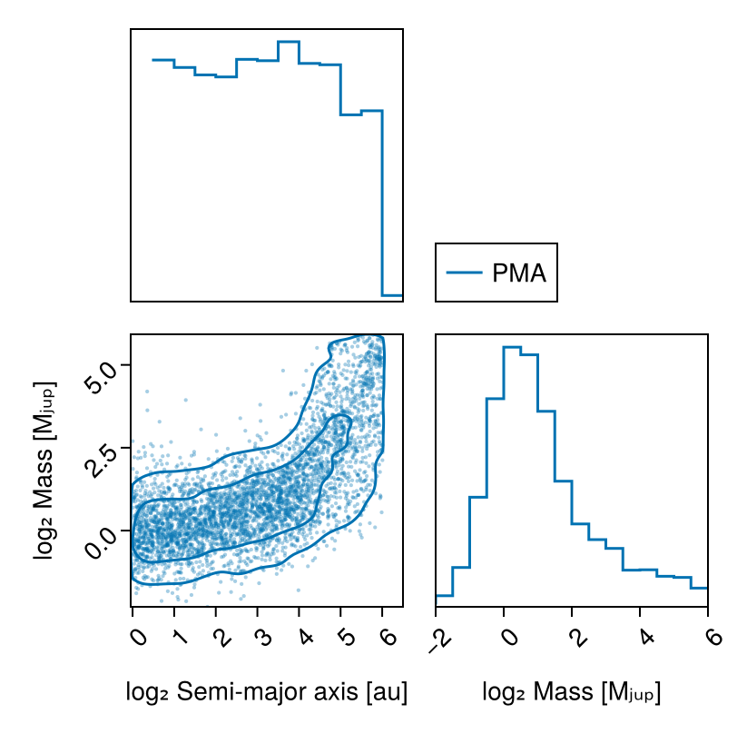
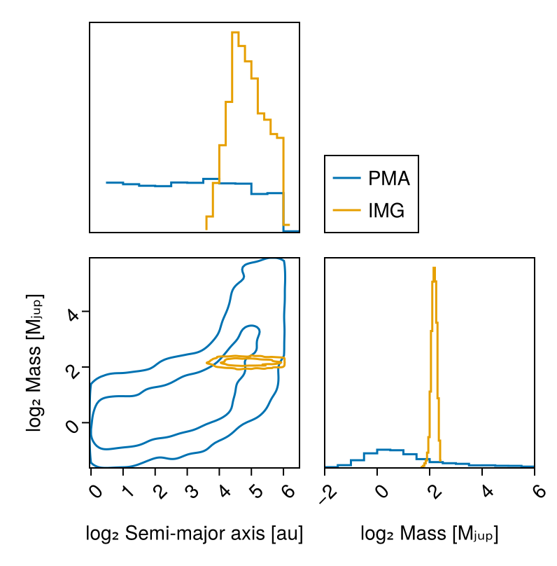
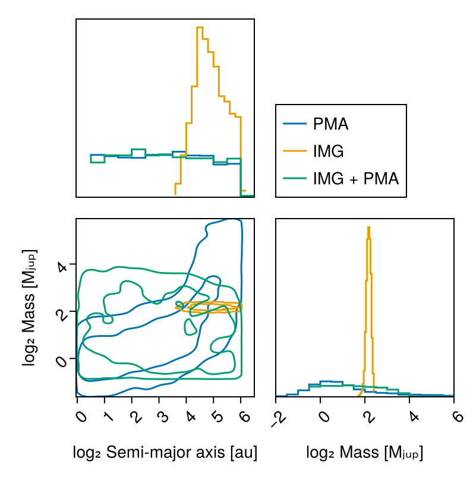

Detection Limits
This tutorial is a work in progress.
This guide shows how to calculate detection limits, in mass, or in photometry, as a function of orbital parameters for different combinations of data.
There are a few use cases for this:
- Mass limit vs semi-major axis given one or more images and/or contrast curves
- Mass limit vs semi-major axis given an RV non-detection
- Mass limit vs semi-major axis given proper motion anomaly from the GAIA-Hipparcos Catalog of Accelerations
- Any combination of the above
We will once more use some sample data from the system HD 91312 A & B discovered by SCExAO.
using Octofitter
using OctofitterImages
using OctofitterRadialVelocity
using Distributions
using Pigeons
using CairoMakie
using PairPlotsPhotometry Model
We will need to decide on an atmosphere model to map image intensities into mass. Here we use the Sonora Bobcat cooling and atmosphere models which will be auto-downloaded by Octofitter:
const cooling_tracks = Octofitter.sonora_cooling_interpolator()
const sonora_temp_mass_L = Octofitter.sonora_photometry_interpolator(:Keck_L′)(::Octofitter.var"#model_interpolator#184"{Interpolations.FilledExtrapolation{Float64, 2, Interpolations.ScaledInterpolation{Float64, 2, Interpolations.BSplineInterpolation{Float64, 2, Matrix{Float64}, Interpolations.BSpline{Interpolations.Linear{Interpolations.Throw{Interpolations.OnGrid}}}, Tuple{Base.OneTo{Int64}, Base.OneTo{Int64}}}, Interpolations.BSpline{Interpolations.Linear{Interpolations.Throw{Interpolations.OnGrid}}}, Tuple{StepRangeLen{Float64, Base.TwicePrecision{Float64}, Base.TwicePrecision{Float64}, Int64}, StepRangeLen{Float64, Base.TwicePrecision{Float64}, Base.TwicePrecision{Float64}, Int64}}}, Interpolations.BSpline{Interpolations.Linear{Interpolations.Throw{Interpolations.OnGrid}}}, Float64}, Float64, Float64, Float64, Float64}) (generic function with 1 method)Proper Motion Anomaly Data
We start by defining and sampling from a model that only includes proper motion anomaly data from the HGCA:
@planet B Visual{KepOrbit} begin
a ~ LogUniform(1, 65)
e ~ Uniform(0,0.9)
ω ~ Uniform(0,2pi)
i ~ Sine() # The Sine() distribution is defined by Octofitter
Ω ~ Uniform(0,pi)# ~ UniformCircular()
mass = system.M_sec
θ ~ Uniform(0,2pi)#UniformCircular()
tp = θ_at_epoch_to_tperi(system,B,57423.0) # epoch of GAIA measurement
end
@system HD91312_pma begin
M_pri ~ truncated(Normal(0.95, 0.05), lower=0) # Msol
M_sec ~ LogUniform(0.2, 65) # MJup
M = system.M_pri + system.M_sec*Octofitter.mjup2msol # Msol
plx ~ gaia_plx(gaia_id=6166183842771027328)
# Priors on the center of mass proper motion
pmra ~ Normal(0, 1000)
pmdec ~ Normal(0, 1000)
end HGCALikelihood(gaia_id=6166183842771027328) B
model_pma = Octofitter.LogDensityModel(HD91312_pma)LogDensityModel for System HD91312_pma of dimension 11 with fields .ℓπcallback and .∇ℓπcallback
Sample:
using Pigeons
chain_pma, pt = octofit_pigeons(model_pma, n_chains=16, n_chains_variational=16, n_rounds=12);┌ Info: Determining initial positions using pathfinder
└ chain_no = 1
┌ Info: Determining initial positions using pathfinder
└ chain_no = 2
┌ Info: Determining initial positions using pathfinder
└ chain_no = 3
┌ Info: Determining initial positions using pathfinder
└ chain_no = 4
┌ Info: Determining initial positions using pathfinder
└ chain_no = 5
┌ Info: Determining initial positions using pathfinder
└ chain_no = 6
┌ Info: Determining initial positions using pathfinder
└ chain_no = 7
┌ Info: Determining initial positions using pathfinder
└ chain_no = 8
┌ Info: Determining initial positions using pathfinder
└ chain_no = 9
┌ Info: Determining initial positions using pathfinder
└ chain_no = 10
┌ Info: Determining initial positions using pathfinder
└ chain_no = 11
┌ Info: Determining initial positions using pathfinder
└ chain_no = 12
┌ Info: Determining initial positions using pathfinder
└ chain_no = 13
┌ Info: Determining initial positions using pathfinder
└ chain_no = 14
┌ Info: Determining initial positions using pathfinder
└ chain_no = 15
┌ Info: Determining initial positions using pathfinder
└ chain_no = 16
┌ Error: Unexpected error occured running pathfinder
│ exception =
│ AssertionError: isfinite(phi_c) && isfinite(dphi_c)
│ Stacktrace:
│ [1] secant2!(ϕdϕ::LineSearches.var"#ϕdϕ#6"{Optim.ManifoldObjective{NLSolversBase.TwiceDifferentiable{Float64, Vector{Float64}, Matrix{Float64}, Vector{Float64}}}, Vector{Float64}, Vector{Float64}, Vector{Float64}}, alphas::Vector{Float64}, values::Vector{Float64}, slopes::Vector{Float64}, ia::Int64, ib::Int64, phi_lim::Float64, delta::Float64, sigma::Float64, display::Int64)
│ @ LineSearches ~/.julia/packages/LineSearches/G1LRk/src/hagerzhang.jl:369
│ [2] (::LineSearches.HagerZhang{Float64, Base.RefValue{Bool}})(ϕ::Function, ϕdϕ::LineSearches.var"#ϕdϕ#6"{Optim.ManifoldObjective{NLSolversBase.TwiceDifferentiable{Float64, Vector{Float64}, Matrix{Float64}, Vector{Float64}}}, Vector{Float64}, Vector{Float64}, Vector{Float64}}, c::Float64, phi_0::Float64, dphi_0::Float64)
│ @ LineSearches ~/.julia/packages/LineSearches/G1LRk/src/hagerzhang.jl:269
│ [3] HagerZhang
│ @ ~/.julia/packages/LineSearches/G1LRk/src/hagerzhang.jl:101 [inlined]
│ [4] perform_linesearch!(state::Optim.LBFGSState{Vector{Float64}, Vector{Vector{Float64}}, Vector{Vector{Float64}}, Float64, Vector{Float64}}, method::Optim.LBFGS{Nothing, LineSearches.InitialHagerZhang{Float64}, LineSearches.HagerZhang{Float64, Base.RefValue{Bool}}, Optim.var"#20#22"}, d::Optim.ManifoldObjective{NLSolversBase.TwiceDifferentiable{Float64, Vector{Float64}, Matrix{Float64}, Vector{Float64}}})
│ @ Optim ~/.julia/packages/Optim/ZhuZN/src/utilities/perform_linesearch.jl:58
│ [5] update_state!(d::NLSolversBase.TwiceDifferentiable{Float64, Vector{Float64}, Matrix{Float64}, Vector{Float64}}, state::Optim.LBFGSState{Vector{Float64}, Vector{Vector{Float64}}, Vector{Vector{Float64}}, Float64, Vector{Float64}}, method::Optim.LBFGS{Nothing, LineSearches.InitialHagerZhang{Float64}, LineSearches.HagerZhang{Float64, Base.RefValue{Bool}}, Optim.var"#20#22"})
│ @ Optim ~/.julia/packages/Optim/ZhuZN/src/multivariate/solvers/first_order/l_bfgs.jl:204
│ [6] optimize(d::NLSolversBase.TwiceDifferentiable{Float64, Vector{Float64}, Matrix{Float64}, Vector{Float64}}, initial_x::Vector{Float64}, method::Optim.LBFGS{Nothing, LineSearches.InitialHagerZhang{Float64}, LineSearches.HagerZhang{Float64, Base.RefValue{Bool}}, Optim.var"#20#22"}, options::Optim.Options{Float64, OptimizationOptimJL.var"#_cb#12"{OptimizationBase.OptimizationCache{SciMLBase.OptimizationFunction{true, SciMLBase.NoAD, Pathfinder.var"#f#5"{Octofitter.LogDensityModelAny}, OptimizationBase.var"#23#30"{SciMLBase.OptimizationFunction{true, SciMLBase.NoAD, Pathfinder.var"#f#5"{Octofitter.LogDensityModelAny}, Pathfinder.var"#grad#6"{Octofitter.LogDensityModelAny}, Pathfinder.var"#hess#7"{Octofitter.LogDensityModelAny}, Nothing, Nothing, Nothing, Nothing, Nothing, Nothing, Nothing, Nothing, Nothing, typeof(SciMLBase.DEFAULT_OBSERVED_NO_TIME), Nothing, Nothing, Nothing, Nothing, Nothing, Nothing, Nothing, Nothing, Nothing}, OptimizationBase.ReInitCache{Vector{Float64}, Nothing}}, OptimizationBase.var"#24#31"{SciMLBase.OptimizationFunction{true, SciMLBase.NoAD, Pathfinder.var"#f#5"{Octofitter.LogDensityModelAny}, Pathfinder.var"#grad#6"{Octofitter.LogDensityModelAny}, Pathfinder.var"#hess#7"{Octofitter.LogDensityModelAny}, Nothing, Nothing, Nothing, Nothing, Nothing, Nothing, Nothing, Nothing, Nothing, typeof(SciMLBase.DEFAULT_OBSERVED_NO_TIME), Nothing, Nothing, Nothing, Nothing, Nothing, Nothing, Nothing, Nothing, Nothing}, OptimizationBase.ReInitCache{Vector{Float64}, Nothing}}, Nothing, Nothing, Nothing, Nothing, Nothing, Nothing, Nothing, Nothing, Nothing, typeof(SciMLBase.DEFAULT_OBSERVED_NO_TIME), Nothing, Nothing, Nothing, Nothing, Nothing, Nothing, Nothing, Nothing, Nothing}, OptimizationBase.ReInitCache{Vector{Float64}, Nothing}, Nothing, Nothing, Nothing, Nothing, Nothing, Optim.LBFGS{Nothing, LineSearches.InitialHagerZhang{Float64}, LineSearches.HagerZhang{Float64, Base.RefValue{Bool}}, Optim.var"#20#22"}, Base.Iterators.Cycle{Tuple{OptimizationBase.NullData}}, Bool, Pathfinder.OptimizationCallback{Vector{Vector{Float64}}, Vector{Float64}, Vector{Vector{Float64}}, Pathfinder.var"#∇f#9"{SciMLBase.OptimizationFunction{true, SciMLBase.NoAD, Pathfinder.var"#f#5"{Octofitter.LogDensityModelAny}, Pathfinder.var"#grad#6"{Octofitter.LogDensityModelAny}, Pathfinder.var"#hess#7"{Octofitter.LogDensityModelAny}, Nothing, Nothing, Nothing, Nothing, Nothing, Nothing, Nothing, Nothing, Nothing, typeof(SciMLBase.DEFAULT_OBSERVED_NO_TIME), Nothing, Nothing, Nothing, Nothing, Nothing, Nothing, Nothing, Nothing, Nothing}}, Base.UUID, Nothing}, Nothing}}}, state::Optim.LBFGSState{Vector{Float64}, Vector{Vector{Float64}}, Vector{Vector{Float64}}, Float64, Vector{Float64}})
│ @ Optim ~/.julia/packages/Optim/ZhuZN/src/multivariate/optimize/optimize.jl:54
│ [7] optimize(d::NLSolversBase.TwiceDifferentiable{Float64, Vector{Float64}, Matrix{Float64}, Vector{Float64}}, initial_x::Vector{Float64}, method::Optim.LBFGS{Nothing, LineSearches.InitialHagerZhang{Float64}, LineSearches.HagerZhang{Float64, Base.RefValue{Bool}}, Optim.var"#20#22"}, options::Optim.Options{Float64, OptimizationOptimJL.var"#_cb#12"{OptimizationBase.OptimizationCache{SciMLBase.OptimizationFunction{true, SciMLBase.NoAD, Pathfinder.var"#f#5"{Octofitter.LogDensityModelAny}, OptimizationBase.var"#23#30"{SciMLBase.OptimizationFunction{true, SciMLBase.NoAD, Pathfinder.var"#f#5"{Octofitter.LogDensityModelAny}, Pathfinder.var"#grad#6"{Octofitter.LogDensityModelAny}, Pathfinder.var"#hess#7"{Octofitter.LogDensityModelAny}, Nothing, Nothing, Nothing, Nothing, Nothing, Nothing, Nothing, Nothing, Nothing, typeof(SciMLBase.DEFAULT_OBSERVED_NO_TIME), Nothing, Nothing, Nothing, Nothing, Nothing, Nothing, Nothing, Nothing, Nothing}, OptimizationBase.ReInitCache{Vector{Float64}, Nothing}}, OptimizationBase.var"#24#31"{SciMLBase.OptimizationFunction{true, SciMLBase.NoAD, Pathfinder.var"#f#5"{Octofitter.LogDensityModelAny}, Pathfinder.var"#grad#6"{Octofitter.LogDensityModelAny}, Pathfinder.var"#hess#7"{Octofitter.LogDensityModelAny}, Nothing, Nothing, Nothing, Nothing, Nothing, Nothing, Nothing, Nothing, Nothing, typeof(SciMLBase.DEFAULT_OBSERVED_NO_TIME), Nothing, Nothing, Nothing, Nothing, Nothing, Nothing, Nothing, Nothing, Nothing}, OptimizationBase.ReInitCache{Vector{Float64}, Nothing}}, Nothing, Nothing, Nothing, Nothing, Nothing, Nothing, Nothing, Nothing, Nothing, typeof(SciMLBase.DEFAULT_OBSERVED_NO_TIME), Nothing, Nothing, Nothing, Nothing, Nothing, Nothing, Nothing, Nothing, Nothing}, OptimizationBase.ReInitCache{Vector{Float64}, Nothing}, Nothing, Nothing, Nothing, Nothing, Nothing, Optim.LBFGS{Nothing, LineSearches.InitialHagerZhang{Float64}, LineSearches.HagerZhang{Float64, Base.RefValue{Bool}}, Optim.var"#20#22"}, Base.Iterators.Cycle{Tuple{OptimizationBase.NullData}}, Bool, Pathfinder.OptimizationCallback{Vector{Vector{Float64}}, Vector{Float64}, Vector{Vector{Float64}}, Pathfinder.var"#∇f#9"{SciMLBase.OptimizationFunction{true, SciMLBase.NoAD, Pathfinder.var"#f#5"{Octofitter.LogDensityModelAny}, Pathfinder.var"#grad#6"{Octofitter.LogDensityModelAny}, Pathfinder.var"#hess#7"{Octofitter.LogDensityModelAny}, Nothing, Nothing, Nothing, Nothing, Nothing, Nothing, Nothing, Nothing, Nothing, typeof(SciMLBase.DEFAULT_OBSERVED_NO_TIME), Nothing, Nothing, Nothing, Nothing, Nothing, Nothing, Nothing, Nothing, Nothing}}, Base.UUID, Nothing}, Nothing}}})
│ @ Optim ~/.julia/packages/Optim/ZhuZN/src/multivariate/optimize/optimize.jl:36
│ [8] __solve(cache::OptimizationBase.OptimizationCache{SciMLBase.OptimizationFunction{true, SciMLBase.NoAD, Pathfinder.var"#f#5"{Octofitter.LogDensityModelAny}, OptimizationBase.var"#23#30"{SciMLBase.OptimizationFunction{true, SciMLBase.NoAD, Pathfinder.var"#f#5"{Octofitter.LogDensityModelAny}, Pathfinder.var"#grad#6"{Octofitter.LogDensityModelAny}, Pathfinder.var"#hess#7"{Octofitter.LogDensityModelAny}, Nothing, Nothing, Nothing, Nothing, Nothing, Nothing, Nothing, Nothing, Nothing, typeof(SciMLBase.DEFAULT_OBSERVED_NO_TIME), Nothing, Nothing, Nothing, Nothing, Nothing, Nothing, Nothing, Nothing, Nothing}, OptimizationBase.ReInitCache{Vector{Float64}, Nothing}}, OptimizationBase.var"#24#31"{SciMLBase.OptimizationFunction{true, SciMLBase.NoAD, Pathfinder.var"#f#5"{Octofitter.LogDensityModelAny}, Pathfinder.var"#grad#6"{Octofitter.LogDensityModelAny}, Pathfinder.var"#hess#7"{Octofitter.LogDensityModelAny}, Nothing, Nothing, Nothing, Nothing, Nothing, Nothing, Nothing, Nothing, Nothing, typeof(SciMLBase.DEFAULT_OBSERVED_NO_TIME), Nothing, Nothing, Nothing, Nothing, Nothing, Nothing, Nothing, Nothing, Nothing}, OptimizationBase.ReInitCache{Vector{Float64}, Nothing}}, Nothing, Nothing, Nothing, Nothing, Nothing, Nothing, Nothing, Nothing, Nothing, typeof(SciMLBase.DEFAULT_OBSERVED_NO_TIME), Nothing, Nothing, Nothing, Nothing, Nothing, Nothing, Nothing, Nothing, Nothing}, OptimizationBase.ReInitCache{Vector{Float64}, Nothing}, Nothing, Nothing, Nothing, Nothing, Nothing, Optim.LBFGS{Nothing, LineSearches.InitialHagerZhang{Float64}, LineSearches.HagerZhang{Float64, Base.RefValue{Bool}}, Optim.var"#20#22"}, Base.Iterators.Cycle{Tuple{OptimizationBase.NullData}}, Bool, Pathfinder.OptimizationCallback{Vector{Vector{Float64}}, Vector{Float64}, Vector{Vector{Float64}}, Pathfinder.var"#∇f#9"{SciMLBase.OptimizationFunction{true, SciMLBase.NoAD, Pathfinder.var"#f#5"{Octofitter.LogDensityModelAny}, Pathfinder.var"#grad#6"{Octofitter.LogDensityModelAny}, Pathfinder.var"#hess#7"{Octofitter.LogDensityModelAny}, Nothing, Nothing, Nothing, Nothing, Nothing, Nothing, Nothing, Nothing, Nothing, typeof(SciMLBase.DEFAULT_OBSERVED_NO_TIME), Nothing, Nothing, Nothing, Nothing, Nothing, Nothing, Nothing, Nothing, Nothing}}, Base.UUID, Nothing}, Nothing})
│ @ OptimizationOptimJL ~/.julia/packages/OptimizationOptimJL/hDX5k/src/OptimizationOptimJL.jl:224
│ [9] solve!
│ @ ~/.julia/packages/SciMLBase/rR75x/src/solve.jl:188 [inlined]
│ [10] #solve#627
│ @ ~/.julia/packages/SciMLBase/rR75x/src/solve.jl:96 [inlined]
│ [11] optimize_with_trace(prob::SciMLBase.OptimizationProblem{true, SciMLBase.OptimizationFunction{true, SciMLBase.NoAD, Pathfinder.var"#f#5"{Octofitter.LogDensityModelAny}, Pathfinder.var"#grad#6"{Octofitter.LogDensityModelAny}, Pathfinder.var"#hess#7"{Octofitter.LogDensityModelAny}, Nothing, Nothing, Nothing, Nothing, Nothing, Nothing, Nothing, Nothing, Nothing, typeof(SciMLBase.DEFAULT_OBSERVED_NO_TIME), Nothing, Nothing, Nothing, Nothing, Nothing, Nothing, Nothing, Nothing, Nothing}, Vector{Float64}, Nothing, Nothing, Nothing, Nothing, Nothing, Nothing, Nothing, @Kwargs{}}, optimizer::Optim.LBFGS{Nothing, LineSearches.InitialHagerZhang{Float64}, LineSearches.HagerZhang{Float64, Base.RefValue{Bool}}, Optim.var"#20#22"}; progress_name::String, progress_id::Base.UUID, maxiters::Int64, callback::Nothing, fail_on_nonfinite::Bool, kwargs::@Kwargs{progress::Bool, reltol::Float64})
│ @ Pathfinder ~/.julia/packages/Pathfinder/OduAC/src/optimize.jl:46
│ [12] optimize_with_trace
│ @ ~/.julia/packages/Pathfinder/OduAC/src/optimize.jl:20 [inlined]
│ [13] _pathfinder(rng::SplittableRandoms.SplittableRandom, prob::SciMLBase.OptimizationProblem{true, SciMLBase.OptimizationFunction{true, SciMLBase.NoAD, Pathfinder.var"#f#5"{Octofitter.LogDensityModelAny}, Pathfinder.var"#grad#6"{Octofitter.LogDensityModelAny}, Pathfinder.var"#hess#7"{Octofitter.LogDensityModelAny}, Nothing, Nothing, Nothing, Nothing, Nothing, Nothing, Nothing, Nothing, Nothing, typeof(SciMLBase.DEFAULT_OBSERVED_NO_TIME), Nothing, Nothing, Nothing, Nothing, Nothing, Nothing, Nothing, Nothing, Nothing}, Vector{Float64}, Nothing, Nothing, Nothing, Nothing, Nothing, Nothing, Nothing, @Kwargs{}}, logp::Pathfinder.var"#logp#23"{SciMLBase.OptimizationProblem{true, SciMLBase.OptimizationFunction{true, SciMLBase.NoAD, Pathfinder.var"#f#5"{Octofitter.LogDensityModelAny}, Pathfinder.var"#grad#6"{Octofitter.LogDensityModelAny}, Pathfinder.var"#hess#7"{Octofitter.LogDensityModelAny}, Nothing, Nothing, Nothing, Nothing, Nothing, Nothing, Nothing, Nothing, Nothing, typeof(SciMLBase.DEFAULT_OBSERVED_NO_TIME), Nothing, Nothing, Nothing, Nothing, Nothing, Nothing, Nothing, Nothing, Nothing}, Vector{Float64}, Nothing, Nothing, Nothing, Nothing, Nothing, Nothing, Nothing, @Kwargs{}}}; history_length::Int64, optimizer::Optim.LBFGS{Nothing, LineSearches.InitialHagerZhang{Float64}, LineSearches.HagerZhang{Float64, Base.RefValue{Bool}}, Optim.var"#20#22"}, ndraws_elbo::Int64, executor::Transducers.SequentialEx{@NamedTuple{}}, kwargs::@Kwargs{progress_name::String, progress_id::Base.UUID, progress::Bool, maxiters::Int64, reltol::Float64})
│ @ Pathfinder ~/.julia/packages/Pathfinder/OduAC/src/singlepath.jl:288
│ [14] _pathfinder
│ @ ~/.julia/packages/Pathfinder/OduAC/src/singlepath.jl:277 [inlined]
│ [15] _pathfinder_try_until_succeed(rng::SplittableRandoms.SplittableRandom, prob::SciMLBase.OptimizationProblem{true, SciMLBase.OptimizationFunction{true, SciMLBase.NoAD, Pathfinder.var"#f#5"{Octofitter.LogDensityModelAny}, Pathfinder.var"#grad#6"{Octofitter.LogDensityModelAny}, Pathfinder.var"#hess#7"{Octofitter.LogDensityModelAny}, Nothing, Nothing, Nothing, Nothing, Nothing, Nothing, Nothing, Nothing, Nothing, typeof(SciMLBase.DEFAULT_OBSERVED_NO_TIME), Nothing, Nothing, Nothing, Nothing, Nothing, Nothing, Nothing, Nothing, Nothing}, Vector{Float64}, Nothing, Nothing, Nothing, Nothing, Nothing, Nothing, Nothing, @Kwargs{}}, logp::Pathfinder.var"#logp#23"{SciMLBase.OptimizationProblem{true, SciMLBase.OptimizationFunction{true, SciMLBase.NoAD, Pathfinder.var"#f#5"{Octofitter.LogDensityModelAny}, Pathfinder.var"#grad#6"{Octofitter.LogDensityModelAny}, Pathfinder.var"#hess#7"{Octofitter.LogDensityModelAny}, Nothing, Nothing, Nothing, Nothing, Nothing, Nothing, Nothing, Nothing, Nothing, typeof(SciMLBase.DEFAULT_OBSERVED_NO_TIME), Nothing, Nothing, Nothing, Nothing, Nothing, Nothing, Nothing, Nothing, Nothing}, Vector{Float64}, Nothing, Nothing, Nothing, Nothing, Nothing, Nothing, Nothing, @Kwargs{}}}; ntries::Int64, init_scale::Int64, init_sampler::Octofitter.CallableAny, allow_mutating_init::Bool, kwargs::@Kwargs{history_length::Int64, optimizer::Optim.LBFGS{Nothing, LineSearches.InitialHagerZhang{Float64}, LineSearches.HagerZhang{Float64, Base.RefValue{Bool}}, Optim.var"#20#22"}, progress_id::Base.UUID, ndraws_elbo::Int64, progress::Bool, maxiters::Int64, reltol::Float64})
│ @ Pathfinder ~/.julia/packages/Pathfinder/OduAC/src/singlepath.jl:263
│ [16] _pathfinder_try_until_succeed
│ @ ~/.julia/packages/Pathfinder/OduAC/src/singlepath.jl:251 [inlined]
│ [17] #22
│ @ ~/.julia/packages/Pathfinder/OduAC/src/singlepath.jl:180 [inlined]
│ [18] progress(f::Pathfinder.var"#22#24"{SplittableRandoms.SplittableRandom, Int64, Optim.LBFGS{Nothing, LineSearches.InitialHagerZhang{Float64}, LineSearches.HagerZhang{Float64, Base.RefValue{Bool}}, Optim.var"#20#22"}, Int64, @Kwargs{init_sampler::Octofitter.CallableAny, allow_mutating_init::Bool, progress::Bool, maxiters::Int64, reltol::Float64}, SciMLBase.OptimizationProblem{true, SciMLBase.OptimizationFunction{true, SciMLBase.NoAD, Pathfinder.var"#f#5"{Octofitter.LogDensityModelAny}, Pathfinder.var"#grad#6"{Octofitter.LogDensityModelAny}, Pathfinder.var"#hess#7"{Octofitter.LogDensityModelAny}, Nothing, Nothing, Nothing, Nothing, Nothing, Nothing, Nothing, Nothing, Nothing, typeof(SciMLBase.DEFAULT_OBSERVED_NO_TIME), Nothing, Nothing, Nothing, Nothing, Nothing, Nothing, Nothing, Nothing, Nothing}, Vector{Float64}, Nothing, Nothing, Nothing, Nothing, Nothing, Nothing, Nothing, @Kwargs{}}, Pathfinder.var"#logp#23"{SciMLBase.OptimizationProblem{true, SciMLBase.OptimizationFunction{true, SciMLBase.NoAD, Pathfinder.var"#f#5"{Octofitter.LogDensityModelAny}, Pathfinder.var"#grad#6"{Octofitter.LogDensityModelAny}, Pathfinder.var"#hess#7"{Octofitter.LogDensityModelAny}, Nothing, Nothing, Nothing, Nothing, Nothing, Nothing, Nothing, Nothing, Nothing, typeof(SciMLBase.DEFAULT_OBSERVED_NO_TIME), Nothing, Nothing, Nothing, Nothing, Nothing, Nothing, Nothing, Nothing, Nothing}, Vector{Float64}, Nothing, Nothing, Nothing, Nothing, Nothing, Nothing, Nothing, @Kwargs{}}}}; name::String)
│ @ ProgressLogging ~/.julia/packages/ProgressLogging/6KXlp/src/ProgressLogging.jl:262
│ [19] progress
│ @ ~/.julia/packages/ProgressLogging/6KXlp/src/ProgressLogging.jl:258 [inlined]
│ [20] pathfinder(prob::SciMLBase.OptimizationProblem{true, SciMLBase.OptimizationFunction{true, SciMLBase.NoAD, Pathfinder.var"#f#5"{Octofitter.LogDensityModelAny}, Pathfinder.var"#grad#6"{Octofitter.LogDensityModelAny}, Pathfinder.var"#hess#7"{Octofitter.LogDensityModelAny}, Nothing, Nothing, Nothing, Nothing, Nothing, Nothing, Nothing, Nothing, Nothing, typeof(SciMLBase.DEFAULT_OBSERVED_NO_TIME), Nothing, Nothing, Nothing, Nothing, Nothing, Nothing, Nothing, Nothing, Nothing}, Vector{Float64}, Nothing, Nothing, Nothing, Nothing, Nothing, Nothing, Nothing, @Kwargs{}}; rng::SplittableRandoms.SplittableRandom, history_length::Int64, optimizer::Optim.LBFGS{Nothing, LineSearches.InitialHagerZhang{Float64}, LineSearches.HagerZhang{Float64, Base.RefValue{Bool}}, Optim.var"#20#22"}, ndraws_elbo::Int64, ndraws::Int64, input::Octofitter.LogDensityModelAny, kwargs::@Kwargs{init_sampler::Octofitter.CallableAny, allow_mutating_init::Bool, progress::Bool, maxiters::Int64, reltol::Float64})
│ @ Pathfinder ~/.julia/packages/Pathfinder/OduAC/src/singlepath.jl:179
│ [21] pathfinder
│ @ ~/.julia/packages/Pathfinder/OduAC/src/singlepath.jl:165 [inlined]
│ [22] #pathfinder#20
│ @ ~/.julia/packages/Pathfinder/OduAC/src/singlepath.jl:163 [inlined]
│ [23] pathfinder
│ @ ~/.julia/packages/Pathfinder/OduAC/src/singlepath.jl:142 [inlined]
│ [24] pathfinder(ℓ::Octofitter.LogDensityModelAny; input::Octofitter.LogDensityModelAny, kwargs::@Kwargs{init_sampler::Octofitter.CallableAny, progress::Bool, maxiters::Int64, reltol::Float64, rng::SplittableRandoms.SplittableRandom})
│ @ Pathfinder ~/.julia/packages/Pathfinder/OduAC/src/singlepath.jl:140
│ [25] pathfinder
│ @ ~/.julia/packages/Pathfinder/OduAC/src/singlepath.jl:136 [inlined]
│ [26] (::OctofitterPigeonsExt.var"#3#6"{SplittableRandoms.SplittableRandom, Octofitter.LogDensityModelAny, Int64, OctofitterPigeonsExt.var"#2#5"{Octofitter.LogDensityModel{Octofitter.var"#ℓπcallback#61"{System{Priors, Derived, Tuple{HGCALikelihood{Table{@NamedTuple{hip_id::Int32, gaia_source_id::Int64, gaia_ra::Float64, gaia_dec::Float64, radial_velocity::Float32, radial_velocity_error::Float32, radial_velocity_source::String, parallax_gaia::Float32, parallax_gaia_error::Float32, pmra_gaia::Float32, pmdec_gaia::Float32, pmra_gaia_error::Float32, pmdec_gaia_error::Float32, pmra_pmdec_gaia::Float32, pmra_hg::Float32, pmdec_hg::Float32, pmra_hg_error::Float32, pmdec_hg_error::Float32, pmra_pmdec_hg::Float32, pmra_hip::Float32, pmdec_hip::Float32, pmra_hip_error::Float32, pmdec_hip_error::Float32, pmra_pmdec_hip::Float32, epoch_ra_gaia::Float64, epoch_dec_gaia::Float64, epoch_ra_hip::Float64, epoch_dec_hip::Float64, crosscal_pmra_hip::Float32, crosscal_pmdec_hip::Float32, crosscal_pmra_hg::Float32, crosscal_pmdec_hg::Float32, nonlinear_dpmra::Float32, nonlinear_dpmdec::Float32, chisq::Float32}, 1, @NamedTuple{hip_id::Vector{Int32}, gaia_source_id::Vector{Int64}, gaia_ra::Vector{Float64}, gaia_dec::Vector{Float64}, radial_velocity::Vector{Float32}, radial_velocity_error::Vector{Float32}, radial_velocity_source::Vector{String}, parallax_gaia::Vector{Float32}, parallax_gaia_error::Vector{Float32}, pmra_gaia::Vector{Float32}, pmdec_gaia::Vector{Float32}, pmra_gaia_error::Vector{Float32}, pmdec_gaia_error::Vector{Float32}, pmra_pmdec_gaia::Vector{Float32}, pmra_hg::Vector{Float32}, pmdec_hg::Vector{Float32}, pmra_hg_error::Vector{Float32}, pmdec_hg_error::Vector{Float32}, pmra_pmdec_hg::Vector{Float32}, pmra_hip::Vector{Float32}, pmdec_hip::Vector{Float32}, pmra_hip_error::Vector{Float32}, pmdec_hip_error::Vector{Float32}, pmra_pmdec_hip::Vector{Float32}, epoch_ra_gaia::Vector{Float64}, epoch_dec_gaia::Vector{Float64}, epoch_ra_hip::Vector{Float64}, epoch_dec_hip::Vector{Float64}, crosscal_pmra_hip::Vector{Float32}, crosscal_pmdec_hip::Vector{Float32}, crosscal_pmra_hg::Vector{Float32}, crosscal_pmdec_hg::Vector{Float32}, nonlinear_dpmra::Vector{Float32}, nonlinear_dpmdec::Vector{Float32}, chisq::Vector{Float32}}}}}, @NamedTuple{B::Planet{Visual{KepOrbit}, Priors, Derived, Tuple{}}}}, RuntimeGeneratedFunctions.RuntimeGeneratedFunction{(:arr,), Octofitter.var"#_RGF_ModTag", Octofitter.var"#_RGF_ModTag", (0xf8054613, 0xc8386ba8, 0xbb8e7498, 0x2d74eb58, 0xac4ab292), Expr}, RuntimeGeneratedFunctions.RuntimeGeneratedFunction{(:arr,), Octofitter.var"#_RGF_ModTag", Octofitter.var"#_RGF_ModTag", (0x57810edc, 0x47b08378, 0x10e8d894, 0x8551bccc, 0x0cf26b74), Expr}, RuntimeGeneratedFunctions.RuntimeGeneratedFunction{(:arr,), Octofitter.var"#_RGF_ModTag", Octofitter.var"#_RGF_ModTag", (0x5da008f1, 0xa6aad75c, 0xddaae6d1, 0x9240742d, 0xab16df31), Expr}, RuntimeGeneratedFunctions.RuntimeGeneratedFunction{(:system, :θ_system), Octofitter.var"#_RGF_ModTag", Octofitter.var"#_RGF_ModTag", (0xcf3b653f, 0xacbb62d1, 0x1c8a3904, 0x4010c162, 0xaed73b24), Expr}}, Octofitter.var"#57#69"{ForwardDiff.GradientConfig{ForwardDiff.Tag{Octofitter.var"#ℓπcallback#61"{System{Priors, Derived, Tuple{HGCALikelihood{Table{@NamedTuple{hip_id::Int32, gaia_source_id::Int64, gaia_ra::Float64, gaia_dec::Float64, radial_velocity::Float32, radial_velocity_error::Float32, radial_velocity_source::String, parallax_gaia::Float32, parallax_gaia_error::Float32, pmra_gaia::Float32, pmdec_gaia::Float32, pmra_gaia_error::Float32, pmdec_gaia_error::Float32, pmra_pmdec_gaia::Float32, pmra_hg::Float32, pmdec_hg::Float32, pmra_hg_error::Float32, pmdec_hg_error::Float32, pmra_pmdec_hg::Float32, pmra_hip::Float32, pmdec_hip::Float32, pmra_hip_error::Float32, pmdec_hip_error::Float32, pmra_pmdec_hip::Float32, epoch_ra_gaia::Float64, epoch_dec_gaia::Float64, epoch_ra_hip::Float64, epoch_dec_hip::Float64, crosscal_pmra_hip::Float32, crosscal_pmdec_hip::Float32, crosscal_pmra_hg::Float32, crosscal_pmdec_hg::Float32, nonlinear_dpmra::Float32, nonlinear_dpmdec::Float32, chisq::Float32}, 1, @NamedTuple{hip_id::Vector{Int32}, gaia_source_id::Vector{Int64}, gaia_ra::Vector{Float64}, gaia_dec::Vector{Float64}, radial_velocity::Vector{Float32}, radial_velocity_error::Vector{Float32}, radial_velocity_source::Vector{String}, parallax_gaia::Vector{Float32}, parallax_gaia_error::Vector{Float32}, pmra_gaia::Vector{Float32}, pmdec_gaia::Vector{Float32}, pmra_gaia_error::Vector{Float32}, pmdec_gaia_error::Vector{Float32}, pmra_pmdec_gaia::Vector{Float32}, pmra_hg::Vector{Float32}, pmdec_hg::Vector{Float32}, pmra_hg_error::Vector{Float32}, pmdec_hg_error::Vector{Float32}, pmra_pmdec_hg::Vector{Float32}, pmra_hip::Vector{Float32}, pmdec_hip::Vector{Float32}, pmra_hip_error::Vector{Float32}, pmdec_hip_error::Vector{Float32}, pmra_pmdec_hip::Vector{Float32}, epoch_ra_gaia::Vector{Float64}, epoch_dec_gaia::Vector{Float64}, epoch_ra_hip::Vector{Float64}, epoch_dec_hip::Vector{Float64}, crosscal_pmra_hip::Vector{Float32}, crosscal_pmdec_hip::Vector{Float32}, crosscal_pmra_hg::Vector{Float32}, crosscal_pmdec_hg::Vector{Float32}, nonlinear_dpmra::Vector{Float32}, nonlinear_dpmdec::Vector{Float32}, chisq::Vector{Float32}}}}}, @NamedTuple{B::Planet{Visual{KepOrbit}, Priors, Derived, Tuple{}}}}, RuntimeGeneratedFunctions.RuntimeGeneratedFunction{(:arr,), Octofitter.var"#_RGF_ModTag", Octofitter.var"#_RGF_ModTag", (0xf8054613, 0xc8386ba8, 0xbb8e7498, 0x2d74eb58, 0xac4ab292), Expr}, RuntimeGeneratedFunctions.RuntimeGeneratedFunction{(:arr,), Octofitter.var"#_RGF_ModTag", Octofitter.var"#_RGF_ModTag", (0x57810edc, 0x47b08378, 0x10e8d894, 0x8551bccc, 0x0cf26b74), Expr}, RuntimeGeneratedFunctions.RuntimeGeneratedFunction{(:arr,), Octofitter.var"#_RGF_ModTag", Octofitter.var"#_RGF_ModTag", (0x5da008f1, 0xa6aad75c, 0xddaae6d1, 0x9240742d, 0xab16df31), Expr}, RuntimeGeneratedFunctions.RuntimeGeneratedFunction{(:system, :θ_system), Octofitter.var"#_RGF_ModTag", Octofitter.var"#_RGF_ModTag", (0xcf3b653f, 0xacbb62d1, 0x1c8a3904, 0x4010c162, 0xaed73b24), Expr}}, Float64}, Float64, 11, Vector{ForwardDiff.Dual{ForwardDiff.Tag{Octofitter.var"#ℓπcallback#61"{System{Priors, Derived, Tuple{HGCALikelihood{Table{@NamedTuple{hip_id::Int32, gaia_source_id::Int64, gaia_ra::Float64, gaia_dec::Float64, radial_velocity::Float32, radial_velocity_error::Float32, radial_velocity_source::String, parallax_gaia::Float32, parallax_gaia_error::Float32, pmra_gaia::Float32, pmdec_gaia::Float32, pmra_gaia_error::Float32, pmdec_gaia_error::Float32, pmra_pmdec_gaia::Float32, pmra_hg::Float32, pmdec_hg::Float32, pmra_hg_error::Float32, pmdec_hg_error::Float32, pmra_pmdec_hg::Float32, pmra_hip::Float32, pmdec_hip::Float32, pmra_hip_error::Float32, pmdec_hip_error::Float32, pmra_pmdec_hip::Float32, epoch_ra_gaia::Float64, epoch_dec_gaia::Float64, epoch_ra_hip::Float64, epoch_dec_hip::Float64, crosscal_pmra_hip::Float32, crosscal_pmdec_hip::Float32, crosscal_pmra_hg::Float32, crosscal_pmdec_hg::Float32, nonlinear_dpmra::Float32, nonlinear_dpmdec::Float32, chisq::Float32}, 1, @NamedTuple{hip_id::Vector{Int32}, gaia_source_id::Vector{Int64}, gaia_ra::Vector{Float64}, gaia_dec::Vector{Float64}, radial_velocity::Vector{Float32}, radial_velocity_error::Vector{Float32}, radial_velocity_source::Vector{String}, parallax_gaia::Vector{Float32}, parallax_gaia_error::Vector{Float32}, pmra_gaia::Vector{Float32}, pmdec_gaia::Vector{Float32}, pmra_gaia_error::Vector{Float32}, pmdec_gaia_error::Vector{Float32}, pmra_pmdec_gaia::Vector{Float32}, pmra_hg::Vector{Float32}, pmdec_hg::Vector{Float32}, pmra_hg_error::Vector{Float32}, pmdec_hg_error::Vector{Float32}, pmra_pmdec_hg::Vector{Float32}, pmra_hip::Vector{Float32}, pmdec_hip::Vector{Float32}, pmra_hip_error::Vector{Float32}, pmdec_hip_error::Vector{Float32}, pmra_pmdec_hip::Vector{Float32}, epoch_ra_gaia::Vector{Float64}, epoch_dec_gaia::Vector{Float64}, epoch_ra_hip::Vector{Float64}, epoch_dec_hip::Vector{Float64}, crosscal_pmra_hip::Vector{Float32}, crosscal_pmdec_hip::Vector{Float32}, crosscal_pmra_hg::Vector{Float32}, crosscal_pmdec_hg::Vector{Float32}, nonlinear_dpmra::Vector{Float32}, nonlinear_dpmdec::Vector{Float32}, chisq::Vector{Float32}}}}}, @NamedTuple{B::Planet{Visual{KepOrbit}, Priors, Derived, Tuple{}}}}, RuntimeGeneratedFunctions.RuntimeGeneratedFunction{(:arr,), Octofitter.var"#_RGF_ModTag", Octofitter.var"#_RGF_ModTag", (0xf8054613, 0xc8386ba8, 0xbb8e7498, 0x2d74eb58, 0xac4ab292), Expr}, RuntimeGeneratedFunctions.RuntimeGeneratedFunction{(:arr,), Octofitter.var"#_RGF_ModTag", Octofitter.var"#_RGF_ModTag", (0x57810edc, 0x47b08378, 0x10e8d894, 0x8551bccc, 0x0cf26b74), Expr}, RuntimeGeneratedFunctions.RuntimeGeneratedFunction{(:arr,), Octofitter.var"#_RGF_ModTag", Octofitter.var"#_RGF_ModTag", (0x5da008f1, 0xa6aad75c, 0xddaae6d1, 0x9240742d, 0xab16df31), Expr}, RuntimeGeneratedFunctions.RuntimeGeneratedFunction{(:system, :θ_system), Octofitter.var"#_RGF_ModTag", Octofitter.var"#_RGF_ModTag", (0xcf3b653f, 0xacbb62d1, 0x1c8a3904, 0x4010c162, 0xaed73b24), Expr}}, Float64}, Float64, 11}}}, Vector{DiffResults.MutableDiffResult{1, Float64, Tuple{Vector{Float64}}}}, Octofitter.var"#ℓπcallback#61"{System{Priors, Derived, Tuple{HGCALikelihood{Table{@NamedTuple{hip_id::Int32, gaia_source_id::Int64, gaia_ra::Float64, gaia_dec::Float64, radial_velocity::Float32, radial_velocity_error::Float32, radial_velocity_source::String, parallax_gaia::Float32, parallax_gaia_error::Float32, pmra_gaia::Float32, pmdec_gaia::Float32, pmra_gaia_error::Float32, pmdec_gaia_error::Float32, pmra_pmdec_gaia::Float32, pmra_hg::Float32, pmdec_hg::Float32, pmra_hg_error::Float32, pmdec_hg_error::Float32, pmra_pmdec_hg::Float32, pmra_hip::Float32, pmdec_hip::Float32, pmra_hip_error::Float32, pmdec_hip_error::Float32, pmra_pmdec_hip::Float32, epoch_ra_gaia::Float64, epoch_dec_gaia::Float64, epoch_ra_hip::Float64, epoch_dec_hip::Float64, crosscal_pmra_hip::Float32, crosscal_pmdec_hip::Float32, crosscal_pmra_hg::Float32, crosscal_pmdec_hg::Float32, nonlinear_dpmra::Float32, nonlinear_dpmdec::Float32, chisq::Float32}, 1, @NamedTuple{hip_id::Vector{Int32}, gaia_source_id::Vector{Int64}, gaia_ra::Vector{Float64}, gaia_dec::Vector{Float64}, radial_velocity::Vector{Float32}, radial_velocity_error::Vector{Float32}, radial_velocity_source::Vector{String}, parallax_gaia::Vector{Float32}, parallax_gaia_error::Vector{Float32}, pmra_gaia::Vector{Float32}, pmdec_gaia::Vector{Float32}, pmra_gaia_error::Vector{Float32}, pmdec_gaia_error::Vector{Float32}, pmra_pmdec_gaia::Vector{Float32}, pmra_hg::Vector{Float32}, pmdec_hg::Vector{Float32}, pmra_hg_error::Vector{Float32}, pmdec_hg_error::Vector{Float32}, pmra_pmdec_hg::Vector{Float32}, pmra_hip::Vector{Float32}, pmdec_hip::Vector{Float32}, pmra_hip_error::Vector{Float32}, pmdec_hip_error::Vector{Float32}, pmra_pmdec_hip::Vector{Float32}, epoch_ra_gaia::Vector{Float64}, epoch_dec_gaia::Vector{Float64}, epoch_ra_hip::Vector{Float64}, epoch_dec_hip::Vector{Float64}, crosscal_pmra_hip::Vector{Float32}, crosscal_pmdec_hip::Vector{Float32}, crosscal_pmra_hg::Vector{Float32}, crosscal_pmdec_hg::Vector{Float32}, nonlinear_dpmra::Vector{Float32}, nonlinear_dpmdec::Vector{Float32}, chisq::Vector{Float32}}}}}, @NamedTuple{B::Planet{Visual{KepOrbit}, Priors, Derived, Tuple{}}}}, RuntimeGeneratedFunctions.RuntimeGeneratedFunction{(:arr,), Octofitter.var"#_RGF_ModTag", Octofitter.var"#_RGF_ModTag", (0xf8054613, 0xc8386ba8, 0xbb8e7498, 0x2d74eb58, 0xac4ab292), Expr}, RuntimeGeneratedFunctions.RuntimeGeneratedFunction{(:arr,), Octofitter.var"#_RGF_ModTag", Octofitter.var"#_RGF_ModTag", (0x57810edc, 0x47b08378, 0x10e8d894, 0x8551bccc, 0x0cf26b74), Expr}, RuntimeGeneratedFunctions.RuntimeGeneratedFunction{(:arr,), Octofitter.var"#_RGF_ModTag", Octofitter.var"#_RGF_ModTag", (0x5da008f1, 0xa6aad75c, 0xddaae6d1, 0x9240742d, 0xab16df31), Expr}, RuntimeGeneratedFunctions.RuntimeGeneratedFunction{(:system, :θ_system), Octofitter.var"#_RGF_ModTag", Octofitter.var"#_RGF_ModTag", (0xcf3b653f, 0xacbb62d1, 0x1c8a3904, 0x4010c162, 0xaed73b24), Expr}}}, System{Priors, Derived, Tuple{HGCALikelihood{Table{@NamedTuple{hip_id::Int32, gaia_source_id::Int64, gaia_ra::Float64, gaia_dec::Float64, radial_velocity::Float32, radial_velocity_error::Float32, radial_velocity_source::String, parallax_gaia::Float32, parallax_gaia_error::Float32, pmra_gaia::Float32, pmdec_gaia::Float32, pmra_gaia_error::Float32, pmdec_gaia_error::Float32, pmra_pmdec_gaia::Float32, pmra_hg::Float32, pmdec_hg::Float32, pmra_hg_error::Float32, pmdec_hg_error::Float32, pmra_pmdec_hg::Float32, pmra_hip::Float32, pmdec_hip::Float32, pmra_hip_error::Float32, pmdec_hip_error::Float32, pmra_pmdec_hip::Float32, epoch_ra_gaia::Float64, epoch_dec_gaia::Float64, epoch_ra_hip::Float64, epoch_dec_hip::Float64, crosscal_pmra_hip::Float32, crosscal_pmdec_hip::Float32, crosscal_pmra_hg::Float32, crosscal_pmdec_hg::Float32, nonlinear_dpmra::Float32, nonlinear_dpmdec::Float32, chisq::Float32}, 1, @NamedTuple{hip_id::Vector{Int32}, gaia_source_id::Vector{Int64}, gaia_ra::Vector{Float64}, gaia_dec::Vector{Float64}, radial_velocity::Vector{Float32}, radial_velocity_error::Vector{Float32}, radial_velocity_source::Vector{String}, parallax_gaia::Vector{Float32}, parallax_gaia_error::Vector{Float32}, pmra_gaia::Vector{Float32}, pmdec_gaia::Vector{Float32}, pmra_gaia_error::Vector{Float32}, pmdec_gaia_error::Vector{Float32}, pmra_pmdec_gaia::Vector{Float32}, pmra_hg::Vector{Float32}, pmdec_hg::Vector{Float32}, pmra_hg_error::Vector{Float32}, pmdec_hg_error::Vector{Float32}, pmra_pmdec_hg::Vector{Float32}, pmra_hip::Vector{Float32}, pmdec_hip::Vector{Float32}, pmra_hip_error::Vector{Float32}, pmdec_hip_error::Vector{Float32}, pmra_pmdec_hip::Vector{Float32}, epoch_ra_gaia::Vector{Float64}, epoch_dec_gaia::Vector{Float64}, epoch_ra_hip::Vector{Float64}, epoch_dec_hip::Vector{Float64}, crosscal_pmra_hip::Vector{Float32}, crosscal_pmdec_hip::Vector{Float32}, crosscal_pmra_hg::Vector{Float32}, crosscal_pmdec_hg::Vector{Float32}, nonlinear_dpmra::Vector{Float32}, nonlinear_dpmdec::Vector{Float32}, chisq::Vector{Float32}}}}}, @NamedTuple{B::Planet{Visual{KepOrbit}, Priors, Derived, Tuple{}}}}, Octofitter.var"#49#60"{Vector{Distributions.Distribution{Distributions.Univariate, Distributions.Continuous}}}, RuntimeGeneratedFunctions.RuntimeGeneratedFunction{(:arr,), Octofitter.var"#_RGF_ModTag", Octofitter.var"#_RGF_ModTag", (0x57810edc, 0x47b08378, 0x10e8d894, 0x8551bccc, 0x0cf26b74), Expr}, RuntimeGeneratedFunctions.RuntimeGeneratedFunction{(:arr,), Octofitter.var"#_RGF_ModTag", Octofitter.var"#_RGF_ModTag", (0xf8054613, 0xc8386ba8, 0xbb8e7498, 0x2d74eb58, 0xac4ab292), Expr}}, Int64}})()
│ @ OctofitterPigeonsExt ~/work/Octofitter.jl/Octofitter.jl/ext/OctofitterPigeonsExt/OctofitterPigeonsExt.jl:51
│ [27] with_logstate(f::Function, logstate::Any)
│ @ Base.CoreLogging ./logging.jl:515
│ [28] with_logger
│ @ ./logging.jl:627 [inlined]
│ [29] initialization(model::Octofitter.LogDensityModel{Octofitter.var"#ℓπcallback#61"{System{Priors, Derived, Tuple{HGCALikelihood{Table{@NamedTuple{hip_id::Int32, gaia_source_id::Int64, gaia_ra::Float64, gaia_dec::Float64, radial_velocity::Float32, radial_velocity_error::Float32, radial_velocity_source::String, parallax_gaia::Float32, parallax_gaia_error::Float32, pmra_gaia::Float32, pmdec_gaia::Float32, pmra_gaia_error::Float32, pmdec_gaia_error::Float32, pmra_pmdec_gaia::Float32, pmra_hg::Float32, pmdec_hg::Float32, pmra_hg_error::Float32, pmdec_hg_error::Float32, pmra_pmdec_hg::Float32, pmra_hip::Float32, pmdec_hip::Float32, pmra_hip_error::Float32, pmdec_hip_error::Float32, pmra_pmdec_hip::Float32, epoch_ra_gaia::Float64, epoch_dec_gaia::Float64, epoch_ra_hip::Float64, epoch_dec_hip::Float64, crosscal_pmra_hip::Float32, crosscal_pmdec_hip::Float32, crosscal_pmra_hg::Float32, crosscal_pmdec_hg::Float32, nonlinear_dpmra::Float32, nonlinear_dpmdec::Float32, chisq::Float32}, 1, @NamedTuple{hip_id::Vector{Int32}, gaia_source_id::Vector{Int64}, gaia_ra::Vector{Float64}, gaia_dec::Vector{Float64}, radial_velocity::Vector{Float32}, radial_velocity_error::Vector{Float32}, radial_velocity_source::Vector{String}, parallax_gaia::Vector{Float32}, parallax_gaia_error::Vector{Float32}, pmra_gaia::Vector{Float32}, pmdec_gaia::Vector{Float32}, pmra_gaia_error::Vector{Float32}, pmdec_gaia_error::Vector{Float32}, pmra_pmdec_gaia::Vector{Float32}, pmra_hg::Vector{Float32}, pmdec_hg::Vector{Float32}, pmra_hg_error::Vector{Float32}, pmdec_hg_error::Vector{Float32}, pmra_pmdec_hg::Vector{Float32}, pmra_hip::Vector{Float32}, pmdec_hip::Vector{Float32}, pmra_hip_error::Vector{Float32}, pmdec_hip_error::Vector{Float32}, pmra_pmdec_hip::Vector{Float32}, epoch_ra_gaia::Vector{Float64}, epoch_dec_gaia::Vector{Float64}, epoch_ra_hip::Vector{Float64}, epoch_dec_hip::Vector{Float64}, crosscal_pmra_hip::Vector{Float32}, crosscal_pmdec_hip::Vector{Float32}, crosscal_pmra_hg::Vector{Float32}, crosscal_pmdec_hg::Vector{Float32}, nonlinear_dpmra::Vector{Float32}, nonlinear_dpmdec::Vector{Float32}, chisq::Vector{Float32}}}}}, @NamedTuple{B::Planet{Visual{KepOrbit}, Priors, Derived, Tuple{}}}}, RuntimeGeneratedFunctions.RuntimeGeneratedFunction{(:arr,), Octofitter.var"#_RGF_ModTag", Octofitter.var"#_RGF_ModTag", (0xf8054613, 0xc8386ba8, 0xbb8e7498, 0x2d74eb58, 0xac4ab292), Expr}, RuntimeGeneratedFunctions.RuntimeGeneratedFunction{(:arr,), Octofitter.var"#_RGF_ModTag", Octofitter.var"#_RGF_ModTag", (0x57810edc, 0x47b08378, 0x10e8d894, 0x8551bccc, 0x0cf26b74), Expr}, RuntimeGeneratedFunctions.RuntimeGeneratedFunction{(:arr,), Octofitter.var"#_RGF_ModTag", Octofitter.var"#_RGF_ModTag", (0x5da008f1, 0xa6aad75c, 0xddaae6d1, 0x9240742d, 0xab16df31), Expr}, RuntimeGeneratedFunctions.RuntimeGeneratedFunction{(:system, :θ_system), Octofitter.var"#_RGF_ModTag", Octofitter.var"#_RGF_ModTag", (0xcf3b653f, 0xacbb62d1, 0x1c8a3904, 0x4010c162, 0xaed73b24), Expr}}, Octofitter.var"#57#69"{ForwardDiff.GradientConfig{ForwardDiff.Tag{Octofitter.var"#ℓπcallback#61"{System{Priors, Derived, Tuple{HGCALikelihood{Table{@NamedTuple{hip_id::Int32, gaia_source_id::Int64, gaia_ra::Float64, gaia_dec::Float64, radial_velocity::Float32, radial_velocity_error::Float32, radial_velocity_source::String, parallax_gaia::Float32, parallax_gaia_error::Float32, pmra_gaia::Float32, pmdec_gaia::Float32, pmra_gaia_error::Float32, pmdec_gaia_error::Float32, pmra_pmdec_gaia::Float32, pmra_hg::Float32, pmdec_hg::Float32, pmra_hg_error::Float32, pmdec_hg_error::Float32, pmra_pmdec_hg::Float32, pmra_hip::Float32, pmdec_hip::Float32, pmra_hip_error::Float32, pmdec_hip_error::Float32, pmra_pmdec_hip::Float32, epoch_ra_gaia::Float64, epoch_dec_gaia::Float64, epoch_ra_hip::Float64, epoch_dec_hip::Float64, crosscal_pmra_hip::Float32, crosscal_pmdec_hip::Float32, crosscal_pmra_hg::Float32, crosscal_pmdec_hg::Float32, nonlinear_dpmra::Float32, nonlinear_dpmdec::Float32, chisq::Float32}, 1, @NamedTuple{hip_id::Vector{Int32}, gaia_source_id::Vector{Int64}, gaia_ra::Vector{Float64}, gaia_dec::Vector{Float64}, radial_velocity::Vector{Float32}, radial_velocity_error::Vector{Float32}, radial_velocity_source::Vector{String}, parallax_gaia::Vector{Float32}, parallax_gaia_error::Vector{Float32}, pmra_gaia::Vector{Float32}, pmdec_gaia::Vector{Float32}, pmra_gaia_error::Vector{Float32}, pmdec_gaia_error::Vector{Float32}, pmra_pmdec_gaia::Vector{Float32}, pmra_hg::Vector{Float32}, pmdec_hg::Vector{Float32}, pmra_hg_error::Vector{Float32}, pmdec_hg_error::Vector{Float32}, pmra_pmdec_hg::Vector{Float32}, pmra_hip::Vector{Float32}, pmdec_hip::Vector{Float32}, pmra_hip_error::Vector{Float32}, pmdec_hip_error::Vector{Float32}, pmra_pmdec_hip::Vector{Float32}, epoch_ra_gaia::Vector{Float64}, epoch_dec_gaia::Vector{Float64}, epoch_ra_hip::Vector{Float64}, epoch_dec_hip::Vector{Float64}, crosscal_pmra_hip::Vector{Float32}, crosscal_pmdec_hip::Vector{Float32}, crosscal_pmra_hg::Vector{Float32}, crosscal_pmdec_hg::Vector{Float32}, nonlinear_dpmra::Vector{Float32}, nonlinear_dpmdec::Vector{Float32}, chisq::Vector{Float32}}}}}, @NamedTuple{B::Planet{Visual{KepOrbit}, Priors, Derived, Tuple{}}}}, RuntimeGeneratedFunctions.RuntimeGeneratedFunction{(:arr,), Octofitter.var"#_RGF_ModTag", Octofitter.var"#_RGF_ModTag", (0xf8054613, 0xc8386ba8, 0xbb8e7498, 0x2d74eb58, 0xac4ab292), Expr}, RuntimeGeneratedFunctions.RuntimeGeneratedFunction{(:arr,), Octofitter.var"#_RGF_ModTag", Octofitter.var"#_RGF_ModTag", (0x57810edc, 0x47b08378, 0x10e8d894, 0x8551bccc, 0x0cf26b74), Expr}, RuntimeGeneratedFunctions.RuntimeGeneratedFunction{(:arr,), Octofitter.var"#_RGF_ModTag", Octofitter.var"#_RGF_ModTag", (0x5da008f1, 0xa6aad75c, 0xddaae6d1, 0x9240742d, 0xab16df31), Expr}, RuntimeGeneratedFunctions.RuntimeGeneratedFunction{(:system, :θ_system), Octofitter.var"#_RGF_ModTag", Octofitter.var"#_RGF_ModTag", (0xcf3b653f, 0xacbb62d1, 0x1c8a3904, 0x4010c162, 0xaed73b24), Expr}}, Float64}, Float64, 11, Vector{ForwardDiff.Dual{ForwardDiff.Tag{Octofitter.var"#ℓπcallback#61"{System{Priors, Derived, Tuple{HGCALikelihood{Table{@NamedTuple{hip_id::Int32, gaia_source_id::Int64, gaia_ra::Float64, gaia_dec::Float64, radial_velocity::Float32, radial_velocity_error::Float32, radial_velocity_source::String, parallax_gaia::Float32, parallax_gaia_error::Float32, pmra_gaia::Float32, pmdec_gaia::Float32, pmra_gaia_error::Float32, pmdec_gaia_error::Float32, pmra_pmdec_gaia::Float32, pmra_hg::Float32, pmdec_hg::Float32, pmra_hg_error::Float32, pmdec_hg_error::Float32, pmra_pmdec_hg::Float32, pmra_hip::Float32, pmdec_hip::Float32, pmra_hip_error::Float32, pmdec_hip_error::Float32, pmra_pmdec_hip::Float32, epoch_ra_gaia::Float64, epoch_dec_gaia::Float64, epoch_ra_hip::Float64, epoch_dec_hip::Float64, crosscal_pmra_hip::Float32, crosscal_pmdec_hip::Float32, crosscal_pmra_hg::Float32, crosscal_pmdec_hg::Float32, nonlinear_dpmra::Float32, nonlinear_dpmdec::Float32, chisq::Float32}, 1, @NamedTuple{hip_id::Vector{Int32}, gaia_source_id::Vector{Int64}, gaia_ra::Vector{Float64}, gaia_dec::Vector{Float64}, radial_velocity::Vector{Float32}, radial_velocity_error::Vector{Float32}, radial_velocity_source::Vector{String}, parallax_gaia::Vector{Float32}, parallax_gaia_error::Vector{Float32}, pmra_gaia::Vector{Float32}, pmdec_gaia::Vector{Float32}, pmra_gaia_error::Vector{Float32}, pmdec_gaia_error::Vector{Float32}, pmra_pmdec_gaia::Vector{Float32}, pmra_hg::Vector{Float32}, pmdec_hg::Vector{Float32}, pmra_hg_error::Vector{Float32}, pmdec_hg_error::Vector{Float32}, pmra_pmdec_hg::Vector{Float32}, pmra_hip::Vector{Float32}, pmdec_hip::Vector{Float32}, pmra_hip_error::Vector{Float32}, pmdec_hip_error::Vector{Float32}, pmra_pmdec_hip::Vector{Float32}, epoch_ra_gaia::Vector{Float64}, epoch_dec_gaia::Vector{Float64}, epoch_ra_hip::Vector{Float64}, epoch_dec_hip::Vector{Float64}, crosscal_pmra_hip::Vector{Float32}, crosscal_pmdec_hip::Vector{Float32}, crosscal_pmra_hg::Vector{Float32}, crosscal_pmdec_hg::Vector{Float32}, nonlinear_dpmra::Vector{Float32}, nonlinear_dpmdec::Vector{Float32}, chisq::Vector{Float32}}}}}, @NamedTuple{B::Planet{Visual{KepOrbit}, Priors, Derived, Tuple{}}}}, RuntimeGeneratedFunctions.RuntimeGeneratedFunction{(:arr,), Octofitter.var"#_RGF_ModTag", Octofitter.var"#_RGF_ModTag", (0xf8054613, 0xc8386ba8, 0xbb8e7498, 0x2d74eb58, 0xac4ab292), Expr}, RuntimeGeneratedFunctions.RuntimeGeneratedFunction{(:arr,), Octofitter.var"#_RGF_ModTag", Octofitter.var"#_RGF_ModTag", (0x57810edc, 0x47b08378, 0x10e8d894, 0x8551bccc, 0x0cf26b74), Expr}, RuntimeGeneratedFunctions.RuntimeGeneratedFunction{(:arr,), Octofitter.var"#_RGF_ModTag", Octofitter.var"#_RGF_ModTag", (0x5da008f1, 0xa6aad75c, 0xddaae6d1, 0x9240742d, 0xab16df31), Expr}, RuntimeGeneratedFunctions.RuntimeGeneratedFunction{(:system, :θ_system), Octofitter.var"#_RGF_ModTag", Octofitter.var"#_RGF_ModTag", (0xcf3b653f, 0xacbb62d1, 0x1c8a3904, 0x4010c162, 0xaed73b24), Expr}}, Float64}, Float64, 11}}}, Vector{DiffResults.MutableDiffResult{1, Float64, Tuple{Vector{Float64}}}}, Octofitter.var"#ℓπcallback#61"{System{Priors, Derived, Tuple{HGCALikelihood{Table{@NamedTuple{hip_id::Int32, gaia_source_id::Int64, gaia_ra::Float64, gaia_dec::Float64, radial_velocity::Float32, radial_velocity_error::Float32, radial_velocity_source::String, parallax_gaia::Float32, parallax_gaia_error::Float32, pmra_gaia::Float32, pmdec_gaia::Float32, pmra_gaia_error::Float32, pmdec_gaia_error::Float32, pmra_pmdec_gaia::Float32, pmra_hg::Float32, pmdec_hg::Float32, pmra_hg_error::Float32, pmdec_hg_error::Float32, pmra_pmdec_hg::Float32, pmra_hip::Float32, pmdec_hip::Float32, pmra_hip_error::Float32, pmdec_hip_error::Float32, pmra_pmdec_hip::Float32, epoch_ra_gaia::Float64, epoch_dec_gaia::Float64, epoch_ra_hip::Float64, epoch_dec_hip::Float64, crosscal_pmra_hip::Float32, crosscal_pmdec_hip::Float32, crosscal_pmra_hg::Float32, crosscal_pmdec_hg::Float32, nonlinear_dpmra::Float32, nonlinear_dpmdec::Float32, chisq::Float32}, 1, @NamedTuple{hip_id::Vector{Int32}, gaia_source_id::Vector{Int64}, gaia_ra::Vector{Float64}, gaia_dec::Vector{Float64}, radial_velocity::Vector{Float32}, radial_velocity_error::Vector{Float32}, radial_velocity_source::Vector{String}, parallax_gaia::Vector{Float32}, parallax_gaia_error::Vector{Float32}, pmra_gaia::Vector{Float32}, pmdec_gaia::Vector{Float32}, pmra_gaia_error::Vector{Float32}, pmdec_gaia_error::Vector{Float32}, pmra_pmdec_gaia::Vector{Float32}, pmra_hg::Vector{Float32}, pmdec_hg::Vector{Float32}, pmra_hg_error::Vector{Float32}, pmdec_hg_error::Vector{Float32}, pmra_pmdec_hg::Vector{Float32}, pmra_hip::Vector{Float32}, pmdec_hip::Vector{Float32}, pmra_hip_error::Vector{Float32}, pmdec_hip_error::Vector{Float32}, pmra_pmdec_hip::Vector{Float32}, epoch_ra_gaia::Vector{Float64}, epoch_dec_gaia::Vector{Float64}, epoch_ra_hip::Vector{Float64}, epoch_dec_hip::Vector{Float64}, crosscal_pmra_hip::Vector{Float32}, crosscal_pmdec_hip::Vector{Float32}, crosscal_pmra_hg::Vector{Float32}, crosscal_pmdec_hg::Vector{Float32}, nonlinear_dpmra::Vector{Float32}, nonlinear_dpmdec::Vector{Float32}, chisq::Vector{Float32}}}}}, @NamedTuple{B::Planet{Visual{KepOrbit}, Priors, Derived, Tuple{}}}}, RuntimeGeneratedFunctions.RuntimeGeneratedFunction{(:arr,), Octofitter.var"#_RGF_ModTag", Octofitter.var"#_RGF_ModTag", (0xf8054613, 0xc8386ba8, 0xbb8e7498, 0x2d74eb58, 0xac4ab292), Expr}, RuntimeGeneratedFunctions.RuntimeGeneratedFunction{(:arr,), Octofitter.var"#_RGF_ModTag", Octofitter.var"#_RGF_ModTag", (0x57810edc, 0x47b08378, 0x10e8d894, 0x8551bccc, 0x0cf26b74), Expr}, RuntimeGeneratedFunctions.RuntimeGeneratedFunction{(:arr,), Octofitter.var"#_RGF_ModTag", Octofitter.var"#_RGF_ModTag", (0x5da008f1, 0xa6aad75c, 0xddaae6d1, 0x9240742d, 0xab16df31), Expr}, RuntimeGeneratedFunctions.RuntimeGeneratedFunction{(:system, :θ_system), Octofitter.var"#_RGF_ModTag", Octofitter.var"#_RGF_ModTag", (0xcf3b653f, 0xacbb62d1, 0x1c8a3904, 0x4010c162, 0xaed73b24), Expr}}}, System{Priors, Derived, Tuple{HGCALikelihood{Table{@NamedTuple{hip_id::Int32, gaia_source_id::Int64, gaia_ra::Float64, gaia_dec::Float64, radial_velocity::Float32, radial_velocity_error::Float32, radial_velocity_source::String, parallax_gaia::Float32, parallax_gaia_error::Float32, pmra_gaia::Float32, pmdec_gaia::Float32, pmra_gaia_error::Float32, pmdec_gaia_error::Float32, pmra_pmdec_gaia::Float32, pmra_hg::Float32, pmdec_hg::Float32, pmra_hg_error::Float32, pmdec_hg_error::Float32, pmra_pmdec_hg::Float32, pmra_hip::Float32, pmdec_hip::Float32, pmra_hip_error::Float32, pmdec_hip_error::Float32, pmra_pmdec_hip::Float32, epoch_ra_gaia::Float64, epoch_dec_gaia::Float64, epoch_ra_hip::Float64, epoch_dec_hip::Float64, crosscal_pmra_hip::Float32, crosscal_pmdec_hip::Float32, crosscal_pmra_hg::Float32, crosscal_pmdec_hg::Float32, nonlinear_dpmra::Float32, nonlinear_dpmdec::Float32, chisq::Float32}, 1, @NamedTuple{hip_id::Vector{Int32}, gaia_source_id::Vector{Int64}, gaia_ra::Vector{Float64}, gaia_dec::Vector{Float64}, radial_velocity::Vector{Float32}, radial_velocity_error::Vector{Float32}, radial_velocity_source::Vector{String}, parallax_gaia::Vector{Float32}, parallax_gaia_error::Vector{Float32}, pmra_gaia::Vector{Float32}, pmdec_gaia::Vector{Float32}, pmra_gaia_error::Vector{Float32}, pmdec_gaia_error::Vector{Float32}, pmra_pmdec_gaia::Vector{Float32}, pmra_hg::Vector{Float32}, pmdec_hg::Vector{Float32}, pmra_hg_error::Vector{Float32}, pmdec_hg_error::Vector{Float32}, pmra_pmdec_hg::Vector{Float32}, pmra_hip::Vector{Float32}, pmdec_hip::Vector{Float32}, pmra_hip_error::Vector{Float32}, pmdec_hip_error::Vector{Float32}, pmra_pmdec_hip::Vector{Float32}, epoch_ra_gaia::Vector{Float64}, epoch_dec_gaia::Vector{Float64}, epoch_ra_hip::Vector{Float64}, epoch_dec_hip::Vector{Float64}, crosscal_pmra_hip::Vector{Float32}, crosscal_pmdec_hip::Vector{Float32}, crosscal_pmra_hg::Vector{Float32}, crosscal_pmdec_hg::Vector{Float32}, nonlinear_dpmra::Vector{Float32}, nonlinear_dpmdec::Vector{Float32}, chisq::Vector{Float32}}}}}, @NamedTuple{B::Planet{Visual{KepOrbit}, Priors, Derived, Tuple{}}}}, Octofitter.var"#49#60"{Vector{Distributions.Distribution{Distributions.Univariate, Distributions.Continuous}}}, RuntimeGeneratedFunctions.RuntimeGeneratedFunction{(:arr,), Octofitter.var"#_RGF_ModTag", Octofitter.var"#_RGF_ModTag", (0x57810edc, 0x47b08378, 0x10e8d894, 0x8551bccc, 0x0cf26b74), Expr}, RuntimeGeneratedFunctions.RuntimeGeneratedFunction{(:arr,), Octofitter.var"#_RGF_ModTag", Octofitter.var"#_RGF_ModTag", (0xf8054613, 0xc8386ba8, 0xbb8e7498, 0x2d74eb58, 0xac4ab292), Expr}}, rng::SplittableRandoms.SplittableRandom, chain_no::Int64)
│ @ OctofitterPigeonsExt ~/work/Octofitter.jl/Octofitter.jl/ext/OctofitterPigeonsExt/OctofitterPigeonsExt.jl:50
│ [30] initialization
│ @ ~/.julia/packages/Pigeons/6MDk5/src/replicas/replicas.jl:101 [inlined]
│ [31] #137
│ @ ./none:0 [inlined]
│ [32] iterate
│ @ ./generator.jl:47 [inlined]
│ [33] collect_to!(dest::Vector{Vector{Float64}}, itr::Base.Generator{Base.OneTo{Int64}, Pigeons.var"#137#139"{UnitRange{Int64}, Pigeons.Inputs{Octofitter.LogDensityModel{Octofitter.var"#ℓπcallback#61"{System{Priors, Derived, Tuple{HGCALikelihood{Table{@NamedTuple{hip_id::Int32, gaia_source_id::Int64, gaia_ra::Float64, gaia_dec::Float64, radial_velocity::Float32, radial_velocity_error::Float32, radial_velocity_source::String, parallax_gaia::Float32, parallax_gaia_error::Float32, pmra_gaia::Float32, pmdec_gaia::Float32, pmra_gaia_error::Float32, pmdec_gaia_error::Float32, pmra_pmdec_gaia::Float32, pmra_hg::Float32, pmdec_hg::Float32, pmra_hg_error::Float32, pmdec_hg_error::Float32, pmra_pmdec_hg::Float32, pmra_hip::Float32, pmdec_hip::Float32, pmra_hip_error::Float32, pmdec_hip_error::Float32, pmra_pmdec_hip::Float32, epoch_ra_gaia::Float64, epoch_dec_gaia::Float64, epoch_ra_hip::Float64, epoch_dec_hip::Float64, crosscal_pmra_hip::Float32, crosscal_pmdec_hip::Float32, crosscal_pmra_hg::Float32, crosscal_pmdec_hg::Float32, nonlinear_dpmra::Float32, nonlinear_dpmdec::Float32, chisq::Float32}, 1, @NamedTuple{hip_id::Vector{Int32}, gaia_source_id::Vector{Int64}, gaia_ra::Vector{Float64}, gaia_dec::Vector{Float64}, radial_velocity::Vector{Float32}, radial_velocity_error::Vector{Float32}, radial_velocity_source::Vector{String}, parallax_gaia::Vector{Float32}, parallax_gaia_error::Vector{Float32}, pmra_gaia::Vector{Float32}, pmdec_gaia::Vector{Float32}, pmra_gaia_error::Vector{Float32}, pmdec_gaia_error::Vector{Float32}, pmra_pmdec_gaia::Vector{Float32}, pmra_hg::Vector{Float32}, pmdec_hg::Vector{Float32}, pmra_hg_error::Vector{Float32}, pmdec_hg_error::Vector{Float32}, pmra_pmdec_hg::Vector{Float32}, pmra_hip::Vector{Float32}, pmdec_hip::Vector{Float32}, pmra_hip_error::Vector{Float32}, pmdec_hip_error::Vector{Float32}, pmra_pmdec_hip::Vector{Float32}, epoch_ra_gaia::Vector{Float64}, epoch_dec_gaia::Vector{Float64}, epoch_ra_hip::Vector{Float64}, epoch_dec_hip::Vector{Float64}, crosscal_pmra_hip::Vector{Float32}, crosscal_pmdec_hip::Vector{Float32}, crosscal_pmra_hg::Vector{Float32}, crosscal_pmdec_hg::Vector{Float32}, nonlinear_dpmra::Vector{Float32}, nonlinear_dpmdec::Vector{Float32}, chisq::Vector{Float32}}}}}, @NamedTuple{B::Planet{Visual{KepOrbit}, Priors, Derived, Tuple{}}}}, RuntimeGeneratedFunctions.RuntimeGeneratedFunction{(:arr,), Octofitter.var"#_RGF_ModTag", Octofitter.var"#_RGF_ModTag", (0xf8054613, 0xc8386ba8, 0xbb8e7498, 0x2d74eb58, 0xac4ab292), Expr}, RuntimeGeneratedFunctions.RuntimeGeneratedFunction{(:arr,), Octofitter.var"#_RGF_ModTag", Octofitter.var"#_RGF_ModTag", (0x57810edc, 0x47b08378, 0x10e8d894, 0x8551bccc, 0x0cf26b74), Expr}, RuntimeGeneratedFunctions.RuntimeGeneratedFunction{(:arr,), Octofitter.var"#_RGF_ModTag", Octofitter.var"#_RGF_ModTag", (0x5da008f1, 0xa6aad75c, 0xddaae6d1, 0x9240742d, 0xab16df31), Expr}, RuntimeGeneratedFunctions.RuntimeGeneratedFunction{(:system, :θ_system), Octofitter.var"#_RGF_ModTag", Octofitter.var"#_RGF_ModTag", (0xcf3b653f, 0xacbb62d1, 0x1c8a3904, 0x4010c162, 0xaed73b24), Expr}}, Octofitter.var"#57#69"{ForwardDiff.GradientConfig{ForwardDiff.Tag{Octofitter.var"#ℓπcallback#61"{System{Priors, Derived, Tuple{HGCALikelihood{Table{@NamedTuple{hip_id::Int32, gaia_source_id::Int64, gaia_ra::Float64, gaia_dec::Float64, radial_velocity::Float32, radial_velocity_error::Float32, radial_velocity_source::String, parallax_gaia::Float32, parallax_gaia_error::Float32, pmra_gaia::Float32, pmdec_gaia::Float32, pmra_gaia_error::Float32, pmdec_gaia_error::Float32, pmra_pmdec_gaia::Float32, pmra_hg::Float32, pmdec_hg::Float32, pmra_hg_error::Float32, pmdec_hg_error::Float32, pmra_pmdec_hg::Float32, pmra_hip::Float32, pmdec_hip::Float32, pmra_hip_error::Float32, pmdec_hip_error::Float32, pmra_pmdec_hip::Float32, epoch_ra_gaia::Float64, epoch_dec_gaia::Float64, epoch_ra_hip::Float64, epoch_dec_hip::Float64, crosscal_pmra_hip::Float32, crosscal_pmdec_hip::Float32, crosscal_pmra_hg::Float32, crosscal_pmdec_hg::Float32, nonlinear_dpmra::Float32, nonlinear_dpmdec::Float32, chisq::Float32}, 1, @NamedTuple{hip_id::Vector{Int32}, gaia_source_id::Vector{Int64}, gaia_ra::Vector{Float64}, gaia_dec::Vector{Float64}, radial_velocity::Vector{Float32}, radial_velocity_error::Vector{Float32}, radial_velocity_source::Vector{String}, parallax_gaia::Vector{Float32}, parallax_gaia_error::Vector{Float32}, pmra_gaia::Vector{Float32}, pmdec_gaia::Vector{Float32}, pmra_gaia_error::Vector{Float32}, pmdec_gaia_error::Vector{Float32}, pmra_pmdec_gaia::Vector{Float32}, pmra_hg::Vector{Float32}, pmdec_hg::Vector{Float32}, pmra_hg_error::Vector{Float32}, pmdec_hg_error::Vector{Float32}, pmra_pmdec_hg::Vector{Float32}, pmra_hip::Vector{Float32}, pmdec_hip::Vector{Float32}, pmra_hip_error::Vector{Float32}, pmdec_hip_error::Vector{Float32}, pmra_pmdec_hip::Vector{Float32}, epoch_ra_gaia::Vector{Float64}, epoch_dec_gaia::Vector{Float64}, epoch_ra_hip::Vector{Float64}, epoch_dec_hip::Vector{Float64}, crosscal_pmra_hip::Vector{Float32}, crosscal_pmdec_hip::Vector{Float32}, crosscal_pmra_hg::Vector{Float32}, crosscal_pmdec_hg::Vector{Float32}, nonlinear_dpmra::Vector{Float32}, nonlinear_dpmdec::Vector{Float32}, chisq::Vector{Float32}}}}}, @NamedTuple{B::Planet{Visual{KepOrbit}, Priors, Derived, Tuple{}}}}, RuntimeGeneratedFunctions.RuntimeGeneratedFunction{(:arr,), Octofitter.var"#_RGF_ModTag", Octofitter.var"#_RGF_ModTag", (0xf8054613, 0xc8386ba8, 0xbb8e7498, 0x2d74eb58, 0xac4ab292), Expr}, RuntimeGeneratedFunctions.RuntimeGeneratedFunction{(:arr,), Octofitter.var"#_RGF_ModTag", Octofitter.var"#_RGF_ModTag", (0x57810edc, 0x47b08378, 0x10e8d894, 0x8551bccc, 0x0cf26b74), Expr}, RuntimeGeneratedFunctions.RuntimeGeneratedFunction{(:arr,), Octofitter.var"#_RGF_ModTag", Octofitter.var"#_RGF_ModTag", (0x5da008f1, 0xa6aad75c, 0xddaae6d1, 0x9240742d, 0xab16df31), Expr}, RuntimeGeneratedFunctions.RuntimeGeneratedFunction{(:system, :θ_system), Octofitter.var"#_RGF_ModTag", Octofitter.var"#_RGF_ModTag", (0xcf3b653f, 0xacbb62d1, 0x1c8a3904, 0x4010c162, 0xaed73b24), Expr}}, Float64}, Float64, 11, Vector{ForwardDiff.Dual{ForwardDiff.Tag{Octofitter.var"#ℓπcallback#61"{System{Priors, Derived, Tuple{HGCALikelihood{Table{@NamedTuple{hip_id::Int32, gaia_source_id::Int64, gaia_ra::Float64, gaia_dec::Float64, radial_velocity::Float32, radial_velocity_error::Float32, radial_velocity_source::String, parallax_gaia::Float32, parallax_gaia_error::Float32, pmra_gaia::Float32, pmdec_gaia::Float32, pmra_gaia_error::Float32, pmdec_gaia_error::Float32, pmra_pmdec_gaia::Float32, pmra_hg::Float32, pmdec_hg::Float32, pmra_hg_error::Float32, pmdec_hg_error::Float32, pmra_pmdec_hg::Float32, pmra_hip::Float32, pmdec_hip::Float32, pmra_hip_error::Float32, pmdec_hip_error::Float32, pmra_pmdec_hip::Float32, epoch_ra_gaia::Float64, epoch_dec_gaia::Float64, epoch_ra_hip::Float64, epoch_dec_hip::Float64, crosscal_pmra_hip::Float32, crosscal_pmdec_hip::Float32, crosscal_pmra_hg::Float32, crosscal_pmdec_hg::Float32, nonlinear_dpmra::Float32, nonlinear_dpmdec::Float32, chisq::Float32}, 1, @NamedTuple{hip_id::Vector{Int32}, gaia_source_id::Vector{Int64}, gaia_ra::Vector{Float64}, gaia_dec::Vector{Float64}, radial_velocity::Vector{Float32}, radial_velocity_error::Vector{Float32}, radial_velocity_source::Vector{String}, parallax_gaia::Vector{Float32}, parallax_gaia_error::Vector{Float32}, pmra_gaia::Vector{Float32}, pmdec_gaia::Vector{Float32}, pmra_gaia_error::Vector{Float32}, pmdec_gaia_error::Vector{Float32}, pmra_pmdec_gaia::Vector{Float32}, pmra_hg::Vector{Float32}, pmdec_hg::Vector{Float32}, pmra_hg_error::Vector{Float32}, pmdec_hg_error::Vector{Float32}, pmra_pmdec_hg::Vector{Float32}, pmra_hip::Vector{Float32}, pmdec_hip::Vector{Float32}, pmra_hip_error::Vector{Float32}, pmdec_hip_error::Vector{Float32}, pmra_pmdec_hip::Vector{Float32}, epoch_ra_gaia::Vector{Float64}, epoch_dec_gaia::Vector{Float64}, epoch_ra_hip::Vector{Float64}, epoch_dec_hip::Vector{Float64}, crosscal_pmra_hip::Vector{Float32}, crosscal_pmdec_hip::Vector{Float32}, crosscal_pmra_hg::Vector{Float32}, crosscal_pmdec_hg::Vector{Float32}, nonlinear_dpmra::Vector{Float32}, nonlinear_dpmdec::Vector{Float32}, chisq::Vector{Float32}}}}}, @NamedTuple{B::Planet{Visual{KepOrbit}, Priors, Derived, Tuple{}}}}, RuntimeGeneratedFunctions.RuntimeGeneratedFunction{(:arr,), Octofitter.var"#_RGF_ModTag", Octofitter.var"#_RGF_ModTag", (0xf8054613, 0xc8386ba8, 0xbb8e7498, 0x2d74eb58, 0xac4ab292), Expr}, RuntimeGeneratedFunctions.RuntimeGeneratedFunction{(:arr,), Octofitter.var"#_RGF_ModTag", Octofitter.var"#_RGF_ModTag", (0x57810edc, 0x47b08378, 0x10e8d894, 0x8551bccc, 0x0cf26b74), Expr}, RuntimeGeneratedFunctions.RuntimeGeneratedFunction{(:arr,), Octofitter.var"#_RGF_ModTag", Octofitter.var"#_RGF_ModTag", (0x5da008f1, 0xa6aad75c, 0xddaae6d1, 0x9240742d, 0xab16df31), Expr}, RuntimeGeneratedFunctions.RuntimeGeneratedFunction{(:system, :θ_system), Octofitter.var"#_RGF_ModTag", Octofitter.var"#_RGF_ModTag", (0xcf3b653f, 0xacbb62d1, 0x1c8a3904, 0x4010c162, 0xaed73b24), Expr}}, Float64}, Float64, 11}}}, Vector{DiffResults.MutableDiffResult{1, Float64, Tuple{Vector{Float64}}}}, Octofitter.var"#ℓπcallback#61"{System{Priors, Derived, Tuple{HGCALikelihood{Table{@NamedTuple{hip_id::Int32, gaia_source_id::Int64, gaia_ra::Float64, gaia_dec::Float64, radial_velocity::Float32, radial_velocity_error::Float32, radial_velocity_source::String, parallax_gaia::Float32, parallax_gaia_error::Float32, pmra_gaia::Float32, pmdec_gaia::Float32, pmra_gaia_error::Float32, pmdec_gaia_error::Float32, pmra_pmdec_gaia::Float32, pmra_hg::Float32, pmdec_hg::Float32, pmra_hg_error::Float32, pmdec_hg_error::Float32, pmra_pmdec_hg::Float32, pmra_hip::Float32, pmdec_hip::Float32, pmra_hip_error::Float32, pmdec_hip_error::Float32, pmra_pmdec_hip::Float32, epoch_ra_gaia::Float64, epoch_dec_gaia::Float64, epoch_ra_hip::Float64, epoch_dec_hip::Float64, crosscal_pmra_hip::Float32, crosscal_pmdec_hip::Float32, crosscal_pmra_hg::Float32, crosscal_pmdec_hg::Float32, nonlinear_dpmra::Float32, nonlinear_dpmdec::Float32, chisq::Float32}, 1, @NamedTuple{hip_id::Vector{Int32}, gaia_source_id::Vector{Int64}, gaia_ra::Vector{Float64}, gaia_dec::Vector{Float64}, radial_velocity::Vector{Float32}, radial_velocity_error::Vector{Float32}, radial_velocity_source::Vector{String}, parallax_gaia::Vector{Float32}, parallax_gaia_error::Vector{Float32}, pmra_gaia::Vector{Float32}, pmdec_gaia::Vector{Float32}, pmra_gaia_error::Vector{Float32}, pmdec_gaia_error::Vector{Float32}, pmra_pmdec_gaia::Vector{Float32}, pmra_hg::Vector{Float32}, pmdec_hg::Vector{Float32}, pmra_hg_error::Vector{Float32}, pmdec_hg_error::Vector{Float32}, pmra_pmdec_hg::Vector{Float32}, pmra_hip::Vector{Float32}, pmdec_hip::Vector{Float32}, pmra_hip_error::Vector{Float32}, pmdec_hip_error::Vector{Float32}, pmra_pmdec_hip::Vector{Float32}, epoch_ra_gaia::Vector{Float64}, epoch_dec_gaia::Vector{Float64}, epoch_ra_hip::Vector{Float64}, epoch_dec_hip::Vector{Float64}, crosscal_pmra_hip::Vector{Float32}, crosscal_pmdec_hip::Vector{Float32}, crosscal_pmra_hg::Vector{Float32}, crosscal_pmdec_hg::Vector{Float32}, nonlinear_dpmra::Vector{Float32}, nonlinear_dpmdec::Vector{Float32}, chisq::Vector{Float32}}}}}, @NamedTuple{B::Planet{Visual{KepOrbit}, Priors, Derived, Tuple{}}}}, RuntimeGeneratedFunctions.RuntimeGeneratedFunction{(:arr,), Octofitter.var"#_RGF_ModTag", Octofitter.var"#_RGF_ModTag", (0xf8054613, 0xc8386ba8, 0xbb8e7498, 0x2d74eb58, 0xac4ab292), Expr}, RuntimeGeneratedFunctions.RuntimeGeneratedFunction{(:arr,), Octofitter.var"#_RGF_ModTag", Octofitter.var"#_RGF_ModTag", (0x57810edc, 0x47b08378, 0x10e8d894, 0x8551bccc, 0x0cf26b74), Expr}, RuntimeGeneratedFunctions.RuntimeGeneratedFunction{(:arr,), Octofitter.var"#_RGF_ModTag", Octofitter.var"#_RGF_ModTag", (0x5da008f1, 0xa6aad75c, 0xddaae6d1, 0x9240742d, 0xab16df31), Expr}, RuntimeGeneratedFunctions.RuntimeGeneratedFunction{(:system, :θ_system), Octofitter.var"#_RGF_ModTag", Octofitter.var"#_RGF_ModTag", (0xcf3b653f, 0xacbb62d1, 0x1c8a3904, 0x4010c162, 0xaed73b24), Expr}}}, System{Priors, Derived, Tuple{HGCALikelihood{Table{@NamedTuple{hip_id::Int32, gaia_source_id::Int64, gaia_ra::Float64, gaia_dec::Float64, radial_velocity::Float32, radial_velocity_error::Float32, radial_velocity_source::String, parallax_gaia::Float32, parallax_gaia_error::Float32, pmra_gaia::Float32, pmdec_gaia::Float32, pmra_gaia_error::Float32, pmdec_gaia_error::Float32, pmra_pmdec_gaia::Float32, pmra_hg::Float32, pmdec_hg::Float32, pmra_hg_error::Float32, pmdec_hg_error::Float32, pmra_pmdec_hg::Float32, pmra_hip::Float32, pmdec_hip::Float32, pmra_hip_error::Float32, pmdec_hip_error::Float32, pmra_pmdec_hip::Float32, epoch_ra_gaia::Float64, epoch_dec_gaia::Float64, epoch_ra_hip::Float64, epoch_dec_hip::Float64, crosscal_pmra_hip::Float32, crosscal_pmdec_hip::Float32, crosscal_pmra_hg::Float32, crosscal_pmdec_hg::Float32, nonlinear_dpmra::Float32, nonlinear_dpmdec::Float32, chisq::Float32}, 1, @NamedTuple{hip_id::Vector{Int32}, gaia_source_id::Vector{Int64}, gaia_ra::Vector{Float64}, gaia_dec::Vector{Float64}, radial_velocity::Vector{Float32}, radial_velocity_error::Vector{Float32}, radial_velocity_source::Vector{String}, parallax_gaia::Vector{Float32}, parallax_gaia_error::Vector{Float32}, pmra_gaia::Vector{Float32}, pmdec_gaia::Vector{Float32}, pmra_gaia_error::Vector{Float32}, pmdec_gaia_error::Vector{Float32}, pmra_pmdec_gaia::Vector{Float32}, pmra_hg::Vector{Float32}, pmdec_hg::Vector{Float32}, pmra_hg_error::Vector{Float32}, pmdec_hg_error::Vector{Float32}, pmra_pmdec_hg::Vector{Float32}, pmra_hip::Vector{Float32}, pmdec_hip::Vector{Float32}, pmra_hip_error::Vector{Float32}, pmdec_hip_error::Vector{Float32}, pmra_pmdec_hip::Vector{Float32}, epoch_ra_gaia::Vector{Float64}, epoch_dec_gaia::Vector{Float64}, epoch_ra_hip::Vector{Float64}, epoch_dec_hip::Vector{Float64}, crosscal_pmra_hip::Vector{Float32}, crosscal_pmdec_hip::Vector{Float32}, crosscal_pmra_hg::Vector{Float32}, crosscal_pmdec_hg::Vector{Float32}, nonlinear_dpmra::Vector{Float32}, nonlinear_dpmdec::Vector{Float32}, chisq::Vector{Float32}}}}}, @NamedTuple{B::Planet{Visual{KepOrbit}, Priors, Derived, Tuple{}}}}, Octofitter.var"#49#60"{Vector{Distributions.Distribution{Distributions.Univariate, Distributions.Continuous}}}, RuntimeGeneratedFunctions.RuntimeGeneratedFunction{(:arr,), Octofitter.var"#_RGF_ModTag", Octofitter.var"#_RGF_ModTag", (0x57810edc, 0x47b08378, 0x10e8d894, 0x8551bccc, 0x0cf26b74), Expr}, RuntimeGeneratedFunctions.RuntimeGeneratedFunction{(:arr,), Octofitter.var"#_RGF_ModTag", Octofitter.var"#_RGF_ModTag", (0xf8054613, 0xc8386ba8, 0xbb8e7498, 0x2d74eb58, 0xac4ab292), Expr}}, Pigeons.GaussianReference, Nothing, Nothing, Nothing}, Vector{SplittableRandoms.SplittableRandom}}}, offs::Int64, st::Int64)
│ @ Base ./array.jl:892
│ [34] collect_to_with_first!(dest::Vector{Vector{Float64}}, v1::Vector{Float64}, itr::Base.Generator{Base.OneTo{Int64}, Pigeons.var"#137#139"{UnitRange{Int64}, Pigeons.Inputs{Octofitter.LogDensityModel{Octofitter.var"#ℓπcallback#61"{System{Priors, Derived, Tuple{HGCALikelihood{Table{@NamedTuple{hip_id::Int32, gaia_source_id::Int64, gaia_ra::Float64, gaia_dec::Float64, radial_velocity::Float32, radial_velocity_error::Float32, radial_velocity_source::String, parallax_gaia::Float32, parallax_gaia_error::Float32, pmra_gaia::Float32, pmdec_gaia::Float32, pmra_gaia_error::Float32, pmdec_gaia_error::Float32, pmra_pmdec_gaia::Float32, pmra_hg::Float32, pmdec_hg::Float32, pmra_hg_error::Float32, pmdec_hg_error::Float32, pmra_pmdec_hg::Float32, pmra_hip::Float32, pmdec_hip::Float32, pmra_hip_error::Float32, pmdec_hip_error::Float32, pmra_pmdec_hip::Float32, epoch_ra_gaia::Float64, epoch_dec_gaia::Float64, epoch_ra_hip::Float64, epoch_dec_hip::Float64, crosscal_pmra_hip::Float32, crosscal_pmdec_hip::Float32, crosscal_pmra_hg::Float32, crosscal_pmdec_hg::Float32, nonlinear_dpmra::Float32, nonlinear_dpmdec::Float32, chisq::Float32}, 1, @NamedTuple{hip_id::Vector{Int32}, gaia_source_id::Vector{Int64}, gaia_ra::Vector{Float64}, gaia_dec::Vector{Float64}, radial_velocity::Vector{Float32}, radial_velocity_error::Vector{Float32}, radial_velocity_source::Vector{String}, parallax_gaia::Vector{Float32}, parallax_gaia_error::Vector{Float32}, pmra_gaia::Vector{Float32}, pmdec_gaia::Vector{Float32}, pmra_gaia_error::Vector{Float32}, pmdec_gaia_error::Vector{Float32}, pmra_pmdec_gaia::Vector{Float32}, pmra_hg::Vector{Float32}, pmdec_hg::Vector{Float32}, pmra_hg_error::Vector{Float32}, pmdec_hg_error::Vector{Float32}, pmra_pmdec_hg::Vector{Float32}, pmra_hip::Vector{Float32}, pmdec_hip::Vector{Float32}, pmra_hip_error::Vector{Float32}, pmdec_hip_error::Vector{Float32}, pmra_pmdec_hip::Vector{Float32}, epoch_ra_gaia::Vector{Float64}, epoch_dec_gaia::Vector{Float64}, epoch_ra_hip::Vector{Float64}, epoch_dec_hip::Vector{Float64}, crosscal_pmra_hip::Vector{Float32}, crosscal_pmdec_hip::Vector{Float32}, crosscal_pmra_hg::Vector{Float32}, crosscal_pmdec_hg::Vector{Float32}, nonlinear_dpmra::Vector{Float32}, nonlinear_dpmdec::Vector{Float32}, chisq::Vector{Float32}}}}}, @NamedTuple{B::Planet{Visual{KepOrbit}, Priors, Derived, Tuple{}}}}, RuntimeGeneratedFunctions.RuntimeGeneratedFunction{(:arr,), Octofitter.var"#_RGF_ModTag", Octofitter.var"#_RGF_ModTag", (0xf8054613, 0xc8386ba8, 0xbb8e7498, 0x2d74eb58, 0xac4ab292), Expr}, RuntimeGeneratedFunctions.RuntimeGeneratedFunction{(:arr,), Octofitter.var"#_RGF_ModTag", Octofitter.var"#_RGF_ModTag", (0x57810edc, 0x47b08378, 0x10e8d894, 0x8551bccc, 0x0cf26b74), Expr}, RuntimeGeneratedFunctions.RuntimeGeneratedFunction{(:arr,), Octofitter.var"#_RGF_ModTag", Octofitter.var"#_RGF_ModTag", (0x5da008f1, 0xa6aad75c, 0xddaae6d1, 0x9240742d, 0xab16df31), Expr}, RuntimeGeneratedFunctions.RuntimeGeneratedFunction{(:system, :θ_system), Octofitter.var"#_RGF_ModTag", Octofitter.var"#_RGF_ModTag", (0xcf3b653f, 0xacbb62d1, 0x1c8a3904, 0x4010c162, 0xaed73b24), Expr}}, Octofitter.var"#57#69"{ForwardDiff.GradientConfig{ForwardDiff.Tag{Octofitter.var"#ℓπcallback#61"{System{Priors, Derived, Tuple{HGCALikelihood{Table{@NamedTuple{hip_id::Int32, gaia_source_id::Int64, gaia_ra::Float64, gaia_dec::Float64, radial_velocity::Float32, radial_velocity_error::Float32, radial_velocity_source::String, parallax_gaia::Float32, parallax_gaia_error::Float32, pmra_gaia::Float32, pmdec_gaia::Float32, pmra_gaia_error::Float32, pmdec_gaia_error::Float32, pmra_pmdec_gaia::Float32, pmra_hg::Float32, pmdec_hg::Float32, pmra_hg_error::Float32, pmdec_hg_error::Float32, pmra_pmdec_hg::Float32, pmra_hip::Float32, pmdec_hip::Float32, pmra_hip_error::Float32, pmdec_hip_error::Float32, pmra_pmdec_hip::Float32, epoch_ra_gaia::Float64, epoch_dec_gaia::Float64, epoch_ra_hip::Float64, epoch_dec_hip::Float64, crosscal_pmra_hip::Float32, crosscal_pmdec_hip::Float32, crosscal_pmra_hg::Float32, crosscal_pmdec_hg::Float32, nonlinear_dpmra::Float32, nonlinear_dpmdec::Float32, chisq::Float32}, 1, @NamedTuple{hip_id::Vector{Int32}, gaia_source_id::Vector{Int64}, gaia_ra::Vector{Float64}, gaia_dec::Vector{Float64}, radial_velocity::Vector{Float32}, radial_velocity_error::Vector{Float32}, radial_velocity_source::Vector{String}, parallax_gaia::Vector{Float32}, parallax_gaia_error::Vector{Float32}, pmra_gaia::Vector{Float32}, pmdec_gaia::Vector{Float32}, pmra_gaia_error::Vector{Float32}, pmdec_gaia_error::Vector{Float32}, pmra_pmdec_gaia::Vector{Float32}, pmra_hg::Vector{Float32}, pmdec_hg::Vector{Float32}, pmra_hg_error::Vector{Float32}, pmdec_hg_error::Vector{Float32}, pmra_pmdec_hg::Vector{Float32}, pmra_hip::Vector{Float32}, pmdec_hip::Vector{Float32}, pmra_hip_error::Vector{Float32}, pmdec_hip_error::Vector{Float32}, pmra_pmdec_hip::Vector{Float32}, epoch_ra_gaia::Vector{Float64}, epoch_dec_gaia::Vector{Float64}, epoch_ra_hip::Vector{Float64}, epoch_dec_hip::Vector{Float64}, crosscal_pmra_hip::Vector{Float32}, crosscal_pmdec_hip::Vector{Float32}, crosscal_pmra_hg::Vector{Float32}, crosscal_pmdec_hg::Vector{Float32}, nonlinear_dpmra::Vector{Float32}, nonlinear_dpmdec::Vector{Float32}, chisq::Vector{Float32}}}}}, @NamedTuple{B::Planet{Visual{KepOrbit}, Priors, Derived, Tuple{}}}}, RuntimeGeneratedFunctions.RuntimeGeneratedFunction{(:arr,), Octofitter.var"#_RGF_ModTag", Octofitter.var"#_RGF_ModTag", (0xf8054613, 0xc8386ba8, 0xbb8e7498, 0x2d74eb58, 0xac4ab292), Expr}, RuntimeGeneratedFunctions.RuntimeGeneratedFunction{(:arr,), Octofitter.var"#_RGF_ModTag", Octofitter.var"#_RGF_ModTag", (0x57810edc, 0x47b08378, 0x10e8d894, 0x8551bccc, 0x0cf26b74), Expr}, RuntimeGeneratedFunctions.RuntimeGeneratedFunction{(:arr,), Octofitter.var"#_RGF_ModTag", Octofitter.var"#_RGF_ModTag", (0x5da008f1, 0xa6aad75c, 0xddaae6d1, 0x9240742d, 0xab16df31), Expr}, RuntimeGeneratedFunctions.RuntimeGeneratedFunction{(:system, :θ_system), Octofitter.var"#_RGF_ModTag", Octofitter.var"#_RGF_ModTag", (0xcf3b653f, 0xacbb62d1, 0x1c8a3904, 0x4010c162, 0xaed73b24), Expr}}, Float64}, Float64, 11, Vector{ForwardDiff.Dual{ForwardDiff.Tag{Octofitter.var"#ℓπcallback#61"{System{Priors, Derived, Tuple{HGCALikelihood{Table{@NamedTuple{hip_id::Int32, gaia_source_id::Int64, gaia_ra::Float64, gaia_dec::Float64, radial_velocity::Float32, radial_velocity_error::Float32, radial_velocity_source::String, parallax_gaia::Float32, parallax_gaia_error::Float32, pmra_gaia::Float32, pmdec_gaia::Float32, pmra_gaia_error::Float32, pmdec_gaia_error::Float32, pmra_pmdec_gaia::Float32, pmra_hg::Float32, pmdec_hg::Float32, pmra_hg_error::Float32, pmdec_hg_error::Float32, pmra_pmdec_hg::Float32, pmra_hip::Float32, pmdec_hip::Float32, pmra_hip_error::Float32, pmdec_hip_error::Float32, pmra_pmdec_hip::Float32, epoch_ra_gaia::Float64, epoch_dec_gaia::Float64, epoch_ra_hip::Float64, epoch_dec_hip::Float64, crosscal_pmra_hip::Float32, crosscal_pmdec_hip::Float32, crosscal_pmra_hg::Float32, crosscal_pmdec_hg::Float32, nonlinear_dpmra::Float32, nonlinear_dpmdec::Float32, chisq::Float32}, 1, @NamedTuple{hip_id::Vector{Int32}, gaia_source_id::Vector{Int64}, gaia_ra::Vector{Float64}, gaia_dec::Vector{Float64}, radial_velocity::Vector{Float32}, radial_velocity_error::Vector{Float32}, radial_velocity_source::Vector{String}, parallax_gaia::Vector{Float32}, parallax_gaia_error::Vector{Float32}, pmra_gaia::Vector{Float32}, pmdec_gaia::Vector{Float32}, pmra_gaia_error::Vector{Float32}, pmdec_gaia_error::Vector{Float32}, pmra_pmdec_gaia::Vector{Float32}, pmra_hg::Vector{Float32}, pmdec_hg::Vector{Float32}, pmra_hg_error::Vector{Float32}, pmdec_hg_error::Vector{Float32}, pmra_pmdec_hg::Vector{Float32}, pmra_hip::Vector{Float32}, pmdec_hip::Vector{Float32}, pmra_hip_error::Vector{Float32}, pmdec_hip_error::Vector{Float32}, pmra_pmdec_hip::Vector{Float32}, epoch_ra_gaia::Vector{Float64}, epoch_dec_gaia::Vector{Float64}, epoch_ra_hip::Vector{Float64}, epoch_dec_hip::Vector{Float64}, crosscal_pmra_hip::Vector{Float32}, crosscal_pmdec_hip::Vector{Float32}, crosscal_pmra_hg::Vector{Float32}, crosscal_pmdec_hg::Vector{Float32}, nonlinear_dpmra::Vector{Float32}, nonlinear_dpmdec::Vector{Float32}, chisq::Vector{Float32}}}}}, @NamedTuple{B::Planet{Visual{KepOrbit}, Priors, Derived, Tuple{}}}}, RuntimeGeneratedFunctions.RuntimeGeneratedFunction{(:arr,), Octofitter.var"#_RGF_ModTag", Octofitter.var"#_RGF_ModTag", (0xf8054613, 0xc8386ba8, 0xbb8e7498, 0x2d74eb58, 0xac4ab292), Expr}, RuntimeGeneratedFunctions.RuntimeGeneratedFunction{(:arr,), Octofitter.var"#_RGF_ModTag", Octofitter.var"#_RGF_ModTag", (0x57810edc, 0x47b08378, 0x10e8d894, 0x8551bccc, 0x0cf26b74), Expr}, RuntimeGeneratedFunctions.RuntimeGeneratedFunction{(:arr,), Octofitter.var"#_RGF_ModTag", Octofitter.var"#_RGF_ModTag", (0x5da008f1, 0xa6aad75c, 0xddaae6d1, 0x9240742d, 0xab16df31), Expr}, RuntimeGeneratedFunctions.RuntimeGeneratedFunction{(:system, :θ_system), Octofitter.var"#_RGF_ModTag", Octofitter.var"#_RGF_ModTag", (0xcf3b653f, 0xacbb62d1, 0x1c8a3904, 0x4010c162, 0xaed73b24), Expr}}, Float64}, Float64, 11}}}, Vector{DiffResults.MutableDiffResult{1, Float64, Tuple{Vector{Float64}}}}, Octofitter.var"#ℓπcallback#61"{System{Priors, Derived, Tuple{HGCALikelihood{Table{@NamedTuple{hip_id::Int32, gaia_source_id::Int64, gaia_ra::Float64, gaia_dec::Float64, radial_velocity::Float32, radial_velocity_error::Float32, radial_velocity_source::String, parallax_gaia::Float32, parallax_gaia_error::Float32, pmra_gaia::Float32, pmdec_gaia::Float32, pmra_gaia_error::Float32, pmdec_gaia_error::Float32, pmra_pmdec_gaia::Float32, pmra_hg::Float32, pmdec_hg::Float32, pmra_hg_error::Float32, pmdec_hg_error::Float32, pmra_pmdec_hg::Float32, pmra_hip::Float32, pmdec_hip::Float32, pmra_hip_error::Float32, pmdec_hip_error::Float32, pmra_pmdec_hip::Float32, epoch_ra_gaia::Float64, epoch_dec_gaia::Float64, epoch_ra_hip::Float64, epoch_dec_hip::Float64, crosscal_pmra_hip::Float32, crosscal_pmdec_hip::Float32, crosscal_pmra_hg::Float32, crosscal_pmdec_hg::Float32, nonlinear_dpmra::Float32, nonlinear_dpmdec::Float32, chisq::Float32}, 1, @NamedTuple{hip_id::Vector{Int32}, gaia_source_id::Vector{Int64}, gaia_ra::Vector{Float64}, gaia_dec::Vector{Float64}, radial_velocity::Vector{Float32}, radial_velocity_error::Vector{Float32}, radial_velocity_source::Vector{String}, parallax_gaia::Vector{Float32}, parallax_gaia_error::Vector{Float32}, pmra_gaia::Vector{Float32}, pmdec_gaia::Vector{Float32}, pmra_gaia_error::Vector{Float32}, pmdec_gaia_error::Vector{Float32}, pmra_pmdec_gaia::Vector{Float32}, pmra_hg::Vector{Float32}, pmdec_hg::Vector{Float32}, pmra_hg_error::Vector{Float32}, pmdec_hg_error::Vector{Float32}, pmra_pmdec_hg::Vector{Float32}, pmra_hip::Vector{Float32}, pmdec_hip::Vector{Float32}, pmra_hip_error::Vector{Float32}, pmdec_hip_error::Vector{Float32}, pmra_pmdec_hip::Vector{Float32}, epoch_ra_gaia::Vector{Float64}, epoch_dec_gaia::Vector{Float64}, epoch_ra_hip::Vector{Float64}, epoch_dec_hip::Vector{Float64}, crosscal_pmra_hip::Vector{Float32}, crosscal_pmdec_hip::Vector{Float32}, crosscal_pmra_hg::Vector{Float32}, crosscal_pmdec_hg::Vector{Float32}, nonlinear_dpmra::Vector{Float32}, nonlinear_dpmdec::Vector{Float32}, chisq::Vector{Float32}}}}}, @NamedTuple{B::Planet{Visual{KepOrbit}, Priors, Derived, Tuple{}}}}, RuntimeGeneratedFunctions.RuntimeGeneratedFunction{(:arr,), Octofitter.var"#_RGF_ModTag", Octofitter.var"#_RGF_ModTag", (0xf8054613, 0xc8386ba8, 0xbb8e7498, 0x2d74eb58, 0xac4ab292), Expr}, RuntimeGeneratedFunctions.RuntimeGeneratedFunction{(:arr,), Octofitter.var"#_RGF_ModTag", Octofitter.var"#_RGF_ModTag", (0x57810edc, 0x47b08378, 0x10e8d894, 0x8551bccc, 0x0cf26b74), Expr}, RuntimeGeneratedFunctions.RuntimeGeneratedFunction{(:arr,), Octofitter.var"#_RGF_ModTag", Octofitter.var"#_RGF_ModTag", (0x5da008f1, 0xa6aad75c, 0xddaae6d1, 0x9240742d, 0xab16df31), Expr}, RuntimeGeneratedFunctions.RuntimeGeneratedFunction{(:system, :θ_system), Octofitter.var"#_RGF_ModTag", Octofitter.var"#_RGF_ModTag", (0xcf3b653f, 0xacbb62d1, 0x1c8a3904, 0x4010c162, 0xaed73b24), Expr}}}, System{Priors, Derived, Tuple{HGCALikelihood{Table{@NamedTuple{hip_id::Int32, gaia_source_id::Int64, gaia_ra::Float64, gaia_dec::Float64, radial_velocity::Float32, radial_velocity_error::Float32, radial_velocity_source::String, parallax_gaia::Float32, parallax_gaia_error::Float32, pmra_gaia::Float32, pmdec_gaia::Float32, pmra_gaia_error::Float32, pmdec_gaia_error::Float32, pmra_pmdec_gaia::Float32, pmra_hg::Float32, pmdec_hg::Float32, pmra_hg_error::Float32, pmdec_hg_error::Float32, pmra_pmdec_hg::Float32, pmra_hip::Float32, pmdec_hip::Float32, pmra_hip_error::Float32, pmdec_hip_error::Float32, pmra_pmdec_hip::Float32, epoch_ra_gaia::Float64, epoch_dec_gaia::Float64, epoch_ra_hip::Float64, epoch_dec_hip::Float64, crosscal_pmra_hip::Float32, crosscal_pmdec_hip::Float32, crosscal_pmra_hg::Float32, crosscal_pmdec_hg::Float32, nonlinear_dpmra::Float32, nonlinear_dpmdec::Float32, chisq::Float32}, 1, @NamedTuple{hip_id::Vector{Int32}, gaia_source_id::Vector{Int64}, gaia_ra::Vector{Float64}, gaia_dec::Vector{Float64}, radial_velocity::Vector{Float32}, radial_velocity_error::Vector{Float32}, radial_velocity_source::Vector{String}, parallax_gaia::Vector{Float32}, parallax_gaia_error::Vector{Float32}, pmra_gaia::Vector{Float32}, pmdec_gaia::Vector{Float32}, pmra_gaia_error::Vector{Float32}, pmdec_gaia_error::Vector{Float32}, pmra_pmdec_gaia::Vector{Float32}, pmra_hg::Vector{Float32}, pmdec_hg::Vector{Float32}, pmra_hg_error::Vector{Float32}, pmdec_hg_error::Vector{Float32}, pmra_pmdec_hg::Vector{Float32}, pmra_hip::Vector{Float32}, pmdec_hip::Vector{Float32}, pmra_hip_error::Vector{Float32}, pmdec_hip_error::Vector{Float32}, pmra_pmdec_hip::Vector{Float32}, epoch_ra_gaia::Vector{Float64}, epoch_dec_gaia::Vector{Float64}, epoch_ra_hip::Vector{Float64}, epoch_dec_hip::Vector{Float64}, crosscal_pmra_hip::Vector{Float32}, crosscal_pmdec_hip::Vector{Float32}, crosscal_pmra_hg::Vector{Float32}, crosscal_pmdec_hg::Vector{Float32}, nonlinear_dpmra::Vector{Float32}, nonlinear_dpmdec::Vector{Float32}, chisq::Vector{Float32}}}}}, @NamedTuple{B::Planet{Visual{KepOrbit}, Priors, Derived, Tuple{}}}}, Octofitter.var"#49#60"{Vector{Distributions.Distribution{Distributions.Univariate, Distributions.Continuous}}}, RuntimeGeneratedFunctions.RuntimeGeneratedFunction{(:arr,), Octofitter.var"#_RGF_ModTag", Octofitter.var"#_RGF_ModTag", (0x57810edc, 0x47b08378, 0x10e8d894, 0x8551bccc, 0x0cf26b74), Expr}, RuntimeGeneratedFunctions.RuntimeGeneratedFunction{(:arr,), Octofitter.var"#_RGF_ModTag", Octofitter.var"#_RGF_ModTag", (0xf8054613, 0xc8386ba8, 0xbb8e7498, 0x2d74eb58, 0xac4ab292), Expr}}, Pigeons.GaussianReference, Nothing, Nothing, Nothing}, Vector{SplittableRandoms.SplittableRandom}}}, st::Int64)
│ @ Base ./array.jl:870
│ [35] collect(itr::Base.Generator{Base.OneTo{Int64}, Pigeons.var"#137#139"{UnitRange{Int64}, Pigeons.Inputs{Octofitter.LogDensityModel{Octofitter.var"#ℓπcallback#61"{System{Priors, Derived, Tuple{HGCALikelihood{Table{@NamedTuple{hip_id::Int32, gaia_source_id::Int64, gaia_ra::Float64, gaia_dec::Float64, radial_velocity::Float32, radial_velocity_error::Float32, radial_velocity_source::String, parallax_gaia::Float32, parallax_gaia_error::Float32, pmra_gaia::Float32, pmdec_gaia::Float32, pmra_gaia_error::Float32, pmdec_gaia_error::Float32, pmra_pmdec_gaia::Float32, pmra_hg::Float32, pmdec_hg::Float32, pmra_hg_error::Float32, pmdec_hg_error::Float32, pmra_pmdec_hg::Float32, pmra_hip::Float32, pmdec_hip::Float32, pmra_hip_error::Float32, pmdec_hip_error::Float32, pmra_pmdec_hip::Float32, epoch_ra_gaia::Float64, epoch_dec_gaia::Float64, epoch_ra_hip::Float64, epoch_dec_hip::Float64, crosscal_pmra_hip::Float32, crosscal_pmdec_hip::Float32, crosscal_pmra_hg::Float32, crosscal_pmdec_hg::Float32, nonlinear_dpmra::Float32, nonlinear_dpmdec::Float32, chisq::Float32}, 1, @NamedTuple{hip_id::Vector{Int32}, gaia_source_id::Vector{Int64}, gaia_ra::Vector{Float64}, gaia_dec::Vector{Float64}, radial_velocity::Vector{Float32}, radial_velocity_error::Vector{Float32}, radial_velocity_source::Vector{String}, parallax_gaia::Vector{Float32}, parallax_gaia_error::Vector{Float32}, pmra_gaia::Vector{Float32}, pmdec_gaia::Vector{Float32}, pmra_gaia_error::Vector{Float32}, pmdec_gaia_error::Vector{Float32}, pmra_pmdec_gaia::Vector{Float32}, pmra_hg::Vector{Float32}, pmdec_hg::Vector{Float32}, pmra_hg_error::Vector{Float32}, pmdec_hg_error::Vector{Float32}, pmra_pmdec_hg::Vector{Float32}, pmra_hip::Vector{Float32}, pmdec_hip::Vector{Float32}, pmra_hip_error::Vector{Float32}, pmdec_hip_error::Vector{Float32}, pmra_pmdec_hip::Vector{Float32}, epoch_ra_gaia::Vector{Float64}, epoch_dec_gaia::Vector{Float64}, epoch_ra_hip::Vector{Float64}, epoch_dec_hip::Vector{Float64}, crosscal_pmra_hip::Vector{Float32}, crosscal_pmdec_hip::Vector{Float32}, crosscal_pmra_hg::Vector{Float32}, crosscal_pmdec_hg::Vector{Float32}, nonlinear_dpmra::Vector{Float32}, nonlinear_dpmdec::Vector{Float32}, chisq::Vector{Float32}}}}}, @NamedTuple{B::Planet{Visual{KepOrbit}, Priors, Derived, Tuple{}}}}, RuntimeGeneratedFunctions.RuntimeGeneratedFunction{(:arr,), Octofitter.var"#_RGF_ModTag", Octofitter.var"#_RGF_ModTag", (0xf8054613, 0xc8386ba8, 0xbb8e7498, 0x2d74eb58, 0xac4ab292), Expr}, RuntimeGeneratedFunctions.RuntimeGeneratedFunction{(:arr,), Octofitter.var"#_RGF_ModTag", Octofitter.var"#_RGF_ModTag", (0x57810edc, 0x47b08378, 0x10e8d894, 0x8551bccc, 0x0cf26b74), Expr}, RuntimeGeneratedFunctions.RuntimeGeneratedFunction{(:arr,), Octofitter.var"#_RGF_ModTag", Octofitter.var"#_RGF_ModTag", (0x5da008f1, 0xa6aad75c, 0xddaae6d1, 0x9240742d, 0xab16df31), Expr}, RuntimeGeneratedFunctions.RuntimeGeneratedFunction{(:system, :θ_system), Octofitter.var"#_RGF_ModTag", Octofitter.var"#_RGF_ModTag", (0xcf3b653f, 0xacbb62d1, 0x1c8a3904, 0x4010c162, 0xaed73b24), Expr}}, Octofitter.var"#57#69"{ForwardDiff.GradientConfig{ForwardDiff.Tag{Octofitter.var"#ℓπcallback#61"{System{Priors, Derived, Tuple{HGCALikelihood{Table{@NamedTuple{hip_id::Int32, gaia_source_id::Int64, gaia_ra::Float64, gaia_dec::Float64, radial_velocity::Float32, radial_velocity_error::Float32, radial_velocity_source::String, parallax_gaia::Float32, parallax_gaia_error::Float32, pmra_gaia::Float32, pmdec_gaia::Float32, pmra_gaia_error::Float32, pmdec_gaia_error::Float32, pmra_pmdec_gaia::Float32, pmra_hg::Float32, pmdec_hg::Float32, pmra_hg_error::Float32, pmdec_hg_error::Float32, pmra_pmdec_hg::Float32, pmra_hip::Float32, pmdec_hip::Float32, pmra_hip_error::Float32, pmdec_hip_error::Float32, pmra_pmdec_hip::Float32, epoch_ra_gaia::Float64, epoch_dec_gaia::Float64, epoch_ra_hip::Float64, epoch_dec_hip::Float64, crosscal_pmra_hip::Float32, crosscal_pmdec_hip::Float32, crosscal_pmra_hg::Float32, crosscal_pmdec_hg::Float32, nonlinear_dpmra::Float32, nonlinear_dpmdec::Float32, chisq::Float32}, 1, @NamedTuple{hip_id::Vector{Int32}, gaia_source_id::Vector{Int64}, gaia_ra::Vector{Float64}, gaia_dec::Vector{Float64}, radial_velocity::Vector{Float32}, radial_velocity_error::Vector{Float32}, radial_velocity_source::Vector{String}, parallax_gaia::Vector{Float32}, parallax_gaia_error::Vector{Float32}, pmra_gaia::Vector{Float32}, pmdec_gaia::Vector{Float32}, pmra_gaia_error::Vector{Float32}, pmdec_gaia_error::Vector{Float32}, pmra_pmdec_gaia::Vector{Float32}, pmra_hg::Vector{Float32}, pmdec_hg::Vector{Float32}, pmra_hg_error::Vector{Float32}, pmdec_hg_error::Vector{Float32}, pmra_pmdec_hg::Vector{Float32}, pmra_hip::Vector{Float32}, pmdec_hip::Vector{Float32}, pmra_hip_error::Vector{Float32}, pmdec_hip_error::Vector{Float32}, pmra_pmdec_hip::Vector{Float32}, epoch_ra_gaia::Vector{Float64}, epoch_dec_gaia::Vector{Float64}, epoch_ra_hip::Vector{Float64}, epoch_dec_hip::Vector{Float64}, crosscal_pmra_hip::Vector{Float32}, crosscal_pmdec_hip::Vector{Float32}, crosscal_pmra_hg::Vector{Float32}, crosscal_pmdec_hg::Vector{Float32}, nonlinear_dpmra::Vector{Float32}, nonlinear_dpmdec::Vector{Float32}, chisq::Vector{Float32}}}}}, @NamedTuple{B::Planet{Visual{KepOrbit}, Priors, Derived, Tuple{}}}}, RuntimeGeneratedFunctions.RuntimeGeneratedFunction{(:arr,), Octofitter.var"#_RGF_ModTag", Octofitter.var"#_RGF_ModTag", (0xf8054613, 0xc8386ba8, 0xbb8e7498, 0x2d74eb58, 0xac4ab292), Expr}, RuntimeGeneratedFunctions.RuntimeGeneratedFunction{(:arr,), Octofitter.var"#_RGF_ModTag", Octofitter.var"#_RGF_ModTag", (0x57810edc, 0x47b08378, 0x10e8d894, 0x8551bccc, 0x0cf26b74), Expr}, RuntimeGeneratedFunctions.RuntimeGeneratedFunction{(:arr,), Octofitter.var"#_RGF_ModTag", Octofitter.var"#_RGF_ModTag", (0x5da008f1, 0xa6aad75c, 0xddaae6d1, 0x9240742d, 0xab16df31), Expr}, RuntimeGeneratedFunctions.RuntimeGeneratedFunction{(:system, :θ_system), Octofitter.var"#_RGF_ModTag", Octofitter.var"#_RGF_ModTag", (0xcf3b653f, 0xacbb62d1, 0x1c8a3904, 0x4010c162, 0xaed73b24), Expr}}, Float64}, Float64, 11, Vector{ForwardDiff.Dual{ForwardDiff.Tag{Octofitter.var"#ℓπcallback#61"{System{Priors, Derived, Tuple{HGCALikelihood{Table{@NamedTuple{hip_id::Int32, gaia_source_id::Int64, gaia_ra::Float64, gaia_dec::Float64, radial_velocity::Float32, radial_velocity_error::Float32, radial_velocity_source::String, parallax_gaia::Float32, parallax_gaia_error::Float32, pmra_gaia::Float32, pmdec_gaia::Float32, pmra_gaia_error::Float32, pmdec_gaia_error::Float32, pmra_pmdec_gaia::Float32, pmra_hg::Float32, pmdec_hg::Float32, pmra_hg_error::Float32, pmdec_hg_error::Float32, pmra_pmdec_hg::Float32, pmra_hip::Float32, pmdec_hip::Float32, pmra_hip_error::Float32, pmdec_hip_error::Float32, pmra_pmdec_hip::Float32, epoch_ra_gaia::Float64, epoch_dec_gaia::Float64, epoch_ra_hip::Float64, epoch_dec_hip::Float64, crosscal_pmra_hip::Float32, crosscal_pmdec_hip::Float32, crosscal_pmra_hg::Float32, crosscal_pmdec_hg::Float32, nonlinear_dpmra::Float32, nonlinear_dpmdec::Float32, chisq::Float32}, 1, @NamedTuple{hip_id::Vector{Int32}, gaia_source_id::Vector{Int64}, gaia_ra::Vector{Float64}, gaia_dec::Vector{Float64}, radial_velocity::Vector{Float32}, radial_velocity_error::Vector{Float32}, radial_velocity_source::Vector{String}, parallax_gaia::Vector{Float32}, parallax_gaia_error::Vector{Float32}, pmra_gaia::Vector{Float32}, pmdec_gaia::Vector{Float32}, pmra_gaia_error::Vector{Float32}, pmdec_gaia_error::Vector{Float32}, pmra_pmdec_gaia::Vector{Float32}, pmra_hg::Vector{Float32}, pmdec_hg::Vector{Float32}, pmra_hg_error::Vector{Float32}, pmdec_hg_error::Vector{Float32}, pmra_pmdec_hg::Vector{Float32}, pmra_hip::Vector{Float32}, pmdec_hip::Vector{Float32}, pmra_hip_error::Vector{Float32}, pmdec_hip_error::Vector{Float32}, pmra_pmdec_hip::Vector{Float32}, epoch_ra_gaia::Vector{Float64}, epoch_dec_gaia::Vector{Float64}, epoch_ra_hip::Vector{Float64}, epoch_dec_hip::Vector{Float64}, crosscal_pmra_hip::Vector{Float32}, crosscal_pmdec_hip::Vector{Float32}, crosscal_pmra_hg::Vector{Float32}, crosscal_pmdec_hg::Vector{Float32}, nonlinear_dpmra::Vector{Float32}, nonlinear_dpmdec::Vector{Float32}, chisq::Vector{Float32}}}}}, @NamedTuple{B::Planet{Visual{KepOrbit}, Priors, Derived, Tuple{}}}}, RuntimeGeneratedFunctions.RuntimeGeneratedFunction{(:arr,), Octofitter.var"#_RGF_ModTag", Octofitter.var"#_RGF_ModTag", (0xf8054613, 0xc8386ba8, 0xbb8e7498, 0x2d74eb58, 0xac4ab292), Expr}, RuntimeGeneratedFunctions.RuntimeGeneratedFunction{(:arr,), Octofitter.var"#_RGF_ModTag", Octofitter.var"#_RGF_ModTag", (0x57810edc, 0x47b08378, 0x10e8d894, 0x8551bccc, 0x0cf26b74), Expr}, RuntimeGeneratedFunctions.RuntimeGeneratedFunction{(:arr,), Octofitter.var"#_RGF_ModTag", Octofitter.var"#_RGF_ModTag", (0x5da008f1, 0xa6aad75c, 0xddaae6d1, 0x9240742d, 0xab16df31), Expr}, RuntimeGeneratedFunctions.RuntimeGeneratedFunction{(:system, :θ_system), Octofitter.var"#_RGF_ModTag", Octofitter.var"#_RGF_ModTag", (0xcf3b653f, 0xacbb62d1, 0x1c8a3904, 0x4010c162, 0xaed73b24), Expr}}, Float64}, Float64, 11}}}, Vector{DiffResults.MutableDiffResult{1, Float64, Tuple{Vector{Float64}}}}, Octofitter.var"#ℓπcallback#61"{System{Priors, Derived, Tuple{HGCALikelihood{Table{@NamedTuple{hip_id::Int32, gaia_source_id::Int64, gaia_ra::Float64, gaia_dec::Float64, radial_velocity::Float32, radial_velocity_error::Float32, radial_velocity_source::String, parallax_gaia::Float32, parallax_gaia_error::Float32, pmra_gaia::Float32, pmdec_gaia::Float32, pmra_gaia_error::Float32, pmdec_gaia_error::Float32, pmra_pmdec_gaia::Float32, pmra_hg::Float32, pmdec_hg::Float32, pmra_hg_error::Float32, pmdec_hg_error::Float32, pmra_pmdec_hg::Float32, pmra_hip::Float32, pmdec_hip::Float32, pmra_hip_error::Float32, pmdec_hip_error::Float32, pmra_pmdec_hip::Float32, epoch_ra_gaia::Float64, epoch_dec_gaia::Float64, epoch_ra_hip::Float64, epoch_dec_hip::Float64, crosscal_pmra_hip::Float32, crosscal_pmdec_hip::Float32, crosscal_pmra_hg::Float32, crosscal_pmdec_hg::Float32, nonlinear_dpmra::Float32, nonlinear_dpmdec::Float32, chisq::Float32}, 1, @NamedTuple{hip_id::Vector{Int32}, gaia_source_id::Vector{Int64}, gaia_ra::Vector{Float64}, gaia_dec::Vector{Float64}, radial_velocity::Vector{Float32}, radial_velocity_error::Vector{Float32}, radial_velocity_source::Vector{String}, parallax_gaia::Vector{Float32}, parallax_gaia_error::Vector{Float32}, pmra_gaia::Vector{Float32}, pmdec_gaia::Vector{Float32}, pmra_gaia_error::Vector{Float32}, pmdec_gaia_error::Vector{Float32}, pmra_pmdec_gaia::Vector{Float32}, pmra_hg::Vector{Float32}, pmdec_hg::Vector{Float32}, pmra_hg_error::Vector{Float32}, pmdec_hg_error::Vector{Float32}, pmra_pmdec_hg::Vector{Float32}, pmra_hip::Vector{Float32}, pmdec_hip::Vector{Float32}, pmra_hip_error::Vector{Float32}, pmdec_hip_error::Vector{Float32}, pmra_pmdec_hip::Vector{Float32}, epoch_ra_gaia::Vector{Float64}, epoch_dec_gaia::Vector{Float64}, epoch_ra_hip::Vector{Float64}, epoch_dec_hip::Vector{Float64}, crosscal_pmra_hip::Vector{Float32}, crosscal_pmdec_hip::Vector{Float32}, crosscal_pmra_hg::Vector{Float32}, crosscal_pmdec_hg::Vector{Float32}, nonlinear_dpmra::Vector{Float32}, nonlinear_dpmdec::Vector{Float32}, chisq::Vector{Float32}}}}}, @NamedTuple{B::Planet{Visual{KepOrbit}, Priors, Derived, Tuple{}}}}, RuntimeGeneratedFunctions.RuntimeGeneratedFunction{(:arr,), Octofitter.var"#_RGF_ModTag", Octofitter.var"#_RGF_ModTag", (0xf8054613, 0xc8386ba8, 0xbb8e7498, 0x2d74eb58, 0xac4ab292), Expr}, RuntimeGeneratedFunctions.RuntimeGeneratedFunction{(:arr,), Octofitter.var"#_RGF_ModTag", Octofitter.var"#_RGF_ModTag", (0x57810edc, 0x47b08378, 0x10e8d894, 0x8551bccc, 0x0cf26b74), Expr}, RuntimeGeneratedFunctions.RuntimeGeneratedFunction{(:arr,), Octofitter.var"#_RGF_ModTag", Octofitter.var"#_RGF_ModTag", (0x5da008f1, 0xa6aad75c, 0xddaae6d1, 0x9240742d, 0xab16df31), Expr}, RuntimeGeneratedFunctions.RuntimeGeneratedFunction{(:system, :θ_system), Octofitter.var"#_RGF_ModTag", Octofitter.var"#_RGF_ModTag", (0xcf3b653f, 0xacbb62d1, 0x1c8a3904, 0x4010c162, 0xaed73b24), Expr}}}, System{Priors, Derived, Tuple{HGCALikelihood{Table{@NamedTuple{hip_id::Int32, gaia_source_id::Int64, gaia_ra::Float64, gaia_dec::Float64, radial_velocity::Float32, radial_velocity_error::Float32, radial_velocity_source::String, parallax_gaia::Float32, parallax_gaia_error::Float32, pmra_gaia::Float32, pmdec_gaia::Float32, pmra_gaia_error::Float32, pmdec_gaia_error::Float32, pmra_pmdec_gaia::Float32, pmra_hg::Float32, pmdec_hg::Float32, pmra_hg_error::Float32, pmdec_hg_error::Float32, pmra_pmdec_hg::Float32, pmra_hip::Float32, pmdec_hip::Float32, pmra_hip_error::Float32, pmdec_hip_error::Float32, pmra_pmdec_hip::Float32, epoch_ra_gaia::Float64, epoch_dec_gaia::Float64, epoch_ra_hip::Float64, epoch_dec_hip::Float64, crosscal_pmra_hip::Float32, crosscal_pmdec_hip::Float32, crosscal_pmra_hg::Float32, crosscal_pmdec_hg::Float32, nonlinear_dpmra::Float32, nonlinear_dpmdec::Float32, chisq::Float32}, 1, @NamedTuple{hip_id::Vector{Int32}, gaia_source_id::Vector{Int64}, gaia_ra::Vector{Float64}, gaia_dec::Vector{Float64}, radial_velocity::Vector{Float32}, radial_velocity_error::Vector{Float32}, radial_velocity_source::Vector{String}, parallax_gaia::Vector{Float32}, parallax_gaia_error::Vector{Float32}, pmra_gaia::Vector{Float32}, pmdec_gaia::Vector{Float32}, pmra_gaia_error::Vector{Float32}, pmdec_gaia_error::Vector{Float32}, pmra_pmdec_gaia::Vector{Float32}, pmra_hg::Vector{Float32}, pmdec_hg::Vector{Float32}, pmra_hg_error::Vector{Float32}, pmdec_hg_error::Vector{Float32}, pmra_pmdec_hg::Vector{Float32}, pmra_hip::Vector{Float32}, pmdec_hip::Vector{Float32}, pmra_hip_error::Vector{Float32}, pmdec_hip_error::Vector{Float32}, pmra_pmdec_hip::Vector{Float32}, epoch_ra_gaia::Vector{Float64}, epoch_dec_gaia::Vector{Float64}, epoch_ra_hip::Vector{Float64}, epoch_dec_hip::Vector{Float64}, crosscal_pmra_hip::Vector{Float32}, crosscal_pmdec_hip::Vector{Float32}, crosscal_pmra_hg::Vector{Float32}, crosscal_pmdec_hg::Vector{Float32}, nonlinear_dpmra::Vector{Float32}, nonlinear_dpmdec::Vector{Float32}, chisq::Vector{Float32}}}}}, @NamedTuple{B::Planet{Visual{KepOrbit}, Priors, Derived, Tuple{}}}}, Octofitter.var"#49#60"{Vector{Distributions.Distribution{Distributions.Univariate, Distributions.Continuous}}}, RuntimeGeneratedFunctions.RuntimeGeneratedFunction{(:arr,), Octofitter.var"#_RGF_ModTag", Octofitter.var"#_RGF_ModTag", (0x57810edc, 0x47b08378, 0x10e8d894, 0x8551bccc, 0x0cf26b74), Expr}, RuntimeGeneratedFunctions.RuntimeGeneratedFunction{(:arr,), Octofitter.var"#_RGF_ModTag", Octofitter.var"#_RGF_ModTag", (0xf8054613, 0xc8386ba8, 0xbb8e7498, 0x2d74eb58, 0xac4ab292), Expr}}, Pigeons.GaussianReference, Nothing, Nothing, Nothing}, Vector{SplittableRandoms.SplittableRandom}}})
│ @ Base ./array.jl:844
│ [36] _create_locals(my_global_indices::UnitRange{Int64}, inputs::Pigeons.Inputs{Octofitter.LogDensityModel{Octofitter.var"#ℓπcallback#61"{System{Priors, Derived, Tuple{HGCALikelihood{Table{@NamedTuple{hip_id::Int32, gaia_source_id::Int64, gaia_ra::Float64, gaia_dec::Float64, radial_velocity::Float32, radial_velocity_error::Float32, radial_velocity_source::String, parallax_gaia::Float32, parallax_gaia_error::Float32, pmra_gaia::Float32, pmdec_gaia::Float32, pmra_gaia_error::Float32, pmdec_gaia_error::Float32, pmra_pmdec_gaia::Float32, pmra_hg::Float32, pmdec_hg::Float32, pmra_hg_error::Float32, pmdec_hg_error::Float32, pmra_pmdec_hg::Float32, pmra_hip::Float32, pmdec_hip::Float32, pmra_hip_error::Float32, pmdec_hip_error::Float32, pmra_pmdec_hip::Float32, epoch_ra_gaia::Float64, epoch_dec_gaia::Float64, epoch_ra_hip::Float64, epoch_dec_hip::Float64, crosscal_pmra_hip::Float32, crosscal_pmdec_hip::Float32, crosscal_pmra_hg::Float32, crosscal_pmdec_hg::Float32, nonlinear_dpmra::Float32, nonlinear_dpmdec::Float32, chisq::Float32}, 1, @NamedTuple{hip_id::Vector{Int32}, gaia_source_id::Vector{Int64}, gaia_ra::Vector{Float64}, gaia_dec::Vector{Float64}, radial_velocity::Vector{Float32}, radial_velocity_error::Vector{Float32}, radial_velocity_source::Vector{String}, parallax_gaia::Vector{Float32}, parallax_gaia_error::Vector{Float32}, pmra_gaia::Vector{Float32}, pmdec_gaia::Vector{Float32}, pmra_gaia_error::Vector{Float32}, pmdec_gaia_error::Vector{Float32}, pmra_pmdec_gaia::Vector{Float32}, pmra_hg::Vector{Float32}, pmdec_hg::Vector{Float32}, pmra_hg_error::Vector{Float32}, pmdec_hg_error::Vector{Float32}, pmra_pmdec_hg::Vector{Float32}, pmra_hip::Vector{Float32}, pmdec_hip::Vector{Float32}, pmra_hip_error::Vector{Float32}, pmdec_hip_error::Vector{Float32}, pmra_pmdec_hip::Vector{Float32}, epoch_ra_gaia::Vector{Float64}, epoch_dec_gaia::Vector{Float64}, epoch_ra_hip::Vector{Float64}, epoch_dec_hip::Vector{Float64}, crosscal_pmra_hip::Vector{Float32}, crosscal_pmdec_hip::Vector{Float32}, crosscal_pmra_hg::Vector{Float32}, crosscal_pmdec_hg::Vector{Float32}, nonlinear_dpmra::Vector{Float32}, nonlinear_dpmdec::Vector{Float32}, chisq::Vector{Float32}}}}}, @NamedTuple{B::Planet{Visual{KepOrbit}, Priors, Derived, Tuple{}}}}, RuntimeGeneratedFunctions.RuntimeGeneratedFunction{(:arr,), Octofitter.var"#_RGF_ModTag", Octofitter.var"#_RGF_ModTag", (0xf8054613, 0xc8386ba8, 0xbb8e7498, 0x2d74eb58, 0xac4ab292), Expr}, RuntimeGeneratedFunctions.RuntimeGeneratedFunction{(:arr,), Octofitter.var"#_RGF_ModTag", Octofitter.var"#_RGF_ModTag", (0x57810edc, 0x47b08378, 0x10e8d894, 0x8551bccc, 0x0cf26b74), Expr}, RuntimeGeneratedFunctions.RuntimeGeneratedFunction{(:arr,), Octofitter.var"#_RGF_ModTag", Octofitter.var"#_RGF_ModTag", (0x5da008f1, 0xa6aad75c, 0xddaae6d1, 0x9240742d, 0xab16df31), Expr}, RuntimeGeneratedFunctions.RuntimeGeneratedFunction{(:system, :θ_system), Octofitter.var"#_RGF_ModTag", Octofitter.var"#_RGF_ModTag", (0xcf3b653f, 0xacbb62d1, 0x1c8a3904, 0x4010c162, 0xaed73b24), Expr}}, Octofitter.var"#57#69"{ForwardDiff.GradientConfig{ForwardDiff.Tag{Octofitter.var"#ℓπcallback#61"{System{Priors, Derived, Tuple{HGCALikelihood{Table{@NamedTuple{hip_id::Int32, gaia_source_id::Int64, gaia_ra::Float64, gaia_dec::Float64, radial_velocity::Float32, radial_velocity_error::Float32, radial_velocity_source::String, parallax_gaia::Float32, parallax_gaia_error::Float32, pmra_gaia::Float32, pmdec_gaia::Float32, pmra_gaia_error::Float32, pmdec_gaia_error::Float32, pmra_pmdec_gaia::Float32, pmra_hg::Float32, pmdec_hg::Float32, pmra_hg_error::Float32, pmdec_hg_error::Float32, pmra_pmdec_hg::Float32, pmra_hip::Float32, pmdec_hip::Float32, pmra_hip_error::Float32, pmdec_hip_error::Float32, pmra_pmdec_hip::Float32, epoch_ra_gaia::Float64, epoch_dec_gaia::Float64, epoch_ra_hip::Float64, epoch_dec_hip::Float64, crosscal_pmra_hip::Float32, crosscal_pmdec_hip::Float32, crosscal_pmra_hg::Float32, crosscal_pmdec_hg::Float32, nonlinear_dpmra::Float32, nonlinear_dpmdec::Float32, chisq::Float32}, 1, @NamedTuple{hip_id::Vector{Int32}, gaia_source_id::Vector{Int64}, gaia_ra::Vector{Float64}, gaia_dec::Vector{Float64}, radial_velocity::Vector{Float32}, radial_velocity_error::Vector{Float32}, radial_velocity_source::Vector{String}, parallax_gaia::Vector{Float32}, parallax_gaia_error::Vector{Float32}, pmra_gaia::Vector{Float32}, pmdec_gaia::Vector{Float32}, pmra_gaia_error::Vector{Float32}, pmdec_gaia_error::Vector{Float32}, pmra_pmdec_gaia::Vector{Float32}, pmra_hg::Vector{Float32}, pmdec_hg::Vector{Float32}, pmra_hg_error::Vector{Float32}, pmdec_hg_error::Vector{Float32}, pmra_pmdec_hg::Vector{Float32}, pmra_hip::Vector{Float32}, pmdec_hip::Vector{Float32}, pmra_hip_error::Vector{Float32}, pmdec_hip_error::Vector{Float32}, pmra_pmdec_hip::Vector{Float32}, epoch_ra_gaia::Vector{Float64}, epoch_dec_gaia::Vector{Float64}, epoch_ra_hip::Vector{Float64}, epoch_dec_hip::Vector{Float64}, crosscal_pmra_hip::Vector{Float32}, crosscal_pmdec_hip::Vector{Float32}, crosscal_pmra_hg::Vector{Float32}, crosscal_pmdec_hg::Vector{Float32}, nonlinear_dpmra::Vector{Float32}, nonlinear_dpmdec::Vector{Float32}, chisq::Vector{Float32}}}}}, @NamedTuple{B::Planet{Visual{KepOrbit}, Priors, Derived, Tuple{}}}}, RuntimeGeneratedFunctions.RuntimeGeneratedFunction{(:arr,), Octofitter.var"#_RGF_ModTag", Octofitter.var"#_RGF_ModTag", (0xf8054613, 0xc8386ba8, 0xbb8e7498, 0x2d74eb58, 0xac4ab292), Expr}, RuntimeGeneratedFunctions.RuntimeGeneratedFunction{(:arr,), Octofitter.var"#_RGF_ModTag", Octofitter.var"#_RGF_ModTag", (0x57810edc, 0x47b08378, 0x10e8d894, 0x8551bccc, 0x0cf26b74), Expr}, RuntimeGeneratedFunctions.RuntimeGeneratedFunction{(:arr,), Octofitter.var"#_RGF_ModTag", Octofitter.var"#_RGF_ModTag", (0x5da008f1, 0xa6aad75c, 0xddaae6d1, 0x9240742d, 0xab16df31), Expr}, RuntimeGeneratedFunctions.RuntimeGeneratedFunction{(:system, :θ_system), Octofitter.var"#_RGF_ModTag", Octofitter.var"#_RGF_ModTag", (0xcf3b653f, 0xacbb62d1, 0x1c8a3904, 0x4010c162, 0xaed73b24), Expr}}, Float64}, Float64, 11, Vector{ForwardDiff.Dual{ForwardDiff.Tag{Octofitter.var"#ℓπcallback#61"{System{Priors, Derived, Tuple{HGCALikelihood{Table{@NamedTuple{hip_id::Int32, gaia_source_id::Int64, gaia_ra::Float64, gaia_dec::Float64, radial_velocity::Float32, radial_velocity_error::Float32, radial_velocity_source::String, parallax_gaia::Float32, parallax_gaia_error::Float32, pmra_gaia::Float32, pmdec_gaia::Float32, pmra_gaia_error::Float32, pmdec_gaia_error::Float32, pmra_pmdec_gaia::Float32, pmra_hg::Float32, pmdec_hg::Float32, pmra_hg_error::Float32, pmdec_hg_error::Float32, pmra_pmdec_hg::Float32, pmra_hip::Float32, pmdec_hip::Float32, pmra_hip_error::Float32, pmdec_hip_error::Float32, pmra_pmdec_hip::Float32, epoch_ra_gaia::Float64, epoch_dec_gaia::Float64, epoch_ra_hip::Float64, epoch_dec_hip::Float64, crosscal_pmra_hip::Float32, crosscal_pmdec_hip::Float32, crosscal_pmra_hg::Float32, crosscal_pmdec_hg::Float32, nonlinear_dpmra::Float32, nonlinear_dpmdec::Float32, chisq::Float32}, 1, @NamedTuple{hip_id::Vector{Int32}, gaia_source_id::Vector{Int64}, gaia_ra::Vector{Float64}, gaia_dec::Vector{Float64}, radial_velocity::Vector{Float32}, radial_velocity_error::Vector{Float32}, radial_velocity_source::Vector{String}, parallax_gaia::Vector{Float32}, parallax_gaia_error::Vector{Float32}, pmra_gaia::Vector{Float32}, pmdec_gaia::Vector{Float32}, pmra_gaia_error::Vector{Float32}, pmdec_gaia_error::Vector{Float32}, pmra_pmdec_gaia::Vector{Float32}, pmra_hg::Vector{Float32}, pmdec_hg::Vector{Float32}, pmra_hg_error::Vector{Float32}, pmdec_hg_error::Vector{Float32}, pmra_pmdec_hg::Vector{Float32}, pmra_hip::Vector{Float32}, pmdec_hip::Vector{Float32}, pmra_hip_error::Vector{Float32}, pmdec_hip_error::Vector{Float32}, pmra_pmdec_hip::Vector{Float32}, epoch_ra_gaia::Vector{Float64}, epoch_dec_gaia::Vector{Float64}, epoch_ra_hip::Vector{Float64}, epoch_dec_hip::Vector{Float64}, crosscal_pmra_hip::Vector{Float32}, crosscal_pmdec_hip::Vector{Float32}, crosscal_pmra_hg::Vector{Float32}, crosscal_pmdec_hg::Vector{Float32}, nonlinear_dpmra::Vector{Float32}, nonlinear_dpmdec::Vector{Float32}, chisq::Vector{Float32}}}}}, @NamedTuple{B::Planet{Visual{KepOrbit}, Priors, Derived, Tuple{}}}}, RuntimeGeneratedFunctions.RuntimeGeneratedFunction{(:arr,), Octofitter.var"#_RGF_ModTag", Octofitter.var"#_RGF_ModTag", (0xf8054613, 0xc8386ba8, 0xbb8e7498, 0x2d74eb58, 0xac4ab292), Expr}, RuntimeGeneratedFunctions.RuntimeGeneratedFunction{(:arr,), Octofitter.var"#_RGF_ModTag", Octofitter.var"#_RGF_ModTag", (0x57810edc, 0x47b08378, 0x10e8d894, 0x8551bccc, 0x0cf26b74), Expr}, RuntimeGeneratedFunctions.RuntimeGeneratedFunction{(:arr,), Octofitter.var"#_RGF_ModTag", Octofitter.var"#_RGF_ModTag", (0x5da008f1, 0xa6aad75c, 0xddaae6d1, 0x9240742d, 0xab16df31), Expr}, RuntimeGeneratedFunctions.RuntimeGeneratedFunction{(:system, :θ_system), Octofitter.var"#_RGF_ModTag", Octofitter.var"#_RGF_ModTag", (0xcf3b653f, 0xacbb62d1, 0x1c8a3904, 0x4010c162, 0xaed73b24), Expr}}, Float64}, Float64, 11}}}, Vector{DiffResults.MutableDiffResult{1, Float64, Tuple{Vector{Float64}}}}, Octofitter.var"#ℓπcallback#61"{System{Priors, Derived, Tuple{HGCALikelihood{Table{@NamedTuple{hip_id::Int32, gaia_source_id::Int64, gaia_ra::Float64, gaia_dec::Float64, radial_velocity::Float32, radial_velocity_error::Float32, radial_velocity_source::String, parallax_gaia::Float32, parallax_gaia_error::Float32, pmra_gaia::Float32, pmdec_gaia::Float32, pmra_gaia_error::Float32, pmdec_gaia_error::Float32, pmra_pmdec_gaia::Float32, pmra_hg::Float32, pmdec_hg::Float32, pmra_hg_error::Float32, pmdec_hg_error::Float32, pmra_pmdec_hg::Float32, pmra_hip::Float32, pmdec_hip::Float32, pmra_hip_error::Float32, pmdec_hip_error::Float32, pmra_pmdec_hip::Float32, epoch_ra_gaia::Float64, epoch_dec_gaia::Float64, epoch_ra_hip::Float64, epoch_dec_hip::Float64, crosscal_pmra_hip::Float32, crosscal_pmdec_hip::Float32, crosscal_pmra_hg::Float32, crosscal_pmdec_hg::Float32, nonlinear_dpmra::Float32, nonlinear_dpmdec::Float32, chisq::Float32}, 1, @NamedTuple{hip_id::Vector{Int32}, gaia_source_id::Vector{Int64}, gaia_ra::Vector{Float64}, gaia_dec::Vector{Float64}, radial_velocity::Vector{Float32}, radial_velocity_error::Vector{Float32}, radial_velocity_source::Vector{String}, parallax_gaia::Vector{Float32}, parallax_gaia_error::Vector{Float32}, pmra_gaia::Vector{Float32}, pmdec_gaia::Vector{Float32}, pmra_gaia_error::Vector{Float32}, pmdec_gaia_error::Vector{Float32}, pmra_pmdec_gaia::Vector{Float32}, pmra_hg::Vector{Float32}, pmdec_hg::Vector{Float32}, pmra_hg_error::Vector{Float32}, pmdec_hg_error::Vector{Float32}, pmra_pmdec_hg::Vector{Float32}, pmra_hip::Vector{Float32}, pmdec_hip::Vector{Float32}, pmra_hip_error::Vector{Float32}, pmdec_hip_error::Vector{Float32}, pmra_pmdec_hip::Vector{Float32}, epoch_ra_gaia::Vector{Float64}, epoch_dec_gaia::Vector{Float64}, epoch_ra_hip::Vector{Float64}, epoch_dec_hip::Vector{Float64}, crosscal_pmra_hip::Vector{Float32}, crosscal_pmdec_hip::Vector{Float32}, crosscal_pmra_hg::Vector{Float32}, crosscal_pmdec_hg::Vector{Float32}, nonlinear_dpmra::Vector{Float32}, nonlinear_dpmdec::Vector{Float32}, chisq::Vector{Float32}}}}}, @NamedTuple{B::Planet{Visual{KepOrbit}, Priors, Derived, Tuple{}}}}, RuntimeGeneratedFunctions.RuntimeGeneratedFunction{(:arr,), Octofitter.var"#_RGF_ModTag", Octofitter.var"#_RGF_ModTag", (0xf8054613, 0xc8386ba8, 0xbb8e7498, 0x2d74eb58, 0xac4ab292), Expr}, RuntimeGeneratedFunctions.RuntimeGeneratedFunction{(:arr,), Octofitter.var"#_RGF_ModTag", Octofitter.var"#_RGF_ModTag", (0x57810edc, 0x47b08378, 0x10e8d894, 0x8551bccc, 0x0cf26b74), Expr}, RuntimeGeneratedFunctions.RuntimeGeneratedFunction{(:arr,), Octofitter.var"#_RGF_ModTag", Octofitter.var"#_RGF_ModTag", (0x5da008f1, 0xa6aad75c, 0xddaae6d1, 0x9240742d, 0xab16df31), Expr}, RuntimeGeneratedFunctions.RuntimeGeneratedFunction{(:system, :θ_system), Octofitter.var"#_RGF_ModTag", Octofitter.var"#_RGF_ModTag", (0xcf3b653f, 0xacbb62d1, 0x1c8a3904, 0x4010c162, 0xaed73b24), Expr}}}, System{Priors, Derived, Tuple{HGCALikelihood{Table{@NamedTuple{hip_id::Int32, gaia_source_id::Int64, gaia_ra::Float64, gaia_dec::Float64, radial_velocity::Float32, radial_velocity_error::Float32, radial_velocity_source::String, parallax_gaia::Float32, parallax_gaia_error::Float32, pmra_gaia::Float32, pmdec_gaia::Float32, pmra_gaia_error::Float32, pmdec_gaia_error::Float32, pmra_pmdec_gaia::Float32, pmra_hg::Float32, pmdec_hg::Float32, pmra_hg_error::Float32, pmdec_hg_error::Float32, pmra_pmdec_hg::Float32, pmra_hip::Float32, pmdec_hip::Float32, pmra_hip_error::Float32, pmdec_hip_error::Float32, pmra_pmdec_hip::Float32, epoch_ra_gaia::Float64, epoch_dec_gaia::Float64, epoch_ra_hip::Float64, epoch_dec_hip::Float64, crosscal_pmra_hip::Float32, crosscal_pmdec_hip::Float32, crosscal_pmra_hg::Float32, crosscal_pmdec_hg::Float32, nonlinear_dpmra::Float32, nonlinear_dpmdec::Float32, chisq::Float32}, 1, @NamedTuple{hip_id::Vector{Int32}, gaia_source_id::Vector{Int64}, gaia_ra::Vector{Float64}, gaia_dec::Vector{Float64}, radial_velocity::Vector{Float32}, radial_velocity_error::Vector{Float32}, radial_velocity_source::Vector{String}, parallax_gaia::Vector{Float32}, parallax_gaia_error::Vector{Float32}, pmra_gaia::Vector{Float32}, pmdec_gaia::Vector{Float32}, pmra_gaia_error::Vector{Float32}, pmdec_gaia_error::Vector{Float32}, pmra_pmdec_gaia::Vector{Float32}, pmra_hg::Vector{Float32}, pmdec_hg::Vector{Float32}, pmra_hg_error::Vector{Float32}, pmdec_hg_error::Vector{Float32}, pmra_pmdec_hg::Vector{Float32}, pmra_hip::Vector{Float32}, pmdec_hip::Vector{Float32}, pmra_hip_error::Vector{Float32}, pmdec_hip_error::Vector{Float32}, pmra_pmdec_hip::Vector{Float32}, epoch_ra_gaia::Vector{Float64}, epoch_dec_gaia::Vector{Float64}, epoch_ra_hip::Vector{Float64}, epoch_dec_hip::Vector{Float64}, crosscal_pmra_hip::Vector{Float32}, crosscal_pmdec_hip::Vector{Float32}, crosscal_pmra_hg::Vector{Float32}, crosscal_pmdec_hg::Vector{Float32}, nonlinear_dpmra::Vector{Float32}, nonlinear_dpmdec::Vector{Float32}, chisq::Vector{Float32}}}}}, @NamedTuple{B::Planet{Visual{KepOrbit}, Priors, Derived, Tuple{}}}}, Octofitter.var"#49#60"{Vector{Distributions.Distribution{Distributions.Univariate, Distributions.Continuous}}}, RuntimeGeneratedFunctions.RuntimeGeneratedFunction{(:arr,), Octofitter.var"#_RGF_ModTag", Octofitter.var"#_RGF_ModTag", (0x57810edc, 0x47b08378, 0x10e8d894, 0x8551bccc, 0x0cf26b74), Expr}, RuntimeGeneratedFunctions.RuntimeGeneratedFunction{(:arr,), Octofitter.var"#_RGF_ModTag", Octofitter.var"#_RGF_ModTag", (0xf8054613, 0xc8386ba8, 0xbb8e7498, 0x2d74eb58, 0xac4ab292), Expr}}, Pigeons.GaussianReference, Nothing, Nothing, Nothing}, shared::Shared{...}, ::Nothing)
│ @ Pigeons ~/.julia/packages/Pigeons/6MDk5/src/replicas/replicas.jl:90
│ [37] create_vector_replicas(inputs::Pigeons.Inputs{Octofitter.LogDensityModel{Octofitter.var"#ℓπcallback#61"{System{Priors, Derived, Tuple{HGCALikelihood{Table{@NamedTuple{hip_id::Int32, gaia_source_id::Int64, gaia_ra::Float64, gaia_dec::Float64, radial_velocity::Float32, radial_velocity_error::Float32, radial_velocity_source::String, parallax_gaia::Float32, parallax_gaia_error::Float32, pmra_gaia::Float32, pmdec_gaia::Float32, pmra_gaia_error::Float32, pmdec_gaia_error::Float32, pmra_pmdec_gaia::Float32, pmra_hg::Float32, pmdec_hg::Float32, pmra_hg_error::Float32, pmdec_hg_error::Float32, pmra_pmdec_hg::Float32, pmra_hip::Float32, pmdec_hip::Float32, pmra_hip_error::Float32, pmdec_hip_error::Float32, pmra_pmdec_hip::Float32, epoch_ra_gaia::Float64, epoch_dec_gaia::Float64, epoch_ra_hip::Float64, epoch_dec_hip::Float64, crosscal_pmra_hip::Float32, crosscal_pmdec_hip::Float32, crosscal_pmra_hg::Float32, crosscal_pmdec_hg::Float32, nonlinear_dpmra::Float32, nonlinear_dpmdec::Float32, chisq::Float32}, 1, @NamedTuple{hip_id::Vector{Int32}, gaia_source_id::Vector{Int64}, gaia_ra::Vector{Float64}, gaia_dec::Vector{Float64}, radial_velocity::Vector{Float32}, radial_velocity_error::Vector{Float32}, radial_velocity_source::Vector{String}, parallax_gaia::Vector{Float32}, parallax_gaia_error::Vector{Float32}, pmra_gaia::Vector{Float32}, pmdec_gaia::Vector{Float32}, pmra_gaia_error::Vector{Float32}, pmdec_gaia_error::Vector{Float32}, pmra_pmdec_gaia::Vector{Float32}, pmra_hg::Vector{Float32}, pmdec_hg::Vector{Float32}, pmra_hg_error::Vector{Float32}, pmdec_hg_error::Vector{Float32}, pmra_pmdec_hg::Vector{Float32}, pmra_hip::Vector{Float32}, pmdec_hip::Vector{Float32}, pmra_hip_error::Vector{Float32}, pmdec_hip_error::Vector{Float32}, pmra_pmdec_hip::Vector{Float32}, epoch_ra_gaia::Vector{Float64}, epoch_dec_gaia::Vector{Float64}, epoch_ra_hip::Vector{Float64}, epoch_dec_hip::Vector{Float64}, crosscal_pmra_hip::Vector{Float32}, crosscal_pmdec_hip::Vector{Float32}, crosscal_pmra_hg::Vector{Float32}, crosscal_pmdec_hg::Vector{Float32}, nonlinear_dpmra::Vector{Float32}, nonlinear_dpmdec::Vector{Float32}, chisq::Vector{Float32}}}}}, @NamedTuple{B::Planet{Visual{KepOrbit}, Priors, Derived, Tuple{}}}}, RuntimeGeneratedFunctions.RuntimeGeneratedFunction{(:arr,), Octofitter.var"#_RGF_ModTag", Octofitter.var"#_RGF_ModTag", (0xf8054613, 0xc8386ba8, 0xbb8e7498, 0x2d74eb58, 0xac4ab292), Expr}, RuntimeGeneratedFunctions.RuntimeGeneratedFunction{(:arr,), Octofitter.var"#_RGF_ModTag", Octofitter.var"#_RGF_ModTag", (0x57810edc, 0x47b08378, 0x10e8d894, 0x8551bccc, 0x0cf26b74), Expr}, RuntimeGeneratedFunctions.RuntimeGeneratedFunction{(:arr,), Octofitter.var"#_RGF_ModTag", Octofitter.var"#_RGF_ModTag", (0x5da008f1, 0xa6aad75c, 0xddaae6d1, 0x9240742d, 0xab16df31), Expr}, RuntimeGeneratedFunctions.RuntimeGeneratedFunction{(:system, :θ_system), Octofitter.var"#_RGF_ModTag", Octofitter.var"#_RGF_ModTag", (0xcf3b653f, 0xacbb62d1, 0x1c8a3904, 0x4010c162, 0xaed73b24), Expr}}, Octofitter.var"#57#69"{ForwardDiff.GradientConfig{ForwardDiff.Tag{Octofitter.var"#ℓπcallback#61"{System{Priors, Derived, Tuple{HGCALikelihood{Table{@NamedTuple{hip_id::Int32, gaia_source_id::Int64, gaia_ra::Float64, gaia_dec::Float64, radial_velocity::Float32, radial_velocity_error::Float32, radial_velocity_source::String, parallax_gaia::Float32, parallax_gaia_error::Float32, pmra_gaia::Float32, pmdec_gaia::Float32, pmra_gaia_error::Float32, pmdec_gaia_error::Float32, pmra_pmdec_gaia::Float32, pmra_hg::Float32, pmdec_hg::Float32, pmra_hg_error::Float32, pmdec_hg_error::Float32, pmra_pmdec_hg::Float32, pmra_hip::Float32, pmdec_hip::Float32, pmra_hip_error::Float32, pmdec_hip_error::Float32, pmra_pmdec_hip::Float32, epoch_ra_gaia::Float64, epoch_dec_gaia::Float64, epoch_ra_hip::Float64, epoch_dec_hip::Float64, crosscal_pmra_hip::Float32, crosscal_pmdec_hip::Float32, crosscal_pmra_hg::Float32, crosscal_pmdec_hg::Float32, nonlinear_dpmra::Float32, nonlinear_dpmdec::Float32, chisq::Float32}, 1, @NamedTuple{hip_id::Vector{Int32}, gaia_source_id::Vector{Int64}, gaia_ra::Vector{Float64}, gaia_dec::Vector{Float64}, radial_velocity::Vector{Float32}, radial_velocity_error::Vector{Float32}, radial_velocity_source::Vector{String}, parallax_gaia::Vector{Float32}, parallax_gaia_error::Vector{Float32}, pmra_gaia::Vector{Float32}, pmdec_gaia::Vector{Float32}, pmra_gaia_error::Vector{Float32}, pmdec_gaia_error::Vector{Float32}, pmra_pmdec_gaia::Vector{Float32}, pmra_hg::Vector{Float32}, pmdec_hg::Vector{Float32}, pmra_hg_error::Vector{Float32}, pmdec_hg_error::Vector{Float32}, pmra_pmdec_hg::Vector{Float32}, pmra_hip::Vector{Float32}, pmdec_hip::Vector{Float32}, pmra_hip_error::Vector{Float32}, pmdec_hip_error::Vector{Float32}, pmra_pmdec_hip::Vector{Float32}, epoch_ra_gaia::Vector{Float64}, epoch_dec_gaia::Vector{Float64}, epoch_ra_hip::Vector{Float64}, epoch_dec_hip::Vector{Float64}, crosscal_pmra_hip::Vector{Float32}, crosscal_pmdec_hip::Vector{Float32}, crosscal_pmra_hg::Vector{Float32}, crosscal_pmdec_hg::Vector{Float32}, nonlinear_dpmra::Vector{Float32}, nonlinear_dpmdec::Vector{Float32}, chisq::Vector{Float32}}}}}, @NamedTuple{B::Planet{Visual{KepOrbit}, Priors, Derived, Tuple{}}}}, RuntimeGeneratedFunctions.RuntimeGeneratedFunction{(:arr,), Octofitter.var"#_RGF_ModTag", Octofitter.var"#_RGF_ModTag", (0xf8054613, 0xc8386ba8, 0xbb8e7498, 0x2d74eb58, 0xac4ab292), Expr}, RuntimeGeneratedFunctions.RuntimeGeneratedFunction{(:arr,), Octofitter.var"#_RGF_ModTag", Octofitter.var"#_RGF_ModTag", (0x57810edc, 0x47b08378, 0x10e8d894, 0x8551bccc, 0x0cf26b74), Expr}, RuntimeGeneratedFunctions.RuntimeGeneratedFunction{(:arr,), Octofitter.var"#_RGF_ModTag", Octofitter.var"#_RGF_ModTag", (0x5da008f1, 0xa6aad75c, 0xddaae6d1, 0x9240742d, 0xab16df31), Expr}, RuntimeGeneratedFunctions.RuntimeGeneratedFunction{(:system, :θ_system), Octofitter.var"#_RGF_ModTag", Octofitter.var"#_RGF_ModTag", (0xcf3b653f, 0xacbb62d1, 0x1c8a3904, 0x4010c162, 0xaed73b24), Expr}}, Float64}, Float64, 11, Vector{ForwardDiff.Dual{ForwardDiff.Tag{Octofitter.var"#ℓπcallback#61"{System{Priors, Derived, Tuple{HGCALikelihood{Table{@NamedTuple{hip_id::Int32, gaia_source_id::Int64, gaia_ra::Float64, gaia_dec::Float64, radial_velocity::Float32, radial_velocity_error::Float32, radial_velocity_source::String, parallax_gaia::Float32, parallax_gaia_error::Float32, pmra_gaia::Float32, pmdec_gaia::Float32, pmra_gaia_error::Float32, pmdec_gaia_error::Float32, pmra_pmdec_gaia::Float32, pmra_hg::Float32, pmdec_hg::Float32, pmra_hg_error::Float32, pmdec_hg_error::Float32, pmra_pmdec_hg::Float32, pmra_hip::Float32, pmdec_hip::Float32, pmra_hip_error::Float32, pmdec_hip_error::Float32, pmra_pmdec_hip::Float32, epoch_ra_gaia::Float64, epoch_dec_gaia::Float64, epoch_ra_hip::Float64, epoch_dec_hip::Float64, crosscal_pmra_hip::Float32, crosscal_pmdec_hip::Float32, crosscal_pmra_hg::Float32, crosscal_pmdec_hg::Float32, nonlinear_dpmra::Float32, nonlinear_dpmdec::Float32, chisq::Float32}, 1, @NamedTuple{hip_id::Vector{Int32}, gaia_source_id::Vector{Int64}, gaia_ra::Vector{Float64}, gaia_dec::Vector{Float64}, radial_velocity::Vector{Float32}, radial_velocity_error::Vector{Float32}, radial_velocity_source::Vector{String}, parallax_gaia::Vector{Float32}, parallax_gaia_error::Vector{Float32}, pmra_gaia::Vector{Float32}, pmdec_gaia::Vector{Float32}, pmra_gaia_error::Vector{Float32}, pmdec_gaia_error::Vector{Float32}, pmra_pmdec_gaia::Vector{Float32}, pmra_hg::Vector{Float32}, pmdec_hg::Vector{Float32}, pmra_hg_error::Vector{Float32}, pmdec_hg_error::Vector{Float32}, pmra_pmdec_hg::Vector{Float32}, pmra_hip::Vector{Float32}, pmdec_hip::Vector{Float32}, pmra_hip_error::Vector{Float32}, pmdec_hip_error::Vector{Float32}, pmra_pmdec_hip::Vector{Float32}, epoch_ra_gaia::Vector{Float64}, epoch_dec_gaia::Vector{Float64}, epoch_ra_hip::Vector{Float64}, epoch_dec_hip::Vector{Float64}, crosscal_pmra_hip::Vector{Float32}, crosscal_pmdec_hip::Vector{Float32}, crosscal_pmra_hg::Vector{Float32}, crosscal_pmdec_hg::Vector{Float32}, nonlinear_dpmra::Vector{Float32}, nonlinear_dpmdec::Vector{Float32}, chisq::Vector{Float32}}}}}, @NamedTuple{B::Planet{Visual{KepOrbit}, Priors, Derived, Tuple{}}}}, RuntimeGeneratedFunctions.RuntimeGeneratedFunction{(:arr,), Octofitter.var"#_RGF_ModTag", Octofitter.var"#_RGF_ModTag", (0xf8054613, 0xc8386ba8, 0xbb8e7498, 0x2d74eb58, 0xac4ab292), Expr}, RuntimeGeneratedFunctions.RuntimeGeneratedFunction{(:arr,), Octofitter.var"#_RGF_ModTag", Octofitter.var"#_RGF_ModTag", (0x57810edc, 0x47b08378, 0x10e8d894, 0x8551bccc, 0x0cf26b74), Expr}, RuntimeGeneratedFunctions.RuntimeGeneratedFunction{(:arr,), Octofitter.var"#_RGF_ModTag", Octofitter.var"#_RGF_ModTag", (0x5da008f1, 0xa6aad75c, 0xddaae6d1, 0x9240742d, 0xab16df31), Expr}, RuntimeGeneratedFunctions.RuntimeGeneratedFunction{(:system, :θ_system), Octofitter.var"#_RGF_ModTag", Octofitter.var"#_RGF_ModTag", (0xcf3b653f, 0xacbb62d1, 0x1c8a3904, 0x4010c162, 0xaed73b24), Expr}}, Float64}, Float64, 11}}}, Vector{DiffResults.MutableDiffResult{1, Float64, Tuple{Vector{Float64}}}}, Octofitter.var"#ℓπcallback#61"{System{Priors, Derived, Tuple{HGCALikelihood{Table{@NamedTuple{hip_id::Int32, gaia_source_id::Int64, gaia_ra::Float64, gaia_dec::Float64, radial_velocity::Float32, radial_velocity_error::Float32, radial_velocity_source::String, parallax_gaia::Float32, parallax_gaia_error::Float32, pmra_gaia::Float32, pmdec_gaia::Float32, pmra_gaia_error::Float32, pmdec_gaia_error::Float32, pmra_pmdec_gaia::Float32, pmra_hg::Float32, pmdec_hg::Float32, pmra_hg_error::Float32, pmdec_hg_error::Float32, pmra_pmdec_hg::Float32, pmra_hip::Float32, pmdec_hip::Float32, pmra_hip_error::Float32, pmdec_hip_error::Float32, pmra_pmdec_hip::Float32, epoch_ra_gaia::Float64, epoch_dec_gaia::Float64, epoch_ra_hip::Float64, epoch_dec_hip::Float64, crosscal_pmra_hip::Float32, crosscal_pmdec_hip::Float32, crosscal_pmra_hg::Float32, crosscal_pmdec_hg::Float32, nonlinear_dpmra::Float32, nonlinear_dpmdec::Float32, chisq::Float32}, 1, @NamedTuple{hip_id::Vector{Int32}, gaia_source_id::Vector{Int64}, gaia_ra::Vector{Float64}, gaia_dec::Vector{Float64}, radial_velocity::Vector{Float32}, radial_velocity_error::Vector{Float32}, radial_velocity_source::Vector{String}, parallax_gaia::Vector{Float32}, parallax_gaia_error::Vector{Float32}, pmra_gaia::Vector{Float32}, pmdec_gaia::Vector{Float32}, pmra_gaia_error::Vector{Float32}, pmdec_gaia_error::Vector{Float32}, pmra_pmdec_gaia::Vector{Float32}, pmra_hg::Vector{Float32}, pmdec_hg::Vector{Float32}, pmra_hg_error::Vector{Float32}, pmdec_hg_error::Vector{Float32}, pmra_pmdec_hg::Vector{Float32}, pmra_hip::Vector{Float32}, pmdec_hip::Vector{Float32}, pmra_hip_error::Vector{Float32}, pmdec_hip_error::Vector{Float32}, pmra_pmdec_hip::Vector{Float32}, epoch_ra_gaia::Vector{Float64}, epoch_dec_gaia::Vector{Float64}, epoch_ra_hip::Vector{Float64}, epoch_dec_hip::Vector{Float64}, crosscal_pmra_hip::Vector{Float32}, crosscal_pmdec_hip::Vector{Float32}, crosscal_pmra_hg::Vector{Float32}, crosscal_pmdec_hg::Vector{Float32}, nonlinear_dpmra::Vector{Float32}, nonlinear_dpmdec::Vector{Float32}, chisq::Vector{Float32}}}}}, @NamedTuple{B::Planet{Visual{KepOrbit}, Priors, Derived, Tuple{}}}}, RuntimeGeneratedFunctions.RuntimeGeneratedFunction{(:arr,), Octofitter.var"#_RGF_ModTag", Octofitter.var"#_RGF_ModTag", (0xf8054613, 0xc8386ba8, 0xbb8e7498, 0x2d74eb58, 0xac4ab292), Expr}, RuntimeGeneratedFunctions.RuntimeGeneratedFunction{(:arr,), Octofitter.var"#_RGF_ModTag", Octofitter.var"#_RGF_ModTag", (0x57810edc, 0x47b08378, 0x10e8d894, 0x8551bccc, 0x0cf26b74), Expr}, RuntimeGeneratedFunctions.RuntimeGeneratedFunction{(:arr,), Octofitter.var"#_RGF_ModTag", Octofitter.var"#_RGF_ModTag", (0x5da008f1, 0xa6aad75c, 0xddaae6d1, 0x9240742d, 0xab16df31), Expr}, RuntimeGeneratedFunctions.RuntimeGeneratedFunction{(:system, :θ_system), Octofitter.var"#_RGF_ModTag", Octofitter.var"#_RGF_ModTag", (0xcf3b653f, 0xacbb62d1, 0x1c8a3904, 0x4010c162, 0xaed73b24), Expr}}}, System{Priors, Derived, Tuple{HGCALikelihood{Table{@NamedTuple{hip_id::Int32, gaia_source_id::Int64, gaia_ra::Float64, gaia_dec::Float64, radial_velocity::Float32, radial_velocity_error::Float32, radial_velocity_source::String, parallax_gaia::Float32, parallax_gaia_error::Float32, pmra_gaia::Float32, pmdec_gaia::Float32, pmra_gaia_error::Float32, pmdec_gaia_error::Float32, pmra_pmdec_gaia::Float32, pmra_hg::Float32, pmdec_hg::Float32, pmra_hg_error::Float32, pmdec_hg_error::Float32, pmra_pmdec_hg::Float32, pmra_hip::Float32, pmdec_hip::Float32, pmra_hip_error::Float32, pmdec_hip_error::Float32, pmra_pmdec_hip::Float32, epoch_ra_gaia::Float64, epoch_dec_gaia::Float64, epoch_ra_hip::Float64, epoch_dec_hip::Float64, crosscal_pmra_hip::Float32, crosscal_pmdec_hip::Float32, crosscal_pmra_hg::Float32, crosscal_pmdec_hg::Float32, nonlinear_dpmra::Float32, nonlinear_dpmdec::Float32, chisq::Float32}, 1, @NamedTuple{hip_id::Vector{Int32}, gaia_source_id::Vector{Int64}, gaia_ra::Vector{Float64}, gaia_dec::Vector{Float64}, radial_velocity::Vector{Float32}, radial_velocity_error::Vector{Float32}, radial_velocity_source::Vector{String}, parallax_gaia::Vector{Float32}, parallax_gaia_error::Vector{Float32}, pmra_gaia::Vector{Float32}, pmdec_gaia::Vector{Float32}, pmra_gaia_error::Vector{Float32}, pmdec_gaia_error::Vector{Float32}, pmra_pmdec_gaia::Vector{Float32}, pmra_hg::Vector{Float32}, pmdec_hg::Vector{Float32}, pmra_hg_error::Vector{Float32}, pmdec_hg_error::Vector{Float32}, pmra_pmdec_hg::Vector{Float32}, pmra_hip::Vector{Float32}, pmdec_hip::Vector{Float32}, pmra_hip_error::Vector{Float32}, pmdec_hip_error::Vector{Float32}, pmra_pmdec_hip::Vector{Float32}, epoch_ra_gaia::Vector{Float64}, epoch_dec_gaia::Vector{Float64}, epoch_ra_hip::Vector{Float64}, epoch_dec_hip::Vector{Float64}, crosscal_pmra_hip::Vector{Float32}, crosscal_pmdec_hip::Vector{Float32}, crosscal_pmra_hg::Vector{Float32}, crosscal_pmdec_hg::Vector{Float32}, nonlinear_dpmra::Vector{Float32}, nonlinear_dpmdec::Vector{Float32}, chisq::Vector{Float32}}}}}, @NamedTuple{B::Planet{Visual{KepOrbit}, Priors, Derived, Tuple{}}}}, Octofitter.var"#49#60"{Vector{Distributions.Distribution{Distributions.Univariate, Distributions.Continuous}}}, RuntimeGeneratedFunctions.RuntimeGeneratedFunction{(:arr,), Octofitter.var"#_RGF_ModTag", Octofitter.var"#_RGF_ModTag", (0x57810edc, 0x47b08378, 0x10e8d894, 0x8551bccc, 0x0cf26b74), Expr}, RuntimeGeneratedFunctions.RuntimeGeneratedFunction{(:arr,), Octofitter.var"#_RGF_ModTag", Octofitter.var"#_RGF_ModTag", (0xf8054613, 0xc8386ba8, 0xbb8e7498, 0x2d74eb58, 0xac4ab292), Expr}}, Pigeons.GaussianReference, Nothing, Nothing, Nothing}, shared::Shared{...}, source::Nothing)
│ @ Pigeons ~/.julia/packages/Pigeons/6MDk5/src/replicas/replicas.jl:78
│ [38] create_replicas
│ @ ~/.julia/packages/Pigeons/6MDk5/src/replicas/replicas.jl:65 [inlined]
│ [39] create_replicas(inputs::Pigeons.Inputs{Octofitter.LogDensityModel{Octofitter.var"#ℓπcallback#61"{System{Priors, Derived, Tuple{HGCALikelihood{Table{@NamedTuple{hip_id::Int32, gaia_source_id::Int64, gaia_ra::Float64, gaia_dec::Float64, radial_velocity::Float32, radial_velocity_error::Float32, radial_velocity_source::String, parallax_gaia::Float32, parallax_gaia_error::Float32, pmra_gaia::Float32, pmdec_gaia::Float32, pmra_gaia_error::Float32, pmdec_gaia_error::Float32, pmra_pmdec_gaia::Float32, pmra_hg::Float32, pmdec_hg::Float32, pmra_hg_error::Float32, pmdec_hg_error::Float32, pmra_pmdec_hg::Float32, pmra_hip::Float32, pmdec_hip::Float32, pmra_hip_error::Float32, pmdec_hip_error::Float32, pmra_pmdec_hip::Float32, epoch_ra_gaia::Float64, epoch_dec_gaia::Float64, epoch_ra_hip::Float64, epoch_dec_hip::Float64, crosscal_pmra_hip::Float32, crosscal_pmdec_hip::Float32, crosscal_pmra_hg::Float32, crosscal_pmdec_hg::Float32, nonlinear_dpmra::Float32, nonlinear_dpmdec::Float32, chisq::Float32}, 1, @NamedTuple{hip_id::Vector{Int32}, gaia_source_id::Vector{Int64}, gaia_ra::Vector{Float64}, gaia_dec::Vector{Float64}, radial_velocity::Vector{Float32}, radial_velocity_error::Vector{Float32}, radial_velocity_source::Vector{String}, parallax_gaia::Vector{Float32}, parallax_gaia_error::Vector{Float32}, pmra_gaia::Vector{Float32}, pmdec_gaia::Vector{Float32}, pmra_gaia_error::Vector{Float32}, pmdec_gaia_error::Vector{Float32}, pmra_pmdec_gaia::Vector{Float32}, pmra_hg::Vector{Float32}, pmdec_hg::Vector{Float32}, pmra_hg_error::Vector{Float32}, pmdec_hg_error::Vector{Float32}, pmra_pmdec_hg::Vector{Float32}, pmra_hip::Vector{Float32}, pmdec_hip::Vector{Float32}, pmra_hip_error::Vector{Float32}, pmdec_hip_error::Vector{Float32}, pmra_pmdec_hip::Vector{Float32}, epoch_ra_gaia::Vector{Float64}, epoch_dec_gaia::Vector{Float64}, epoch_ra_hip::Vector{Float64}, epoch_dec_hip::Vector{Float64}, crosscal_pmra_hip::Vector{Float32}, crosscal_pmdec_hip::Vector{Float32}, crosscal_pmra_hg::Vector{Float32}, crosscal_pmdec_hg::Vector{Float32}, nonlinear_dpmra::Vector{Float32}, nonlinear_dpmdec::Vector{Float32}, chisq::Vector{Float32}}}}}, @NamedTuple{B::Planet{Visual{KepOrbit}, Priors, Derived, Tuple{}}}}, RuntimeGeneratedFunctions.RuntimeGeneratedFunction{(:arr,), Octofitter.var"#_RGF_ModTag", Octofitter.var"#_RGF_ModTag", (0xf8054613, 0xc8386ba8, 0xbb8e7498, 0x2d74eb58, 0xac4ab292), Expr}, RuntimeGeneratedFunctions.RuntimeGeneratedFunction{(:arr,), Octofitter.var"#_RGF_ModTag", Octofitter.var"#_RGF_ModTag", (0x57810edc, 0x47b08378, 0x10e8d894, 0x8551bccc, 0x0cf26b74), Expr}, RuntimeGeneratedFunctions.RuntimeGeneratedFunction{(:arr,), Octofitter.var"#_RGF_ModTag", Octofitter.var"#_RGF_ModTag", (0x5da008f1, 0xa6aad75c, 0xddaae6d1, 0x9240742d, 0xab16df31), Expr}, RuntimeGeneratedFunctions.RuntimeGeneratedFunction{(:system, :θ_system), Octofitter.var"#_RGF_ModTag", Octofitter.var"#_RGF_ModTag", (0xcf3b653f, 0xacbb62d1, 0x1c8a3904, 0x4010c162, 0xaed73b24), Expr}}, Octofitter.var"#57#69"{ForwardDiff.GradientConfig{ForwardDiff.Tag{Octofitter.var"#ℓπcallback#61"{System{Priors, Derived, Tuple{HGCALikelihood{Table{@NamedTuple{hip_id::Int32, gaia_source_id::Int64, gaia_ra::Float64, gaia_dec::Float64, radial_velocity::Float32, radial_velocity_error::Float32, radial_velocity_source::String, parallax_gaia::Float32, parallax_gaia_error::Float32, pmra_gaia::Float32, pmdec_gaia::Float32, pmra_gaia_error::Float32, pmdec_gaia_error::Float32, pmra_pmdec_gaia::Float32, pmra_hg::Float32, pmdec_hg::Float32, pmra_hg_error::Float32, pmdec_hg_error::Float32, pmra_pmdec_hg::Float32, pmra_hip::Float32, pmdec_hip::Float32, pmra_hip_error::Float32, pmdec_hip_error::Float32, pmra_pmdec_hip::Float32, epoch_ra_gaia::Float64, epoch_dec_gaia::Float64, epoch_ra_hip::Float64, epoch_dec_hip::Float64, crosscal_pmra_hip::Float32, crosscal_pmdec_hip::Float32, crosscal_pmra_hg::Float32, crosscal_pmdec_hg::Float32, nonlinear_dpmra::Float32, nonlinear_dpmdec::Float32, chisq::Float32}, 1, @NamedTuple{hip_id::Vector{Int32}, gaia_source_id::Vector{Int64}, gaia_ra::Vector{Float64}, gaia_dec::Vector{Float64}, radial_velocity::Vector{Float32}, radial_velocity_error::Vector{Float32}, radial_velocity_source::Vector{String}, parallax_gaia::Vector{Float32}, parallax_gaia_error::Vector{Float32}, pmra_gaia::Vector{Float32}, pmdec_gaia::Vector{Float32}, pmra_gaia_error::Vector{Float32}, pmdec_gaia_error::Vector{Float32}, pmra_pmdec_gaia::Vector{Float32}, pmra_hg::Vector{Float32}, pmdec_hg::Vector{Float32}, pmra_hg_error::Vector{Float32}, pmdec_hg_error::Vector{Float32}, pmra_pmdec_hg::Vector{Float32}, pmra_hip::Vector{Float32}, pmdec_hip::Vector{Float32}, pmra_hip_error::Vector{Float32}, pmdec_hip_error::Vector{Float32}, pmra_pmdec_hip::Vector{Float32}, epoch_ra_gaia::Vector{Float64}, epoch_dec_gaia::Vector{Float64}, epoch_ra_hip::Vector{Float64}, epoch_dec_hip::Vector{Float64}, crosscal_pmra_hip::Vector{Float32}, crosscal_pmdec_hip::Vector{Float32}, crosscal_pmra_hg::Vector{Float32}, crosscal_pmdec_hg::Vector{Float32}, nonlinear_dpmra::Vector{Float32}, nonlinear_dpmdec::Vector{Float32}, chisq::Vector{Float32}}}}}, @NamedTuple{B::Planet{Visual{KepOrbit}, Priors, Derived, Tuple{}}}}, RuntimeGeneratedFunctions.RuntimeGeneratedFunction{(:arr,), Octofitter.var"#_RGF_ModTag", Octofitter.var"#_RGF_ModTag", (0xf8054613, 0xc8386ba8, 0xbb8e7498, 0x2d74eb58, 0xac4ab292), Expr}, RuntimeGeneratedFunctions.RuntimeGeneratedFunction{(:arr,), Octofitter.var"#_RGF_ModTag", Octofitter.var"#_RGF_ModTag", (0x57810edc, 0x47b08378, 0x10e8d894, 0x8551bccc, 0x0cf26b74), Expr}, RuntimeGeneratedFunctions.RuntimeGeneratedFunction{(:arr,), Octofitter.var"#_RGF_ModTag", Octofitter.var"#_RGF_ModTag", (0x5da008f1, 0xa6aad75c, 0xddaae6d1, 0x9240742d, 0xab16df31), Expr}, RuntimeGeneratedFunctions.RuntimeGeneratedFunction{(:system, :θ_system), Octofitter.var"#_RGF_ModTag", Octofitter.var"#_RGF_ModTag", (0xcf3b653f, 0xacbb62d1, 0x1c8a3904, 0x4010c162, 0xaed73b24), Expr}}, Float64}, Float64, 11, Vector{ForwardDiff.Dual{ForwardDiff.Tag{Octofitter.var"#ℓπcallback#61"{System{Priors, Derived, Tuple{HGCALikelihood{Table{@NamedTuple{hip_id::Int32, gaia_source_id::Int64, gaia_ra::Float64, gaia_dec::Float64, radial_velocity::Float32, radial_velocity_error::Float32, radial_velocity_source::String, parallax_gaia::Float32, parallax_gaia_error::Float32, pmra_gaia::Float32, pmdec_gaia::Float32, pmra_gaia_error::Float32, pmdec_gaia_error::Float32, pmra_pmdec_gaia::Float32, pmra_hg::Float32, pmdec_hg::Float32, pmra_hg_error::Float32, pmdec_hg_error::Float32, pmra_pmdec_hg::Float32, pmra_hip::Float32, pmdec_hip::Float32, pmra_hip_error::Float32, pmdec_hip_error::Float32, pmra_pmdec_hip::Float32, epoch_ra_gaia::Float64, epoch_dec_gaia::Float64, epoch_ra_hip::Float64, epoch_dec_hip::Float64, crosscal_pmra_hip::Float32, crosscal_pmdec_hip::Float32, crosscal_pmra_hg::Float32, crosscal_pmdec_hg::Float32, nonlinear_dpmra::Float32, nonlinear_dpmdec::Float32, chisq::Float32}, 1, @NamedTuple{hip_id::Vector{Int32}, gaia_source_id::Vector{Int64}, gaia_ra::Vector{Float64}, gaia_dec::Vector{Float64}, radial_velocity::Vector{Float32}, radial_velocity_error::Vector{Float32}, radial_velocity_source::Vector{String}, parallax_gaia::Vector{Float32}, parallax_gaia_error::Vector{Float32}, pmra_gaia::Vector{Float32}, pmdec_gaia::Vector{Float32}, pmra_gaia_error::Vector{Float32}, pmdec_gaia_error::Vector{Float32}, pmra_pmdec_gaia::Vector{Float32}, pmra_hg::Vector{Float32}, pmdec_hg::Vector{Float32}, pmra_hg_error::Vector{Float32}, pmdec_hg_error::Vector{Float32}, pmra_pmdec_hg::Vector{Float32}, pmra_hip::Vector{Float32}, pmdec_hip::Vector{Float32}, pmra_hip_error::Vector{Float32}, pmdec_hip_error::Vector{Float32}, pmra_pmdec_hip::Vector{Float32}, epoch_ra_gaia::Vector{Float64}, epoch_dec_gaia::Vector{Float64}, epoch_ra_hip::Vector{Float64}, epoch_dec_hip::Vector{Float64}, crosscal_pmra_hip::Vector{Float32}, crosscal_pmdec_hip::Vector{Float32}, crosscal_pmra_hg::Vector{Float32}, crosscal_pmdec_hg::Vector{Float32}, nonlinear_dpmra::Vector{Float32}, nonlinear_dpmdec::Vector{Float32}, chisq::Vector{Float32}}}}}, @NamedTuple{B::Planet{Visual{KepOrbit}, Priors, Derived, Tuple{}}}}, RuntimeGeneratedFunctions.RuntimeGeneratedFunction{(:arr,), Octofitter.var"#_RGF_ModTag", Octofitter.var"#_RGF_ModTag", (0xf8054613, 0xc8386ba8, 0xbb8e7498, 0x2d74eb58, 0xac4ab292), Expr}, RuntimeGeneratedFunctions.RuntimeGeneratedFunction{(:arr,), Octofitter.var"#_RGF_ModTag", Octofitter.var"#_RGF_ModTag", (0x57810edc, 0x47b08378, 0x10e8d894, 0x8551bccc, 0x0cf26b74), Expr}, RuntimeGeneratedFunctions.RuntimeGeneratedFunction{(:arr,), Octofitter.var"#_RGF_ModTag", Octofitter.var"#_RGF_ModTag", (0x5da008f1, 0xa6aad75c, 0xddaae6d1, 0x9240742d, 0xab16df31), Expr}, RuntimeGeneratedFunctions.RuntimeGeneratedFunction{(:system, :θ_system), Octofitter.var"#_RGF_ModTag", Octofitter.var"#_RGF_ModTag", (0xcf3b653f, 0xacbb62d1, 0x1c8a3904, 0x4010c162, 0xaed73b24), Expr}}, Float64}, Float64, 11}}}, Vector{DiffResults.MutableDiffResult{1, Float64, Tuple{Vector{Float64}}}}, Octofitter.var"#ℓπcallback#61"{System{Priors, Derived, Tuple{HGCALikelihood{Table{@NamedTuple{hip_id::Int32, gaia_source_id::Int64, gaia_ra::Float64, gaia_dec::Float64, radial_velocity::Float32, radial_velocity_error::Float32, radial_velocity_source::String, parallax_gaia::Float32, parallax_gaia_error::Float32, pmra_gaia::Float32, pmdec_gaia::Float32, pmra_gaia_error::Float32, pmdec_gaia_error::Float32, pmra_pmdec_gaia::Float32, pmra_hg::Float32, pmdec_hg::Float32, pmra_hg_error::Float32, pmdec_hg_error::Float32, pmra_pmdec_hg::Float32, pmra_hip::Float32, pmdec_hip::Float32, pmra_hip_error::Float32, pmdec_hip_error::Float32, pmra_pmdec_hip::Float32, epoch_ra_gaia::Float64, epoch_dec_gaia::Float64, epoch_ra_hip::Float64, epoch_dec_hip::Float64, crosscal_pmra_hip::Float32, crosscal_pmdec_hip::Float32, crosscal_pmra_hg::Float32, crosscal_pmdec_hg::Float32, nonlinear_dpmra::Float32, nonlinear_dpmdec::Float32, chisq::Float32}, 1, @NamedTuple{hip_id::Vector{Int32}, gaia_source_id::Vector{Int64}, gaia_ra::Vector{Float64}, gaia_dec::Vector{Float64}, radial_velocity::Vector{Float32}, radial_velocity_error::Vector{Float32}, radial_velocity_source::Vector{String}, parallax_gaia::Vector{Float32}, parallax_gaia_error::Vector{Float32}, pmra_gaia::Vector{Float32}, pmdec_gaia::Vector{Float32}, pmra_gaia_error::Vector{Float32}, pmdec_gaia_error::Vector{Float32}, pmra_pmdec_gaia::Vector{Float32}, pmra_hg::Vector{Float32}, pmdec_hg::Vector{Float32}, pmra_hg_error::Vector{Float32}, pmdec_hg_error::Vector{Float32}, pmra_pmdec_hg::Vector{Float32}, pmra_hip::Vector{Float32}, pmdec_hip::Vector{Float32}, pmra_hip_error::Vector{Float32}, pmdec_hip_error::Vector{Float32}, pmra_pmdec_hip::Vector{Float32}, epoch_ra_gaia::Vector{Float64}, epoch_dec_gaia::Vector{Float64}, epoch_ra_hip::Vector{Float64}, epoch_dec_hip::Vector{Float64}, crosscal_pmra_hip::Vector{Float32}, crosscal_pmdec_hip::Vector{Float32}, crosscal_pmra_hg::Vector{Float32}, crosscal_pmdec_hg::Vector{Float32}, nonlinear_dpmra::Vector{Float32}, nonlinear_dpmdec::Vector{Float32}, chisq::Vector{Float32}}}}}, @NamedTuple{B::Planet{Visual{KepOrbit}, Priors, Derived, Tuple{}}}}, RuntimeGeneratedFunctions.RuntimeGeneratedFunction{(:arr,), Octofitter.var"#_RGF_ModTag", Octofitter.var"#_RGF_ModTag", (0xf8054613, 0xc8386ba8, 0xbb8e7498, 0x2d74eb58, 0xac4ab292), Expr}, RuntimeGeneratedFunctions.RuntimeGeneratedFunction{(:arr,), Octofitter.var"#_RGF_ModTag", Octofitter.var"#_RGF_ModTag", (0x57810edc, 0x47b08378, 0x10e8d894, 0x8551bccc, 0x0cf26b74), Expr}, RuntimeGeneratedFunctions.RuntimeGeneratedFunction{(:arr,), Octofitter.var"#_RGF_ModTag", Octofitter.var"#_RGF_ModTag", (0x5da008f1, 0xa6aad75c, 0xddaae6d1, 0x9240742d, 0xab16df31), Expr}, RuntimeGeneratedFunctions.RuntimeGeneratedFunction{(:system, :θ_system), Octofitter.var"#_RGF_ModTag", Octofitter.var"#_RGF_ModTag", (0xcf3b653f, 0xacbb62d1, 0x1c8a3904, 0x4010c162, 0xaed73b24), Expr}}}, System{Priors, Derived, Tuple{HGCALikelihood{Table{@NamedTuple{hip_id::Int32, gaia_source_id::Int64, gaia_ra::Float64, gaia_dec::Float64, radial_velocity::Float32, radial_velocity_error::Float32, radial_velocity_source::String, parallax_gaia::Float32, parallax_gaia_error::Float32, pmra_gaia::Float32, pmdec_gaia::Float32, pmra_gaia_error::Float32, pmdec_gaia_error::Float32, pmra_pmdec_gaia::Float32, pmra_hg::Float32, pmdec_hg::Float32, pmra_hg_error::Float32, pmdec_hg_error::Float32, pmra_pmdec_hg::Float32, pmra_hip::Float32, pmdec_hip::Float32, pmra_hip_error::Float32, pmdec_hip_error::Float32, pmra_pmdec_hip::Float32, epoch_ra_gaia::Float64, epoch_dec_gaia::Float64, epoch_ra_hip::Float64, epoch_dec_hip::Float64, crosscal_pmra_hip::Float32, crosscal_pmdec_hip::Float32, crosscal_pmra_hg::Float32, crosscal_pmdec_hg::Float32, nonlinear_dpmra::Float32, nonlinear_dpmdec::Float32, chisq::Float32}, 1, @NamedTuple{hip_id::Vector{Int32}, gaia_source_id::Vector{Int64}, gaia_ra::Vector{Float64}, gaia_dec::Vector{Float64}, radial_velocity::Vector{Float32}, radial_velocity_error::Vector{Float32}, radial_velocity_source::Vector{String}, parallax_gaia::Vector{Float32}, parallax_gaia_error::Vector{Float32}, pmra_gaia::Vector{Float32}, pmdec_gaia::Vector{Float32}, pmra_gaia_error::Vector{Float32}, pmdec_gaia_error::Vector{Float32}, pmra_pmdec_gaia::Vector{Float32}, pmra_hg::Vector{Float32}, pmdec_hg::Vector{Float32}, pmra_hg_error::Vector{Float32}, pmdec_hg_error::Vector{Float32}, pmra_pmdec_hg::Vector{Float32}, pmra_hip::Vector{Float32}, pmdec_hip::Vector{Float32}, pmra_hip_error::Vector{Float32}, pmdec_hip_error::Vector{Float32}, pmra_pmdec_hip::Vector{Float32}, epoch_ra_gaia::Vector{Float64}, epoch_dec_gaia::Vector{Float64}, epoch_ra_hip::Vector{Float64}, epoch_dec_hip::Vector{Float64}, crosscal_pmra_hip::Vector{Float32}, crosscal_pmdec_hip::Vector{Float32}, crosscal_pmra_hg::Vector{Float32}, crosscal_pmdec_hg::Vector{Float32}, nonlinear_dpmra::Vector{Float32}, nonlinear_dpmdec::Vector{Float32}, chisq::Vector{Float32}}}}}, @NamedTuple{B::Planet{Visual{KepOrbit}, Priors, Derived, Tuple{}}}}, Octofitter.var"#49#60"{Vector{Distributions.Distribution{Distributions.Univariate, Distributions.Continuous}}}, RuntimeGeneratedFunctions.RuntimeGeneratedFunction{(:arr,), Octofitter.var"#_RGF_ModTag", Octofitter.var"#_RGF_ModTag", (0x57810edc, 0x47b08378, 0x10e8d894, 0x8551bccc, 0x0cf26b74), Expr}, RuntimeGeneratedFunctions.RuntimeGeneratedFunction{(:arr,), Octofitter.var"#_RGF_ModTag", Octofitter.var"#_RGF_ModTag", (0xf8054613, 0xc8386ba8, 0xbb8e7498, 0x2d74eb58, 0xac4ab292), Expr}}, Pigeons.GaussianReference, Nothing, Nothing, Nothing}, shared::Shared{...})
│ @ Pigeons ~/.julia/packages/Pigeons/6MDk5/src/replicas/replicas.jl:65
│ [40] PT(inputs::Pigeons.Inputs{Octofitter.LogDensityModel{Octofitter.var"#ℓπcallback#61"{System{Priors, Derived, Tuple{HGCALikelihood{Table{@NamedTuple{hip_id::Int32, gaia_source_id::Int64, gaia_ra::Float64, gaia_dec::Float64, radial_velocity::Float32, radial_velocity_error::Float32, radial_velocity_source::String, parallax_gaia::Float32, parallax_gaia_error::Float32, pmra_gaia::Float32, pmdec_gaia::Float32, pmra_gaia_error::Float32, pmdec_gaia_error::Float32, pmra_pmdec_gaia::Float32, pmra_hg::Float32, pmdec_hg::Float32, pmra_hg_error::Float32, pmdec_hg_error::Float32, pmra_pmdec_hg::Float32, pmra_hip::Float32, pmdec_hip::Float32, pmra_hip_error::Float32, pmdec_hip_error::Float32, pmra_pmdec_hip::Float32, epoch_ra_gaia::Float64, epoch_dec_gaia::Float64, epoch_ra_hip::Float64, epoch_dec_hip::Float64, crosscal_pmra_hip::Float32, crosscal_pmdec_hip::Float32, crosscal_pmra_hg::Float32, crosscal_pmdec_hg::Float32, nonlinear_dpmra::Float32, nonlinear_dpmdec::Float32, chisq::Float32}, 1, @NamedTuple{hip_id::Vector{Int32}, gaia_source_id::Vector{Int64}, gaia_ra::Vector{Float64}, gaia_dec::Vector{Float64}, radial_velocity::Vector{Float32}, radial_velocity_error::Vector{Float32}, radial_velocity_source::Vector{String}, parallax_gaia::Vector{Float32}, parallax_gaia_error::Vector{Float32}, pmra_gaia::Vector{Float32}, pmdec_gaia::Vector{Float32}, pmra_gaia_error::Vector{Float32}, pmdec_gaia_error::Vector{Float32}, pmra_pmdec_gaia::Vector{Float32}, pmra_hg::Vector{Float32}, pmdec_hg::Vector{Float32}, pmra_hg_error::Vector{Float32}, pmdec_hg_error::Vector{Float32}, pmra_pmdec_hg::Vector{Float32}, pmra_hip::Vector{Float32}, pmdec_hip::Vector{Float32}, pmra_hip_error::Vector{Float32}, pmdec_hip_error::Vector{Float32}, pmra_pmdec_hip::Vector{Float32}, epoch_ra_gaia::Vector{Float64}, epoch_dec_gaia::Vector{Float64}, epoch_ra_hip::Vector{Float64}, epoch_dec_hip::Vector{Float64}, crosscal_pmra_hip::Vector{Float32}, crosscal_pmdec_hip::Vector{Float32}, crosscal_pmra_hg::Vector{Float32}, crosscal_pmdec_hg::Vector{Float32}, nonlinear_dpmra::Vector{Float32}, nonlinear_dpmdec::Vector{Float32}, chisq::Vector{Float32}}}}}, @NamedTuple{B::Planet{Visual{KepOrbit}, Priors, Derived, Tuple{}}}}, RuntimeGeneratedFunctions.RuntimeGeneratedFunction{(:arr,), Octofitter.var"#_RGF_ModTag", Octofitter.var"#_RGF_ModTag", (0xf8054613, 0xc8386ba8, 0xbb8e7498, 0x2d74eb58, 0xac4ab292), Expr}, RuntimeGeneratedFunctions.RuntimeGeneratedFunction{(:arr,), Octofitter.var"#_RGF_ModTag", Octofitter.var"#_RGF_ModTag", (0x57810edc, 0x47b08378, 0x10e8d894, 0x8551bccc, 0x0cf26b74), Expr}, RuntimeGeneratedFunctions.RuntimeGeneratedFunction{(:arr,), Octofitter.var"#_RGF_ModTag", Octofitter.var"#_RGF_ModTag", (0x5da008f1, 0xa6aad75c, 0xddaae6d1, 0x9240742d, 0xab16df31), Expr}, RuntimeGeneratedFunctions.RuntimeGeneratedFunction{(:system, :θ_system), Octofitter.var"#_RGF_ModTag", Octofitter.var"#_RGF_ModTag", (0xcf3b653f, 0xacbb62d1, 0x1c8a3904, 0x4010c162, 0xaed73b24), Expr}}, Octofitter.var"#57#69"{ForwardDiff.GradientConfig{ForwardDiff.Tag{Octofitter.var"#ℓπcallback#61"{System{Priors, Derived, Tuple{HGCALikelihood{Table{@NamedTuple{hip_id::Int32, gaia_source_id::Int64, gaia_ra::Float64, gaia_dec::Float64, radial_velocity::Float32, radial_velocity_error::Float32, radial_velocity_source::String, parallax_gaia::Float32, parallax_gaia_error::Float32, pmra_gaia::Float32, pmdec_gaia::Float32, pmra_gaia_error::Float32, pmdec_gaia_error::Float32, pmra_pmdec_gaia::Float32, pmra_hg::Float32, pmdec_hg::Float32, pmra_hg_error::Float32, pmdec_hg_error::Float32, pmra_pmdec_hg::Float32, pmra_hip::Float32, pmdec_hip::Float32, pmra_hip_error::Float32, pmdec_hip_error::Float32, pmra_pmdec_hip::Float32, epoch_ra_gaia::Float64, epoch_dec_gaia::Float64, epoch_ra_hip::Float64, epoch_dec_hip::Float64, crosscal_pmra_hip::Float32, crosscal_pmdec_hip::Float32, crosscal_pmra_hg::Float32, crosscal_pmdec_hg::Float32, nonlinear_dpmra::Float32, nonlinear_dpmdec::Float32, chisq::Float32}, 1, @NamedTuple{hip_id::Vector{Int32}, gaia_source_id::Vector{Int64}, gaia_ra::Vector{Float64}, gaia_dec::Vector{Float64}, radial_velocity::Vector{Float32}, radial_velocity_error::Vector{Float32}, radial_velocity_source::Vector{String}, parallax_gaia::Vector{Float32}, parallax_gaia_error::Vector{Float32}, pmra_gaia::Vector{Float32}, pmdec_gaia::Vector{Float32}, pmra_gaia_error::Vector{Float32}, pmdec_gaia_error::Vector{Float32}, pmra_pmdec_gaia::Vector{Float32}, pmra_hg::Vector{Float32}, pmdec_hg::Vector{Float32}, pmra_hg_error::Vector{Float32}, pmdec_hg_error::Vector{Float32}, pmra_pmdec_hg::Vector{Float32}, pmra_hip::Vector{Float32}, pmdec_hip::Vector{Float32}, pmra_hip_error::Vector{Float32}, pmdec_hip_error::Vector{Float32}, pmra_pmdec_hip::Vector{Float32}, epoch_ra_gaia::Vector{Float64}, epoch_dec_gaia::Vector{Float64}, epoch_ra_hip::Vector{Float64}, epoch_dec_hip::Vector{Float64}, crosscal_pmra_hip::Vector{Float32}, crosscal_pmdec_hip::Vector{Float32}, crosscal_pmra_hg::Vector{Float32}, crosscal_pmdec_hg::Vector{Float32}, nonlinear_dpmra::Vector{Float32}, nonlinear_dpmdec::Vector{Float32}, chisq::Vector{Float32}}}}}, @NamedTuple{B::Planet{Visual{KepOrbit}, Priors, Derived, Tuple{}}}}, RuntimeGeneratedFunctions.RuntimeGeneratedFunction{(:arr,), Octofitter.var"#_RGF_ModTag", Octofitter.var"#_RGF_ModTag", (0xf8054613, 0xc8386ba8, 0xbb8e7498, 0x2d74eb58, 0xac4ab292), Expr}, RuntimeGeneratedFunctions.RuntimeGeneratedFunction{(:arr,), Octofitter.var"#_RGF_ModTag", Octofitter.var"#_RGF_ModTag", (0x57810edc, 0x47b08378, 0x10e8d894, 0x8551bccc, 0x0cf26b74), Expr}, RuntimeGeneratedFunctions.RuntimeGeneratedFunction{(:arr,), Octofitter.var"#_RGF_ModTag", Octofitter.var"#_RGF_ModTag", (0x5da008f1, 0xa6aad75c, 0xddaae6d1, 0x9240742d, 0xab16df31), Expr}, RuntimeGeneratedFunctions.RuntimeGeneratedFunction{(:system, :θ_system), Octofitter.var"#_RGF_ModTag", Octofitter.var"#_RGF_ModTag", (0xcf3b653f, 0xacbb62d1, 0x1c8a3904, 0x4010c162, 0xaed73b24), Expr}}, Float64}, Float64, 11, Vector{ForwardDiff.Dual{ForwardDiff.Tag{Octofitter.var"#ℓπcallback#61"{System{Priors, Derived, Tuple{HGCALikelihood{Table{@NamedTuple{hip_id::Int32, gaia_source_id::Int64, gaia_ra::Float64, gaia_dec::Float64, radial_velocity::Float32, radial_velocity_error::Float32, radial_velocity_source::String, parallax_gaia::Float32, parallax_gaia_error::Float32, pmra_gaia::Float32, pmdec_gaia::Float32, pmra_gaia_error::Float32, pmdec_gaia_error::Float32, pmra_pmdec_gaia::Float32, pmra_hg::Float32, pmdec_hg::Float32, pmra_hg_error::Float32, pmdec_hg_error::Float32, pmra_pmdec_hg::Float32, pmra_hip::Float32, pmdec_hip::Float32, pmra_hip_error::Float32, pmdec_hip_error::Float32, pmra_pmdec_hip::Float32, epoch_ra_gaia::Float64, epoch_dec_gaia::Float64, epoch_ra_hip::Float64, epoch_dec_hip::Float64, crosscal_pmra_hip::Float32, crosscal_pmdec_hip::Float32, crosscal_pmra_hg::Float32, crosscal_pmdec_hg::Float32, nonlinear_dpmra::Float32, nonlinear_dpmdec::Float32, chisq::Float32}, 1, @NamedTuple{hip_id::Vector{Int32}, gaia_source_id::Vector{Int64}, gaia_ra::Vector{Float64}, gaia_dec::Vector{Float64}, radial_velocity::Vector{Float32}, radial_velocity_error::Vector{Float32}, radial_velocity_source::Vector{String}, parallax_gaia::Vector{Float32}, parallax_gaia_error::Vector{Float32}, pmra_gaia::Vector{Float32}, pmdec_gaia::Vector{Float32}, pmra_gaia_error::Vector{Float32}, pmdec_gaia_error::Vector{Float32}, pmra_pmdec_gaia::Vector{Float32}, pmra_hg::Vector{Float32}, pmdec_hg::Vector{Float32}, pmra_hg_error::Vector{Float32}, pmdec_hg_error::Vector{Float32}, pmra_pmdec_hg::Vector{Float32}, pmra_hip::Vector{Float32}, pmdec_hip::Vector{Float32}, pmra_hip_error::Vector{Float32}, pmdec_hip_error::Vector{Float32}, pmra_pmdec_hip::Vector{Float32}, epoch_ra_gaia::Vector{Float64}, epoch_dec_gaia::Vector{Float64}, epoch_ra_hip::Vector{Float64}, epoch_dec_hip::Vector{Float64}, crosscal_pmra_hip::Vector{Float32}, crosscal_pmdec_hip::Vector{Float32}, crosscal_pmra_hg::Vector{Float32}, crosscal_pmdec_hg::Vector{Float32}, nonlinear_dpmra::Vector{Float32}, nonlinear_dpmdec::Vector{Float32}, chisq::Vector{Float32}}}}}, @NamedTuple{B::Planet{Visual{KepOrbit}, Priors, Derived, Tuple{}}}}, RuntimeGeneratedFunctions.RuntimeGeneratedFunction{(:arr,), Octofitter.var"#_RGF_ModTag", Octofitter.var"#_RGF_ModTag", (0xf8054613, 0xc8386ba8, 0xbb8e7498, 0x2d74eb58, 0xac4ab292), Expr}, RuntimeGeneratedFunctions.RuntimeGeneratedFunction{(:arr,), Octofitter.var"#_RGF_ModTag", Octofitter.var"#_RGF_ModTag", (0x57810edc, 0x47b08378, 0x10e8d894, 0x8551bccc, 0x0cf26b74), Expr}, RuntimeGeneratedFunctions.RuntimeGeneratedFunction{(:arr,), Octofitter.var"#_RGF_ModTag", Octofitter.var"#_RGF_ModTag", (0x5da008f1, 0xa6aad75c, 0xddaae6d1, 0x9240742d, 0xab16df31), Expr}, RuntimeGeneratedFunctions.RuntimeGeneratedFunction{(:system, :θ_system), Octofitter.var"#_RGF_ModTag", Octofitter.var"#_RGF_ModTag", (0xcf3b653f, 0xacbb62d1, 0x1c8a3904, 0x4010c162, 0xaed73b24), Expr}}, Float64}, Float64, 11}}}, Vector{DiffResults.MutableDiffResult{1, Float64, Tuple{Vector{Float64}}}}, Octofitter.var"#ℓπcallback#61"{System{Priors, Derived, Tuple{HGCALikelihood{Table{@NamedTuple{hip_id::Int32, gaia_source_id::Int64, gaia_ra::Float64, gaia_dec::Float64, radial_velocity::Float32, radial_velocity_error::Float32, radial_velocity_source::String, parallax_gaia::Float32, parallax_gaia_error::Float32, pmra_gaia::Float32, pmdec_gaia::Float32, pmra_gaia_error::Float32, pmdec_gaia_error::Float32, pmra_pmdec_gaia::Float32, pmra_hg::Float32, pmdec_hg::Float32, pmra_hg_error::Float32, pmdec_hg_error::Float32, pmra_pmdec_hg::Float32, pmra_hip::Float32, pmdec_hip::Float32, pmra_hip_error::Float32, pmdec_hip_error::Float32, pmra_pmdec_hip::Float32, epoch_ra_gaia::Float64, epoch_dec_gaia::Float64, epoch_ra_hip::Float64, epoch_dec_hip::Float64, crosscal_pmra_hip::Float32, crosscal_pmdec_hip::Float32, crosscal_pmra_hg::Float32, crosscal_pmdec_hg::Float32, nonlinear_dpmra::Float32, nonlinear_dpmdec::Float32, chisq::Float32}, 1, @NamedTuple{hip_id::Vector{Int32}, gaia_source_id::Vector{Int64}, gaia_ra::Vector{Float64}, gaia_dec::Vector{Float64}, radial_velocity::Vector{Float32}, radial_velocity_error::Vector{Float32}, radial_velocity_source::Vector{String}, parallax_gaia::Vector{Float32}, parallax_gaia_error::Vector{Float32}, pmra_gaia::Vector{Float32}, pmdec_gaia::Vector{Float32}, pmra_gaia_error::Vector{Float32}, pmdec_gaia_error::Vector{Float32}, pmra_pmdec_gaia::Vector{Float32}, pmra_hg::Vector{Float32}, pmdec_hg::Vector{Float32}, pmra_hg_error::Vector{Float32}, pmdec_hg_error::Vector{Float32}, pmra_pmdec_hg::Vector{Float32}, pmra_hip::Vector{Float32}, pmdec_hip::Vector{Float32}, pmra_hip_error::Vector{Float32}, pmdec_hip_error::Vector{Float32}, pmra_pmdec_hip::Vector{Float32}, epoch_ra_gaia::Vector{Float64}, epoch_dec_gaia::Vector{Float64}, epoch_ra_hip::Vector{Float64}, epoch_dec_hip::Vector{Float64}, crosscal_pmra_hip::Vector{Float32}, crosscal_pmdec_hip::Vector{Float32}, crosscal_pmra_hg::Vector{Float32}, crosscal_pmdec_hg::Vector{Float32}, nonlinear_dpmra::Vector{Float32}, nonlinear_dpmdec::Vector{Float32}, chisq::Vector{Float32}}}}}, @NamedTuple{B::Planet{Visual{KepOrbit}, Priors, Derived, Tuple{}}}}, RuntimeGeneratedFunctions.RuntimeGeneratedFunction{(:arr,), Octofitter.var"#_RGF_ModTag", Octofitter.var"#_RGF_ModTag", (0xf8054613, 0xc8386ba8, 0xbb8e7498, 0x2d74eb58, 0xac4ab292), Expr}, RuntimeGeneratedFunctions.RuntimeGeneratedFunction{(:arr,), Octofitter.var"#_RGF_ModTag", Octofitter.var"#_RGF_ModTag", (0x57810edc, 0x47b08378, 0x10e8d894, 0x8551bccc, 0x0cf26b74), Expr}, RuntimeGeneratedFunctions.RuntimeGeneratedFunction{(:arr,), Octofitter.var"#_RGF_ModTag", Octofitter.var"#_RGF_ModTag", (0x5da008f1, 0xa6aad75c, 0xddaae6d1, 0x9240742d, 0xab16df31), Expr}, RuntimeGeneratedFunctions.RuntimeGeneratedFunction{(:system, :θ_system), Octofitter.var"#_RGF_ModTag", Octofitter.var"#_RGF_ModTag", (0xcf3b653f, 0xacbb62d1, 0x1c8a3904, 0x4010c162, 0xaed73b24), Expr}}}, System{Priors, Derived, Tuple{HGCALikelihood{Table{@NamedTuple{hip_id::Int32, gaia_source_id::Int64, gaia_ra::Float64, gaia_dec::Float64, radial_velocity::Float32, radial_velocity_error::Float32, radial_velocity_source::String, parallax_gaia::Float32, parallax_gaia_error::Float32, pmra_gaia::Float32, pmdec_gaia::Float32, pmra_gaia_error::Float32, pmdec_gaia_error::Float32, pmra_pmdec_gaia::Float32, pmra_hg::Float32, pmdec_hg::Float32, pmra_hg_error::Float32, pmdec_hg_error::Float32, pmra_pmdec_hg::Float32, pmra_hip::Float32, pmdec_hip::Float32, pmra_hip_error::Float32, pmdec_hip_error::Float32, pmra_pmdec_hip::Float32, epoch_ra_gaia::Float64, epoch_dec_gaia::Float64, epoch_ra_hip::Float64, epoch_dec_hip::Float64, crosscal_pmra_hip::Float32, crosscal_pmdec_hip::Float32, crosscal_pmra_hg::Float32, crosscal_pmdec_hg::Float32, nonlinear_dpmra::Float32, nonlinear_dpmdec::Float32, chisq::Float32}, 1, @NamedTuple{hip_id::Vector{Int32}, gaia_source_id::Vector{Int64}, gaia_ra::Vector{Float64}, gaia_dec::Vector{Float64}, radial_velocity::Vector{Float32}, radial_velocity_error::Vector{Float32}, radial_velocity_source::Vector{String}, parallax_gaia::Vector{Float32}, parallax_gaia_error::Vector{Float32}, pmra_gaia::Vector{Float32}, pmdec_gaia::Vector{Float32}, pmra_gaia_error::Vector{Float32}, pmdec_gaia_error::Vector{Float32}, pmra_pmdec_gaia::Vector{Float32}, pmra_hg::Vector{Float32}, pmdec_hg::Vector{Float32}, pmra_hg_error::Vector{Float32}, pmdec_hg_error::Vector{Float32}, pmra_pmdec_hg::Vector{Float32}, pmra_hip::Vector{Float32}, pmdec_hip::Vector{Float32}, pmra_hip_error::Vector{Float32}, pmdec_hip_error::Vector{Float32}, pmra_pmdec_hip::Vector{Float32}, epoch_ra_gaia::Vector{Float64}, epoch_dec_gaia::Vector{Float64}, epoch_ra_hip::Vector{Float64}, epoch_dec_hip::Vector{Float64}, crosscal_pmra_hip::Vector{Float32}, crosscal_pmdec_hip::Vector{Float32}, crosscal_pmra_hg::Vector{Float32}, crosscal_pmdec_hg::Vector{Float32}, nonlinear_dpmra::Vector{Float32}, nonlinear_dpmdec::Vector{Float32}, chisq::Vector{Float32}}}}}, @NamedTuple{B::Planet{Visual{KepOrbit}, Priors, Derived, Tuple{}}}}, Octofitter.var"#49#60"{Vector{Distributions.Distribution{Distributions.Univariate, Distributions.Continuous}}}, RuntimeGeneratedFunctions.RuntimeGeneratedFunction{(:arr,), Octofitter.var"#_RGF_ModTag", Octofitter.var"#_RGF_ModTag", (0x57810edc, 0x47b08378, 0x10e8d894, 0x8551bccc, 0x0cf26b74), Expr}, RuntimeGeneratedFunctions.RuntimeGeneratedFunction{(:arr,), Octofitter.var"#_RGF_ModTag", Octofitter.var"#_RGF_ModTag", (0xf8054613, 0xc8386ba8, 0xbb8e7498, 0x2d74eb58, 0xac4ab292), Expr}}, Pigeons.GaussianReference, Nothing, Nothing, Nothing}; exec_folder::String)
│ @ Pigeons ~/.julia/packages/Pigeons/6MDk5/src/pt/PT.jl:48
│ [41] PT
│ @ ~/.julia/packages/Pigeons/6MDk5/src/pt/PT.jl:46 [inlined]
│ [42] pigeons(pt_arguments::Pigeons.Inputs{Octofitter.LogDensityModel{Octofitter.var"#ℓπcallback#61"{System{Priors, Derived, Tuple{HGCALikelihood{Table{@NamedTuple{hip_id::Int32, gaia_source_id::Int64, gaia_ra::Float64, gaia_dec::Float64, radial_velocity::Float32, radial_velocity_error::Float32, radial_velocity_source::String, parallax_gaia::Float32, parallax_gaia_error::Float32, pmra_gaia::Float32, pmdec_gaia::Float32, pmra_gaia_error::Float32, pmdec_gaia_error::Float32, pmra_pmdec_gaia::Float32, pmra_hg::Float32, pmdec_hg::Float32, pmra_hg_error::Float32, pmdec_hg_error::Float32, pmra_pmdec_hg::Float32, pmra_hip::Float32, pmdec_hip::Float32, pmra_hip_error::Float32, pmdec_hip_error::Float32, pmra_pmdec_hip::Float32, epoch_ra_gaia::Float64, epoch_dec_gaia::Float64, epoch_ra_hip::Float64, epoch_dec_hip::Float64, crosscal_pmra_hip::Float32, crosscal_pmdec_hip::Float32, crosscal_pmra_hg::Float32, crosscal_pmdec_hg::Float32, nonlinear_dpmra::Float32, nonlinear_dpmdec::Float32, chisq::Float32}, 1, @NamedTuple{hip_id::Vector{Int32}, gaia_source_id::Vector{Int64}, gaia_ra::Vector{Float64}, gaia_dec::Vector{Float64}, radial_velocity::Vector{Float32}, radial_velocity_error::Vector{Float32}, radial_velocity_source::Vector{String}, parallax_gaia::Vector{Float32}, parallax_gaia_error::Vector{Float32}, pmra_gaia::Vector{Float32}, pmdec_gaia::Vector{Float32}, pmra_gaia_error::Vector{Float32}, pmdec_gaia_error::Vector{Float32}, pmra_pmdec_gaia::Vector{Float32}, pmra_hg::Vector{Float32}, pmdec_hg::Vector{Float32}, pmra_hg_error::Vector{Float32}, pmdec_hg_error::Vector{Float32}, pmra_pmdec_hg::Vector{Float32}, pmra_hip::Vector{Float32}, pmdec_hip::Vector{Float32}, pmra_hip_error::Vector{Float32}, pmdec_hip_error::Vector{Float32}, pmra_pmdec_hip::Vector{Float32}, epoch_ra_gaia::Vector{Float64}, epoch_dec_gaia::Vector{Float64}, epoch_ra_hip::Vector{Float64}, epoch_dec_hip::Vector{Float64}, crosscal_pmra_hip::Vector{Float32}, crosscal_pmdec_hip::Vector{Float32}, crosscal_pmra_hg::Vector{Float32}, crosscal_pmdec_hg::Vector{Float32}, nonlinear_dpmra::Vector{Float32}, nonlinear_dpmdec::Vector{Float32}, chisq::Vector{Float32}}}}}, @NamedTuple{B::Planet{Visual{KepOrbit}, Priors, Derived, Tuple{}}}}, RuntimeGeneratedFunctions.RuntimeGeneratedFunction{(:arr,), Octofitter.var"#_RGF_ModTag", Octofitter.var"#_RGF_ModTag", (0xf8054613, 0xc8386ba8, 0xbb8e7498, 0x2d74eb58, 0xac4ab292), Expr}, RuntimeGeneratedFunctions.RuntimeGeneratedFunction{(:arr,), Octofitter.var"#_RGF_ModTag", Octofitter.var"#_RGF_ModTag", (0x57810edc, 0x47b08378, 0x10e8d894, 0x8551bccc, 0x0cf26b74), Expr}, RuntimeGeneratedFunctions.RuntimeGeneratedFunction{(:arr,), Octofitter.var"#_RGF_ModTag", Octofitter.var"#_RGF_ModTag", (0x5da008f1, 0xa6aad75c, 0xddaae6d1, 0x9240742d, 0xab16df31), Expr}, RuntimeGeneratedFunctions.RuntimeGeneratedFunction{(:system, :θ_system), Octofitter.var"#_RGF_ModTag", Octofitter.var"#_RGF_ModTag", (0xcf3b653f, 0xacbb62d1, 0x1c8a3904, 0x4010c162, 0xaed73b24), Expr}}, Octofitter.var"#57#69"{ForwardDiff.GradientConfig{ForwardDiff.Tag{Octofitter.var"#ℓπcallback#61"{System{Priors, Derived, Tuple{HGCALikelihood{Table{@NamedTuple{hip_id::Int32, gaia_source_id::Int64, gaia_ra::Float64, gaia_dec::Float64, radial_velocity::Float32, radial_velocity_error::Float32, radial_velocity_source::String, parallax_gaia::Float32, parallax_gaia_error::Float32, pmra_gaia::Float32, pmdec_gaia::Float32, pmra_gaia_error::Float32, pmdec_gaia_error::Float32, pmra_pmdec_gaia::Float32, pmra_hg::Float32, pmdec_hg::Float32, pmra_hg_error::Float32, pmdec_hg_error::Float32, pmra_pmdec_hg::Float32, pmra_hip::Float32, pmdec_hip::Float32, pmra_hip_error::Float32, pmdec_hip_error::Float32, pmra_pmdec_hip::Float32, epoch_ra_gaia::Float64, epoch_dec_gaia::Float64, epoch_ra_hip::Float64, epoch_dec_hip::Float64, crosscal_pmra_hip::Float32, crosscal_pmdec_hip::Float32, crosscal_pmra_hg::Float32, crosscal_pmdec_hg::Float32, nonlinear_dpmra::Float32, nonlinear_dpmdec::Float32, chisq::Float32}, 1, @NamedTuple{hip_id::Vector{Int32}, gaia_source_id::Vector{Int64}, gaia_ra::Vector{Float64}, gaia_dec::Vector{Float64}, radial_velocity::Vector{Float32}, radial_velocity_error::Vector{Float32}, radial_velocity_source::Vector{String}, parallax_gaia::Vector{Float32}, parallax_gaia_error::Vector{Float32}, pmra_gaia::Vector{Float32}, pmdec_gaia::Vector{Float32}, pmra_gaia_error::Vector{Float32}, pmdec_gaia_error::Vector{Float32}, pmra_pmdec_gaia::Vector{Float32}, pmra_hg::Vector{Float32}, pmdec_hg::Vector{Float32}, pmra_hg_error::Vector{Float32}, pmdec_hg_error::Vector{Float32}, pmra_pmdec_hg::Vector{Float32}, pmra_hip::Vector{Float32}, pmdec_hip::Vector{Float32}, pmra_hip_error::Vector{Float32}, pmdec_hip_error::Vector{Float32}, pmra_pmdec_hip::Vector{Float32}, epoch_ra_gaia::Vector{Float64}, epoch_dec_gaia::Vector{Float64}, epoch_ra_hip::Vector{Float64}, epoch_dec_hip::Vector{Float64}, crosscal_pmra_hip::Vector{Float32}, crosscal_pmdec_hip::Vector{Float32}, crosscal_pmra_hg::Vector{Float32}, crosscal_pmdec_hg::Vector{Float32}, nonlinear_dpmra::Vector{Float32}, nonlinear_dpmdec::Vector{Float32}, chisq::Vector{Float32}}}}}, @NamedTuple{B::Planet{Visual{KepOrbit}, Priors, Derived, Tuple{}}}}, RuntimeGeneratedFunctions.RuntimeGeneratedFunction{(:arr,), Octofitter.var"#_RGF_ModTag", Octofitter.var"#_RGF_ModTag", (0xf8054613, 0xc8386ba8, 0xbb8e7498, 0x2d74eb58, 0xac4ab292), Expr}, RuntimeGeneratedFunctions.RuntimeGeneratedFunction{(:arr,), Octofitter.var"#_RGF_ModTag", Octofitter.var"#_RGF_ModTag", (0x57810edc, 0x47b08378, 0x10e8d894, 0x8551bccc, 0x0cf26b74), Expr}, RuntimeGeneratedFunctions.RuntimeGeneratedFunction{(:arr,), Octofitter.var"#_RGF_ModTag", Octofitter.var"#_RGF_ModTag", (0x5da008f1, 0xa6aad75c, 0xddaae6d1, 0x9240742d, 0xab16df31), Expr}, RuntimeGeneratedFunctions.RuntimeGeneratedFunction{(:system, :θ_system), Octofitter.var"#_RGF_ModTag", Octofitter.var"#_RGF_ModTag", (0xcf3b653f, 0xacbb62d1, 0x1c8a3904, 0x4010c162, 0xaed73b24), Expr}}, Float64}, Float64, 11, Vector{ForwardDiff.Dual{ForwardDiff.Tag{Octofitter.var"#ℓπcallback#61"{System{Priors, Derived, Tuple{HGCALikelihood{Table{@NamedTuple{hip_id::Int32, gaia_source_id::Int64, gaia_ra::Float64, gaia_dec::Float64, radial_velocity::Float32, radial_velocity_error::Float32, radial_velocity_source::String, parallax_gaia::Float32, parallax_gaia_error::Float32, pmra_gaia::Float32, pmdec_gaia::Float32, pmra_gaia_error::Float32, pmdec_gaia_error::Float32, pmra_pmdec_gaia::Float32, pmra_hg::Float32, pmdec_hg::Float32, pmra_hg_error::Float32, pmdec_hg_error::Float32, pmra_pmdec_hg::Float32, pmra_hip::Float32, pmdec_hip::Float32, pmra_hip_error::Float32, pmdec_hip_error::Float32, pmra_pmdec_hip::Float32, epoch_ra_gaia::Float64, epoch_dec_gaia::Float64, epoch_ra_hip::Float64, epoch_dec_hip::Float64, crosscal_pmra_hip::Float32, crosscal_pmdec_hip::Float32, crosscal_pmra_hg::Float32, crosscal_pmdec_hg::Float32, nonlinear_dpmra::Float32, nonlinear_dpmdec::Float32, chisq::Float32}, 1, @NamedTuple{hip_id::Vector{Int32}, gaia_source_id::Vector{Int64}, gaia_ra::Vector{Float64}, gaia_dec::Vector{Float64}, radial_velocity::Vector{Float32}, radial_velocity_error::Vector{Float32}, radial_velocity_source::Vector{String}, parallax_gaia::Vector{Float32}, parallax_gaia_error::Vector{Float32}, pmra_gaia::Vector{Float32}, pmdec_gaia::Vector{Float32}, pmra_gaia_error::Vector{Float32}, pmdec_gaia_error::Vector{Float32}, pmra_pmdec_gaia::Vector{Float32}, pmra_hg::Vector{Float32}, pmdec_hg::Vector{Float32}, pmra_hg_error::Vector{Float32}, pmdec_hg_error::Vector{Float32}, pmra_pmdec_hg::Vector{Float32}, pmra_hip::Vector{Float32}, pmdec_hip::Vector{Float32}, pmra_hip_error::Vector{Float32}, pmdec_hip_error::Vector{Float32}, pmra_pmdec_hip::Vector{Float32}, epoch_ra_gaia::Vector{Float64}, epoch_dec_gaia::Vector{Float64}, epoch_ra_hip::Vector{Float64}, epoch_dec_hip::Vector{Float64}, crosscal_pmra_hip::Vector{Float32}, crosscal_pmdec_hip::Vector{Float32}, crosscal_pmra_hg::Vector{Float32}, crosscal_pmdec_hg::Vector{Float32}, nonlinear_dpmra::Vector{Float32}, nonlinear_dpmdec::Vector{Float32}, chisq::Vector{Float32}}}}}, @NamedTuple{B::Planet{Visual{KepOrbit}, Priors, Derived, Tuple{}}}}, RuntimeGeneratedFunctions.RuntimeGeneratedFunction{(:arr,), Octofitter.var"#_RGF_ModTag", Octofitter.var"#_RGF_ModTag", (0xf8054613, 0xc8386ba8, 0xbb8e7498, 0x2d74eb58, 0xac4ab292), Expr}, RuntimeGeneratedFunctions.RuntimeGeneratedFunction{(:arr,), Octofitter.var"#_RGF_ModTag", Octofitter.var"#_RGF_ModTag", (0x57810edc, 0x47b08378, 0x10e8d894, 0x8551bccc, 0x0cf26b74), Expr}, RuntimeGeneratedFunctions.RuntimeGeneratedFunction{(:arr,), Octofitter.var"#_RGF_ModTag", Octofitter.var"#_RGF_ModTag", (0x5da008f1, 0xa6aad75c, 0xddaae6d1, 0x9240742d, 0xab16df31), Expr}, RuntimeGeneratedFunctions.RuntimeGeneratedFunction{(:system, :θ_system), Octofitter.var"#_RGF_ModTag", Octofitter.var"#_RGF_ModTag", (0xcf3b653f, 0xacbb62d1, 0x1c8a3904, 0x4010c162, 0xaed73b24), Expr}}, Float64}, Float64, 11}}}, Vector{DiffResults.MutableDiffResult{1, Float64, Tuple{Vector{Float64}}}}, Octofitter.var"#ℓπcallback#61"{System{Priors, Derived, Tuple{HGCALikelihood{Table{@NamedTuple{hip_id::Int32, gaia_source_id::Int64, gaia_ra::Float64, gaia_dec::Float64, radial_velocity::Float32, radial_velocity_error::Float32, radial_velocity_source::String, parallax_gaia::Float32, parallax_gaia_error::Float32, pmra_gaia::Float32, pmdec_gaia::Float32, pmra_gaia_error::Float32, pmdec_gaia_error::Float32, pmra_pmdec_gaia::Float32, pmra_hg::Float32, pmdec_hg::Float32, pmra_hg_error::Float32, pmdec_hg_error::Float32, pmra_pmdec_hg::Float32, pmra_hip::Float32, pmdec_hip::Float32, pmra_hip_error::Float32, pmdec_hip_error::Float32, pmra_pmdec_hip::Float32, epoch_ra_gaia::Float64, epoch_dec_gaia::Float64, epoch_ra_hip::Float64, epoch_dec_hip::Float64, crosscal_pmra_hip::Float32, crosscal_pmdec_hip::Float32, crosscal_pmra_hg::Float32, crosscal_pmdec_hg::Float32, nonlinear_dpmra::Float32, nonlinear_dpmdec::Float32, chisq::Float32}, 1, @NamedTuple{hip_id::Vector{Int32}, gaia_source_id::Vector{Int64}, gaia_ra::Vector{Float64}, gaia_dec::Vector{Float64}, radial_velocity::Vector{Float32}, radial_velocity_error::Vector{Float32}, radial_velocity_source::Vector{String}, parallax_gaia::Vector{Float32}, parallax_gaia_error::Vector{Float32}, pmra_gaia::Vector{Float32}, pmdec_gaia::Vector{Float32}, pmra_gaia_error::Vector{Float32}, pmdec_gaia_error::Vector{Float32}, pmra_pmdec_gaia::Vector{Float32}, pmra_hg::Vector{Float32}, pmdec_hg::Vector{Float32}, pmra_hg_error::Vector{Float32}, pmdec_hg_error::Vector{Float32}, pmra_pmdec_hg::Vector{Float32}, pmra_hip::Vector{Float32}, pmdec_hip::Vector{Float32}, pmra_hip_error::Vector{Float32}, pmdec_hip_error::Vector{Float32}, pmra_pmdec_hip::Vector{Float32}, epoch_ra_gaia::Vector{Float64}, epoch_dec_gaia::Vector{Float64}, epoch_ra_hip::Vector{Float64}, epoch_dec_hip::Vector{Float64}, crosscal_pmra_hip::Vector{Float32}, crosscal_pmdec_hip::Vector{Float32}, crosscal_pmra_hg::Vector{Float32}, crosscal_pmdec_hg::Vector{Float32}, nonlinear_dpmra::Vector{Float32}, nonlinear_dpmdec::Vector{Float32}, chisq::Vector{Float32}}}}}, @NamedTuple{B::Planet{Visual{KepOrbit}, Priors, Derived, Tuple{}}}}, RuntimeGeneratedFunctions.RuntimeGeneratedFunction{(:arr,), Octofitter.var"#_RGF_ModTag", Octofitter.var"#_RGF_ModTag", (0xf8054613, 0xc8386ba8, 0xbb8e7498, 0x2d74eb58, 0xac4ab292), Expr}, RuntimeGeneratedFunctions.RuntimeGeneratedFunction{(:arr,), Octofitter.var"#_RGF_ModTag", Octofitter.var"#_RGF_ModTag", (0x57810edc, 0x47b08378, 0x10e8d894, 0x8551bccc, 0x0cf26b74), Expr}, RuntimeGeneratedFunctions.RuntimeGeneratedFunction{(:arr,), Octofitter.var"#_RGF_ModTag", Octofitter.var"#_RGF_ModTag", (0x5da008f1, 0xa6aad75c, 0xddaae6d1, 0x9240742d, 0xab16df31), Expr}, RuntimeGeneratedFunctions.RuntimeGeneratedFunction{(:system, :θ_system), Octofitter.var"#_RGF_ModTag", Octofitter.var"#_RGF_ModTag", (0xcf3b653f, 0xacbb62d1, 0x1c8a3904, 0x4010c162, 0xaed73b24), Expr}}}, System{Priors, Derived, Tuple{HGCALikelihood{Table{@NamedTuple{hip_id::Int32, gaia_source_id::Int64, gaia_ra::Float64, gaia_dec::Float64, radial_velocity::Float32, radial_velocity_error::Float32, radial_velocity_source::String, parallax_gaia::Float32, parallax_gaia_error::Float32, pmra_gaia::Float32, pmdec_gaia::Float32, pmra_gaia_error::Float32, pmdec_gaia_error::Float32, pmra_pmdec_gaia::Float32, pmra_hg::Float32, pmdec_hg::Float32, pmra_hg_error::Float32, pmdec_hg_error::Float32, pmra_pmdec_hg::Float32, pmra_hip::Float32, pmdec_hip::Float32, pmra_hip_error::Float32, pmdec_hip_error::Float32, pmra_pmdec_hip::Float32, epoch_ra_gaia::Float64, epoch_dec_gaia::Float64, epoch_ra_hip::Float64, epoch_dec_hip::Float64, crosscal_pmra_hip::Float32, crosscal_pmdec_hip::Float32, crosscal_pmra_hg::Float32, crosscal_pmdec_hg::Float32, nonlinear_dpmra::Float32, nonlinear_dpmdec::Float32, chisq::Float32}, 1, @NamedTuple{hip_id::Vector{Int32}, gaia_source_id::Vector{Int64}, gaia_ra::Vector{Float64}, gaia_dec::Vector{Float64}, radial_velocity::Vector{Float32}, radial_velocity_error::Vector{Float32}, radial_velocity_source::Vector{String}, parallax_gaia::Vector{Float32}, parallax_gaia_error::Vector{Float32}, pmra_gaia::Vector{Float32}, pmdec_gaia::Vector{Float32}, pmra_gaia_error::Vector{Float32}, pmdec_gaia_error::Vector{Float32}, pmra_pmdec_gaia::Vector{Float32}, pmra_hg::Vector{Float32}, pmdec_hg::Vector{Float32}, pmra_hg_error::Vector{Float32}, pmdec_hg_error::Vector{Float32}, pmra_pmdec_hg::Vector{Float32}, pmra_hip::Vector{Float32}, pmdec_hip::Vector{Float32}, pmra_hip_error::Vector{Float32}, pmdec_hip_error::Vector{Float32}, pmra_pmdec_hip::Vector{Float32}, epoch_ra_gaia::Vector{Float64}, epoch_dec_gaia::Vector{Float64}, epoch_ra_hip::Vector{Float64}, epoch_dec_hip::Vector{Float64}, crosscal_pmra_hip::Vector{Float32}, crosscal_pmdec_hip::Vector{Float32}, crosscal_pmra_hg::Vector{Float32}, crosscal_pmdec_hg::Vector{Float32}, nonlinear_dpmra::Vector{Float32}, nonlinear_dpmdec::Vector{Float32}, chisq::Vector{Float32}}}}}, @NamedTuple{B::Planet{Visual{KepOrbit}, Priors, Derived, Tuple{}}}}, Octofitter.var"#49#60"{Vector{Distributions.Distribution{Distributions.Univariate, Distributions.Continuous}}}, RuntimeGeneratedFunctions.RuntimeGeneratedFunction{(:arr,), Octofitter.var"#_RGF_ModTag", Octofitter.var"#_RGF_ModTag", (0x57810edc, 0x47b08378, 0x10e8d894, 0x8551bccc, 0x0cf26b74), Expr}, RuntimeGeneratedFunctions.RuntimeGeneratedFunction{(:arr,), Octofitter.var"#_RGF_ModTag", Octofitter.var"#_RGF_ModTag", (0xf8054613, 0xc8386ba8, 0xbb8e7498, 0x2d74eb58, 0xac4ab292), Expr}}, Pigeons.GaussianReference, Nothing, Nothing, Nothing}, ::Pigeons.ThisProcess)
│ @ Pigeons ~/.julia/packages/Pigeons/6MDk5/src/api.jl:19
│ [43] pigeons(pt_arguments::Pigeons.Inputs{Octofitter.LogDensityModel{Octofitter.var"#ℓπcallback#61"{System{Priors, Derived, Tuple{HGCALikelihood{Table{@NamedTuple{hip_id::Int32, gaia_source_id::Int64, gaia_ra::Float64, gaia_dec::Float64, radial_velocity::Float32, radial_velocity_error::Float32, radial_velocity_source::String, parallax_gaia::Float32, parallax_gaia_error::Float32, pmra_gaia::Float32, pmdec_gaia::Float32, pmra_gaia_error::Float32, pmdec_gaia_error::Float32, pmra_pmdec_gaia::Float32, pmra_hg::Float32, pmdec_hg::Float32, pmra_hg_error::Float32, pmdec_hg_error::Float32, pmra_pmdec_hg::Float32, pmra_hip::Float32, pmdec_hip::Float32, pmra_hip_error::Float32, pmdec_hip_error::Float32, pmra_pmdec_hip::Float32, epoch_ra_gaia::Float64, epoch_dec_gaia::Float64, epoch_ra_hip::Float64, epoch_dec_hip::Float64, crosscal_pmra_hip::Float32, crosscal_pmdec_hip::Float32, crosscal_pmra_hg::Float32, crosscal_pmdec_hg::Float32, nonlinear_dpmra::Float32, nonlinear_dpmdec::Float32, chisq::Float32}, 1, @NamedTuple{hip_id::Vector{Int32}, gaia_source_id::Vector{Int64}, gaia_ra::Vector{Float64}, gaia_dec::Vector{Float64}, radial_velocity::Vector{Float32}, radial_velocity_error::Vector{Float32}, radial_velocity_source::Vector{String}, parallax_gaia::Vector{Float32}, parallax_gaia_error::Vector{Float32}, pmra_gaia::Vector{Float32}, pmdec_gaia::Vector{Float32}, pmra_gaia_error::Vector{Float32}, pmdec_gaia_error::Vector{Float32}, pmra_pmdec_gaia::Vector{Float32}, pmra_hg::Vector{Float32}, pmdec_hg::Vector{Float32}, pmra_hg_error::Vector{Float32}, pmdec_hg_error::Vector{Float32}, pmra_pmdec_hg::Vector{Float32}, pmra_hip::Vector{Float32}, pmdec_hip::Vector{Float32}, pmra_hip_error::Vector{Float32}, pmdec_hip_error::Vector{Float32}, pmra_pmdec_hip::Vector{Float32}, epoch_ra_gaia::Vector{Float64}, epoch_dec_gaia::Vector{Float64}, epoch_ra_hip::Vector{Float64}, epoch_dec_hip::Vector{Float64}, crosscal_pmra_hip::Vector{Float32}, crosscal_pmdec_hip::Vector{Float32}, crosscal_pmra_hg::Vector{Float32}, crosscal_pmdec_hg::Vector{Float32}, nonlinear_dpmra::Vector{Float32}, nonlinear_dpmdec::Vector{Float32}, chisq::Vector{Float32}}}}}, @NamedTuple{B::Planet{Visual{KepOrbit}, Priors, Derived, Tuple{}}}}, RuntimeGeneratedFunctions.RuntimeGeneratedFunction{(:arr,), Octofitter.var"#_RGF_ModTag", Octofitter.var"#_RGF_ModTag", (0xf8054613, 0xc8386ba8, 0xbb8e7498, 0x2d74eb58, 0xac4ab292), Expr}, RuntimeGeneratedFunctions.RuntimeGeneratedFunction{(:arr,), Octofitter.var"#_RGF_ModTag", Octofitter.var"#_RGF_ModTag", (0x57810edc, 0x47b08378, 0x10e8d894, 0x8551bccc, 0x0cf26b74), Expr}, RuntimeGeneratedFunctions.RuntimeGeneratedFunction{(:arr,), Octofitter.var"#_RGF_ModTag", Octofitter.var"#_RGF_ModTag", (0x5da008f1, 0xa6aad75c, 0xddaae6d1, 0x9240742d, 0xab16df31), Expr}, RuntimeGeneratedFunctions.RuntimeGeneratedFunction{(:system, :θ_system), Octofitter.var"#_RGF_ModTag", Octofitter.var"#_RGF_ModTag", (0xcf3b653f, 0xacbb62d1, 0x1c8a3904, 0x4010c162, 0xaed73b24), Expr}}, Octofitter.var"#57#69"{ForwardDiff.GradientConfig{ForwardDiff.Tag{Octofitter.var"#ℓπcallback#61"{System{Priors, Derived, Tuple{HGCALikelihood{Table{@NamedTuple{hip_id::Int32, gaia_source_id::Int64, gaia_ra::Float64, gaia_dec::Float64, radial_velocity::Float32, radial_velocity_error::Float32, radial_velocity_source::String, parallax_gaia::Float32, parallax_gaia_error::Float32, pmra_gaia::Float32, pmdec_gaia::Float32, pmra_gaia_error::Float32, pmdec_gaia_error::Float32, pmra_pmdec_gaia::Float32, pmra_hg::Float32, pmdec_hg::Float32, pmra_hg_error::Float32, pmdec_hg_error::Float32, pmra_pmdec_hg::Float32, pmra_hip::Float32, pmdec_hip::Float32, pmra_hip_error::Float32, pmdec_hip_error::Float32, pmra_pmdec_hip::Float32, epoch_ra_gaia::Float64, epoch_dec_gaia::Float64, epoch_ra_hip::Float64, epoch_dec_hip::Float64, crosscal_pmra_hip::Float32, crosscal_pmdec_hip::Float32, crosscal_pmra_hg::Float32, crosscal_pmdec_hg::Float32, nonlinear_dpmra::Float32, nonlinear_dpmdec::Float32, chisq::Float32}, 1, @NamedTuple{hip_id::Vector{Int32}, gaia_source_id::Vector{Int64}, gaia_ra::Vector{Float64}, gaia_dec::Vector{Float64}, radial_velocity::Vector{Float32}, radial_velocity_error::Vector{Float32}, radial_velocity_source::Vector{String}, parallax_gaia::Vector{Float32}, parallax_gaia_error::Vector{Float32}, pmra_gaia::Vector{Float32}, pmdec_gaia::Vector{Float32}, pmra_gaia_error::Vector{Float32}, pmdec_gaia_error::Vector{Float32}, pmra_pmdec_gaia::Vector{Float32}, pmra_hg::Vector{Float32}, pmdec_hg::Vector{Float32}, pmra_hg_error::Vector{Float32}, pmdec_hg_error::Vector{Float32}, pmra_pmdec_hg::Vector{Float32}, pmra_hip::Vector{Float32}, pmdec_hip::Vector{Float32}, pmra_hip_error::Vector{Float32}, pmdec_hip_error::Vector{Float32}, pmra_pmdec_hip::Vector{Float32}, epoch_ra_gaia::Vector{Float64}, epoch_dec_gaia::Vector{Float64}, epoch_ra_hip::Vector{Float64}, epoch_dec_hip::Vector{Float64}, crosscal_pmra_hip::Vector{Float32}, crosscal_pmdec_hip::Vector{Float32}, crosscal_pmra_hg::Vector{Float32}, crosscal_pmdec_hg::Vector{Float32}, nonlinear_dpmra::Vector{Float32}, nonlinear_dpmdec::Vector{Float32}, chisq::Vector{Float32}}}}}, @NamedTuple{B::Planet{Visual{KepOrbit}, Priors, Derived, Tuple{}}}}, RuntimeGeneratedFunctions.RuntimeGeneratedFunction{(:arr,), Octofitter.var"#_RGF_ModTag", Octofitter.var"#_RGF_ModTag", (0xf8054613, 0xc8386ba8, 0xbb8e7498, 0x2d74eb58, 0xac4ab292), Expr}, RuntimeGeneratedFunctions.RuntimeGeneratedFunction{(:arr,), Octofitter.var"#_RGF_ModTag", Octofitter.var"#_RGF_ModTag", (0x57810edc, 0x47b08378, 0x10e8d894, 0x8551bccc, 0x0cf26b74), Expr}, RuntimeGeneratedFunctions.RuntimeGeneratedFunction{(:arr,), Octofitter.var"#_RGF_ModTag", Octofitter.var"#_RGF_ModTag", (0x5da008f1, 0xa6aad75c, 0xddaae6d1, 0x9240742d, 0xab16df31), Expr}, RuntimeGeneratedFunctions.RuntimeGeneratedFunction{(:system, :θ_system), Octofitter.var"#_RGF_ModTag", Octofitter.var"#_RGF_ModTag", (0xcf3b653f, 0xacbb62d1, 0x1c8a3904, 0x4010c162, 0xaed73b24), Expr}}, Float64}, Float64, 11, Vector{ForwardDiff.Dual{ForwardDiff.Tag{Octofitter.var"#ℓπcallback#61"{System{Priors, Derived, Tuple{HGCALikelihood{Table{@NamedTuple{hip_id::Int32, gaia_source_id::Int64, gaia_ra::Float64, gaia_dec::Float64, radial_velocity::Float32, radial_velocity_error::Float32, radial_velocity_source::String, parallax_gaia::Float32, parallax_gaia_error::Float32, pmra_gaia::Float32, pmdec_gaia::Float32, pmra_gaia_error::Float32, pmdec_gaia_error::Float32, pmra_pmdec_gaia::Float32, pmra_hg::Float32, pmdec_hg::Float32, pmra_hg_error::Float32, pmdec_hg_error::Float32, pmra_pmdec_hg::Float32, pmra_hip::Float32, pmdec_hip::Float32, pmra_hip_error::Float32, pmdec_hip_error::Float32, pmra_pmdec_hip::Float32, epoch_ra_gaia::Float64, epoch_dec_gaia::Float64, epoch_ra_hip::Float64, epoch_dec_hip::Float64, crosscal_pmra_hip::Float32, crosscal_pmdec_hip::Float32, crosscal_pmra_hg::Float32, crosscal_pmdec_hg::Float32, nonlinear_dpmra::Float32, nonlinear_dpmdec::Float32, chisq::Float32}, 1, @NamedTuple{hip_id::Vector{Int32}, gaia_source_id::Vector{Int64}, gaia_ra::Vector{Float64}, gaia_dec::Vector{Float64}, radial_velocity::Vector{Float32}, radial_velocity_error::Vector{Float32}, radial_velocity_source::Vector{String}, parallax_gaia::Vector{Float32}, parallax_gaia_error::Vector{Float32}, pmra_gaia::Vector{Float32}, pmdec_gaia::Vector{Float32}, pmra_gaia_error::Vector{Float32}, pmdec_gaia_error::Vector{Float32}, pmra_pmdec_gaia::Vector{Float32}, pmra_hg::Vector{Float32}, pmdec_hg::Vector{Float32}, pmra_hg_error::Vector{Float32}, pmdec_hg_error::Vector{Float32}, pmra_pmdec_hg::Vector{Float32}, pmra_hip::Vector{Float32}, pmdec_hip::Vector{Float32}, pmra_hip_error::Vector{Float32}, pmdec_hip_error::Vector{Float32}, pmra_pmdec_hip::Vector{Float32}, epoch_ra_gaia::Vector{Float64}, epoch_dec_gaia::Vector{Float64}, epoch_ra_hip::Vector{Float64}, epoch_dec_hip::Vector{Float64}, crosscal_pmra_hip::Vector{Float32}, crosscal_pmdec_hip::Vector{Float32}, crosscal_pmra_hg::Vector{Float32}, crosscal_pmdec_hg::Vector{Float32}, nonlinear_dpmra::Vector{Float32}, nonlinear_dpmdec::Vector{Float32}, chisq::Vector{Float32}}}}}, @NamedTuple{B::Planet{Visual{KepOrbit}, Priors, Derived, Tuple{}}}}, RuntimeGeneratedFunctions.RuntimeGeneratedFunction{(:arr,), Octofitter.var"#_RGF_ModTag", Octofitter.var"#_RGF_ModTag", (0xf8054613, 0xc8386ba8, 0xbb8e7498, 0x2d74eb58, 0xac4ab292), Expr}, RuntimeGeneratedFunctions.RuntimeGeneratedFunction{(:arr,), Octofitter.var"#_RGF_ModTag", Octofitter.var"#_RGF_ModTag", (0x57810edc, 0x47b08378, 0x10e8d894, 0x8551bccc, 0x0cf26b74), Expr}, RuntimeGeneratedFunctions.RuntimeGeneratedFunction{(:arr,), Octofitter.var"#_RGF_ModTag", Octofitter.var"#_RGF_ModTag", (0x5da008f1, 0xa6aad75c, 0xddaae6d1, 0x9240742d, 0xab16df31), Expr}, RuntimeGeneratedFunctions.RuntimeGeneratedFunction{(:system, :θ_system), Octofitter.var"#_RGF_ModTag", Octofitter.var"#_RGF_ModTag", (0xcf3b653f, 0xacbb62d1, 0x1c8a3904, 0x4010c162, 0xaed73b24), Expr}}, Float64}, Float64, 11}}}, Vector{DiffResults.MutableDiffResult{1, Float64, Tuple{Vector{Float64}}}}, Octofitter.var"#ℓπcallback#61"{System{Priors, Derived, Tuple{HGCALikelihood{Table{@NamedTuple{hip_id::Int32, gaia_source_id::Int64, gaia_ra::Float64, gaia_dec::Float64, radial_velocity::Float32, radial_velocity_error::Float32, radial_velocity_source::String, parallax_gaia::Float32, parallax_gaia_error::Float32, pmra_gaia::Float32, pmdec_gaia::Float32, pmra_gaia_error::Float32, pmdec_gaia_error::Float32, pmra_pmdec_gaia::Float32, pmra_hg::Float32, pmdec_hg::Float32, pmra_hg_error::Float32, pmdec_hg_error::Float32, pmra_pmdec_hg::Float32, pmra_hip::Float32, pmdec_hip::Float32, pmra_hip_error::Float32, pmdec_hip_error::Float32, pmra_pmdec_hip::Float32, epoch_ra_gaia::Float64, epoch_dec_gaia::Float64, epoch_ra_hip::Float64, epoch_dec_hip::Float64, crosscal_pmra_hip::Float32, crosscal_pmdec_hip::Float32, crosscal_pmra_hg::Float32, crosscal_pmdec_hg::Float32, nonlinear_dpmra::Float32, nonlinear_dpmdec::Float32, chisq::Float32}, 1, @NamedTuple{hip_id::Vector{Int32}, gaia_source_id::Vector{Int64}, gaia_ra::Vector{Float64}, gaia_dec::Vector{Float64}, radial_velocity::Vector{Float32}, radial_velocity_error::Vector{Float32}, radial_velocity_source::Vector{String}, parallax_gaia::Vector{Float32}, parallax_gaia_error::Vector{Float32}, pmra_gaia::Vector{Float32}, pmdec_gaia::Vector{Float32}, pmra_gaia_error::Vector{Float32}, pmdec_gaia_error::Vector{Float32}, pmra_pmdec_gaia::Vector{Float32}, pmra_hg::Vector{Float32}, pmdec_hg::Vector{Float32}, pmra_hg_error::Vector{Float32}, pmdec_hg_error::Vector{Float32}, pmra_pmdec_hg::Vector{Float32}, pmra_hip::Vector{Float32}, pmdec_hip::Vector{Float32}, pmra_hip_error::Vector{Float32}, pmdec_hip_error::Vector{Float32}, pmra_pmdec_hip::Vector{Float32}, epoch_ra_gaia::Vector{Float64}, epoch_dec_gaia::Vector{Float64}, epoch_ra_hip::Vector{Float64}, epoch_dec_hip::Vector{Float64}, crosscal_pmra_hip::Vector{Float32}, crosscal_pmdec_hip::Vector{Float32}, crosscal_pmra_hg::Vector{Float32}, crosscal_pmdec_hg::Vector{Float32}, nonlinear_dpmra::Vector{Float32}, nonlinear_dpmdec::Vector{Float32}, chisq::Vector{Float32}}}}}, @NamedTuple{B::Planet{Visual{KepOrbit}, Priors, Derived, Tuple{}}}}, RuntimeGeneratedFunctions.RuntimeGeneratedFunction{(:arr,), Octofitter.var"#_RGF_ModTag", Octofitter.var"#_RGF_ModTag", (0xf8054613, 0xc8386ba8, 0xbb8e7498, 0x2d74eb58, 0xac4ab292), Expr}, RuntimeGeneratedFunctions.RuntimeGeneratedFunction{(:arr,), Octofitter.var"#_RGF_ModTag", Octofitter.var"#_RGF_ModTag", (0x57810edc, 0x47b08378, 0x10e8d894, 0x8551bccc, 0x0cf26b74), Expr}, RuntimeGeneratedFunctions.RuntimeGeneratedFunction{(:arr,), Octofitter.var"#_RGF_ModTag", Octofitter.var"#_RGF_ModTag", (0x5da008f1, 0xa6aad75c, 0xddaae6d1, 0x9240742d, 0xab16df31), Expr}, RuntimeGeneratedFunctions.RuntimeGeneratedFunction{(:system, :θ_system), Octofitter.var"#_RGF_ModTag", Octofitter.var"#_RGF_ModTag", (0xcf3b653f, 0xacbb62d1, 0x1c8a3904, 0x4010c162, 0xaed73b24), Expr}}}, System{Priors, Derived, Tuple{HGCALikelihood{Table{@NamedTuple{hip_id::Int32, gaia_source_id::Int64, gaia_ra::Float64, gaia_dec::Float64, radial_velocity::Float32, radial_velocity_error::Float32, radial_velocity_source::String, parallax_gaia::Float32, parallax_gaia_error::Float32, pmra_gaia::Float32, pmdec_gaia::Float32, pmra_gaia_error::Float32, pmdec_gaia_error::Float32, pmra_pmdec_gaia::Float32, pmra_hg::Float32, pmdec_hg::Float32, pmra_hg_error::Float32, pmdec_hg_error::Float32, pmra_pmdec_hg::Float32, pmra_hip::Float32, pmdec_hip::Float32, pmra_hip_error::Float32, pmdec_hip_error::Float32, pmra_pmdec_hip::Float32, epoch_ra_gaia::Float64, epoch_dec_gaia::Float64, epoch_ra_hip::Float64, epoch_dec_hip::Float64, crosscal_pmra_hip::Float32, crosscal_pmdec_hip::Float32, crosscal_pmra_hg::Float32, crosscal_pmdec_hg::Float32, nonlinear_dpmra::Float32, nonlinear_dpmdec::Float32, chisq::Float32}, 1, @NamedTuple{hip_id::Vector{Int32}, gaia_source_id::Vector{Int64}, gaia_ra::Vector{Float64}, gaia_dec::Vector{Float64}, radial_velocity::Vector{Float32}, radial_velocity_error::Vector{Float32}, radial_velocity_source::Vector{String}, parallax_gaia::Vector{Float32}, parallax_gaia_error::Vector{Float32}, pmra_gaia::Vector{Float32}, pmdec_gaia::Vector{Float32}, pmra_gaia_error::Vector{Float32}, pmdec_gaia_error::Vector{Float32}, pmra_pmdec_gaia::Vector{Float32}, pmra_hg::Vector{Float32}, pmdec_hg::Vector{Float32}, pmra_hg_error::Vector{Float32}, pmdec_hg_error::Vector{Float32}, pmra_pmdec_hg::Vector{Float32}, pmra_hip::Vector{Float32}, pmdec_hip::Vector{Float32}, pmra_hip_error::Vector{Float32}, pmdec_hip_error::Vector{Float32}, pmra_pmdec_hip::Vector{Float32}, epoch_ra_gaia::Vector{Float64}, epoch_dec_gaia::Vector{Float64}, epoch_ra_hip::Vector{Float64}, epoch_dec_hip::Vector{Float64}, crosscal_pmra_hip::Vector{Float32}, crosscal_pmdec_hip::Vector{Float32}, crosscal_pmra_hg::Vector{Float32}, crosscal_pmdec_hg::Vector{Float32}, nonlinear_dpmra::Vector{Float32}, nonlinear_dpmdec::Vector{Float32}, chisq::Vector{Float32}}}}}, @NamedTuple{B::Planet{Visual{KepOrbit}, Priors, Derived, Tuple{}}}}, Octofitter.var"#49#60"{Vector{Distributions.Distribution{Distributions.Univariate, Distributions.Continuous}}}, RuntimeGeneratedFunctions.RuntimeGeneratedFunction{(:arr,), Octofitter.var"#_RGF_ModTag", Octofitter.var"#_RGF_ModTag", (0x57810edc, 0x47b08378, 0x10e8d894, 0x8551bccc, 0x0cf26b74), Expr}, RuntimeGeneratedFunctions.RuntimeGeneratedFunction{(:arr,), Octofitter.var"#_RGF_ModTag", Octofitter.var"#_RGF_ModTag", (0xf8054613, 0xc8386ba8, 0xbb8e7498, 0x2d74eb58, 0xac4ab292), Expr}}, Pigeons.GaussianReference, Nothing, Nothing, Nothing})
│ @ Pigeons ~/.julia/packages/Pigeons/6MDk5/src/api.jl:8
│ [44] octofit_pigeons(inputs::Pigeons.Inputs)
│ @ OctofitterPigeonsExt ~/work/Octofitter.jl/Octofitter.jl/ext/OctofitterPigeonsExt/OctofitterPigeonsExt.jl:191
│ [45] octofit_pigeons(target::Octofitter.LogDensityModel; n_rounds::Int64, n_chains::Int64, n_chains_variational::Int64, checkpoint::Bool, pigeons_kw...)
│ @ OctofitterPigeonsExt ~/work/Octofitter.jl/Octofitter.jl/ext/OctofitterPigeonsExt/OctofitterPigeonsExt.jl:163
│ [46] top-level scope
│ @ limits.md:65
│ [47] eval
│ @ ./boot.jl:385 [inlined]
│ [48] #58
│ @ ~/.julia/packages/Documenter/qoyeC/src/expander_pipeline.jl:754 [inlined]
│ [49] cd(f::Documenter.var"#58#60"{Module, Expr}, dir::String)
│ @ Base.Filesystem ./file.jl:112
│ [50] (::Documenter.var"#57#59"{Documenter.Page, Module, Expr})()
│ @ Documenter ~/.julia/packages/Documenter/qoyeC/src/expander_pipeline.jl:753
│ [51] (::IOCapture.var"#5#9"{DataType, Documenter.var"#57#59"{Documenter.Page, Module, Expr}, IOContext{Base.PipeEndpoint}, IOContext{Base.PipeEndpoint}, Base.PipeEndpoint, Base.PipeEndpoint})()
│ @ IOCapture ~/.julia/packages/IOCapture/Y5rEA/src/IOCapture.jl:170
│ [52] with_logstate(f::Function, logstate::Any)
│ @ Base.CoreLogging ./logging.jl:515
│ [53] with_logger
│ @ ./logging.jl:627 [inlined]
│ [54] capture(f::Documenter.var"#57#59"{Documenter.Page, Module, Expr}; rethrow::Type, color::Bool, passthrough::Bool, capture_buffer::IOBuffer, io_context::Vector{Any})
│ @ IOCapture ~/.julia/packages/IOCapture/Y5rEA/src/IOCapture.jl:167
│ [55] runner(::Type{Documenter.Expanders.ExampleBlocks}, node::MarkdownAST.Node{Nothing}, page::Documenter.Page, doc::Documenter.Document)
│ @ Documenter ~/.julia/packages/Documenter/qoyeC/src/expander_pipeline.jl:752
│ [56] dispatch(::Type{Documenter.Expanders.ExpanderPipeline}, ::MarkdownAST.Node{Nothing}, ::Vararg{Any})
│ @ Documenter.Selectors ~/.julia/packages/Documenter/qoyeC/src/utilities/Selectors.jl:170
│ [57] expand(doc::Documenter.Document)
│ @ Documenter ~/.julia/packages/Documenter/qoyeC/src/expander_pipeline.jl:22
│ [58] runner(::Type{Documenter.Builder.ExpandTemplates}, doc::Documenter.Document)
│ @ Documenter ~/.julia/packages/Documenter/qoyeC/src/builder_pipeline.jl:222
│ [59] dispatch(::Type{Documenter.Builder.DocumentPipeline}, x::Documenter.Document)
│ @ Documenter.Selectors ~/.julia/packages/Documenter/qoyeC/src/utilities/Selectors.jl:170
│ [60] #86
│ @ ~/.julia/packages/Documenter/qoyeC/src/makedocs.jl:248 [inlined]
│ [61] withenv(::Documenter.var"#86#88"{Documenter.Document}, ::Pair{String, Nothing}, ::Vararg{Pair{String, Nothing}})
│ @ Base ./env.jl:257
│ [62] #85
│ @ ~/.julia/packages/Documenter/qoyeC/src/makedocs.jl:247 [inlined]
│ [63] cd(f::Documenter.var"#85#87"{Documenter.Document}, dir::String)
│ @ Base.Filesystem ./file.jl:112
│ [64] #makedocs#84
│ @ ~/.julia/packages/Documenter/qoyeC/src/makedocs.jl:247 [inlined]
│ [65] top-level scope
│ @ ~/work/Octofitter.jl/Octofitter.jl/docs/make.jl:13
│ [66] include(mod::Module, _path::String)
│ @ Base ./Base.jl:495
│ [67] exec_options(opts::Base.JLOptions)
│ @ Base ./client.jl:318
└ @ OctofitterPigeonsExt ~/work/Octofitter.jl/Octofitter.jl/ext/OctofitterPigeonsExt/OctofitterPigeonsExt.jl:73
┌ Info: Falling back to guessing a starting location by sampling from prior
└ initial_samples = 1000
┌ Info: Determining initial positions using pathfinder
└ chain_no = 17
┌ Info: Determining initial positions using pathfinder
└ chain_no = 18
┌ Info: Determining initial positions using pathfinder
└ chain_no = 19
┌ Info: Determining initial positions using pathfinder
└ chain_no = 20
┌ Info: Determining initial positions using pathfinder
└ chain_no = 21
┌ Info: Determining initial positions using pathfinder
└ chain_no = 22
┌ Info: Determining initial positions using pathfinder
└ chain_no = 23
┌ Info: Determining initial positions using pathfinder
└ chain_no = 24
┌ Info: Determining initial positions using pathfinder
└ chain_no = 25
┌ Info: Determining initial positions using pathfinder
└ chain_no = 26
┌ Info: Determining initial positions using pathfinder
└ chain_no = 27
┌ Info: Determining initial positions using pathfinder
└ chain_no = 28
┌ Info: Determining initial positions using pathfinder
└ chain_no = 29
┌ Info: Determining initial positions using pathfinder
└ chain_no = 30
┌ Error: Unexpected error occured running pathfinder
│ exception =
│ AssertionError: isfinite(phi_c) && isfinite(dphi_c)
│ Stacktrace:
│ [1] (::LineSearches.HagerZhang{Float64, Base.RefValue{Bool}})(ϕ::Function, ϕdϕ::LineSearches.var"#ϕdϕ#6"{Optim.ManifoldObjective{NLSolversBase.TwiceDifferentiable{Float64, Vector{Float64}, Matrix{Float64}, Vector{Float64}}}, Vector{Float64}, Vector{Float64}, Vector{Float64}}, c::Float64, phi_0::Float64, dphi_0::Float64)
│ @ LineSearches ~/.julia/packages/LineSearches/G1LRk/src/hagerzhang.jl:299
│ [2] HagerZhang
│ @ ~/.julia/packages/LineSearches/G1LRk/src/hagerzhang.jl:101 [inlined]
│ [3] perform_linesearch!(state::Optim.LBFGSState{Vector{Float64}, Vector{Vector{Float64}}, Vector{Vector{Float64}}, Float64, Vector{Float64}}, method::Optim.LBFGS{Nothing, LineSearches.InitialHagerZhang{Float64}, LineSearches.HagerZhang{Float64, Base.RefValue{Bool}}, Optim.var"#20#22"}, d::Optim.ManifoldObjective{NLSolversBase.TwiceDifferentiable{Float64, Vector{Float64}, Matrix{Float64}, Vector{Float64}}})
│ @ Optim ~/.julia/packages/Optim/ZhuZN/src/utilities/perform_linesearch.jl:58
│ [4] update_state!(d::NLSolversBase.TwiceDifferentiable{Float64, Vector{Float64}, Matrix{Float64}, Vector{Float64}}, state::Optim.LBFGSState{Vector{Float64}, Vector{Vector{Float64}}, Vector{Vector{Float64}}, Float64, Vector{Float64}}, method::Optim.LBFGS{Nothing, LineSearches.InitialHagerZhang{Float64}, LineSearches.HagerZhang{Float64, Base.RefValue{Bool}}, Optim.var"#20#22"})
│ @ Optim ~/.julia/packages/Optim/ZhuZN/src/multivariate/solvers/first_order/l_bfgs.jl:204
│ [5] optimize(d::NLSolversBase.TwiceDifferentiable{Float64, Vector{Float64}, Matrix{Float64}, Vector{Float64}}, initial_x::Vector{Float64}, method::Optim.LBFGS{Nothing, LineSearches.InitialHagerZhang{Float64}, LineSearches.HagerZhang{Float64, Base.RefValue{Bool}}, Optim.var"#20#22"}, options::Optim.Options{Float64, OptimizationOptimJL.var"#_cb#12"{OptimizationBase.OptimizationCache{SciMLBase.OptimizationFunction{true, SciMLBase.NoAD, Pathfinder.var"#f#5"{Octofitter.LogDensityModelAny}, OptimizationBase.var"#23#30"{SciMLBase.OptimizationFunction{true, SciMLBase.NoAD, Pathfinder.var"#f#5"{Octofitter.LogDensityModelAny}, Pathfinder.var"#grad#6"{Octofitter.LogDensityModelAny}, Pathfinder.var"#hess#7"{Octofitter.LogDensityModelAny}, Nothing, Nothing, Nothing, Nothing, Nothing, Nothing, Nothing, Nothing, Nothing, typeof(SciMLBase.DEFAULT_OBSERVED_NO_TIME), Nothing, Nothing, Nothing, Nothing, Nothing, Nothing, Nothing, Nothing, Nothing}, OptimizationBase.ReInitCache{Vector{Float64}, Nothing}}, OptimizationBase.var"#24#31"{SciMLBase.OptimizationFunction{true, SciMLBase.NoAD, Pathfinder.var"#f#5"{Octofitter.LogDensityModelAny}, Pathfinder.var"#grad#6"{Octofitter.LogDensityModelAny}, Pathfinder.var"#hess#7"{Octofitter.LogDensityModelAny}, Nothing, Nothing, Nothing, Nothing, Nothing, Nothing, Nothing, Nothing, Nothing, typeof(SciMLBase.DEFAULT_OBSERVED_NO_TIME), Nothing, Nothing, Nothing, Nothing, Nothing, Nothing, Nothing, Nothing, Nothing}, OptimizationBase.ReInitCache{Vector{Float64}, Nothing}}, Nothing, Nothing, Nothing, Nothing, Nothing, Nothing, Nothing, Nothing, Nothing, typeof(SciMLBase.DEFAULT_OBSERVED_NO_TIME), Nothing, Nothing, Nothing, Nothing, Nothing, Nothing, Nothing, Nothing, Nothing}, OptimizationBase.ReInitCache{Vector{Float64}, Nothing}, Nothing, Nothing, Nothing, Nothing, Nothing, Optim.LBFGS{Nothing, LineSearches.InitialHagerZhang{Float64}, LineSearches.HagerZhang{Float64, Base.RefValue{Bool}}, Optim.var"#20#22"}, Base.Iterators.Cycle{Tuple{OptimizationBase.NullData}}, Bool, Pathfinder.OptimizationCallback{Vector{Vector{Float64}}, Vector{Float64}, Vector{Vector{Float64}}, Pathfinder.var"#∇f#9"{SciMLBase.OptimizationFunction{true, SciMLBase.NoAD, Pathfinder.var"#f#5"{Octofitter.LogDensityModelAny}, Pathfinder.var"#grad#6"{Octofitter.LogDensityModelAny}, Pathfinder.var"#hess#7"{Octofitter.LogDensityModelAny}, Nothing, Nothing, Nothing, Nothing, Nothing, Nothing, Nothing, Nothing, Nothing, typeof(SciMLBase.DEFAULT_OBSERVED_NO_TIME), Nothing, Nothing, Nothing, Nothing, Nothing, Nothing, Nothing, Nothing, Nothing}}, Base.UUID, Nothing}, Nothing}}}, state::Optim.LBFGSState{Vector{Float64}, Vector{Vector{Float64}}, Vector{Vector{Float64}}, Float64, Vector{Float64}})
│ @ Optim ~/.julia/packages/Optim/ZhuZN/src/multivariate/optimize/optimize.jl:54
│ [6] optimize(d::NLSolversBase.TwiceDifferentiable{Float64, Vector{Float64}, Matrix{Float64}, Vector{Float64}}, initial_x::Vector{Float64}, method::Optim.LBFGS{Nothing, LineSearches.InitialHagerZhang{Float64}, LineSearches.HagerZhang{Float64, Base.RefValue{Bool}}, Optim.var"#20#22"}, options::Optim.Options{Float64, OptimizationOptimJL.var"#_cb#12"{OptimizationBase.OptimizationCache{SciMLBase.OptimizationFunction{true, SciMLBase.NoAD, Pathfinder.var"#f#5"{Octofitter.LogDensityModelAny}, OptimizationBase.var"#23#30"{SciMLBase.OptimizationFunction{true, SciMLBase.NoAD, Pathfinder.var"#f#5"{Octofitter.LogDensityModelAny}, Pathfinder.var"#grad#6"{Octofitter.LogDensityModelAny}, Pathfinder.var"#hess#7"{Octofitter.LogDensityModelAny}, Nothing, Nothing, Nothing, Nothing, Nothing, Nothing, Nothing, Nothing, Nothing, typeof(SciMLBase.DEFAULT_OBSERVED_NO_TIME), Nothing, Nothing, Nothing, Nothing, Nothing, Nothing, Nothing, Nothing, Nothing}, OptimizationBase.ReInitCache{Vector{Float64}, Nothing}}, OptimizationBase.var"#24#31"{SciMLBase.OptimizationFunction{true, SciMLBase.NoAD, Pathfinder.var"#f#5"{Octofitter.LogDensityModelAny}, Pathfinder.var"#grad#6"{Octofitter.LogDensityModelAny}, Pathfinder.var"#hess#7"{Octofitter.LogDensityModelAny}, Nothing, Nothing, Nothing, Nothing, Nothing, Nothing, Nothing, Nothing, Nothing, typeof(SciMLBase.DEFAULT_OBSERVED_NO_TIME), Nothing, Nothing, Nothing, Nothing, Nothing, Nothing, Nothing, Nothing, Nothing}, OptimizationBase.ReInitCache{Vector{Float64}, Nothing}}, Nothing, Nothing, Nothing, Nothing, Nothing, Nothing, Nothing, Nothing, Nothing, typeof(SciMLBase.DEFAULT_OBSERVED_NO_TIME), Nothing, Nothing, Nothing, Nothing, Nothing, Nothing, Nothing, Nothing, Nothing}, OptimizationBase.ReInitCache{Vector{Float64}, Nothing}, Nothing, Nothing, Nothing, Nothing, Nothing, Optim.LBFGS{Nothing, LineSearches.InitialHagerZhang{Float64}, LineSearches.HagerZhang{Float64, Base.RefValue{Bool}}, Optim.var"#20#22"}, Base.Iterators.Cycle{Tuple{OptimizationBase.NullData}}, Bool, Pathfinder.OptimizationCallback{Vector{Vector{Float64}}, Vector{Float64}, Vector{Vector{Float64}}, Pathfinder.var"#∇f#9"{SciMLBase.OptimizationFunction{true, SciMLBase.NoAD, Pathfinder.var"#f#5"{Octofitter.LogDensityModelAny}, Pathfinder.var"#grad#6"{Octofitter.LogDensityModelAny}, Pathfinder.var"#hess#7"{Octofitter.LogDensityModelAny}, Nothing, Nothing, Nothing, Nothing, Nothing, Nothing, Nothing, Nothing, Nothing, typeof(SciMLBase.DEFAULT_OBSERVED_NO_TIME), Nothing, Nothing, Nothing, Nothing, Nothing, Nothing, Nothing, Nothing, Nothing}}, Base.UUID, Nothing}, Nothing}}})
│ @ Optim ~/.julia/packages/Optim/ZhuZN/src/multivariate/optimize/optimize.jl:36
│ [7] __solve(cache::OptimizationBase.OptimizationCache{SciMLBase.OptimizationFunction{true, SciMLBase.NoAD, Pathfinder.var"#f#5"{Octofitter.LogDensityModelAny}, OptimizationBase.var"#23#30"{SciMLBase.OptimizationFunction{true, SciMLBase.NoAD, Pathfinder.var"#f#5"{Octofitter.LogDensityModelAny}, Pathfinder.var"#grad#6"{Octofitter.LogDensityModelAny}, Pathfinder.var"#hess#7"{Octofitter.LogDensityModelAny}, Nothing, Nothing, Nothing, Nothing, Nothing, Nothing, Nothing, Nothing, Nothing, typeof(SciMLBase.DEFAULT_OBSERVED_NO_TIME), Nothing, Nothing, Nothing, Nothing, Nothing, Nothing, Nothing, Nothing, Nothing}, OptimizationBase.ReInitCache{Vector{Float64}, Nothing}}, OptimizationBase.var"#24#31"{SciMLBase.OptimizationFunction{true, SciMLBase.NoAD, Pathfinder.var"#f#5"{Octofitter.LogDensityModelAny}, Pathfinder.var"#grad#6"{Octofitter.LogDensityModelAny}, Pathfinder.var"#hess#7"{Octofitter.LogDensityModelAny}, Nothing, Nothing, Nothing, Nothing, Nothing, Nothing, Nothing, Nothing, Nothing, typeof(SciMLBase.DEFAULT_OBSERVED_NO_TIME), Nothing, Nothing, Nothing, Nothing, Nothing, Nothing, Nothing, Nothing, Nothing}, OptimizationBase.ReInitCache{Vector{Float64}, Nothing}}, Nothing, Nothing, Nothing, Nothing, Nothing, Nothing, Nothing, Nothing, Nothing, typeof(SciMLBase.DEFAULT_OBSERVED_NO_TIME), Nothing, Nothing, Nothing, Nothing, Nothing, Nothing, Nothing, Nothing, Nothing}, OptimizationBase.ReInitCache{Vector{Float64}, Nothing}, Nothing, Nothing, Nothing, Nothing, Nothing, Optim.LBFGS{Nothing, LineSearches.InitialHagerZhang{Float64}, LineSearches.HagerZhang{Float64, Base.RefValue{Bool}}, Optim.var"#20#22"}, Base.Iterators.Cycle{Tuple{OptimizationBase.NullData}}, Bool, Pathfinder.OptimizationCallback{Vector{Vector{Float64}}, Vector{Float64}, Vector{Vector{Float64}}, Pathfinder.var"#∇f#9"{SciMLBase.OptimizationFunction{true, SciMLBase.NoAD, Pathfinder.var"#f#5"{Octofitter.LogDensityModelAny}, Pathfinder.var"#grad#6"{Octofitter.LogDensityModelAny}, Pathfinder.var"#hess#7"{Octofitter.LogDensityModelAny}, Nothing, Nothing, Nothing, Nothing, Nothing, Nothing, Nothing, Nothing, Nothing, typeof(SciMLBase.DEFAULT_OBSERVED_NO_TIME), Nothing, Nothing, Nothing, Nothing, Nothing, Nothing, Nothing, Nothing, Nothing}}, Base.UUID, Nothing}, Nothing})
│ @ OptimizationOptimJL ~/.julia/packages/OptimizationOptimJL/hDX5k/src/OptimizationOptimJL.jl:224
│ [8] solve!
│ @ ~/.julia/packages/SciMLBase/rR75x/src/solve.jl:188 [inlined]
│ [9] #solve#627
│ @ ~/.julia/packages/SciMLBase/rR75x/src/solve.jl:96 [inlined]
│ [10] optimize_with_trace(prob::SciMLBase.OptimizationProblem{true, SciMLBase.OptimizationFunction{true, SciMLBase.NoAD, Pathfinder.var"#f#5"{Octofitter.LogDensityModelAny}, Pathfinder.var"#grad#6"{Octofitter.LogDensityModelAny}, Pathfinder.var"#hess#7"{Octofitter.LogDensityModelAny}, Nothing, Nothing, Nothing, Nothing, Nothing, Nothing, Nothing, Nothing, Nothing, typeof(SciMLBase.DEFAULT_OBSERVED_NO_TIME), Nothing, Nothing, Nothing, Nothing, Nothing, Nothing, Nothing, Nothing, Nothing}, Vector{Float64}, Nothing, Nothing, Nothing, Nothing, Nothing, Nothing, Nothing, @Kwargs{}}, optimizer::Optim.LBFGS{Nothing, LineSearches.InitialHagerZhang{Float64}, LineSearches.HagerZhang{Float64, Base.RefValue{Bool}}, Optim.var"#20#22"}; progress_name::String, progress_id::Base.UUID, maxiters::Int64, callback::Nothing, fail_on_nonfinite::Bool, kwargs::@Kwargs{progress::Bool, reltol::Float64})
│ @ Pathfinder ~/.julia/packages/Pathfinder/OduAC/src/optimize.jl:46
│ [11] optimize_with_trace
│ @ ~/.julia/packages/Pathfinder/OduAC/src/optimize.jl:20 [inlined]
│ [12] _pathfinder(rng::SplittableRandoms.SplittableRandom, prob::SciMLBase.OptimizationProblem{true, SciMLBase.OptimizationFunction{true, SciMLBase.NoAD, Pathfinder.var"#f#5"{Octofitter.LogDensityModelAny}, Pathfinder.var"#grad#6"{Octofitter.LogDensityModelAny}, Pathfinder.var"#hess#7"{Octofitter.LogDensityModelAny}, Nothing, Nothing, Nothing, Nothing, Nothing, Nothing, Nothing, Nothing, Nothing, typeof(SciMLBase.DEFAULT_OBSERVED_NO_TIME), Nothing, Nothing, Nothing, Nothing, Nothing, Nothing, Nothing, Nothing, Nothing}, Vector{Float64}, Nothing, Nothing, Nothing, Nothing, Nothing, Nothing, Nothing, @Kwargs{}}, logp::Pathfinder.var"#logp#23"{SciMLBase.OptimizationProblem{true, SciMLBase.OptimizationFunction{true, SciMLBase.NoAD, Pathfinder.var"#f#5"{Octofitter.LogDensityModelAny}, Pathfinder.var"#grad#6"{Octofitter.LogDensityModelAny}, Pathfinder.var"#hess#7"{Octofitter.LogDensityModelAny}, Nothing, Nothing, Nothing, Nothing, Nothing, Nothing, Nothing, Nothing, Nothing, typeof(SciMLBase.DEFAULT_OBSERVED_NO_TIME), Nothing, Nothing, Nothing, Nothing, Nothing, Nothing, Nothing, Nothing, Nothing}, Vector{Float64}, Nothing, Nothing, Nothing, Nothing, Nothing, Nothing, Nothing, @Kwargs{}}}; history_length::Int64, optimizer::Optim.LBFGS{Nothing, LineSearches.InitialHagerZhang{Float64}, LineSearches.HagerZhang{Float64, Base.RefValue{Bool}}, Optim.var"#20#22"}, ndraws_elbo::Int64, executor::Transducers.SequentialEx{@NamedTuple{}}, kwargs::@Kwargs{progress_name::String, progress_id::Base.UUID, progress::Bool, maxiters::Int64, reltol::Float64})
│ @ Pathfinder ~/.julia/packages/Pathfinder/OduAC/src/singlepath.jl:288
│ [13] _pathfinder
│ @ ~/.julia/packages/Pathfinder/OduAC/src/singlepath.jl:277 [inlined]
│ [14] _pathfinder_try_until_succeed(rng::SplittableRandoms.SplittableRandom, prob::SciMLBase.OptimizationProblem{true, SciMLBase.OptimizationFunction{true, SciMLBase.NoAD, Pathfinder.var"#f#5"{Octofitter.LogDensityModelAny}, Pathfinder.var"#grad#6"{Octofitter.LogDensityModelAny}, Pathfinder.var"#hess#7"{Octofitter.LogDensityModelAny}, Nothing, Nothing, Nothing, Nothing, Nothing, Nothing, Nothing, Nothing, Nothing, typeof(SciMLBase.DEFAULT_OBSERVED_NO_TIME), Nothing, Nothing, Nothing, Nothing, Nothing, Nothing, Nothing, Nothing, Nothing}, Vector{Float64}, Nothing, Nothing, Nothing, Nothing, Nothing, Nothing, Nothing, @Kwargs{}}, logp::Pathfinder.var"#logp#23"{SciMLBase.OptimizationProblem{true, SciMLBase.OptimizationFunction{true, SciMLBase.NoAD, Pathfinder.var"#f#5"{Octofitter.LogDensityModelAny}, Pathfinder.var"#grad#6"{Octofitter.LogDensityModelAny}, Pathfinder.var"#hess#7"{Octofitter.LogDensityModelAny}, Nothing, Nothing, Nothing, Nothing, Nothing, Nothing, Nothing, Nothing, Nothing, typeof(SciMLBase.DEFAULT_OBSERVED_NO_TIME), Nothing, Nothing, Nothing, Nothing, Nothing, Nothing, Nothing, Nothing, Nothing}, Vector{Float64}, Nothing, Nothing, Nothing, Nothing, Nothing, Nothing, Nothing, @Kwargs{}}}; ntries::Int64, init_scale::Int64, init_sampler::Octofitter.CallableAny, allow_mutating_init::Bool, kwargs::@Kwargs{history_length::Int64, optimizer::Optim.LBFGS{Nothing, LineSearches.InitialHagerZhang{Float64}, LineSearches.HagerZhang{Float64, Base.RefValue{Bool}}, Optim.var"#20#22"}, progress_id::Base.UUID, ndraws_elbo::Int64, progress::Bool, maxiters::Int64, reltol::Float64})
│ @ Pathfinder ~/.julia/packages/Pathfinder/OduAC/src/singlepath.jl:263
│ [15] _pathfinder_try_until_succeed
│ @ ~/.julia/packages/Pathfinder/OduAC/src/singlepath.jl:251 [inlined]
│ [16] #22
│ @ ~/.julia/packages/Pathfinder/OduAC/src/singlepath.jl:180 [inlined]
│ [17] progress(f::Pathfinder.var"#22#24"{SplittableRandoms.SplittableRandom, Int64, Optim.LBFGS{Nothing, LineSearches.InitialHagerZhang{Float64}, LineSearches.HagerZhang{Float64, Base.RefValue{Bool}}, Optim.var"#20#22"}, Int64, @Kwargs{init_sampler::Octofitter.CallableAny, allow_mutating_init::Bool, progress::Bool, maxiters::Int64, reltol::Float64}, SciMLBase.OptimizationProblem{true, SciMLBase.OptimizationFunction{true, SciMLBase.NoAD, Pathfinder.var"#f#5"{Octofitter.LogDensityModelAny}, Pathfinder.var"#grad#6"{Octofitter.LogDensityModelAny}, Pathfinder.var"#hess#7"{Octofitter.LogDensityModelAny}, Nothing, Nothing, Nothing, Nothing, Nothing, Nothing, Nothing, Nothing, Nothing, typeof(SciMLBase.DEFAULT_OBSERVED_NO_TIME), Nothing, Nothing, Nothing, Nothing, Nothing, Nothing, Nothing, Nothing, Nothing}, Vector{Float64}, Nothing, Nothing, Nothing, Nothing, Nothing, Nothing, Nothing, @Kwargs{}}, Pathfinder.var"#logp#23"{SciMLBase.OptimizationProblem{true, SciMLBase.OptimizationFunction{true, SciMLBase.NoAD, Pathfinder.var"#f#5"{Octofitter.LogDensityModelAny}, Pathfinder.var"#grad#6"{Octofitter.LogDensityModelAny}, Pathfinder.var"#hess#7"{Octofitter.LogDensityModelAny}, Nothing, Nothing, Nothing, Nothing, Nothing, Nothing, Nothing, Nothing, Nothing, typeof(SciMLBase.DEFAULT_OBSERVED_NO_TIME), Nothing, Nothing, Nothing, Nothing, Nothing, Nothing, Nothing, Nothing, Nothing}, Vector{Float64}, Nothing, Nothing, Nothing, Nothing, Nothing, Nothing, Nothing, @Kwargs{}}}}; name::String)
│ @ ProgressLogging ~/.julia/packages/ProgressLogging/6KXlp/src/ProgressLogging.jl:262
│ [18] progress
│ @ ~/.julia/packages/ProgressLogging/6KXlp/src/ProgressLogging.jl:258 [inlined]
│ [19] pathfinder(prob::SciMLBase.OptimizationProblem{true, SciMLBase.OptimizationFunction{true, SciMLBase.NoAD, Pathfinder.var"#f#5"{Octofitter.LogDensityModelAny}, Pathfinder.var"#grad#6"{Octofitter.LogDensityModelAny}, Pathfinder.var"#hess#7"{Octofitter.LogDensityModelAny}, Nothing, Nothing, Nothing, Nothing, Nothing, Nothing, Nothing, Nothing, Nothing, typeof(SciMLBase.DEFAULT_OBSERVED_NO_TIME), Nothing, Nothing, Nothing, Nothing, Nothing, Nothing, Nothing, Nothing, Nothing}, Vector{Float64}, Nothing, Nothing, Nothing, Nothing, Nothing, Nothing, Nothing, @Kwargs{}}; rng::SplittableRandoms.SplittableRandom, history_length::Int64, optimizer::Optim.LBFGS{Nothing, LineSearches.InitialHagerZhang{Float64}, LineSearches.HagerZhang{Float64, Base.RefValue{Bool}}, Optim.var"#20#22"}, ndraws_elbo::Int64, ndraws::Int64, input::Octofitter.LogDensityModelAny, kwargs::@Kwargs{init_sampler::Octofitter.CallableAny, allow_mutating_init::Bool, progress::Bool, maxiters::Int64, reltol::Float64})
│ @ Pathfinder ~/.julia/packages/Pathfinder/OduAC/src/singlepath.jl:179
│ [20] pathfinder
│ @ ~/.julia/packages/Pathfinder/OduAC/src/singlepath.jl:165 [inlined]
│ [21] #pathfinder#20
│ @ ~/.julia/packages/Pathfinder/OduAC/src/singlepath.jl:163 [inlined]
│ [22] pathfinder
│ @ ~/.julia/packages/Pathfinder/OduAC/src/singlepath.jl:142 [inlined]
│ [23] pathfinder(ℓ::Octofitter.LogDensityModelAny; input::Octofitter.LogDensityModelAny, kwargs::@Kwargs{init_sampler::Octofitter.CallableAny, progress::Bool, maxiters::Int64, reltol::Float64, rng::SplittableRandoms.SplittableRandom})
│ @ Pathfinder ~/.julia/packages/Pathfinder/OduAC/src/singlepath.jl:140
│ [24] pathfinder
│ @ ~/.julia/packages/Pathfinder/OduAC/src/singlepath.jl:136 [inlined]
│ [25] (::OctofitterPigeonsExt.var"#3#6"{SplittableRandoms.SplittableRandom, Octofitter.LogDensityModelAny, Int64, OctofitterPigeonsExt.var"#2#5"{Octofitter.LogDensityModel{Octofitter.var"#ℓπcallback#61"{System{Priors, Derived, Tuple{HGCALikelihood{Table{@NamedTuple{hip_id::Int32, gaia_source_id::Int64, gaia_ra::Float64, gaia_dec::Float64, radial_velocity::Float32, radial_velocity_error::Float32, radial_velocity_source::String, parallax_gaia::Float32, parallax_gaia_error::Float32, pmra_gaia::Float32, pmdec_gaia::Float32, pmra_gaia_error::Float32, pmdec_gaia_error::Float32, pmra_pmdec_gaia::Float32, pmra_hg::Float32, pmdec_hg::Float32, pmra_hg_error::Float32, pmdec_hg_error::Float32, pmra_pmdec_hg::Float32, pmra_hip::Float32, pmdec_hip::Float32, pmra_hip_error::Float32, pmdec_hip_error::Float32, pmra_pmdec_hip::Float32, epoch_ra_gaia::Float64, epoch_dec_gaia::Float64, epoch_ra_hip::Float64, epoch_dec_hip::Float64, crosscal_pmra_hip::Float32, crosscal_pmdec_hip::Float32, crosscal_pmra_hg::Float32, crosscal_pmdec_hg::Float32, nonlinear_dpmra::Float32, nonlinear_dpmdec::Float32, chisq::Float32}, 1, @NamedTuple{hip_id::Vector{Int32}, gaia_source_id::Vector{Int64}, gaia_ra::Vector{Float64}, gaia_dec::Vector{Float64}, radial_velocity::Vector{Float32}, radial_velocity_error::Vector{Float32}, radial_velocity_source::Vector{String}, parallax_gaia::Vector{Float32}, parallax_gaia_error::Vector{Float32}, pmra_gaia::Vector{Float32}, pmdec_gaia::Vector{Float32}, pmra_gaia_error::Vector{Float32}, pmdec_gaia_error::Vector{Float32}, pmra_pmdec_gaia::Vector{Float32}, pmra_hg::Vector{Float32}, pmdec_hg::Vector{Float32}, pmra_hg_error::Vector{Float32}, pmdec_hg_error::Vector{Float32}, pmra_pmdec_hg::Vector{Float32}, pmra_hip::Vector{Float32}, pmdec_hip::Vector{Float32}, pmra_hip_error::Vector{Float32}, pmdec_hip_error::Vector{Float32}, pmra_pmdec_hip::Vector{Float32}, epoch_ra_gaia::Vector{Float64}, epoch_dec_gaia::Vector{Float64}, epoch_ra_hip::Vector{Float64}, epoch_dec_hip::Vector{Float64}, crosscal_pmra_hip::Vector{Float32}, crosscal_pmdec_hip::Vector{Float32}, crosscal_pmra_hg::Vector{Float32}, crosscal_pmdec_hg::Vector{Float32}, nonlinear_dpmra::Vector{Float32}, nonlinear_dpmdec::Vector{Float32}, chisq::Vector{Float32}}}}}, @NamedTuple{B::Planet{Visual{KepOrbit}, Priors, Derived, Tuple{}}}}, RuntimeGeneratedFunctions.RuntimeGeneratedFunction{(:arr,), Octofitter.var"#_RGF_ModTag", Octofitter.var"#_RGF_ModTag", (0xf8054613, 0xc8386ba8, 0xbb8e7498, 0x2d74eb58, 0xac4ab292), Expr}, RuntimeGeneratedFunctions.RuntimeGeneratedFunction{(:arr,), Octofitter.var"#_RGF_ModTag", Octofitter.var"#_RGF_ModTag", (0x57810edc, 0x47b08378, 0x10e8d894, 0x8551bccc, 0x0cf26b74), Expr}, RuntimeGeneratedFunctions.RuntimeGeneratedFunction{(:arr,), Octofitter.var"#_RGF_ModTag", Octofitter.var"#_RGF_ModTag", (0x5da008f1, 0xa6aad75c, 0xddaae6d1, 0x9240742d, 0xab16df31), Expr}, RuntimeGeneratedFunctions.RuntimeGeneratedFunction{(:system, :θ_system), Octofitter.var"#_RGF_ModTag", Octofitter.var"#_RGF_ModTag", (0xcf3b653f, 0xacbb62d1, 0x1c8a3904, 0x4010c162, 0xaed73b24), Expr}}, Octofitter.var"#57#69"{ForwardDiff.GradientConfig{ForwardDiff.Tag{Octofitter.var"#ℓπcallback#61"{System{Priors, Derived, Tuple{HGCALikelihood{Table{@NamedTuple{hip_id::Int32, gaia_source_id::Int64, gaia_ra::Float64, gaia_dec::Float64, radial_velocity::Float32, radial_velocity_error::Float32, radial_velocity_source::String, parallax_gaia::Float32, parallax_gaia_error::Float32, pmra_gaia::Float32, pmdec_gaia::Float32, pmra_gaia_error::Float32, pmdec_gaia_error::Float32, pmra_pmdec_gaia::Float32, pmra_hg::Float32, pmdec_hg::Float32, pmra_hg_error::Float32, pmdec_hg_error::Float32, pmra_pmdec_hg::Float32, pmra_hip::Float32, pmdec_hip::Float32, pmra_hip_error::Float32, pmdec_hip_error::Float32, pmra_pmdec_hip::Float32, epoch_ra_gaia::Float64, epoch_dec_gaia::Float64, epoch_ra_hip::Float64, epoch_dec_hip::Float64, crosscal_pmra_hip::Float32, crosscal_pmdec_hip::Float32, crosscal_pmra_hg::Float32, crosscal_pmdec_hg::Float32, nonlinear_dpmra::Float32, nonlinear_dpmdec::Float32, chisq::Float32}, 1, @NamedTuple{hip_id::Vector{Int32}, gaia_source_id::Vector{Int64}, gaia_ra::Vector{Float64}, gaia_dec::Vector{Float64}, radial_velocity::Vector{Float32}, radial_velocity_error::Vector{Float32}, radial_velocity_source::Vector{String}, parallax_gaia::Vector{Float32}, parallax_gaia_error::Vector{Float32}, pmra_gaia::Vector{Float32}, pmdec_gaia::Vector{Float32}, pmra_gaia_error::Vector{Float32}, pmdec_gaia_error::Vector{Float32}, pmra_pmdec_gaia::Vector{Float32}, pmra_hg::Vector{Float32}, pmdec_hg::Vector{Float32}, pmra_hg_error::Vector{Float32}, pmdec_hg_error::Vector{Float32}, pmra_pmdec_hg::Vector{Float32}, pmra_hip::Vector{Float32}, pmdec_hip::Vector{Float32}, pmra_hip_error::Vector{Float32}, pmdec_hip_error::Vector{Float32}, pmra_pmdec_hip::Vector{Float32}, epoch_ra_gaia::Vector{Float64}, epoch_dec_gaia::Vector{Float64}, epoch_ra_hip::Vector{Float64}, epoch_dec_hip::Vector{Float64}, crosscal_pmra_hip::Vector{Float32}, crosscal_pmdec_hip::Vector{Float32}, crosscal_pmra_hg::Vector{Float32}, crosscal_pmdec_hg::Vector{Float32}, nonlinear_dpmra::Vector{Float32}, nonlinear_dpmdec::Vector{Float32}, chisq::Vector{Float32}}}}}, @NamedTuple{B::Planet{Visual{KepOrbit}, Priors, Derived, Tuple{}}}}, RuntimeGeneratedFunctions.RuntimeGeneratedFunction{(:arr,), Octofitter.var"#_RGF_ModTag", Octofitter.var"#_RGF_ModTag", (0xf8054613, 0xc8386ba8, 0xbb8e7498, 0x2d74eb58, 0xac4ab292), Expr}, RuntimeGeneratedFunctions.RuntimeGeneratedFunction{(:arr,), Octofitter.var"#_RGF_ModTag", Octofitter.var"#_RGF_ModTag", (0x57810edc, 0x47b08378, 0x10e8d894, 0x8551bccc, 0x0cf26b74), Expr}, RuntimeGeneratedFunctions.RuntimeGeneratedFunction{(:arr,), Octofitter.var"#_RGF_ModTag", Octofitter.var"#_RGF_ModTag", (0x5da008f1, 0xa6aad75c, 0xddaae6d1, 0x9240742d, 0xab16df31), Expr}, RuntimeGeneratedFunctions.RuntimeGeneratedFunction{(:system, :θ_system), Octofitter.var"#_RGF_ModTag", Octofitter.var"#_RGF_ModTag", (0xcf3b653f, 0xacbb62d1, 0x1c8a3904, 0x4010c162, 0xaed73b24), Expr}}, Float64}, Float64, 11, Vector{ForwardDiff.Dual{ForwardDiff.Tag{Octofitter.var"#ℓπcallback#61"{System{Priors, Derived, Tuple{HGCALikelihood{Table{@NamedTuple{hip_id::Int32, gaia_source_id::Int64, gaia_ra::Float64, gaia_dec::Float64, radial_velocity::Float32, radial_velocity_error::Float32, radial_velocity_source::String, parallax_gaia::Float32, parallax_gaia_error::Float32, pmra_gaia::Float32, pmdec_gaia::Float32, pmra_gaia_error::Float32, pmdec_gaia_error::Float32, pmra_pmdec_gaia::Float32, pmra_hg::Float32, pmdec_hg::Float32, pmra_hg_error::Float32, pmdec_hg_error::Float32, pmra_pmdec_hg::Float32, pmra_hip::Float32, pmdec_hip::Float32, pmra_hip_error::Float32, pmdec_hip_error::Float32, pmra_pmdec_hip::Float32, epoch_ra_gaia::Float64, epoch_dec_gaia::Float64, epoch_ra_hip::Float64, epoch_dec_hip::Float64, crosscal_pmra_hip::Float32, crosscal_pmdec_hip::Float32, crosscal_pmra_hg::Float32, crosscal_pmdec_hg::Float32, nonlinear_dpmra::Float32, nonlinear_dpmdec::Float32, chisq::Float32}, 1, @NamedTuple{hip_id::Vector{Int32}, gaia_source_id::Vector{Int64}, gaia_ra::Vector{Float64}, gaia_dec::Vector{Float64}, radial_velocity::Vector{Float32}, radial_velocity_error::Vector{Float32}, radial_velocity_source::Vector{String}, parallax_gaia::Vector{Float32}, parallax_gaia_error::Vector{Float32}, pmra_gaia::Vector{Float32}, pmdec_gaia::Vector{Float32}, pmra_gaia_error::Vector{Float32}, pmdec_gaia_error::Vector{Float32}, pmra_pmdec_gaia::Vector{Float32}, pmra_hg::Vector{Float32}, pmdec_hg::Vector{Float32}, pmra_hg_error::Vector{Float32}, pmdec_hg_error::Vector{Float32}, pmra_pmdec_hg::Vector{Float32}, pmra_hip::Vector{Float32}, pmdec_hip::Vector{Float32}, pmra_hip_error::Vector{Float32}, pmdec_hip_error::Vector{Float32}, pmra_pmdec_hip::Vector{Float32}, epoch_ra_gaia::Vector{Float64}, epoch_dec_gaia::Vector{Float64}, epoch_ra_hip::Vector{Float64}, epoch_dec_hip::Vector{Float64}, crosscal_pmra_hip::Vector{Float32}, crosscal_pmdec_hip::Vector{Float32}, crosscal_pmra_hg::Vector{Float32}, crosscal_pmdec_hg::Vector{Float32}, nonlinear_dpmra::Vector{Float32}, nonlinear_dpmdec::Vector{Float32}, chisq::Vector{Float32}}}}}, @NamedTuple{B::Planet{Visual{KepOrbit}, Priors, Derived, Tuple{}}}}, RuntimeGeneratedFunctions.RuntimeGeneratedFunction{(:arr,), Octofitter.var"#_RGF_ModTag", Octofitter.var"#_RGF_ModTag", (0xf8054613, 0xc8386ba8, 0xbb8e7498, 0x2d74eb58, 0xac4ab292), Expr}, RuntimeGeneratedFunctions.RuntimeGeneratedFunction{(:arr,), Octofitter.var"#_RGF_ModTag", Octofitter.var"#_RGF_ModTag", (0x57810edc, 0x47b08378, 0x10e8d894, 0x8551bccc, 0x0cf26b74), Expr}, RuntimeGeneratedFunctions.RuntimeGeneratedFunction{(:arr,), Octofitter.var"#_RGF_ModTag", Octofitter.var"#_RGF_ModTag", (0x5da008f1, 0xa6aad75c, 0xddaae6d1, 0x9240742d, 0xab16df31), Expr}, RuntimeGeneratedFunctions.RuntimeGeneratedFunction{(:system, :θ_system), Octofitter.var"#_RGF_ModTag", Octofitter.var"#_RGF_ModTag", (0xcf3b653f, 0xacbb62d1, 0x1c8a3904, 0x4010c162, 0xaed73b24), Expr}}, Float64}, Float64, 11}}}, Vector{DiffResults.MutableDiffResult{1, Float64, Tuple{Vector{Float64}}}}, Octofitter.var"#ℓπcallback#61"{System{Priors, Derived, Tuple{HGCALikelihood{Table{@NamedTuple{hip_id::Int32, gaia_source_id::Int64, gaia_ra::Float64, gaia_dec::Float64, radial_velocity::Float32, radial_velocity_error::Float32, radial_velocity_source::String, parallax_gaia::Float32, parallax_gaia_error::Float32, pmra_gaia::Float32, pmdec_gaia::Float32, pmra_gaia_error::Float32, pmdec_gaia_error::Float32, pmra_pmdec_gaia::Float32, pmra_hg::Float32, pmdec_hg::Float32, pmra_hg_error::Float32, pmdec_hg_error::Float32, pmra_pmdec_hg::Float32, pmra_hip::Float32, pmdec_hip::Float32, pmra_hip_error::Float32, pmdec_hip_error::Float32, pmra_pmdec_hip::Float32, epoch_ra_gaia::Float64, epoch_dec_gaia::Float64, epoch_ra_hip::Float64, epoch_dec_hip::Float64, crosscal_pmra_hip::Float32, crosscal_pmdec_hip::Float32, crosscal_pmra_hg::Float32, crosscal_pmdec_hg::Float32, nonlinear_dpmra::Float32, nonlinear_dpmdec::Float32, chisq::Float32}, 1, @NamedTuple{hip_id::Vector{Int32}, gaia_source_id::Vector{Int64}, gaia_ra::Vector{Float64}, gaia_dec::Vector{Float64}, radial_velocity::Vector{Float32}, radial_velocity_error::Vector{Float32}, radial_velocity_source::Vector{String}, parallax_gaia::Vector{Float32}, parallax_gaia_error::Vector{Float32}, pmra_gaia::Vector{Float32}, pmdec_gaia::Vector{Float32}, pmra_gaia_error::Vector{Float32}, pmdec_gaia_error::Vector{Float32}, pmra_pmdec_gaia::Vector{Float32}, pmra_hg::Vector{Float32}, pmdec_hg::Vector{Float32}, pmra_hg_error::Vector{Float32}, pmdec_hg_error::Vector{Float32}, pmra_pmdec_hg::Vector{Float32}, pmra_hip::Vector{Float32}, pmdec_hip::Vector{Float32}, pmra_hip_error::Vector{Float32}, pmdec_hip_error::Vector{Float32}, pmra_pmdec_hip::Vector{Float32}, epoch_ra_gaia::Vector{Float64}, epoch_dec_gaia::Vector{Float64}, epoch_ra_hip::Vector{Float64}, epoch_dec_hip::Vector{Float64}, crosscal_pmra_hip::Vector{Float32}, crosscal_pmdec_hip::Vector{Float32}, crosscal_pmra_hg::Vector{Float32}, crosscal_pmdec_hg::Vector{Float32}, nonlinear_dpmra::Vector{Float32}, nonlinear_dpmdec::Vector{Float32}, chisq::Vector{Float32}}}}}, @NamedTuple{B::Planet{Visual{KepOrbit}, Priors, Derived, Tuple{}}}}, RuntimeGeneratedFunctions.RuntimeGeneratedFunction{(:arr,), Octofitter.var"#_RGF_ModTag", Octofitter.var"#_RGF_ModTag", (0xf8054613, 0xc8386ba8, 0xbb8e7498, 0x2d74eb58, 0xac4ab292), Expr}, RuntimeGeneratedFunctions.RuntimeGeneratedFunction{(:arr,), Octofitter.var"#_RGF_ModTag", Octofitter.var"#_RGF_ModTag", (0x57810edc, 0x47b08378, 0x10e8d894, 0x8551bccc, 0x0cf26b74), Expr}, RuntimeGeneratedFunctions.RuntimeGeneratedFunction{(:arr,), Octofitter.var"#_RGF_ModTag", Octofitter.var"#_RGF_ModTag", (0x5da008f1, 0xa6aad75c, 0xddaae6d1, 0x9240742d, 0xab16df31), Expr}, RuntimeGeneratedFunctions.RuntimeGeneratedFunction{(:system, :θ_system), Octofitter.var"#_RGF_ModTag", Octofitter.var"#_RGF_ModTag", (0xcf3b653f, 0xacbb62d1, 0x1c8a3904, 0x4010c162, 0xaed73b24), Expr}}}, System{Priors, Derived, Tuple{HGCALikelihood{Table{@NamedTuple{hip_id::Int32, gaia_source_id::Int64, gaia_ra::Float64, gaia_dec::Float64, radial_velocity::Float32, radial_velocity_error::Float32, radial_velocity_source::String, parallax_gaia::Float32, parallax_gaia_error::Float32, pmra_gaia::Float32, pmdec_gaia::Float32, pmra_gaia_error::Float32, pmdec_gaia_error::Float32, pmra_pmdec_gaia::Float32, pmra_hg::Float32, pmdec_hg::Float32, pmra_hg_error::Float32, pmdec_hg_error::Float32, pmra_pmdec_hg::Float32, pmra_hip::Float32, pmdec_hip::Float32, pmra_hip_error::Float32, pmdec_hip_error::Float32, pmra_pmdec_hip::Float32, epoch_ra_gaia::Float64, epoch_dec_gaia::Float64, epoch_ra_hip::Float64, epoch_dec_hip::Float64, crosscal_pmra_hip::Float32, crosscal_pmdec_hip::Float32, crosscal_pmra_hg::Float32, crosscal_pmdec_hg::Float32, nonlinear_dpmra::Float32, nonlinear_dpmdec::Float32, chisq::Float32}, 1, @NamedTuple{hip_id::Vector{Int32}, gaia_source_id::Vector{Int64}, gaia_ra::Vector{Float64}, gaia_dec::Vector{Float64}, radial_velocity::Vector{Float32}, radial_velocity_error::Vector{Float32}, radial_velocity_source::Vector{String}, parallax_gaia::Vector{Float32}, parallax_gaia_error::Vector{Float32}, pmra_gaia::Vector{Float32}, pmdec_gaia::Vector{Float32}, pmra_gaia_error::Vector{Float32}, pmdec_gaia_error::Vector{Float32}, pmra_pmdec_gaia::Vector{Float32}, pmra_hg::Vector{Float32}, pmdec_hg::Vector{Float32}, pmra_hg_error::Vector{Float32}, pmdec_hg_error::Vector{Float32}, pmra_pmdec_hg::Vector{Float32}, pmra_hip::Vector{Float32}, pmdec_hip::Vector{Float32}, pmra_hip_error::Vector{Float32}, pmdec_hip_error::Vector{Float32}, pmra_pmdec_hip::Vector{Float32}, epoch_ra_gaia::Vector{Float64}, epoch_dec_gaia::Vector{Float64}, epoch_ra_hip::Vector{Float64}, epoch_dec_hip::Vector{Float64}, crosscal_pmra_hip::Vector{Float32}, crosscal_pmdec_hip::Vector{Float32}, crosscal_pmra_hg::Vector{Float32}, crosscal_pmdec_hg::Vector{Float32}, nonlinear_dpmra::Vector{Float32}, nonlinear_dpmdec::Vector{Float32}, chisq::Vector{Float32}}}}}, @NamedTuple{B::Planet{Visual{KepOrbit}, Priors, Derived, Tuple{}}}}, Octofitter.var"#49#60"{Vector{Distributions.Distribution{Distributions.Univariate, Distributions.Continuous}}}, RuntimeGeneratedFunctions.RuntimeGeneratedFunction{(:arr,), Octofitter.var"#_RGF_ModTag", Octofitter.var"#_RGF_ModTag", (0x57810edc, 0x47b08378, 0x10e8d894, 0x8551bccc, 0x0cf26b74), Expr}, RuntimeGeneratedFunctions.RuntimeGeneratedFunction{(:arr,), Octofitter.var"#_RGF_ModTag", Octofitter.var"#_RGF_ModTag", (0xf8054613, 0xc8386ba8, 0xbb8e7498, 0x2d74eb58, 0xac4ab292), Expr}}, Int64}})()
│ @ OctofitterPigeonsExt ~/work/Octofitter.jl/Octofitter.jl/ext/OctofitterPigeonsExt/OctofitterPigeonsExt.jl:51
│ [26] with_logstate(f::Function, logstate::Any)
│ @ Base.CoreLogging ./logging.jl:515
│ [27] with_logger
│ @ ./logging.jl:627 [inlined]
│ [28] initialization(model::Octofitter.LogDensityModel{Octofitter.var"#ℓπcallback#61"{System{Priors, Derived, Tuple{HGCALikelihood{Table{@NamedTuple{hip_id::Int32, gaia_source_id::Int64, gaia_ra::Float64, gaia_dec::Float64, radial_velocity::Float32, radial_velocity_error::Float32, radial_velocity_source::String, parallax_gaia::Float32, parallax_gaia_error::Float32, pmra_gaia::Float32, pmdec_gaia::Float32, pmra_gaia_error::Float32, pmdec_gaia_error::Float32, pmra_pmdec_gaia::Float32, pmra_hg::Float32, pmdec_hg::Float32, pmra_hg_error::Float32, pmdec_hg_error::Float32, pmra_pmdec_hg::Float32, pmra_hip::Float32, pmdec_hip::Float32, pmra_hip_error::Float32, pmdec_hip_error::Float32, pmra_pmdec_hip::Float32, epoch_ra_gaia::Float64, epoch_dec_gaia::Float64, epoch_ra_hip::Float64, epoch_dec_hip::Float64, crosscal_pmra_hip::Float32, crosscal_pmdec_hip::Float32, crosscal_pmra_hg::Float32, crosscal_pmdec_hg::Float32, nonlinear_dpmra::Float32, nonlinear_dpmdec::Float32, chisq::Float32}, 1, @NamedTuple{hip_id::Vector{Int32}, gaia_source_id::Vector{Int64}, gaia_ra::Vector{Float64}, gaia_dec::Vector{Float64}, radial_velocity::Vector{Float32}, radial_velocity_error::Vector{Float32}, radial_velocity_source::Vector{String}, parallax_gaia::Vector{Float32}, parallax_gaia_error::Vector{Float32}, pmra_gaia::Vector{Float32}, pmdec_gaia::Vector{Float32}, pmra_gaia_error::Vector{Float32}, pmdec_gaia_error::Vector{Float32}, pmra_pmdec_gaia::Vector{Float32}, pmra_hg::Vector{Float32}, pmdec_hg::Vector{Float32}, pmra_hg_error::Vector{Float32}, pmdec_hg_error::Vector{Float32}, pmra_pmdec_hg::Vector{Float32}, pmra_hip::Vector{Float32}, pmdec_hip::Vector{Float32}, pmra_hip_error::Vector{Float32}, pmdec_hip_error::Vector{Float32}, pmra_pmdec_hip::Vector{Float32}, epoch_ra_gaia::Vector{Float64}, epoch_dec_gaia::Vector{Float64}, epoch_ra_hip::Vector{Float64}, epoch_dec_hip::Vector{Float64}, crosscal_pmra_hip::Vector{Float32}, crosscal_pmdec_hip::Vector{Float32}, crosscal_pmra_hg::Vector{Float32}, crosscal_pmdec_hg::Vector{Float32}, nonlinear_dpmra::Vector{Float32}, nonlinear_dpmdec::Vector{Float32}, chisq::Vector{Float32}}}}}, @NamedTuple{B::Planet{Visual{KepOrbit}, Priors, Derived, Tuple{}}}}, RuntimeGeneratedFunctions.RuntimeGeneratedFunction{(:arr,), Octofitter.var"#_RGF_ModTag", Octofitter.var"#_RGF_ModTag", (0xf8054613, 0xc8386ba8, 0xbb8e7498, 0x2d74eb58, 0xac4ab292), Expr}, RuntimeGeneratedFunctions.RuntimeGeneratedFunction{(:arr,), Octofitter.var"#_RGF_ModTag", Octofitter.var"#_RGF_ModTag", (0x57810edc, 0x47b08378, 0x10e8d894, 0x8551bccc, 0x0cf26b74), Expr}, RuntimeGeneratedFunctions.RuntimeGeneratedFunction{(:arr,), Octofitter.var"#_RGF_ModTag", Octofitter.var"#_RGF_ModTag", (0x5da008f1, 0xa6aad75c, 0xddaae6d1, 0x9240742d, 0xab16df31), Expr}, RuntimeGeneratedFunctions.RuntimeGeneratedFunction{(:system, :θ_system), Octofitter.var"#_RGF_ModTag", Octofitter.var"#_RGF_ModTag", (0xcf3b653f, 0xacbb62d1, 0x1c8a3904, 0x4010c162, 0xaed73b24), Expr}}, Octofitter.var"#57#69"{ForwardDiff.GradientConfig{ForwardDiff.Tag{Octofitter.var"#ℓπcallback#61"{System{Priors, Derived, Tuple{HGCALikelihood{Table{@NamedTuple{hip_id::Int32, gaia_source_id::Int64, gaia_ra::Float64, gaia_dec::Float64, radial_velocity::Float32, radial_velocity_error::Float32, radial_velocity_source::String, parallax_gaia::Float32, parallax_gaia_error::Float32, pmra_gaia::Float32, pmdec_gaia::Float32, pmra_gaia_error::Float32, pmdec_gaia_error::Float32, pmra_pmdec_gaia::Float32, pmra_hg::Float32, pmdec_hg::Float32, pmra_hg_error::Float32, pmdec_hg_error::Float32, pmra_pmdec_hg::Float32, pmra_hip::Float32, pmdec_hip::Float32, pmra_hip_error::Float32, pmdec_hip_error::Float32, pmra_pmdec_hip::Float32, epoch_ra_gaia::Float64, epoch_dec_gaia::Float64, epoch_ra_hip::Float64, epoch_dec_hip::Float64, crosscal_pmra_hip::Float32, crosscal_pmdec_hip::Float32, crosscal_pmra_hg::Float32, crosscal_pmdec_hg::Float32, nonlinear_dpmra::Float32, nonlinear_dpmdec::Float32, chisq::Float32}, 1, @NamedTuple{hip_id::Vector{Int32}, gaia_source_id::Vector{Int64}, gaia_ra::Vector{Float64}, gaia_dec::Vector{Float64}, radial_velocity::Vector{Float32}, radial_velocity_error::Vector{Float32}, radial_velocity_source::Vector{String}, parallax_gaia::Vector{Float32}, parallax_gaia_error::Vector{Float32}, pmra_gaia::Vector{Float32}, pmdec_gaia::Vector{Float32}, pmra_gaia_error::Vector{Float32}, pmdec_gaia_error::Vector{Float32}, pmra_pmdec_gaia::Vector{Float32}, pmra_hg::Vector{Float32}, pmdec_hg::Vector{Float32}, pmra_hg_error::Vector{Float32}, pmdec_hg_error::Vector{Float32}, pmra_pmdec_hg::Vector{Float32}, pmra_hip::Vector{Float32}, pmdec_hip::Vector{Float32}, pmra_hip_error::Vector{Float32}, pmdec_hip_error::Vector{Float32}, pmra_pmdec_hip::Vector{Float32}, epoch_ra_gaia::Vector{Float64}, epoch_dec_gaia::Vector{Float64}, epoch_ra_hip::Vector{Float64}, epoch_dec_hip::Vector{Float64}, crosscal_pmra_hip::Vector{Float32}, crosscal_pmdec_hip::Vector{Float32}, crosscal_pmra_hg::Vector{Float32}, crosscal_pmdec_hg::Vector{Float32}, nonlinear_dpmra::Vector{Float32}, nonlinear_dpmdec::Vector{Float32}, chisq::Vector{Float32}}}}}, @NamedTuple{B::Planet{Visual{KepOrbit}, Priors, Derived, Tuple{}}}}, RuntimeGeneratedFunctions.RuntimeGeneratedFunction{(:arr,), Octofitter.var"#_RGF_ModTag", Octofitter.var"#_RGF_ModTag", (0xf8054613, 0xc8386ba8, 0xbb8e7498, 0x2d74eb58, 0xac4ab292), Expr}, RuntimeGeneratedFunctions.RuntimeGeneratedFunction{(:arr,), Octofitter.var"#_RGF_ModTag", Octofitter.var"#_RGF_ModTag", (0x57810edc, 0x47b08378, 0x10e8d894, 0x8551bccc, 0x0cf26b74), Expr}, RuntimeGeneratedFunctions.RuntimeGeneratedFunction{(:arr,), Octofitter.var"#_RGF_ModTag", Octofitter.var"#_RGF_ModTag", (0x5da008f1, 0xa6aad75c, 0xddaae6d1, 0x9240742d, 0xab16df31), Expr}, RuntimeGeneratedFunctions.RuntimeGeneratedFunction{(:system, :θ_system), Octofitter.var"#_RGF_ModTag", Octofitter.var"#_RGF_ModTag", (0xcf3b653f, 0xacbb62d1, 0x1c8a3904, 0x4010c162, 0xaed73b24), Expr}}, Float64}, Float64, 11, Vector{ForwardDiff.Dual{ForwardDiff.Tag{Octofitter.var"#ℓπcallback#61"{System{Priors, Derived, Tuple{HGCALikelihood{Table{@NamedTuple{hip_id::Int32, gaia_source_id::Int64, gaia_ra::Float64, gaia_dec::Float64, radial_velocity::Float32, radial_velocity_error::Float32, radial_velocity_source::String, parallax_gaia::Float32, parallax_gaia_error::Float32, pmra_gaia::Float32, pmdec_gaia::Float32, pmra_gaia_error::Float32, pmdec_gaia_error::Float32, pmra_pmdec_gaia::Float32, pmra_hg::Float32, pmdec_hg::Float32, pmra_hg_error::Float32, pmdec_hg_error::Float32, pmra_pmdec_hg::Float32, pmra_hip::Float32, pmdec_hip::Float32, pmra_hip_error::Float32, pmdec_hip_error::Float32, pmra_pmdec_hip::Float32, epoch_ra_gaia::Float64, epoch_dec_gaia::Float64, epoch_ra_hip::Float64, epoch_dec_hip::Float64, crosscal_pmra_hip::Float32, crosscal_pmdec_hip::Float32, crosscal_pmra_hg::Float32, crosscal_pmdec_hg::Float32, nonlinear_dpmra::Float32, nonlinear_dpmdec::Float32, chisq::Float32}, 1, @NamedTuple{hip_id::Vector{Int32}, gaia_source_id::Vector{Int64}, gaia_ra::Vector{Float64}, gaia_dec::Vector{Float64}, radial_velocity::Vector{Float32}, radial_velocity_error::Vector{Float32}, radial_velocity_source::Vector{String}, parallax_gaia::Vector{Float32}, parallax_gaia_error::Vector{Float32}, pmra_gaia::Vector{Float32}, pmdec_gaia::Vector{Float32}, pmra_gaia_error::Vector{Float32}, pmdec_gaia_error::Vector{Float32}, pmra_pmdec_gaia::Vector{Float32}, pmra_hg::Vector{Float32}, pmdec_hg::Vector{Float32}, pmra_hg_error::Vector{Float32}, pmdec_hg_error::Vector{Float32}, pmra_pmdec_hg::Vector{Float32}, pmra_hip::Vector{Float32}, pmdec_hip::Vector{Float32}, pmra_hip_error::Vector{Float32}, pmdec_hip_error::Vector{Float32}, pmra_pmdec_hip::Vector{Float32}, epoch_ra_gaia::Vector{Float64}, epoch_dec_gaia::Vector{Float64}, epoch_ra_hip::Vector{Float64}, epoch_dec_hip::Vector{Float64}, crosscal_pmra_hip::Vector{Float32}, crosscal_pmdec_hip::Vector{Float32}, crosscal_pmra_hg::Vector{Float32}, crosscal_pmdec_hg::Vector{Float32}, nonlinear_dpmra::Vector{Float32}, nonlinear_dpmdec::Vector{Float32}, chisq::Vector{Float32}}}}}, @NamedTuple{B::Planet{Visual{KepOrbit}, Priors, Derived, Tuple{}}}}, RuntimeGeneratedFunctions.RuntimeGeneratedFunction{(:arr,), Octofitter.var"#_RGF_ModTag", Octofitter.var"#_RGF_ModTag", (0xf8054613, 0xc8386ba8, 0xbb8e7498, 0x2d74eb58, 0xac4ab292), Expr}, RuntimeGeneratedFunctions.RuntimeGeneratedFunction{(:arr,), Octofitter.var"#_RGF_ModTag", Octofitter.var"#_RGF_ModTag", (0x57810edc, 0x47b08378, 0x10e8d894, 0x8551bccc, 0x0cf26b74), Expr}, RuntimeGeneratedFunctions.RuntimeGeneratedFunction{(:arr,), Octofitter.var"#_RGF_ModTag", Octofitter.var"#_RGF_ModTag", (0x5da008f1, 0xa6aad75c, 0xddaae6d1, 0x9240742d, 0xab16df31), Expr}, RuntimeGeneratedFunctions.RuntimeGeneratedFunction{(:system, :θ_system), Octofitter.var"#_RGF_ModTag", Octofitter.var"#_RGF_ModTag", (0xcf3b653f, 0xacbb62d1, 0x1c8a3904, 0x4010c162, 0xaed73b24), Expr}}, Float64}, Float64, 11}}}, Vector{DiffResults.MutableDiffResult{1, Float64, Tuple{Vector{Float64}}}}, Octofitter.var"#ℓπcallback#61"{System{Priors, Derived, Tuple{HGCALikelihood{Table{@NamedTuple{hip_id::Int32, gaia_source_id::Int64, gaia_ra::Float64, gaia_dec::Float64, radial_velocity::Float32, radial_velocity_error::Float32, radial_velocity_source::String, parallax_gaia::Float32, parallax_gaia_error::Float32, pmra_gaia::Float32, pmdec_gaia::Float32, pmra_gaia_error::Float32, pmdec_gaia_error::Float32, pmra_pmdec_gaia::Float32, pmra_hg::Float32, pmdec_hg::Float32, pmra_hg_error::Float32, pmdec_hg_error::Float32, pmra_pmdec_hg::Float32, pmra_hip::Float32, pmdec_hip::Float32, pmra_hip_error::Float32, pmdec_hip_error::Float32, pmra_pmdec_hip::Float32, epoch_ra_gaia::Float64, epoch_dec_gaia::Float64, epoch_ra_hip::Float64, epoch_dec_hip::Float64, crosscal_pmra_hip::Float32, crosscal_pmdec_hip::Float32, crosscal_pmra_hg::Float32, crosscal_pmdec_hg::Float32, nonlinear_dpmra::Float32, nonlinear_dpmdec::Float32, chisq::Float32}, 1, @NamedTuple{hip_id::Vector{Int32}, gaia_source_id::Vector{Int64}, gaia_ra::Vector{Float64}, gaia_dec::Vector{Float64}, radial_velocity::Vector{Float32}, radial_velocity_error::Vector{Float32}, radial_velocity_source::Vector{String}, parallax_gaia::Vector{Float32}, parallax_gaia_error::Vector{Float32}, pmra_gaia::Vector{Float32}, pmdec_gaia::Vector{Float32}, pmra_gaia_error::Vector{Float32}, pmdec_gaia_error::Vector{Float32}, pmra_pmdec_gaia::Vector{Float32}, pmra_hg::Vector{Float32}, pmdec_hg::Vector{Float32}, pmra_hg_error::Vector{Float32}, pmdec_hg_error::Vector{Float32}, pmra_pmdec_hg::Vector{Float32}, pmra_hip::Vector{Float32}, pmdec_hip::Vector{Float32}, pmra_hip_error::Vector{Float32}, pmdec_hip_error::Vector{Float32}, pmra_pmdec_hip::Vector{Float32}, epoch_ra_gaia::Vector{Float64}, epoch_dec_gaia::Vector{Float64}, epoch_ra_hip::Vector{Float64}, epoch_dec_hip::Vector{Float64}, crosscal_pmra_hip::Vector{Float32}, crosscal_pmdec_hip::Vector{Float32}, crosscal_pmra_hg::Vector{Float32}, crosscal_pmdec_hg::Vector{Float32}, nonlinear_dpmra::Vector{Float32}, nonlinear_dpmdec::Vector{Float32}, chisq::Vector{Float32}}}}}, @NamedTuple{B::Planet{Visual{KepOrbit}, Priors, Derived, Tuple{}}}}, RuntimeGeneratedFunctions.RuntimeGeneratedFunction{(:arr,), Octofitter.var"#_RGF_ModTag", Octofitter.var"#_RGF_ModTag", (0xf8054613, 0xc8386ba8, 0xbb8e7498, 0x2d74eb58, 0xac4ab292), Expr}, RuntimeGeneratedFunctions.RuntimeGeneratedFunction{(:arr,), Octofitter.var"#_RGF_ModTag", Octofitter.var"#_RGF_ModTag", (0x57810edc, 0x47b08378, 0x10e8d894, 0x8551bccc, 0x0cf26b74), Expr}, RuntimeGeneratedFunctions.RuntimeGeneratedFunction{(:arr,), Octofitter.var"#_RGF_ModTag", Octofitter.var"#_RGF_ModTag", (0x5da008f1, 0xa6aad75c, 0xddaae6d1, 0x9240742d, 0xab16df31), Expr}, RuntimeGeneratedFunctions.RuntimeGeneratedFunction{(:system, :θ_system), Octofitter.var"#_RGF_ModTag", Octofitter.var"#_RGF_ModTag", (0xcf3b653f, 0xacbb62d1, 0x1c8a3904, 0x4010c162, 0xaed73b24), Expr}}}, System{Priors, Derived, Tuple{HGCALikelihood{Table{@NamedTuple{hip_id::Int32, gaia_source_id::Int64, gaia_ra::Float64, gaia_dec::Float64, radial_velocity::Float32, radial_velocity_error::Float32, radial_velocity_source::String, parallax_gaia::Float32, parallax_gaia_error::Float32, pmra_gaia::Float32, pmdec_gaia::Float32, pmra_gaia_error::Float32, pmdec_gaia_error::Float32, pmra_pmdec_gaia::Float32, pmra_hg::Float32, pmdec_hg::Float32, pmra_hg_error::Float32, pmdec_hg_error::Float32, pmra_pmdec_hg::Float32, pmra_hip::Float32, pmdec_hip::Float32, pmra_hip_error::Float32, pmdec_hip_error::Float32, pmra_pmdec_hip::Float32, epoch_ra_gaia::Float64, epoch_dec_gaia::Float64, epoch_ra_hip::Float64, epoch_dec_hip::Float64, crosscal_pmra_hip::Float32, crosscal_pmdec_hip::Float32, crosscal_pmra_hg::Float32, crosscal_pmdec_hg::Float32, nonlinear_dpmra::Float32, nonlinear_dpmdec::Float32, chisq::Float32}, 1, @NamedTuple{hip_id::Vector{Int32}, gaia_source_id::Vector{Int64}, gaia_ra::Vector{Float64}, gaia_dec::Vector{Float64}, radial_velocity::Vector{Float32}, radial_velocity_error::Vector{Float32}, radial_velocity_source::Vector{String}, parallax_gaia::Vector{Float32}, parallax_gaia_error::Vector{Float32}, pmra_gaia::Vector{Float32}, pmdec_gaia::Vector{Float32}, pmra_gaia_error::Vector{Float32}, pmdec_gaia_error::Vector{Float32}, pmra_pmdec_gaia::Vector{Float32}, pmra_hg::Vector{Float32}, pmdec_hg::Vector{Float32}, pmra_hg_error::Vector{Float32}, pmdec_hg_error::Vector{Float32}, pmra_pmdec_hg::Vector{Float32}, pmra_hip::Vector{Float32}, pmdec_hip::Vector{Float32}, pmra_hip_error::Vector{Float32}, pmdec_hip_error::Vector{Float32}, pmra_pmdec_hip::Vector{Float32}, epoch_ra_gaia::Vector{Float64}, epoch_dec_gaia::Vector{Float64}, epoch_ra_hip::Vector{Float64}, epoch_dec_hip::Vector{Float64}, crosscal_pmra_hip::Vector{Float32}, crosscal_pmdec_hip::Vector{Float32}, crosscal_pmra_hg::Vector{Float32}, crosscal_pmdec_hg::Vector{Float32}, nonlinear_dpmra::Vector{Float32}, nonlinear_dpmdec::Vector{Float32}, chisq::Vector{Float32}}}}}, @NamedTuple{B::Planet{Visual{KepOrbit}, Priors, Derived, Tuple{}}}}, Octofitter.var"#49#60"{Vector{Distributions.Distribution{Distributions.Univariate, Distributions.Continuous}}}, RuntimeGeneratedFunctions.RuntimeGeneratedFunction{(:arr,), Octofitter.var"#_RGF_ModTag", Octofitter.var"#_RGF_ModTag", (0x57810edc, 0x47b08378, 0x10e8d894, 0x8551bccc, 0x0cf26b74), Expr}, RuntimeGeneratedFunctions.RuntimeGeneratedFunction{(:arr,), Octofitter.var"#_RGF_ModTag", Octofitter.var"#_RGF_ModTag", (0xf8054613, 0xc8386ba8, 0xbb8e7498, 0x2d74eb58, 0xac4ab292), Expr}}, rng::SplittableRandoms.SplittableRandom, chain_no::Int64)
│ @ OctofitterPigeonsExt ~/work/Octofitter.jl/Octofitter.jl/ext/OctofitterPigeonsExt/OctofitterPigeonsExt.jl:50
│ [29] initialization
│ @ ~/.julia/packages/Pigeons/6MDk5/src/replicas/replicas.jl:101 [inlined]
│ [30] #137
│ @ ./none:0 [inlined]
│ [31] iterate
│ @ ./generator.jl:47 [inlined]
│ [32] collect_to!(dest::Vector{Vector{Float64}}, itr::Base.Generator{Base.OneTo{Int64}, Pigeons.var"#137#139"{UnitRange{Int64}, Pigeons.Inputs{Octofitter.LogDensityModel{Octofitter.var"#ℓπcallback#61"{System{Priors, Derived, Tuple{HGCALikelihood{Table{@NamedTuple{hip_id::Int32, gaia_source_id::Int64, gaia_ra::Float64, gaia_dec::Float64, radial_velocity::Float32, radial_velocity_error::Float32, radial_velocity_source::String, parallax_gaia::Float32, parallax_gaia_error::Float32, pmra_gaia::Float32, pmdec_gaia::Float32, pmra_gaia_error::Float32, pmdec_gaia_error::Float32, pmra_pmdec_gaia::Float32, pmra_hg::Float32, pmdec_hg::Float32, pmra_hg_error::Float32, pmdec_hg_error::Float32, pmra_pmdec_hg::Float32, pmra_hip::Float32, pmdec_hip::Float32, pmra_hip_error::Float32, pmdec_hip_error::Float32, pmra_pmdec_hip::Float32, epoch_ra_gaia::Float64, epoch_dec_gaia::Float64, epoch_ra_hip::Float64, epoch_dec_hip::Float64, crosscal_pmra_hip::Float32, crosscal_pmdec_hip::Float32, crosscal_pmra_hg::Float32, crosscal_pmdec_hg::Float32, nonlinear_dpmra::Float32, nonlinear_dpmdec::Float32, chisq::Float32}, 1, @NamedTuple{hip_id::Vector{Int32}, gaia_source_id::Vector{Int64}, gaia_ra::Vector{Float64}, gaia_dec::Vector{Float64}, radial_velocity::Vector{Float32}, radial_velocity_error::Vector{Float32}, radial_velocity_source::Vector{String}, parallax_gaia::Vector{Float32}, parallax_gaia_error::Vector{Float32}, pmra_gaia::Vector{Float32}, pmdec_gaia::Vector{Float32}, pmra_gaia_error::Vector{Float32}, pmdec_gaia_error::Vector{Float32}, pmra_pmdec_gaia::Vector{Float32}, pmra_hg::Vector{Float32}, pmdec_hg::Vector{Float32}, pmra_hg_error::Vector{Float32}, pmdec_hg_error::Vector{Float32}, pmra_pmdec_hg::Vector{Float32}, pmra_hip::Vector{Float32}, pmdec_hip::Vector{Float32}, pmra_hip_error::Vector{Float32}, pmdec_hip_error::Vector{Float32}, pmra_pmdec_hip::Vector{Float32}, epoch_ra_gaia::Vector{Float64}, epoch_dec_gaia::Vector{Float64}, epoch_ra_hip::Vector{Float64}, epoch_dec_hip::Vector{Float64}, crosscal_pmra_hip::Vector{Float32}, crosscal_pmdec_hip::Vector{Float32}, crosscal_pmra_hg::Vector{Float32}, crosscal_pmdec_hg::Vector{Float32}, nonlinear_dpmra::Vector{Float32}, nonlinear_dpmdec::Vector{Float32}, chisq::Vector{Float32}}}}}, @NamedTuple{B::Planet{Visual{KepOrbit}, Priors, Derived, Tuple{}}}}, RuntimeGeneratedFunctions.RuntimeGeneratedFunction{(:arr,), Octofitter.var"#_RGF_ModTag", Octofitter.var"#_RGF_ModTag", (0xf8054613, 0xc8386ba8, 0xbb8e7498, 0x2d74eb58, 0xac4ab292), Expr}, RuntimeGeneratedFunctions.RuntimeGeneratedFunction{(:arr,), Octofitter.var"#_RGF_ModTag", Octofitter.var"#_RGF_ModTag", (0x57810edc, 0x47b08378, 0x10e8d894, 0x8551bccc, 0x0cf26b74), Expr}, RuntimeGeneratedFunctions.RuntimeGeneratedFunction{(:arr,), Octofitter.var"#_RGF_ModTag", Octofitter.var"#_RGF_ModTag", (0x5da008f1, 0xa6aad75c, 0xddaae6d1, 0x9240742d, 0xab16df31), Expr}, RuntimeGeneratedFunctions.RuntimeGeneratedFunction{(:system, :θ_system), Octofitter.var"#_RGF_ModTag", Octofitter.var"#_RGF_ModTag", (0xcf3b653f, 0xacbb62d1, 0x1c8a3904, 0x4010c162, 0xaed73b24), Expr}}, Octofitter.var"#57#69"{ForwardDiff.GradientConfig{ForwardDiff.Tag{Octofitter.var"#ℓπcallback#61"{System{Priors, Derived, Tuple{HGCALikelihood{Table{@NamedTuple{hip_id::Int32, gaia_source_id::Int64, gaia_ra::Float64, gaia_dec::Float64, radial_velocity::Float32, radial_velocity_error::Float32, radial_velocity_source::String, parallax_gaia::Float32, parallax_gaia_error::Float32, pmra_gaia::Float32, pmdec_gaia::Float32, pmra_gaia_error::Float32, pmdec_gaia_error::Float32, pmra_pmdec_gaia::Float32, pmra_hg::Float32, pmdec_hg::Float32, pmra_hg_error::Float32, pmdec_hg_error::Float32, pmra_pmdec_hg::Float32, pmra_hip::Float32, pmdec_hip::Float32, pmra_hip_error::Float32, pmdec_hip_error::Float32, pmra_pmdec_hip::Float32, epoch_ra_gaia::Float64, epoch_dec_gaia::Float64, epoch_ra_hip::Float64, epoch_dec_hip::Float64, crosscal_pmra_hip::Float32, crosscal_pmdec_hip::Float32, crosscal_pmra_hg::Float32, crosscal_pmdec_hg::Float32, nonlinear_dpmra::Float32, nonlinear_dpmdec::Float32, chisq::Float32}, 1, @NamedTuple{hip_id::Vector{Int32}, gaia_source_id::Vector{Int64}, gaia_ra::Vector{Float64}, gaia_dec::Vector{Float64}, radial_velocity::Vector{Float32}, radial_velocity_error::Vector{Float32}, radial_velocity_source::Vector{String}, parallax_gaia::Vector{Float32}, parallax_gaia_error::Vector{Float32}, pmra_gaia::Vector{Float32}, pmdec_gaia::Vector{Float32}, pmra_gaia_error::Vector{Float32}, pmdec_gaia_error::Vector{Float32}, pmra_pmdec_gaia::Vector{Float32}, pmra_hg::Vector{Float32}, pmdec_hg::Vector{Float32}, pmra_hg_error::Vector{Float32}, pmdec_hg_error::Vector{Float32}, pmra_pmdec_hg::Vector{Float32}, pmra_hip::Vector{Float32}, pmdec_hip::Vector{Float32}, pmra_hip_error::Vector{Float32}, pmdec_hip_error::Vector{Float32}, pmra_pmdec_hip::Vector{Float32}, epoch_ra_gaia::Vector{Float64}, epoch_dec_gaia::Vector{Float64}, epoch_ra_hip::Vector{Float64}, epoch_dec_hip::Vector{Float64}, crosscal_pmra_hip::Vector{Float32}, crosscal_pmdec_hip::Vector{Float32}, crosscal_pmra_hg::Vector{Float32}, crosscal_pmdec_hg::Vector{Float32}, nonlinear_dpmra::Vector{Float32}, nonlinear_dpmdec::Vector{Float32}, chisq::Vector{Float32}}}}}, @NamedTuple{B::Planet{Visual{KepOrbit}, Priors, Derived, Tuple{}}}}, RuntimeGeneratedFunctions.RuntimeGeneratedFunction{(:arr,), Octofitter.var"#_RGF_ModTag", Octofitter.var"#_RGF_ModTag", (0xf8054613, 0xc8386ba8, 0xbb8e7498, 0x2d74eb58, 0xac4ab292), Expr}, RuntimeGeneratedFunctions.RuntimeGeneratedFunction{(:arr,), Octofitter.var"#_RGF_ModTag", Octofitter.var"#_RGF_ModTag", (0x57810edc, 0x47b08378, 0x10e8d894, 0x8551bccc, 0x0cf26b74), Expr}, RuntimeGeneratedFunctions.RuntimeGeneratedFunction{(:arr,), Octofitter.var"#_RGF_ModTag", Octofitter.var"#_RGF_ModTag", (0x5da008f1, 0xa6aad75c, 0xddaae6d1, 0x9240742d, 0xab16df31), Expr}, RuntimeGeneratedFunctions.RuntimeGeneratedFunction{(:system, :θ_system), Octofitter.var"#_RGF_ModTag", Octofitter.var"#_RGF_ModTag", (0xcf3b653f, 0xacbb62d1, 0x1c8a3904, 0x4010c162, 0xaed73b24), Expr}}, Float64}, Float64, 11, Vector{ForwardDiff.Dual{ForwardDiff.Tag{Octofitter.var"#ℓπcallback#61"{System{Priors, Derived, Tuple{HGCALikelihood{Table{@NamedTuple{hip_id::Int32, gaia_source_id::Int64, gaia_ra::Float64, gaia_dec::Float64, radial_velocity::Float32, radial_velocity_error::Float32, radial_velocity_source::String, parallax_gaia::Float32, parallax_gaia_error::Float32, pmra_gaia::Float32, pmdec_gaia::Float32, pmra_gaia_error::Float32, pmdec_gaia_error::Float32, pmra_pmdec_gaia::Float32, pmra_hg::Float32, pmdec_hg::Float32, pmra_hg_error::Float32, pmdec_hg_error::Float32, pmra_pmdec_hg::Float32, pmra_hip::Float32, pmdec_hip::Float32, pmra_hip_error::Float32, pmdec_hip_error::Float32, pmra_pmdec_hip::Float32, epoch_ra_gaia::Float64, epoch_dec_gaia::Float64, epoch_ra_hip::Float64, epoch_dec_hip::Float64, crosscal_pmra_hip::Float32, crosscal_pmdec_hip::Float32, crosscal_pmra_hg::Float32, crosscal_pmdec_hg::Float32, nonlinear_dpmra::Float32, nonlinear_dpmdec::Float32, chisq::Float32}, 1, @NamedTuple{hip_id::Vector{Int32}, gaia_source_id::Vector{Int64}, gaia_ra::Vector{Float64}, gaia_dec::Vector{Float64}, radial_velocity::Vector{Float32}, radial_velocity_error::Vector{Float32}, radial_velocity_source::Vector{String}, parallax_gaia::Vector{Float32}, parallax_gaia_error::Vector{Float32}, pmra_gaia::Vector{Float32}, pmdec_gaia::Vector{Float32}, pmra_gaia_error::Vector{Float32}, pmdec_gaia_error::Vector{Float32}, pmra_pmdec_gaia::Vector{Float32}, pmra_hg::Vector{Float32}, pmdec_hg::Vector{Float32}, pmra_hg_error::Vector{Float32}, pmdec_hg_error::Vector{Float32}, pmra_pmdec_hg::Vector{Float32}, pmra_hip::Vector{Float32}, pmdec_hip::Vector{Float32}, pmra_hip_error::Vector{Float32}, pmdec_hip_error::Vector{Float32}, pmra_pmdec_hip::Vector{Float32}, epoch_ra_gaia::Vector{Float64}, epoch_dec_gaia::Vector{Float64}, epoch_ra_hip::Vector{Float64}, epoch_dec_hip::Vector{Float64}, crosscal_pmra_hip::Vector{Float32}, crosscal_pmdec_hip::Vector{Float32}, crosscal_pmra_hg::Vector{Float32}, crosscal_pmdec_hg::Vector{Float32}, nonlinear_dpmra::Vector{Float32}, nonlinear_dpmdec::Vector{Float32}, chisq::Vector{Float32}}}}}, @NamedTuple{B::Planet{Visual{KepOrbit}, Priors, Derived, Tuple{}}}}, RuntimeGeneratedFunctions.RuntimeGeneratedFunction{(:arr,), Octofitter.var"#_RGF_ModTag", Octofitter.var"#_RGF_ModTag", (0xf8054613, 0xc8386ba8, 0xbb8e7498, 0x2d74eb58, 0xac4ab292), Expr}, RuntimeGeneratedFunctions.RuntimeGeneratedFunction{(:arr,), Octofitter.var"#_RGF_ModTag", Octofitter.var"#_RGF_ModTag", (0x57810edc, 0x47b08378, 0x10e8d894, 0x8551bccc, 0x0cf26b74), Expr}, RuntimeGeneratedFunctions.RuntimeGeneratedFunction{(:arr,), Octofitter.var"#_RGF_ModTag", Octofitter.var"#_RGF_ModTag", (0x5da008f1, 0xa6aad75c, 0xddaae6d1, 0x9240742d, 0xab16df31), Expr}, RuntimeGeneratedFunctions.RuntimeGeneratedFunction{(:system, :θ_system), Octofitter.var"#_RGF_ModTag", Octofitter.var"#_RGF_ModTag", (0xcf3b653f, 0xacbb62d1, 0x1c8a3904, 0x4010c162, 0xaed73b24), Expr}}, Float64}, Float64, 11}}}, Vector{DiffResults.MutableDiffResult{1, Float64, Tuple{Vector{Float64}}}}, Octofitter.var"#ℓπcallback#61"{System{Priors, Derived, Tuple{HGCALikelihood{Table{@NamedTuple{hip_id::Int32, gaia_source_id::Int64, gaia_ra::Float64, gaia_dec::Float64, radial_velocity::Float32, radial_velocity_error::Float32, radial_velocity_source::String, parallax_gaia::Float32, parallax_gaia_error::Float32, pmra_gaia::Float32, pmdec_gaia::Float32, pmra_gaia_error::Float32, pmdec_gaia_error::Float32, pmra_pmdec_gaia::Float32, pmra_hg::Float32, pmdec_hg::Float32, pmra_hg_error::Float32, pmdec_hg_error::Float32, pmra_pmdec_hg::Float32, pmra_hip::Float32, pmdec_hip::Float32, pmra_hip_error::Float32, pmdec_hip_error::Float32, pmra_pmdec_hip::Float32, epoch_ra_gaia::Float64, epoch_dec_gaia::Float64, epoch_ra_hip::Float64, epoch_dec_hip::Float64, crosscal_pmra_hip::Float32, crosscal_pmdec_hip::Float32, crosscal_pmra_hg::Float32, crosscal_pmdec_hg::Float32, nonlinear_dpmra::Float32, nonlinear_dpmdec::Float32, chisq::Float32}, 1, @NamedTuple{hip_id::Vector{Int32}, gaia_source_id::Vector{Int64}, gaia_ra::Vector{Float64}, gaia_dec::Vector{Float64}, radial_velocity::Vector{Float32}, radial_velocity_error::Vector{Float32}, radial_velocity_source::Vector{String}, parallax_gaia::Vector{Float32}, parallax_gaia_error::Vector{Float32}, pmra_gaia::Vector{Float32}, pmdec_gaia::Vector{Float32}, pmra_gaia_error::Vector{Float32}, pmdec_gaia_error::Vector{Float32}, pmra_pmdec_gaia::Vector{Float32}, pmra_hg::Vector{Float32}, pmdec_hg::Vector{Float32}, pmra_hg_error::Vector{Float32}, pmdec_hg_error::Vector{Float32}, pmra_pmdec_hg::Vector{Float32}, pmra_hip::Vector{Float32}, pmdec_hip::Vector{Float32}, pmra_hip_error::Vector{Float32}, pmdec_hip_error::Vector{Float32}, pmra_pmdec_hip::Vector{Float32}, epoch_ra_gaia::Vector{Float64}, epoch_dec_gaia::Vector{Float64}, epoch_ra_hip::Vector{Float64}, epoch_dec_hip::Vector{Float64}, crosscal_pmra_hip::Vector{Float32}, crosscal_pmdec_hip::Vector{Float32}, crosscal_pmra_hg::Vector{Float32}, crosscal_pmdec_hg::Vector{Float32}, nonlinear_dpmra::Vector{Float32}, nonlinear_dpmdec::Vector{Float32}, chisq::Vector{Float32}}}}}, @NamedTuple{B::Planet{Visual{KepOrbit}, Priors, Derived, Tuple{}}}}, RuntimeGeneratedFunctions.RuntimeGeneratedFunction{(:arr,), Octofitter.var"#_RGF_ModTag", Octofitter.var"#_RGF_ModTag", (0xf8054613, 0xc8386ba8, 0xbb8e7498, 0x2d74eb58, 0xac4ab292), Expr}, RuntimeGeneratedFunctions.RuntimeGeneratedFunction{(:arr,), Octofitter.var"#_RGF_ModTag", Octofitter.var"#_RGF_ModTag", (0x57810edc, 0x47b08378, 0x10e8d894, 0x8551bccc, 0x0cf26b74), Expr}, RuntimeGeneratedFunctions.RuntimeGeneratedFunction{(:arr,), Octofitter.var"#_RGF_ModTag", Octofitter.var"#_RGF_ModTag", (0x5da008f1, 0xa6aad75c, 0xddaae6d1, 0x9240742d, 0xab16df31), Expr}, RuntimeGeneratedFunctions.RuntimeGeneratedFunction{(:system, :θ_system), Octofitter.var"#_RGF_ModTag", Octofitter.var"#_RGF_ModTag", (0xcf3b653f, 0xacbb62d1, 0x1c8a3904, 0x4010c162, 0xaed73b24), Expr}}}, System{Priors, Derived, Tuple{HGCALikelihood{Table{@NamedTuple{hip_id::Int32, gaia_source_id::Int64, gaia_ra::Float64, gaia_dec::Float64, radial_velocity::Float32, radial_velocity_error::Float32, radial_velocity_source::String, parallax_gaia::Float32, parallax_gaia_error::Float32, pmra_gaia::Float32, pmdec_gaia::Float32, pmra_gaia_error::Float32, pmdec_gaia_error::Float32, pmra_pmdec_gaia::Float32, pmra_hg::Float32, pmdec_hg::Float32, pmra_hg_error::Float32, pmdec_hg_error::Float32, pmra_pmdec_hg::Float32, pmra_hip::Float32, pmdec_hip::Float32, pmra_hip_error::Float32, pmdec_hip_error::Float32, pmra_pmdec_hip::Float32, epoch_ra_gaia::Float64, epoch_dec_gaia::Float64, epoch_ra_hip::Float64, epoch_dec_hip::Float64, crosscal_pmra_hip::Float32, crosscal_pmdec_hip::Float32, crosscal_pmra_hg::Float32, crosscal_pmdec_hg::Float32, nonlinear_dpmra::Float32, nonlinear_dpmdec::Float32, chisq::Float32}, 1, @NamedTuple{hip_id::Vector{Int32}, gaia_source_id::Vector{Int64}, gaia_ra::Vector{Float64}, gaia_dec::Vector{Float64}, radial_velocity::Vector{Float32}, radial_velocity_error::Vector{Float32}, radial_velocity_source::Vector{String}, parallax_gaia::Vector{Float32}, parallax_gaia_error::Vector{Float32}, pmra_gaia::Vector{Float32}, pmdec_gaia::Vector{Float32}, pmra_gaia_error::Vector{Float32}, pmdec_gaia_error::Vector{Float32}, pmra_pmdec_gaia::Vector{Float32}, pmra_hg::Vector{Float32}, pmdec_hg::Vector{Float32}, pmra_hg_error::Vector{Float32}, pmdec_hg_error::Vector{Float32}, pmra_pmdec_hg::Vector{Float32}, pmra_hip::Vector{Float32}, pmdec_hip::Vector{Float32}, pmra_hip_error::Vector{Float32}, pmdec_hip_error::Vector{Float32}, pmra_pmdec_hip::Vector{Float32}, epoch_ra_gaia::Vector{Float64}, epoch_dec_gaia::Vector{Float64}, epoch_ra_hip::Vector{Float64}, epoch_dec_hip::Vector{Float64}, crosscal_pmra_hip::Vector{Float32}, crosscal_pmdec_hip::Vector{Float32}, crosscal_pmra_hg::Vector{Float32}, crosscal_pmdec_hg::Vector{Float32}, nonlinear_dpmra::Vector{Float32}, nonlinear_dpmdec::Vector{Float32}, chisq::Vector{Float32}}}}}, @NamedTuple{B::Planet{Visual{KepOrbit}, Priors, Derived, Tuple{}}}}, Octofitter.var"#49#60"{Vector{Distributions.Distribution{Distributions.Univariate, Distributions.Continuous}}}, RuntimeGeneratedFunctions.RuntimeGeneratedFunction{(:arr,), Octofitter.var"#_RGF_ModTag", Octofitter.var"#_RGF_ModTag", (0x57810edc, 0x47b08378, 0x10e8d894, 0x8551bccc, 0x0cf26b74), Expr}, RuntimeGeneratedFunctions.RuntimeGeneratedFunction{(:arr,), Octofitter.var"#_RGF_ModTag", Octofitter.var"#_RGF_ModTag", (0xf8054613, 0xc8386ba8, 0xbb8e7498, 0x2d74eb58, 0xac4ab292), Expr}}, Pigeons.GaussianReference, Nothing, Nothing, Nothing}, Vector{SplittableRandoms.SplittableRandom}}}, offs::Int64, st::Int64)
│ @ Base ./array.jl:892
│ [33] collect_to_with_first!(dest::Vector{Vector{Float64}}, v1::Vector{Float64}, itr::Base.Generator{Base.OneTo{Int64}, Pigeons.var"#137#139"{UnitRange{Int64}, Pigeons.Inputs{Octofitter.LogDensityModel{Octofitter.var"#ℓπcallback#61"{System{Priors, Derived, Tuple{HGCALikelihood{Table{@NamedTuple{hip_id::Int32, gaia_source_id::Int64, gaia_ra::Float64, gaia_dec::Float64, radial_velocity::Float32, radial_velocity_error::Float32, radial_velocity_source::String, parallax_gaia::Float32, parallax_gaia_error::Float32, pmra_gaia::Float32, pmdec_gaia::Float32, pmra_gaia_error::Float32, pmdec_gaia_error::Float32, pmra_pmdec_gaia::Float32, pmra_hg::Float32, pmdec_hg::Float32, pmra_hg_error::Float32, pmdec_hg_error::Float32, pmra_pmdec_hg::Float32, pmra_hip::Float32, pmdec_hip::Float32, pmra_hip_error::Float32, pmdec_hip_error::Float32, pmra_pmdec_hip::Float32, epoch_ra_gaia::Float64, epoch_dec_gaia::Float64, epoch_ra_hip::Float64, epoch_dec_hip::Float64, crosscal_pmra_hip::Float32, crosscal_pmdec_hip::Float32, crosscal_pmra_hg::Float32, crosscal_pmdec_hg::Float32, nonlinear_dpmra::Float32, nonlinear_dpmdec::Float32, chisq::Float32}, 1, @NamedTuple{hip_id::Vector{Int32}, gaia_source_id::Vector{Int64}, gaia_ra::Vector{Float64}, gaia_dec::Vector{Float64}, radial_velocity::Vector{Float32}, radial_velocity_error::Vector{Float32}, radial_velocity_source::Vector{String}, parallax_gaia::Vector{Float32}, parallax_gaia_error::Vector{Float32}, pmra_gaia::Vector{Float32}, pmdec_gaia::Vector{Float32}, pmra_gaia_error::Vector{Float32}, pmdec_gaia_error::Vector{Float32}, pmra_pmdec_gaia::Vector{Float32}, pmra_hg::Vector{Float32}, pmdec_hg::Vector{Float32}, pmra_hg_error::Vector{Float32}, pmdec_hg_error::Vector{Float32}, pmra_pmdec_hg::Vector{Float32}, pmra_hip::Vector{Float32}, pmdec_hip::Vector{Float32}, pmra_hip_error::Vector{Float32}, pmdec_hip_error::Vector{Float32}, pmra_pmdec_hip::Vector{Float32}, epoch_ra_gaia::Vector{Float64}, epoch_dec_gaia::Vector{Float64}, epoch_ra_hip::Vector{Float64}, epoch_dec_hip::Vector{Float64}, crosscal_pmra_hip::Vector{Float32}, crosscal_pmdec_hip::Vector{Float32}, crosscal_pmra_hg::Vector{Float32}, crosscal_pmdec_hg::Vector{Float32}, nonlinear_dpmra::Vector{Float32}, nonlinear_dpmdec::Vector{Float32}, chisq::Vector{Float32}}}}}, @NamedTuple{B::Planet{Visual{KepOrbit}, Priors, Derived, Tuple{}}}}, RuntimeGeneratedFunctions.RuntimeGeneratedFunction{(:arr,), Octofitter.var"#_RGF_ModTag", Octofitter.var"#_RGF_ModTag", (0xf8054613, 0xc8386ba8, 0xbb8e7498, 0x2d74eb58, 0xac4ab292), Expr}, RuntimeGeneratedFunctions.RuntimeGeneratedFunction{(:arr,), Octofitter.var"#_RGF_ModTag", Octofitter.var"#_RGF_ModTag", (0x57810edc, 0x47b08378, 0x10e8d894, 0x8551bccc, 0x0cf26b74), Expr}, RuntimeGeneratedFunctions.RuntimeGeneratedFunction{(:arr,), Octofitter.var"#_RGF_ModTag", Octofitter.var"#_RGF_ModTag", (0x5da008f1, 0xa6aad75c, 0xddaae6d1, 0x9240742d, 0xab16df31), Expr}, RuntimeGeneratedFunctions.RuntimeGeneratedFunction{(:system, :θ_system), Octofitter.var"#_RGF_ModTag", Octofitter.var"#_RGF_ModTag", (0xcf3b653f, 0xacbb62d1, 0x1c8a3904, 0x4010c162, 0xaed73b24), Expr}}, Octofitter.var"#57#69"{ForwardDiff.GradientConfig{ForwardDiff.Tag{Octofitter.var"#ℓπcallback#61"{System{Priors, Derived, Tuple{HGCALikelihood{Table{@NamedTuple{hip_id::Int32, gaia_source_id::Int64, gaia_ra::Float64, gaia_dec::Float64, radial_velocity::Float32, radial_velocity_error::Float32, radial_velocity_source::String, parallax_gaia::Float32, parallax_gaia_error::Float32, pmra_gaia::Float32, pmdec_gaia::Float32, pmra_gaia_error::Float32, pmdec_gaia_error::Float32, pmra_pmdec_gaia::Float32, pmra_hg::Float32, pmdec_hg::Float32, pmra_hg_error::Float32, pmdec_hg_error::Float32, pmra_pmdec_hg::Float32, pmra_hip::Float32, pmdec_hip::Float32, pmra_hip_error::Float32, pmdec_hip_error::Float32, pmra_pmdec_hip::Float32, epoch_ra_gaia::Float64, epoch_dec_gaia::Float64, epoch_ra_hip::Float64, epoch_dec_hip::Float64, crosscal_pmra_hip::Float32, crosscal_pmdec_hip::Float32, crosscal_pmra_hg::Float32, crosscal_pmdec_hg::Float32, nonlinear_dpmra::Float32, nonlinear_dpmdec::Float32, chisq::Float32}, 1, @NamedTuple{hip_id::Vector{Int32}, gaia_source_id::Vector{Int64}, gaia_ra::Vector{Float64}, gaia_dec::Vector{Float64}, radial_velocity::Vector{Float32}, radial_velocity_error::Vector{Float32}, radial_velocity_source::Vector{String}, parallax_gaia::Vector{Float32}, parallax_gaia_error::Vector{Float32}, pmra_gaia::Vector{Float32}, pmdec_gaia::Vector{Float32}, pmra_gaia_error::Vector{Float32}, pmdec_gaia_error::Vector{Float32}, pmra_pmdec_gaia::Vector{Float32}, pmra_hg::Vector{Float32}, pmdec_hg::Vector{Float32}, pmra_hg_error::Vector{Float32}, pmdec_hg_error::Vector{Float32}, pmra_pmdec_hg::Vector{Float32}, pmra_hip::Vector{Float32}, pmdec_hip::Vector{Float32}, pmra_hip_error::Vector{Float32}, pmdec_hip_error::Vector{Float32}, pmra_pmdec_hip::Vector{Float32}, epoch_ra_gaia::Vector{Float64}, epoch_dec_gaia::Vector{Float64}, epoch_ra_hip::Vector{Float64}, epoch_dec_hip::Vector{Float64}, crosscal_pmra_hip::Vector{Float32}, crosscal_pmdec_hip::Vector{Float32}, crosscal_pmra_hg::Vector{Float32}, crosscal_pmdec_hg::Vector{Float32}, nonlinear_dpmra::Vector{Float32}, nonlinear_dpmdec::Vector{Float32}, chisq::Vector{Float32}}}}}, @NamedTuple{B::Planet{Visual{KepOrbit}, Priors, Derived, Tuple{}}}}, RuntimeGeneratedFunctions.RuntimeGeneratedFunction{(:arr,), Octofitter.var"#_RGF_ModTag", Octofitter.var"#_RGF_ModTag", (0xf8054613, 0xc8386ba8, 0xbb8e7498, 0x2d74eb58, 0xac4ab292), Expr}, RuntimeGeneratedFunctions.RuntimeGeneratedFunction{(:arr,), Octofitter.var"#_RGF_ModTag", Octofitter.var"#_RGF_ModTag", (0x57810edc, 0x47b08378, 0x10e8d894, 0x8551bccc, 0x0cf26b74), Expr}, RuntimeGeneratedFunctions.RuntimeGeneratedFunction{(:arr,), Octofitter.var"#_RGF_ModTag", Octofitter.var"#_RGF_ModTag", (0x5da008f1, 0xa6aad75c, 0xddaae6d1, 0x9240742d, 0xab16df31), Expr}, RuntimeGeneratedFunctions.RuntimeGeneratedFunction{(:system, :θ_system), Octofitter.var"#_RGF_ModTag", Octofitter.var"#_RGF_ModTag", (0xcf3b653f, 0xacbb62d1, 0x1c8a3904, 0x4010c162, 0xaed73b24), Expr}}, Float64}, Float64, 11, Vector{ForwardDiff.Dual{ForwardDiff.Tag{Octofitter.var"#ℓπcallback#61"{System{Priors, Derived, Tuple{HGCALikelihood{Table{@NamedTuple{hip_id::Int32, gaia_source_id::Int64, gaia_ra::Float64, gaia_dec::Float64, radial_velocity::Float32, radial_velocity_error::Float32, radial_velocity_source::String, parallax_gaia::Float32, parallax_gaia_error::Float32, pmra_gaia::Float32, pmdec_gaia::Float32, pmra_gaia_error::Float32, pmdec_gaia_error::Float32, pmra_pmdec_gaia::Float32, pmra_hg::Float32, pmdec_hg::Float32, pmra_hg_error::Float32, pmdec_hg_error::Float32, pmra_pmdec_hg::Float32, pmra_hip::Float32, pmdec_hip::Float32, pmra_hip_error::Float32, pmdec_hip_error::Float32, pmra_pmdec_hip::Float32, epoch_ra_gaia::Float64, epoch_dec_gaia::Float64, epoch_ra_hip::Float64, epoch_dec_hip::Float64, crosscal_pmra_hip::Float32, crosscal_pmdec_hip::Float32, crosscal_pmra_hg::Float32, crosscal_pmdec_hg::Float32, nonlinear_dpmra::Float32, nonlinear_dpmdec::Float32, chisq::Float32}, 1, @NamedTuple{hip_id::Vector{Int32}, gaia_source_id::Vector{Int64}, gaia_ra::Vector{Float64}, gaia_dec::Vector{Float64}, radial_velocity::Vector{Float32}, radial_velocity_error::Vector{Float32}, radial_velocity_source::Vector{String}, parallax_gaia::Vector{Float32}, parallax_gaia_error::Vector{Float32}, pmra_gaia::Vector{Float32}, pmdec_gaia::Vector{Float32}, pmra_gaia_error::Vector{Float32}, pmdec_gaia_error::Vector{Float32}, pmra_pmdec_gaia::Vector{Float32}, pmra_hg::Vector{Float32}, pmdec_hg::Vector{Float32}, pmra_hg_error::Vector{Float32}, pmdec_hg_error::Vector{Float32}, pmra_pmdec_hg::Vector{Float32}, pmra_hip::Vector{Float32}, pmdec_hip::Vector{Float32}, pmra_hip_error::Vector{Float32}, pmdec_hip_error::Vector{Float32}, pmra_pmdec_hip::Vector{Float32}, epoch_ra_gaia::Vector{Float64}, epoch_dec_gaia::Vector{Float64}, epoch_ra_hip::Vector{Float64}, epoch_dec_hip::Vector{Float64}, crosscal_pmra_hip::Vector{Float32}, crosscal_pmdec_hip::Vector{Float32}, crosscal_pmra_hg::Vector{Float32}, crosscal_pmdec_hg::Vector{Float32}, nonlinear_dpmra::Vector{Float32}, nonlinear_dpmdec::Vector{Float32}, chisq::Vector{Float32}}}}}, @NamedTuple{B::Planet{Visual{KepOrbit}, Priors, Derived, Tuple{}}}}, RuntimeGeneratedFunctions.RuntimeGeneratedFunction{(:arr,), Octofitter.var"#_RGF_ModTag", Octofitter.var"#_RGF_ModTag", (0xf8054613, 0xc8386ba8, 0xbb8e7498, 0x2d74eb58, 0xac4ab292), Expr}, RuntimeGeneratedFunctions.RuntimeGeneratedFunction{(:arr,), Octofitter.var"#_RGF_ModTag", Octofitter.var"#_RGF_ModTag", (0x57810edc, 0x47b08378, 0x10e8d894, 0x8551bccc, 0x0cf26b74), Expr}, RuntimeGeneratedFunctions.RuntimeGeneratedFunction{(:arr,), Octofitter.var"#_RGF_ModTag", Octofitter.var"#_RGF_ModTag", (0x5da008f1, 0xa6aad75c, 0xddaae6d1, 0x9240742d, 0xab16df31), Expr}, RuntimeGeneratedFunctions.RuntimeGeneratedFunction{(:system, :θ_system), Octofitter.var"#_RGF_ModTag", Octofitter.var"#_RGF_ModTag", (0xcf3b653f, 0xacbb62d1, 0x1c8a3904, 0x4010c162, 0xaed73b24), Expr}}, Float64}, Float64, 11}}}, Vector{DiffResults.MutableDiffResult{1, Float64, Tuple{Vector{Float64}}}}, Octofitter.var"#ℓπcallback#61"{System{Priors, Derived, Tuple{HGCALikelihood{Table{@NamedTuple{hip_id::Int32, gaia_source_id::Int64, gaia_ra::Float64, gaia_dec::Float64, radial_velocity::Float32, radial_velocity_error::Float32, radial_velocity_source::String, parallax_gaia::Float32, parallax_gaia_error::Float32, pmra_gaia::Float32, pmdec_gaia::Float32, pmra_gaia_error::Float32, pmdec_gaia_error::Float32, pmra_pmdec_gaia::Float32, pmra_hg::Float32, pmdec_hg::Float32, pmra_hg_error::Float32, pmdec_hg_error::Float32, pmra_pmdec_hg::Float32, pmra_hip::Float32, pmdec_hip::Float32, pmra_hip_error::Float32, pmdec_hip_error::Float32, pmra_pmdec_hip::Float32, epoch_ra_gaia::Float64, epoch_dec_gaia::Float64, epoch_ra_hip::Float64, epoch_dec_hip::Float64, crosscal_pmra_hip::Float32, crosscal_pmdec_hip::Float32, crosscal_pmra_hg::Float32, crosscal_pmdec_hg::Float32, nonlinear_dpmra::Float32, nonlinear_dpmdec::Float32, chisq::Float32}, 1, @NamedTuple{hip_id::Vector{Int32}, gaia_source_id::Vector{Int64}, gaia_ra::Vector{Float64}, gaia_dec::Vector{Float64}, radial_velocity::Vector{Float32}, radial_velocity_error::Vector{Float32}, radial_velocity_source::Vector{String}, parallax_gaia::Vector{Float32}, parallax_gaia_error::Vector{Float32}, pmra_gaia::Vector{Float32}, pmdec_gaia::Vector{Float32}, pmra_gaia_error::Vector{Float32}, pmdec_gaia_error::Vector{Float32}, pmra_pmdec_gaia::Vector{Float32}, pmra_hg::Vector{Float32}, pmdec_hg::Vector{Float32}, pmra_hg_error::Vector{Float32}, pmdec_hg_error::Vector{Float32}, pmra_pmdec_hg::Vector{Float32}, pmra_hip::Vector{Float32}, pmdec_hip::Vector{Float32}, pmra_hip_error::Vector{Float32}, pmdec_hip_error::Vector{Float32}, pmra_pmdec_hip::Vector{Float32}, epoch_ra_gaia::Vector{Float64}, epoch_dec_gaia::Vector{Float64}, epoch_ra_hip::Vector{Float64}, epoch_dec_hip::Vector{Float64}, crosscal_pmra_hip::Vector{Float32}, crosscal_pmdec_hip::Vector{Float32}, crosscal_pmra_hg::Vector{Float32}, crosscal_pmdec_hg::Vector{Float32}, nonlinear_dpmra::Vector{Float32}, nonlinear_dpmdec::Vector{Float32}, chisq::Vector{Float32}}}}}, @NamedTuple{B::Planet{Visual{KepOrbit}, Priors, Derived, Tuple{}}}}, RuntimeGeneratedFunctions.RuntimeGeneratedFunction{(:arr,), Octofitter.var"#_RGF_ModTag", Octofitter.var"#_RGF_ModTag", (0xf8054613, 0xc8386ba8, 0xbb8e7498, 0x2d74eb58, 0xac4ab292), Expr}, RuntimeGeneratedFunctions.RuntimeGeneratedFunction{(:arr,), Octofitter.var"#_RGF_ModTag", Octofitter.var"#_RGF_ModTag", (0x57810edc, 0x47b08378, 0x10e8d894, 0x8551bccc, 0x0cf26b74), Expr}, RuntimeGeneratedFunctions.RuntimeGeneratedFunction{(:arr,), Octofitter.var"#_RGF_ModTag", Octofitter.var"#_RGF_ModTag", (0x5da008f1, 0xa6aad75c, 0xddaae6d1, 0x9240742d, 0xab16df31), Expr}, RuntimeGeneratedFunctions.RuntimeGeneratedFunction{(:system, :θ_system), Octofitter.var"#_RGF_ModTag", Octofitter.var"#_RGF_ModTag", (0xcf3b653f, 0xacbb62d1, 0x1c8a3904, 0x4010c162, 0xaed73b24), Expr}}}, System{Priors, Derived, Tuple{HGCALikelihood{Table{@NamedTuple{hip_id::Int32, gaia_source_id::Int64, gaia_ra::Float64, gaia_dec::Float64, radial_velocity::Float32, radial_velocity_error::Float32, radial_velocity_source::String, parallax_gaia::Float32, parallax_gaia_error::Float32, pmra_gaia::Float32, pmdec_gaia::Float32, pmra_gaia_error::Float32, pmdec_gaia_error::Float32, pmra_pmdec_gaia::Float32, pmra_hg::Float32, pmdec_hg::Float32, pmra_hg_error::Float32, pmdec_hg_error::Float32, pmra_pmdec_hg::Float32, pmra_hip::Float32, pmdec_hip::Float32, pmra_hip_error::Float32, pmdec_hip_error::Float32, pmra_pmdec_hip::Float32, epoch_ra_gaia::Float64, epoch_dec_gaia::Float64, epoch_ra_hip::Float64, epoch_dec_hip::Float64, crosscal_pmra_hip::Float32, crosscal_pmdec_hip::Float32, crosscal_pmra_hg::Float32, crosscal_pmdec_hg::Float32, nonlinear_dpmra::Float32, nonlinear_dpmdec::Float32, chisq::Float32}, 1, @NamedTuple{hip_id::Vector{Int32}, gaia_source_id::Vector{Int64}, gaia_ra::Vector{Float64}, gaia_dec::Vector{Float64}, radial_velocity::Vector{Float32}, radial_velocity_error::Vector{Float32}, radial_velocity_source::Vector{String}, parallax_gaia::Vector{Float32}, parallax_gaia_error::Vector{Float32}, pmra_gaia::Vector{Float32}, pmdec_gaia::Vector{Float32}, pmra_gaia_error::Vector{Float32}, pmdec_gaia_error::Vector{Float32}, pmra_pmdec_gaia::Vector{Float32}, pmra_hg::Vector{Float32}, pmdec_hg::Vector{Float32}, pmra_hg_error::Vector{Float32}, pmdec_hg_error::Vector{Float32}, pmra_pmdec_hg::Vector{Float32}, pmra_hip::Vector{Float32}, pmdec_hip::Vector{Float32}, pmra_hip_error::Vector{Float32}, pmdec_hip_error::Vector{Float32}, pmra_pmdec_hip::Vector{Float32}, epoch_ra_gaia::Vector{Float64}, epoch_dec_gaia::Vector{Float64}, epoch_ra_hip::Vector{Float64}, epoch_dec_hip::Vector{Float64}, crosscal_pmra_hip::Vector{Float32}, crosscal_pmdec_hip::Vector{Float32}, crosscal_pmra_hg::Vector{Float32}, crosscal_pmdec_hg::Vector{Float32}, nonlinear_dpmra::Vector{Float32}, nonlinear_dpmdec::Vector{Float32}, chisq::Vector{Float32}}}}}, @NamedTuple{B::Planet{Visual{KepOrbit}, Priors, Derived, Tuple{}}}}, Octofitter.var"#49#60"{Vector{Distributions.Distribution{Distributions.Univariate, Distributions.Continuous}}}, RuntimeGeneratedFunctions.RuntimeGeneratedFunction{(:arr,), Octofitter.var"#_RGF_ModTag", Octofitter.var"#_RGF_ModTag", (0x57810edc, 0x47b08378, 0x10e8d894, 0x8551bccc, 0x0cf26b74), Expr}, RuntimeGeneratedFunctions.RuntimeGeneratedFunction{(:arr,), Octofitter.var"#_RGF_ModTag", Octofitter.var"#_RGF_ModTag", (0xf8054613, 0xc8386ba8, 0xbb8e7498, 0x2d74eb58, 0xac4ab292), Expr}}, Pigeons.GaussianReference, Nothing, Nothing, Nothing}, Vector{SplittableRandoms.SplittableRandom}}}, st::Int64)
│ @ Base ./array.jl:870
│ [34] collect(itr::Base.Generator{Base.OneTo{Int64}, Pigeons.var"#137#139"{UnitRange{Int64}, Pigeons.Inputs{Octofitter.LogDensityModel{Octofitter.var"#ℓπcallback#61"{System{Priors, Derived, Tuple{HGCALikelihood{Table{@NamedTuple{hip_id::Int32, gaia_source_id::Int64, gaia_ra::Float64, gaia_dec::Float64, radial_velocity::Float32, radial_velocity_error::Float32, radial_velocity_source::String, parallax_gaia::Float32, parallax_gaia_error::Float32, pmra_gaia::Float32, pmdec_gaia::Float32, pmra_gaia_error::Float32, pmdec_gaia_error::Float32, pmra_pmdec_gaia::Float32, pmra_hg::Float32, pmdec_hg::Float32, pmra_hg_error::Float32, pmdec_hg_error::Float32, pmra_pmdec_hg::Float32, pmra_hip::Float32, pmdec_hip::Float32, pmra_hip_error::Float32, pmdec_hip_error::Float32, pmra_pmdec_hip::Float32, epoch_ra_gaia::Float64, epoch_dec_gaia::Float64, epoch_ra_hip::Float64, epoch_dec_hip::Float64, crosscal_pmra_hip::Float32, crosscal_pmdec_hip::Float32, crosscal_pmra_hg::Float32, crosscal_pmdec_hg::Float32, nonlinear_dpmra::Float32, nonlinear_dpmdec::Float32, chisq::Float32}, 1, @NamedTuple{hip_id::Vector{Int32}, gaia_source_id::Vector{Int64}, gaia_ra::Vector{Float64}, gaia_dec::Vector{Float64}, radial_velocity::Vector{Float32}, radial_velocity_error::Vector{Float32}, radial_velocity_source::Vector{String}, parallax_gaia::Vector{Float32}, parallax_gaia_error::Vector{Float32}, pmra_gaia::Vector{Float32}, pmdec_gaia::Vector{Float32}, pmra_gaia_error::Vector{Float32}, pmdec_gaia_error::Vector{Float32}, pmra_pmdec_gaia::Vector{Float32}, pmra_hg::Vector{Float32}, pmdec_hg::Vector{Float32}, pmra_hg_error::Vector{Float32}, pmdec_hg_error::Vector{Float32}, pmra_pmdec_hg::Vector{Float32}, pmra_hip::Vector{Float32}, pmdec_hip::Vector{Float32}, pmra_hip_error::Vector{Float32}, pmdec_hip_error::Vector{Float32}, pmra_pmdec_hip::Vector{Float32}, epoch_ra_gaia::Vector{Float64}, epoch_dec_gaia::Vector{Float64}, epoch_ra_hip::Vector{Float64}, epoch_dec_hip::Vector{Float64}, crosscal_pmra_hip::Vector{Float32}, crosscal_pmdec_hip::Vector{Float32}, crosscal_pmra_hg::Vector{Float32}, crosscal_pmdec_hg::Vector{Float32}, nonlinear_dpmra::Vector{Float32}, nonlinear_dpmdec::Vector{Float32}, chisq::Vector{Float32}}}}}, @NamedTuple{B::Planet{Visual{KepOrbit}, Priors, Derived, Tuple{}}}}, RuntimeGeneratedFunctions.RuntimeGeneratedFunction{(:arr,), Octofitter.var"#_RGF_ModTag", Octofitter.var"#_RGF_ModTag", (0xf8054613, 0xc8386ba8, 0xbb8e7498, 0x2d74eb58, 0xac4ab292), Expr}, RuntimeGeneratedFunctions.RuntimeGeneratedFunction{(:arr,), Octofitter.var"#_RGF_ModTag", Octofitter.var"#_RGF_ModTag", (0x57810edc, 0x47b08378, 0x10e8d894, 0x8551bccc, 0x0cf26b74), Expr}, RuntimeGeneratedFunctions.RuntimeGeneratedFunction{(:arr,), Octofitter.var"#_RGF_ModTag", Octofitter.var"#_RGF_ModTag", (0x5da008f1, 0xa6aad75c, 0xddaae6d1, 0x9240742d, 0xab16df31), Expr}, RuntimeGeneratedFunctions.RuntimeGeneratedFunction{(:system, :θ_system), Octofitter.var"#_RGF_ModTag", Octofitter.var"#_RGF_ModTag", (0xcf3b653f, 0xacbb62d1, 0x1c8a3904, 0x4010c162, 0xaed73b24), Expr}}, Octofitter.var"#57#69"{ForwardDiff.GradientConfig{ForwardDiff.Tag{Octofitter.var"#ℓπcallback#61"{System{Priors, Derived, Tuple{HGCALikelihood{Table{@NamedTuple{hip_id::Int32, gaia_source_id::Int64, gaia_ra::Float64, gaia_dec::Float64, radial_velocity::Float32, radial_velocity_error::Float32, radial_velocity_source::String, parallax_gaia::Float32, parallax_gaia_error::Float32, pmra_gaia::Float32, pmdec_gaia::Float32, pmra_gaia_error::Float32, pmdec_gaia_error::Float32, pmra_pmdec_gaia::Float32, pmra_hg::Float32, pmdec_hg::Float32, pmra_hg_error::Float32, pmdec_hg_error::Float32, pmra_pmdec_hg::Float32, pmra_hip::Float32, pmdec_hip::Float32, pmra_hip_error::Float32, pmdec_hip_error::Float32, pmra_pmdec_hip::Float32, epoch_ra_gaia::Float64, epoch_dec_gaia::Float64, epoch_ra_hip::Float64, epoch_dec_hip::Float64, crosscal_pmra_hip::Float32, crosscal_pmdec_hip::Float32, crosscal_pmra_hg::Float32, crosscal_pmdec_hg::Float32, nonlinear_dpmra::Float32, nonlinear_dpmdec::Float32, chisq::Float32}, 1, @NamedTuple{hip_id::Vector{Int32}, gaia_source_id::Vector{Int64}, gaia_ra::Vector{Float64}, gaia_dec::Vector{Float64}, radial_velocity::Vector{Float32}, radial_velocity_error::Vector{Float32}, radial_velocity_source::Vector{String}, parallax_gaia::Vector{Float32}, parallax_gaia_error::Vector{Float32}, pmra_gaia::Vector{Float32}, pmdec_gaia::Vector{Float32}, pmra_gaia_error::Vector{Float32}, pmdec_gaia_error::Vector{Float32}, pmra_pmdec_gaia::Vector{Float32}, pmra_hg::Vector{Float32}, pmdec_hg::Vector{Float32}, pmra_hg_error::Vector{Float32}, pmdec_hg_error::Vector{Float32}, pmra_pmdec_hg::Vector{Float32}, pmra_hip::Vector{Float32}, pmdec_hip::Vector{Float32}, pmra_hip_error::Vector{Float32}, pmdec_hip_error::Vector{Float32}, pmra_pmdec_hip::Vector{Float32}, epoch_ra_gaia::Vector{Float64}, epoch_dec_gaia::Vector{Float64}, epoch_ra_hip::Vector{Float64}, epoch_dec_hip::Vector{Float64}, crosscal_pmra_hip::Vector{Float32}, crosscal_pmdec_hip::Vector{Float32}, crosscal_pmra_hg::Vector{Float32}, crosscal_pmdec_hg::Vector{Float32}, nonlinear_dpmra::Vector{Float32}, nonlinear_dpmdec::Vector{Float32}, chisq::Vector{Float32}}}}}, @NamedTuple{B::Planet{Visual{KepOrbit}, Priors, Derived, Tuple{}}}}, RuntimeGeneratedFunctions.RuntimeGeneratedFunction{(:arr,), Octofitter.var"#_RGF_ModTag", Octofitter.var"#_RGF_ModTag", (0xf8054613, 0xc8386ba8, 0xbb8e7498, 0x2d74eb58, 0xac4ab292), Expr}, RuntimeGeneratedFunctions.RuntimeGeneratedFunction{(:arr,), Octofitter.var"#_RGF_ModTag", Octofitter.var"#_RGF_ModTag", (0x57810edc, 0x47b08378, 0x10e8d894, 0x8551bccc, 0x0cf26b74), Expr}, RuntimeGeneratedFunctions.RuntimeGeneratedFunction{(:arr,), Octofitter.var"#_RGF_ModTag", Octofitter.var"#_RGF_ModTag", (0x5da008f1, 0xa6aad75c, 0xddaae6d1, 0x9240742d, 0xab16df31), Expr}, RuntimeGeneratedFunctions.RuntimeGeneratedFunction{(:system, :θ_system), Octofitter.var"#_RGF_ModTag", Octofitter.var"#_RGF_ModTag", (0xcf3b653f, 0xacbb62d1, 0x1c8a3904, 0x4010c162, 0xaed73b24), Expr}}, Float64}, Float64, 11, Vector{ForwardDiff.Dual{ForwardDiff.Tag{Octofitter.var"#ℓπcallback#61"{System{Priors, Derived, Tuple{HGCALikelihood{Table{@NamedTuple{hip_id::Int32, gaia_source_id::Int64, gaia_ra::Float64, gaia_dec::Float64, radial_velocity::Float32, radial_velocity_error::Float32, radial_velocity_source::String, parallax_gaia::Float32, parallax_gaia_error::Float32, pmra_gaia::Float32, pmdec_gaia::Float32, pmra_gaia_error::Float32, pmdec_gaia_error::Float32, pmra_pmdec_gaia::Float32, pmra_hg::Float32, pmdec_hg::Float32, pmra_hg_error::Float32, pmdec_hg_error::Float32, pmra_pmdec_hg::Float32, pmra_hip::Float32, pmdec_hip::Float32, pmra_hip_error::Float32, pmdec_hip_error::Float32, pmra_pmdec_hip::Float32, epoch_ra_gaia::Float64, epoch_dec_gaia::Float64, epoch_ra_hip::Float64, epoch_dec_hip::Float64, crosscal_pmra_hip::Float32, crosscal_pmdec_hip::Float32, crosscal_pmra_hg::Float32, crosscal_pmdec_hg::Float32, nonlinear_dpmra::Float32, nonlinear_dpmdec::Float32, chisq::Float32}, 1, @NamedTuple{hip_id::Vector{Int32}, gaia_source_id::Vector{Int64}, gaia_ra::Vector{Float64}, gaia_dec::Vector{Float64}, radial_velocity::Vector{Float32}, radial_velocity_error::Vector{Float32}, radial_velocity_source::Vector{String}, parallax_gaia::Vector{Float32}, parallax_gaia_error::Vector{Float32}, pmra_gaia::Vector{Float32}, pmdec_gaia::Vector{Float32}, pmra_gaia_error::Vector{Float32}, pmdec_gaia_error::Vector{Float32}, pmra_pmdec_gaia::Vector{Float32}, pmra_hg::Vector{Float32}, pmdec_hg::Vector{Float32}, pmra_hg_error::Vector{Float32}, pmdec_hg_error::Vector{Float32}, pmra_pmdec_hg::Vector{Float32}, pmra_hip::Vector{Float32}, pmdec_hip::Vector{Float32}, pmra_hip_error::Vector{Float32}, pmdec_hip_error::Vector{Float32}, pmra_pmdec_hip::Vector{Float32}, epoch_ra_gaia::Vector{Float64}, epoch_dec_gaia::Vector{Float64}, epoch_ra_hip::Vector{Float64}, epoch_dec_hip::Vector{Float64}, crosscal_pmra_hip::Vector{Float32}, crosscal_pmdec_hip::Vector{Float32}, crosscal_pmra_hg::Vector{Float32}, crosscal_pmdec_hg::Vector{Float32}, nonlinear_dpmra::Vector{Float32}, nonlinear_dpmdec::Vector{Float32}, chisq::Vector{Float32}}}}}, @NamedTuple{B::Planet{Visual{KepOrbit}, Priors, Derived, Tuple{}}}}, RuntimeGeneratedFunctions.RuntimeGeneratedFunction{(:arr,), Octofitter.var"#_RGF_ModTag", Octofitter.var"#_RGF_ModTag", (0xf8054613, 0xc8386ba8, 0xbb8e7498, 0x2d74eb58, 0xac4ab292), Expr}, RuntimeGeneratedFunctions.RuntimeGeneratedFunction{(:arr,), Octofitter.var"#_RGF_ModTag", Octofitter.var"#_RGF_ModTag", (0x57810edc, 0x47b08378, 0x10e8d894, 0x8551bccc, 0x0cf26b74), Expr}, RuntimeGeneratedFunctions.RuntimeGeneratedFunction{(:arr,), Octofitter.var"#_RGF_ModTag", Octofitter.var"#_RGF_ModTag", (0x5da008f1, 0xa6aad75c, 0xddaae6d1, 0x9240742d, 0xab16df31), Expr}, RuntimeGeneratedFunctions.RuntimeGeneratedFunction{(:system, :θ_system), Octofitter.var"#_RGF_ModTag", Octofitter.var"#_RGF_ModTag", (0xcf3b653f, 0xacbb62d1, 0x1c8a3904, 0x4010c162, 0xaed73b24), Expr}}, Float64}, Float64, 11}}}, Vector{DiffResults.MutableDiffResult{1, Float64, Tuple{Vector{Float64}}}}, Octofitter.var"#ℓπcallback#61"{System{Priors, Derived, Tuple{HGCALikelihood{Table{@NamedTuple{hip_id::Int32, gaia_source_id::Int64, gaia_ra::Float64, gaia_dec::Float64, radial_velocity::Float32, radial_velocity_error::Float32, radial_velocity_source::String, parallax_gaia::Float32, parallax_gaia_error::Float32, pmra_gaia::Float32, pmdec_gaia::Float32, pmra_gaia_error::Float32, pmdec_gaia_error::Float32, pmra_pmdec_gaia::Float32, pmra_hg::Float32, pmdec_hg::Float32, pmra_hg_error::Float32, pmdec_hg_error::Float32, pmra_pmdec_hg::Float32, pmra_hip::Float32, pmdec_hip::Float32, pmra_hip_error::Float32, pmdec_hip_error::Float32, pmra_pmdec_hip::Float32, epoch_ra_gaia::Float64, epoch_dec_gaia::Float64, epoch_ra_hip::Float64, epoch_dec_hip::Float64, crosscal_pmra_hip::Float32, crosscal_pmdec_hip::Float32, crosscal_pmra_hg::Float32, crosscal_pmdec_hg::Float32, nonlinear_dpmra::Float32, nonlinear_dpmdec::Float32, chisq::Float32}, 1, @NamedTuple{hip_id::Vector{Int32}, gaia_source_id::Vector{Int64}, gaia_ra::Vector{Float64}, gaia_dec::Vector{Float64}, radial_velocity::Vector{Float32}, radial_velocity_error::Vector{Float32}, radial_velocity_source::Vector{String}, parallax_gaia::Vector{Float32}, parallax_gaia_error::Vector{Float32}, pmra_gaia::Vector{Float32}, pmdec_gaia::Vector{Float32}, pmra_gaia_error::Vector{Float32}, pmdec_gaia_error::Vector{Float32}, pmra_pmdec_gaia::Vector{Float32}, pmra_hg::Vector{Float32}, pmdec_hg::Vector{Float32}, pmra_hg_error::Vector{Float32}, pmdec_hg_error::Vector{Float32}, pmra_pmdec_hg::Vector{Float32}, pmra_hip::Vector{Float32}, pmdec_hip::Vector{Float32}, pmra_hip_error::Vector{Float32}, pmdec_hip_error::Vector{Float32}, pmra_pmdec_hip::Vector{Float32}, epoch_ra_gaia::Vector{Float64}, epoch_dec_gaia::Vector{Float64}, epoch_ra_hip::Vector{Float64}, epoch_dec_hip::Vector{Float64}, crosscal_pmra_hip::Vector{Float32}, crosscal_pmdec_hip::Vector{Float32}, crosscal_pmra_hg::Vector{Float32}, crosscal_pmdec_hg::Vector{Float32}, nonlinear_dpmra::Vector{Float32}, nonlinear_dpmdec::Vector{Float32}, chisq::Vector{Float32}}}}}, @NamedTuple{B::Planet{Visual{KepOrbit}, Priors, Derived, Tuple{}}}}, RuntimeGeneratedFunctions.RuntimeGeneratedFunction{(:arr,), Octofitter.var"#_RGF_ModTag", Octofitter.var"#_RGF_ModTag", (0xf8054613, 0xc8386ba8, 0xbb8e7498, 0x2d74eb58, 0xac4ab292), Expr}, RuntimeGeneratedFunctions.RuntimeGeneratedFunction{(:arr,), Octofitter.var"#_RGF_ModTag", Octofitter.var"#_RGF_ModTag", (0x57810edc, 0x47b08378, 0x10e8d894, 0x8551bccc, 0x0cf26b74), Expr}, RuntimeGeneratedFunctions.RuntimeGeneratedFunction{(:arr,), Octofitter.var"#_RGF_ModTag", Octofitter.var"#_RGF_ModTag", (0x5da008f1, 0xa6aad75c, 0xddaae6d1, 0x9240742d, 0xab16df31), Expr}, RuntimeGeneratedFunctions.RuntimeGeneratedFunction{(:system, :θ_system), Octofitter.var"#_RGF_ModTag", Octofitter.var"#_RGF_ModTag", (0xcf3b653f, 0xacbb62d1, 0x1c8a3904, 0x4010c162, 0xaed73b24), Expr}}}, System{Priors, Derived, Tuple{HGCALikelihood{Table{@NamedTuple{hip_id::Int32, gaia_source_id::Int64, gaia_ra::Float64, gaia_dec::Float64, radial_velocity::Float32, radial_velocity_error::Float32, radial_velocity_source::String, parallax_gaia::Float32, parallax_gaia_error::Float32, pmra_gaia::Float32, pmdec_gaia::Float32, pmra_gaia_error::Float32, pmdec_gaia_error::Float32, pmra_pmdec_gaia::Float32, pmra_hg::Float32, pmdec_hg::Float32, pmra_hg_error::Float32, pmdec_hg_error::Float32, pmra_pmdec_hg::Float32, pmra_hip::Float32, pmdec_hip::Float32, pmra_hip_error::Float32, pmdec_hip_error::Float32, pmra_pmdec_hip::Float32, epoch_ra_gaia::Float64, epoch_dec_gaia::Float64, epoch_ra_hip::Float64, epoch_dec_hip::Float64, crosscal_pmra_hip::Float32, crosscal_pmdec_hip::Float32, crosscal_pmra_hg::Float32, crosscal_pmdec_hg::Float32, nonlinear_dpmra::Float32, nonlinear_dpmdec::Float32, chisq::Float32}, 1, @NamedTuple{hip_id::Vector{Int32}, gaia_source_id::Vector{Int64}, gaia_ra::Vector{Float64}, gaia_dec::Vector{Float64}, radial_velocity::Vector{Float32}, radial_velocity_error::Vector{Float32}, radial_velocity_source::Vector{String}, parallax_gaia::Vector{Float32}, parallax_gaia_error::Vector{Float32}, pmra_gaia::Vector{Float32}, pmdec_gaia::Vector{Float32}, pmra_gaia_error::Vector{Float32}, pmdec_gaia_error::Vector{Float32}, pmra_pmdec_gaia::Vector{Float32}, pmra_hg::Vector{Float32}, pmdec_hg::Vector{Float32}, pmra_hg_error::Vector{Float32}, pmdec_hg_error::Vector{Float32}, pmra_pmdec_hg::Vector{Float32}, pmra_hip::Vector{Float32}, pmdec_hip::Vector{Float32}, pmra_hip_error::Vector{Float32}, pmdec_hip_error::Vector{Float32}, pmra_pmdec_hip::Vector{Float32}, epoch_ra_gaia::Vector{Float64}, epoch_dec_gaia::Vector{Float64}, epoch_ra_hip::Vector{Float64}, epoch_dec_hip::Vector{Float64}, crosscal_pmra_hip::Vector{Float32}, crosscal_pmdec_hip::Vector{Float32}, crosscal_pmra_hg::Vector{Float32}, crosscal_pmdec_hg::Vector{Float32}, nonlinear_dpmra::Vector{Float32}, nonlinear_dpmdec::Vector{Float32}, chisq::Vector{Float32}}}}}, @NamedTuple{B::Planet{Visual{KepOrbit}, Priors, Derived, Tuple{}}}}, Octofitter.var"#49#60"{Vector{Distributions.Distribution{Distributions.Univariate, Distributions.Continuous}}}, RuntimeGeneratedFunctions.RuntimeGeneratedFunction{(:arr,), Octofitter.var"#_RGF_ModTag", Octofitter.var"#_RGF_ModTag", (0x57810edc, 0x47b08378, 0x10e8d894, 0x8551bccc, 0x0cf26b74), Expr}, RuntimeGeneratedFunctions.RuntimeGeneratedFunction{(:arr,), Octofitter.var"#_RGF_ModTag", Octofitter.var"#_RGF_ModTag", (0xf8054613, 0xc8386ba8, 0xbb8e7498, 0x2d74eb58, 0xac4ab292), Expr}}, Pigeons.GaussianReference, Nothing, Nothing, Nothing}, Vector{SplittableRandoms.SplittableRandom}}})
│ @ Base ./array.jl:844
│ [35] _create_locals(my_global_indices::UnitRange{Int64}, inputs::Pigeons.Inputs{Octofitter.LogDensityModel{Octofitter.var"#ℓπcallback#61"{System{Priors, Derived, Tuple{HGCALikelihood{Table{@NamedTuple{hip_id::Int32, gaia_source_id::Int64, gaia_ra::Float64, gaia_dec::Float64, radial_velocity::Float32, radial_velocity_error::Float32, radial_velocity_source::String, parallax_gaia::Float32, parallax_gaia_error::Float32, pmra_gaia::Float32, pmdec_gaia::Float32, pmra_gaia_error::Float32, pmdec_gaia_error::Float32, pmra_pmdec_gaia::Float32, pmra_hg::Float32, pmdec_hg::Float32, pmra_hg_error::Float32, pmdec_hg_error::Float32, pmra_pmdec_hg::Float32, pmra_hip::Float32, pmdec_hip::Float32, pmra_hip_error::Float32, pmdec_hip_error::Float32, pmra_pmdec_hip::Float32, epoch_ra_gaia::Float64, epoch_dec_gaia::Float64, epoch_ra_hip::Float64, epoch_dec_hip::Float64, crosscal_pmra_hip::Float32, crosscal_pmdec_hip::Float32, crosscal_pmra_hg::Float32, crosscal_pmdec_hg::Float32, nonlinear_dpmra::Float32, nonlinear_dpmdec::Float32, chisq::Float32}, 1, @NamedTuple{hip_id::Vector{Int32}, gaia_source_id::Vector{Int64}, gaia_ra::Vector{Float64}, gaia_dec::Vector{Float64}, radial_velocity::Vector{Float32}, radial_velocity_error::Vector{Float32}, radial_velocity_source::Vector{String}, parallax_gaia::Vector{Float32}, parallax_gaia_error::Vector{Float32}, pmra_gaia::Vector{Float32}, pmdec_gaia::Vector{Float32}, pmra_gaia_error::Vector{Float32}, pmdec_gaia_error::Vector{Float32}, pmra_pmdec_gaia::Vector{Float32}, pmra_hg::Vector{Float32}, pmdec_hg::Vector{Float32}, pmra_hg_error::Vector{Float32}, pmdec_hg_error::Vector{Float32}, pmra_pmdec_hg::Vector{Float32}, pmra_hip::Vector{Float32}, pmdec_hip::Vector{Float32}, pmra_hip_error::Vector{Float32}, pmdec_hip_error::Vector{Float32}, pmra_pmdec_hip::Vector{Float32}, epoch_ra_gaia::Vector{Float64}, epoch_dec_gaia::Vector{Float64}, epoch_ra_hip::Vector{Float64}, epoch_dec_hip::Vector{Float64}, crosscal_pmra_hip::Vector{Float32}, crosscal_pmdec_hip::Vector{Float32}, crosscal_pmra_hg::Vector{Float32}, crosscal_pmdec_hg::Vector{Float32}, nonlinear_dpmra::Vector{Float32}, nonlinear_dpmdec::Vector{Float32}, chisq::Vector{Float32}}}}}, @NamedTuple{B::Planet{Visual{KepOrbit}, Priors, Derived, Tuple{}}}}, RuntimeGeneratedFunctions.RuntimeGeneratedFunction{(:arr,), Octofitter.var"#_RGF_ModTag", Octofitter.var"#_RGF_ModTag", (0xf8054613, 0xc8386ba8, 0xbb8e7498, 0x2d74eb58, 0xac4ab292), Expr}, RuntimeGeneratedFunctions.RuntimeGeneratedFunction{(:arr,), Octofitter.var"#_RGF_ModTag", Octofitter.var"#_RGF_ModTag", (0x57810edc, 0x47b08378, 0x10e8d894, 0x8551bccc, 0x0cf26b74), Expr}, RuntimeGeneratedFunctions.RuntimeGeneratedFunction{(:arr,), Octofitter.var"#_RGF_ModTag", Octofitter.var"#_RGF_ModTag", (0x5da008f1, 0xa6aad75c, 0xddaae6d1, 0x9240742d, 0xab16df31), Expr}, RuntimeGeneratedFunctions.RuntimeGeneratedFunction{(:system, :θ_system), Octofitter.var"#_RGF_ModTag", Octofitter.var"#_RGF_ModTag", (0xcf3b653f, 0xacbb62d1, 0x1c8a3904, 0x4010c162, 0xaed73b24), Expr}}, Octofitter.var"#57#69"{ForwardDiff.GradientConfig{ForwardDiff.Tag{Octofitter.var"#ℓπcallback#61"{System{Priors, Derived, Tuple{HGCALikelihood{Table{@NamedTuple{hip_id::Int32, gaia_source_id::Int64, gaia_ra::Float64, gaia_dec::Float64, radial_velocity::Float32, radial_velocity_error::Float32, radial_velocity_source::String, parallax_gaia::Float32, parallax_gaia_error::Float32, pmra_gaia::Float32, pmdec_gaia::Float32, pmra_gaia_error::Float32, pmdec_gaia_error::Float32, pmra_pmdec_gaia::Float32, pmra_hg::Float32, pmdec_hg::Float32, pmra_hg_error::Float32, pmdec_hg_error::Float32, pmra_pmdec_hg::Float32, pmra_hip::Float32, pmdec_hip::Float32, pmra_hip_error::Float32, pmdec_hip_error::Float32, pmra_pmdec_hip::Float32, epoch_ra_gaia::Float64, epoch_dec_gaia::Float64, epoch_ra_hip::Float64, epoch_dec_hip::Float64, crosscal_pmra_hip::Float32, crosscal_pmdec_hip::Float32, crosscal_pmra_hg::Float32, crosscal_pmdec_hg::Float32, nonlinear_dpmra::Float32, nonlinear_dpmdec::Float32, chisq::Float32}, 1, @NamedTuple{hip_id::Vector{Int32}, gaia_source_id::Vector{Int64}, gaia_ra::Vector{Float64}, gaia_dec::Vector{Float64}, radial_velocity::Vector{Float32}, radial_velocity_error::Vector{Float32}, radial_velocity_source::Vector{String}, parallax_gaia::Vector{Float32}, parallax_gaia_error::Vector{Float32}, pmra_gaia::Vector{Float32}, pmdec_gaia::Vector{Float32}, pmra_gaia_error::Vector{Float32}, pmdec_gaia_error::Vector{Float32}, pmra_pmdec_gaia::Vector{Float32}, pmra_hg::Vector{Float32}, pmdec_hg::Vector{Float32}, pmra_hg_error::Vector{Float32}, pmdec_hg_error::Vector{Float32}, pmra_pmdec_hg::Vector{Float32}, pmra_hip::Vector{Float32}, pmdec_hip::Vector{Float32}, pmra_hip_error::Vector{Float32}, pmdec_hip_error::Vector{Float32}, pmra_pmdec_hip::Vector{Float32}, epoch_ra_gaia::Vector{Float64}, epoch_dec_gaia::Vector{Float64}, epoch_ra_hip::Vector{Float64}, epoch_dec_hip::Vector{Float64}, crosscal_pmra_hip::Vector{Float32}, crosscal_pmdec_hip::Vector{Float32}, crosscal_pmra_hg::Vector{Float32}, crosscal_pmdec_hg::Vector{Float32}, nonlinear_dpmra::Vector{Float32}, nonlinear_dpmdec::Vector{Float32}, chisq::Vector{Float32}}}}}, @NamedTuple{B::Planet{Visual{KepOrbit}, Priors, Derived, Tuple{}}}}, RuntimeGeneratedFunctions.RuntimeGeneratedFunction{(:arr,), Octofitter.var"#_RGF_ModTag", Octofitter.var"#_RGF_ModTag", (0xf8054613, 0xc8386ba8, 0xbb8e7498, 0x2d74eb58, 0xac4ab292), Expr}, RuntimeGeneratedFunctions.RuntimeGeneratedFunction{(:arr,), Octofitter.var"#_RGF_ModTag", Octofitter.var"#_RGF_ModTag", (0x57810edc, 0x47b08378, 0x10e8d894, 0x8551bccc, 0x0cf26b74), Expr}, RuntimeGeneratedFunctions.RuntimeGeneratedFunction{(:arr,), Octofitter.var"#_RGF_ModTag", Octofitter.var"#_RGF_ModTag", (0x5da008f1, 0xa6aad75c, 0xddaae6d1, 0x9240742d, 0xab16df31), Expr}, RuntimeGeneratedFunctions.RuntimeGeneratedFunction{(:system, :θ_system), Octofitter.var"#_RGF_ModTag", Octofitter.var"#_RGF_ModTag", (0xcf3b653f, 0xacbb62d1, 0x1c8a3904, 0x4010c162, 0xaed73b24), Expr}}, Float64}, Float64, 11, Vector{ForwardDiff.Dual{ForwardDiff.Tag{Octofitter.var"#ℓπcallback#61"{System{Priors, Derived, Tuple{HGCALikelihood{Table{@NamedTuple{hip_id::Int32, gaia_source_id::Int64, gaia_ra::Float64, gaia_dec::Float64, radial_velocity::Float32, radial_velocity_error::Float32, radial_velocity_source::String, parallax_gaia::Float32, parallax_gaia_error::Float32, pmra_gaia::Float32, pmdec_gaia::Float32, pmra_gaia_error::Float32, pmdec_gaia_error::Float32, pmra_pmdec_gaia::Float32, pmra_hg::Float32, pmdec_hg::Float32, pmra_hg_error::Float32, pmdec_hg_error::Float32, pmra_pmdec_hg::Float32, pmra_hip::Float32, pmdec_hip::Float32, pmra_hip_error::Float32, pmdec_hip_error::Float32, pmra_pmdec_hip::Float32, epoch_ra_gaia::Float64, epoch_dec_gaia::Float64, epoch_ra_hip::Float64, epoch_dec_hip::Float64, crosscal_pmra_hip::Float32, crosscal_pmdec_hip::Float32, crosscal_pmra_hg::Float32, crosscal_pmdec_hg::Float32, nonlinear_dpmra::Float32, nonlinear_dpmdec::Float32, chisq::Float32}, 1, @NamedTuple{hip_id::Vector{Int32}, gaia_source_id::Vector{Int64}, gaia_ra::Vector{Float64}, gaia_dec::Vector{Float64}, radial_velocity::Vector{Float32}, radial_velocity_error::Vector{Float32}, radial_velocity_source::Vector{String}, parallax_gaia::Vector{Float32}, parallax_gaia_error::Vector{Float32}, pmra_gaia::Vector{Float32}, pmdec_gaia::Vector{Float32}, pmra_gaia_error::Vector{Float32}, pmdec_gaia_error::Vector{Float32}, pmra_pmdec_gaia::Vector{Float32}, pmra_hg::Vector{Float32}, pmdec_hg::Vector{Float32}, pmra_hg_error::Vector{Float32}, pmdec_hg_error::Vector{Float32}, pmra_pmdec_hg::Vector{Float32}, pmra_hip::Vector{Float32}, pmdec_hip::Vector{Float32}, pmra_hip_error::Vector{Float32}, pmdec_hip_error::Vector{Float32}, pmra_pmdec_hip::Vector{Float32}, epoch_ra_gaia::Vector{Float64}, epoch_dec_gaia::Vector{Float64}, epoch_ra_hip::Vector{Float64}, epoch_dec_hip::Vector{Float64}, crosscal_pmra_hip::Vector{Float32}, crosscal_pmdec_hip::Vector{Float32}, crosscal_pmra_hg::Vector{Float32}, crosscal_pmdec_hg::Vector{Float32}, nonlinear_dpmra::Vector{Float32}, nonlinear_dpmdec::Vector{Float32}, chisq::Vector{Float32}}}}}, @NamedTuple{B::Planet{Visual{KepOrbit}, Priors, Derived, Tuple{}}}}, RuntimeGeneratedFunctions.RuntimeGeneratedFunction{(:arr,), Octofitter.var"#_RGF_ModTag", Octofitter.var"#_RGF_ModTag", (0xf8054613, 0xc8386ba8, 0xbb8e7498, 0x2d74eb58, 0xac4ab292), Expr}, RuntimeGeneratedFunctions.RuntimeGeneratedFunction{(:arr,), Octofitter.var"#_RGF_ModTag", Octofitter.var"#_RGF_ModTag", (0x57810edc, 0x47b08378, 0x10e8d894, 0x8551bccc, 0x0cf26b74), Expr}, RuntimeGeneratedFunctions.RuntimeGeneratedFunction{(:arr,), Octofitter.var"#_RGF_ModTag", Octofitter.var"#_RGF_ModTag", (0x5da008f1, 0xa6aad75c, 0xddaae6d1, 0x9240742d, 0xab16df31), Expr}, RuntimeGeneratedFunctions.RuntimeGeneratedFunction{(:system, :θ_system), Octofitter.var"#_RGF_ModTag", Octofitter.var"#_RGF_ModTag", (0xcf3b653f, 0xacbb62d1, 0x1c8a3904, 0x4010c162, 0xaed73b24), Expr}}, Float64}, Float64, 11}}}, Vector{DiffResults.MutableDiffResult{1, Float64, Tuple{Vector{Float64}}}}, Octofitter.var"#ℓπcallback#61"{System{Priors, Derived, Tuple{HGCALikelihood{Table{@NamedTuple{hip_id::Int32, gaia_source_id::Int64, gaia_ra::Float64, gaia_dec::Float64, radial_velocity::Float32, radial_velocity_error::Float32, radial_velocity_source::String, parallax_gaia::Float32, parallax_gaia_error::Float32, pmra_gaia::Float32, pmdec_gaia::Float32, pmra_gaia_error::Float32, pmdec_gaia_error::Float32, pmra_pmdec_gaia::Float32, pmra_hg::Float32, pmdec_hg::Float32, pmra_hg_error::Float32, pmdec_hg_error::Float32, pmra_pmdec_hg::Float32, pmra_hip::Float32, pmdec_hip::Float32, pmra_hip_error::Float32, pmdec_hip_error::Float32, pmra_pmdec_hip::Float32, epoch_ra_gaia::Float64, epoch_dec_gaia::Float64, epoch_ra_hip::Float64, epoch_dec_hip::Float64, crosscal_pmra_hip::Float32, crosscal_pmdec_hip::Float32, crosscal_pmra_hg::Float32, crosscal_pmdec_hg::Float32, nonlinear_dpmra::Float32, nonlinear_dpmdec::Float32, chisq::Float32}, 1, @NamedTuple{hip_id::Vector{Int32}, gaia_source_id::Vector{Int64}, gaia_ra::Vector{Float64}, gaia_dec::Vector{Float64}, radial_velocity::Vector{Float32}, radial_velocity_error::Vector{Float32}, radial_velocity_source::Vector{String}, parallax_gaia::Vector{Float32}, parallax_gaia_error::Vector{Float32}, pmra_gaia::Vector{Float32}, pmdec_gaia::Vector{Float32}, pmra_gaia_error::Vector{Float32}, pmdec_gaia_error::Vector{Float32}, pmra_pmdec_gaia::Vector{Float32}, pmra_hg::Vector{Float32}, pmdec_hg::Vector{Float32}, pmra_hg_error::Vector{Float32}, pmdec_hg_error::Vector{Float32}, pmra_pmdec_hg::Vector{Float32}, pmra_hip::Vector{Float32}, pmdec_hip::Vector{Float32}, pmra_hip_error::Vector{Float32}, pmdec_hip_error::Vector{Float32}, pmra_pmdec_hip::Vector{Float32}, epoch_ra_gaia::Vector{Float64}, epoch_dec_gaia::Vector{Float64}, epoch_ra_hip::Vector{Float64}, epoch_dec_hip::Vector{Float64}, crosscal_pmra_hip::Vector{Float32}, crosscal_pmdec_hip::Vector{Float32}, crosscal_pmra_hg::Vector{Float32}, crosscal_pmdec_hg::Vector{Float32}, nonlinear_dpmra::Vector{Float32}, nonlinear_dpmdec::Vector{Float32}, chisq::Vector{Float32}}}}}, @NamedTuple{B::Planet{Visual{KepOrbit}, Priors, Derived, Tuple{}}}}, RuntimeGeneratedFunctions.RuntimeGeneratedFunction{(:arr,), Octofitter.var"#_RGF_ModTag", Octofitter.var"#_RGF_ModTag", (0xf8054613, 0xc8386ba8, 0xbb8e7498, 0x2d74eb58, 0xac4ab292), Expr}, RuntimeGeneratedFunctions.RuntimeGeneratedFunction{(:arr,), Octofitter.var"#_RGF_ModTag", Octofitter.var"#_RGF_ModTag", (0x57810edc, 0x47b08378, 0x10e8d894, 0x8551bccc, 0x0cf26b74), Expr}, RuntimeGeneratedFunctions.RuntimeGeneratedFunction{(:arr,), Octofitter.var"#_RGF_ModTag", Octofitter.var"#_RGF_ModTag", (0x5da008f1, 0xa6aad75c, 0xddaae6d1, 0x9240742d, 0xab16df31), Expr}, RuntimeGeneratedFunctions.RuntimeGeneratedFunction{(:system, :θ_system), Octofitter.var"#_RGF_ModTag", Octofitter.var"#_RGF_ModTag", (0xcf3b653f, 0xacbb62d1, 0x1c8a3904, 0x4010c162, 0xaed73b24), Expr}}}, System{Priors, Derived, Tuple{HGCALikelihood{Table{@NamedTuple{hip_id::Int32, gaia_source_id::Int64, gaia_ra::Float64, gaia_dec::Float64, radial_velocity::Float32, radial_velocity_error::Float32, radial_velocity_source::String, parallax_gaia::Float32, parallax_gaia_error::Float32, pmra_gaia::Float32, pmdec_gaia::Float32, pmra_gaia_error::Float32, pmdec_gaia_error::Float32, pmra_pmdec_gaia::Float32, pmra_hg::Float32, pmdec_hg::Float32, pmra_hg_error::Float32, pmdec_hg_error::Float32, pmra_pmdec_hg::Float32, pmra_hip::Float32, pmdec_hip::Float32, pmra_hip_error::Float32, pmdec_hip_error::Float32, pmra_pmdec_hip::Float32, epoch_ra_gaia::Float64, epoch_dec_gaia::Float64, epoch_ra_hip::Float64, epoch_dec_hip::Float64, crosscal_pmra_hip::Float32, crosscal_pmdec_hip::Float32, crosscal_pmra_hg::Float32, crosscal_pmdec_hg::Float32, nonlinear_dpmra::Float32, nonlinear_dpmdec::Float32, chisq::Float32}, 1, @NamedTuple{hip_id::Vector{Int32}, gaia_source_id::Vector{Int64}, gaia_ra::Vector{Float64}, gaia_dec::Vector{Float64}, radial_velocity::Vector{Float32}, radial_velocity_error::Vector{Float32}, radial_velocity_source::Vector{String}, parallax_gaia::Vector{Float32}, parallax_gaia_error::Vector{Float32}, pmra_gaia::Vector{Float32}, pmdec_gaia::Vector{Float32}, pmra_gaia_error::Vector{Float32}, pmdec_gaia_error::Vector{Float32}, pmra_pmdec_gaia::Vector{Float32}, pmra_hg::Vector{Float32}, pmdec_hg::Vector{Float32}, pmra_hg_error::Vector{Float32}, pmdec_hg_error::Vector{Float32}, pmra_pmdec_hg::Vector{Float32}, pmra_hip::Vector{Float32}, pmdec_hip::Vector{Float32}, pmra_hip_error::Vector{Float32}, pmdec_hip_error::Vector{Float32}, pmra_pmdec_hip::Vector{Float32}, epoch_ra_gaia::Vector{Float64}, epoch_dec_gaia::Vector{Float64}, epoch_ra_hip::Vector{Float64}, epoch_dec_hip::Vector{Float64}, crosscal_pmra_hip::Vector{Float32}, crosscal_pmdec_hip::Vector{Float32}, crosscal_pmra_hg::Vector{Float32}, crosscal_pmdec_hg::Vector{Float32}, nonlinear_dpmra::Vector{Float32}, nonlinear_dpmdec::Vector{Float32}, chisq::Vector{Float32}}}}}, @NamedTuple{B::Planet{Visual{KepOrbit}, Priors, Derived, Tuple{}}}}, Octofitter.var"#49#60"{Vector{Distributions.Distribution{Distributions.Univariate, Distributions.Continuous}}}, RuntimeGeneratedFunctions.RuntimeGeneratedFunction{(:arr,), Octofitter.var"#_RGF_ModTag", Octofitter.var"#_RGF_ModTag", (0x57810edc, 0x47b08378, 0x10e8d894, 0x8551bccc, 0x0cf26b74), Expr}, RuntimeGeneratedFunctions.RuntimeGeneratedFunction{(:arr,), Octofitter.var"#_RGF_ModTag", Octofitter.var"#_RGF_ModTag", (0xf8054613, 0xc8386ba8, 0xbb8e7498, 0x2d74eb58, 0xac4ab292), Expr}}, Pigeons.GaussianReference, Nothing, Nothing, Nothing}, shared::Shared{...}, ::Nothing)
│ @ Pigeons ~/.julia/packages/Pigeons/6MDk5/src/replicas/replicas.jl:90
│ [36] create_vector_replicas(inputs::Pigeons.Inputs{Octofitter.LogDensityModel{Octofitter.var"#ℓπcallback#61"{System{Priors, Derived, Tuple{HGCALikelihood{Table{@NamedTuple{hip_id::Int32, gaia_source_id::Int64, gaia_ra::Float64, gaia_dec::Float64, radial_velocity::Float32, radial_velocity_error::Float32, radial_velocity_source::String, parallax_gaia::Float32, parallax_gaia_error::Float32, pmra_gaia::Float32, pmdec_gaia::Float32, pmra_gaia_error::Float32, pmdec_gaia_error::Float32, pmra_pmdec_gaia::Float32, pmra_hg::Float32, pmdec_hg::Float32, pmra_hg_error::Float32, pmdec_hg_error::Float32, pmra_pmdec_hg::Float32, pmra_hip::Float32, pmdec_hip::Float32, pmra_hip_error::Float32, pmdec_hip_error::Float32, pmra_pmdec_hip::Float32, epoch_ra_gaia::Float64, epoch_dec_gaia::Float64, epoch_ra_hip::Float64, epoch_dec_hip::Float64, crosscal_pmra_hip::Float32, crosscal_pmdec_hip::Float32, crosscal_pmra_hg::Float32, crosscal_pmdec_hg::Float32, nonlinear_dpmra::Float32, nonlinear_dpmdec::Float32, chisq::Float32}, 1, @NamedTuple{hip_id::Vector{Int32}, gaia_source_id::Vector{Int64}, gaia_ra::Vector{Float64}, gaia_dec::Vector{Float64}, radial_velocity::Vector{Float32}, radial_velocity_error::Vector{Float32}, radial_velocity_source::Vector{String}, parallax_gaia::Vector{Float32}, parallax_gaia_error::Vector{Float32}, pmra_gaia::Vector{Float32}, pmdec_gaia::Vector{Float32}, pmra_gaia_error::Vector{Float32}, pmdec_gaia_error::Vector{Float32}, pmra_pmdec_gaia::Vector{Float32}, pmra_hg::Vector{Float32}, pmdec_hg::Vector{Float32}, pmra_hg_error::Vector{Float32}, pmdec_hg_error::Vector{Float32}, pmra_pmdec_hg::Vector{Float32}, pmra_hip::Vector{Float32}, pmdec_hip::Vector{Float32}, pmra_hip_error::Vector{Float32}, pmdec_hip_error::Vector{Float32}, pmra_pmdec_hip::Vector{Float32}, epoch_ra_gaia::Vector{Float64}, epoch_dec_gaia::Vector{Float64}, epoch_ra_hip::Vector{Float64}, epoch_dec_hip::Vector{Float64}, crosscal_pmra_hip::Vector{Float32}, crosscal_pmdec_hip::Vector{Float32}, crosscal_pmra_hg::Vector{Float32}, crosscal_pmdec_hg::Vector{Float32}, nonlinear_dpmra::Vector{Float32}, nonlinear_dpmdec::Vector{Float32}, chisq::Vector{Float32}}}}}, @NamedTuple{B::Planet{Visual{KepOrbit}, Priors, Derived, Tuple{}}}}, RuntimeGeneratedFunctions.RuntimeGeneratedFunction{(:arr,), Octofitter.var"#_RGF_ModTag", Octofitter.var"#_RGF_ModTag", (0xf8054613, 0xc8386ba8, 0xbb8e7498, 0x2d74eb58, 0xac4ab292), Expr}, RuntimeGeneratedFunctions.RuntimeGeneratedFunction{(:arr,), Octofitter.var"#_RGF_ModTag", Octofitter.var"#_RGF_ModTag", (0x57810edc, 0x47b08378, 0x10e8d894, 0x8551bccc, 0x0cf26b74), Expr}, RuntimeGeneratedFunctions.RuntimeGeneratedFunction{(:arr,), Octofitter.var"#_RGF_ModTag", Octofitter.var"#_RGF_ModTag", (0x5da008f1, 0xa6aad75c, 0xddaae6d1, 0x9240742d, 0xab16df31), Expr}, RuntimeGeneratedFunctions.RuntimeGeneratedFunction{(:system, :θ_system), Octofitter.var"#_RGF_ModTag", Octofitter.var"#_RGF_ModTag", (0xcf3b653f, 0xacbb62d1, 0x1c8a3904, 0x4010c162, 0xaed73b24), Expr}}, Octofitter.var"#57#69"{ForwardDiff.GradientConfig{ForwardDiff.Tag{Octofitter.var"#ℓπcallback#61"{System{Priors, Derived, Tuple{HGCALikelihood{Table{@NamedTuple{hip_id::Int32, gaia_source_id::Int64, gaia_ra::Float64, gaia_dec::Float64, radial_velocity::Float32, radial_velocity_error::Float32, radial_velocity_source::String, parallax_gaia::Float32, parallax_gaia_error::Float32, pmra_gaia::Float32, pmdec_gaia::Float32, pmra_gaia_error::Float32, pmdec_gaia_error::Float32, pmra_pmdec_gaia::Float32, pmra_hg::Float32, pmdec_hg::Float32, pmra_hg_error::Float32, pmdec_hg_error::Float32, pmra_pmdec_hg::Float32, pmra_hip::Float32, pmdec_hip::Float32, pmra_hip_error::Float32, pmdec_hip_error::Float32, pmra_pmdec_hip::Float32, epoch_ra_gaia::Float64, epoch_dec_gaia::Float64, epoch_ra_hip::Float64, epoch_dec_hip::Float64, crosscal_pmra_hip::Float32, crosscal_pmdec_hip::Float32, crosscal_pmra_hg::Float32, crosscal_pmdec_hg::Float32, nonlinear_dpmra::Float32, nonlinear_dpmdec::Float32, chisq::Float32}, 1, @NamedTuple{hip_id::Vector{Int32}, gaia_source_id::Vector{Int64}, gaia_ra::Vector{Float64}, gaia_dec::Vector{Float64}, radial_velocity::Vector{Float32}, radial_velocity_error::Vector{Float32}, radial_velocity_source::Vector{String}, parallax_gaia::Vector{Float32}, parallax_gaia_error::Vector{Float32}, pmra_gaia::Vector{Float32}, pmdec_gaia::Vector{Float32}, pmra_gaia_error::Vector{Float32}, pmdec_gaia_error::Vector{Float32}, pmra_pmdec_gaia::Vector{Float32}, pmra_hg::Vector{Float32}, pmdec_hg::Vector{Float32}, pmra_hg_error::Vector{Float32}, pmdec_hg_error::Vector{Float32}, pmra_pmdec_hg::Vector{Float32}, pmra_hip::Vector{Float32}, pmdec_hip::Vector{Float32}, pmra_hip_error::Vector{Float32}, pmdec_hip_error::Vector{Float32}, pmra_pmdec_hip::Vector{Float32}, epoch_ra_gaia::Vector{Float64}, epoch_dec_gaia::Vector{Float64}, epoch_ra_hip::Vector{Float64}, epoch_dec_hip::Vector{Float64}, crosscal_pmra_hip::Vector{Float32}, crosscal_pmdec_hip::Vector{Float32}, crosscal_pmra_hg::Vector{Float32}, crosscal_pmdec_hg::Vector{Float32}, nonlinear_dpmra::Vector{Float32}, nonlinear_dpmdec::Vector{Float32}, chisq::Vector{Float32}}}}}, @NamedTuple{B::Planet{Visual{KepOrbit}, Priors, Derived, Tuple{}}}}, RuntimeGeneratedFunctions.RuntimeGeneratedFunction{(:arr,), Octofitter.var"#_RGF_ModTag", Octofitter.var"#_RGF_ModTag", (0xf8054613, 0xc8386ba8, 0xbb8e7498, 0x2d74eb58, 0xac4ab292), Expr}, RuntimeGeneratedFunctions.RuntimeGeneratedFunction{(:arr,), Octofitter.var"#_RGF_ModTag", Octofitter.var"#_RGF_ModTag", (0x57810edc, 0x47b08378, 0x10e8d894, 0x8551bccc, 0x0cf26b74), Expr}, RuntimeGeneratedFunctions.RuntimeGeneratedFunction{(:arr,), Octofitter.var"#_RGF_ModTag", Octofitter.var"#_RGF_ModTag", (0x5da008f1, 0xa6aad75c, 0xddaae6d1, 0x9240742d, 0xab16df31), Expr}, RuntimeGeneratedFunctions.RuntimeGeneratedFunction{(:system, :θ_system), Octofitter.var"#_RGF_ModTag", Octofitter.var"#_RGF_ModTag", (0xcf3b653f, 0xacbb62d1, 0x1c8a3904, 0x4010c162, 0xaed73b24), Expr}}, Float64}, Float64, 11, Vector{ForwardDiff.Dual{ForwardDiff.Tag{Octofitter.var"#ℓπcallback#61"{System{Priors, Derived, Tuple{HGCALikelihood{Table{@NamedTuple{hip_id::Int32, gaia_source_id::Int64, gaia_ra::Float64, gaia_dec::Float64, radial_velocity::Float32, radial_velocity_error::Float32, radial_velocity_source::String, parallax_gaia::Float32, parallax_gaia_error::Float32, pmra_gaia::Float32, pmdec_gaia::Float32, pmra_gaia_error::Float32, pmdec_gaia_error::Float32, pmra_pmdec_gaia::Float32, pmra_hg::Float32, pmdec_hg::Float32, pmra_hg_error::Float32, pmdec_hg_error::Float32, pmra_pmdec_hg::Float32, pmra_hip::Float32, pmdec_hip::Float32, pmra_hip_error::Float32, pmdec_hip_error::Float32, pmra_pmdec_hip::Float32, epoch_ra_gaia::Float64, epoch_dec_gaia::Float64, epoch_ra_hip::Float64, epoch_dec_hip::Float64, crosscal_pmra_hip::Float32, crosscal_pmdec_hip::Float32, crosscal_pmra_hg::Float32, crosscal_pmdec_hg::Float32, nonlinear_dpmra::Float32, nonlinear_dpmdec::Float32, chisq::Float32}, 1, @NamedTuple{hip_id::Vector{Int32}, gaia_source_id::Vector{Int64}, gaia_ra::Vector{Float64}, gaia_dec::Vector{Float64}, radial_velocity::Vector{Float32}, radial_velocity_error::Vector{Float32}, radial_velocity_source::Vector{String}, parallax_gaia::Vector{Float32}, parallax_gaia_error::Vector{Float32}, pmra_gaia::Vector{Float32}, pmdec_gaia::Vector{Float32}, pmra_gaia_error::Vector{Float32}, pmdec_gaia_error::Vector{Float32}, pmra_pmdec_gaia::Vector{Float32}, pmra_hg::Vector{Float32}, pmdec_hg::Vector{Float32}, pmra_hg_error::Vector{Float32}, pmdec_hg_error::Vector{Float32}, pmra_pmdec_hg::Vector{Float32}, pmra_hip::Vector{Float32}, pmdec_hip::Vector{Float32}, pmra_hip_error::Vector{Float32}, pmdec_hip_error::Vector{Float32}, pmra_pmdec_hip::Vector{Float32}, epoch_ra_gaia::Vector{Float64}, epoch_dec_gaia::Vector{Float64}, epoch_ra_hip::Vector{Float64}, epoch_dec_hip::Vector{Float64}, crosscal_pmra_hip::Vector{Float32}, crosscal_pmdec_hip::Vector{Float32}, crosscal_pmra_hg::Vector{Float32}, crosscal_pmdec_hg::Vector{Float32}, nonlinear_dpmra::Vector{Float32}, nonlinear_dpmdec::Vector{Float32}, chisq::Vector{Float32}}}}}, @NamedTuple{B::Planet{Visual{KepOrbit}, Priors, Derived, Tuple{}}}}, RuntimeGeneratedFunctions.RuntimeGeneratedFunction{(:arr,), Octofitter.var"#_RGF_ModTag", Octofitter.var"#_RGF_ModTag", (0xf8054613, 0xc8386ba8, 0xbb8e7498, 0x2d74eb58, 0xac4ab292), Expr}, RuntimeGeneratedFunctions.RuntimeGeneratedFunction{(:arr,), Octofitter.var"#_RGF_ModTag", Octofitter.var"#_RGF_ModTag", (0x57810edc, 0x47b08378, 0x10e8d894, 0x8551bccc, 0x0cf26b74), Expr}, RuntimeGeneratedFunctions.RuntimeGeneratedFunction{(:arr,), Octofitter.var"#_RGF_ModTag", Octofitter.var"#_RGF_ModTag", (0x5da008f1, 0xa6aad75c, 0xddaae6d1, 0x9240742d, 0xab16df31), Expr}, RuntimeGeneratedFunctions.RuntimeGeneratedFunction{(:system, :θ_system), Octofitter.var"#_RGF_ModTag", Octofitter.var"#_RGF_ModTag", (0xcf3b653f, 0xacbb62d1, 0x1c8a3904, 0x4010c162, 0xaed73b24), Expr}}, Float64}, Float64, 11}}}, Vector{DiffResults.MutableDiffResult{1, Float64, Tuple{Vector{Float64}}}}, Octofitter.var"#ℓπcallback#61"{System{Priors, Derived, Tuple{HGCALikelihood{Table{@NamedTuple{hip_id::Int32, gaia_source_id::Int64, gaia_ra::Float64, gaia_dec::Float64, radial_velocity::Float32, radial_velocity_error::Float32, radial_velocity_source::String, parallax_gaia::Float32, parallax_gaia_error::Float32, pmra_gaia::Float32, pmdec_gaia::Float32, pmra_gaia_error::Float32, pmdec_gaia_error::Float32, pmra_pmdec_gaia::Float32, pmra_hg::Float32, pmdec_hg::Float32, pmra_hg_error::Float32, pmdec_hg_error::Float32, pmra_pmdec_hg::Float32, pmra_hip::Float32, pmdec_hip::Float32, pmra_hip_error::Float32, pmdec_hip_error::Float32, pmra_pmdec_hip::Float32, epoch_ra_gaia::Float64, epoch_dec_gaia::Float64, epoch_ra_hip::Float64, epoch_dec_hip::Float64, crosscal_pmra_hip::Float32, crosscal_pmdec_hip::Float32, crosscal_pmra_hg::Float32, crosscal_pmdec_hg::Float32, nonlinear_dpmra::Float32, nonlinear_dpmdec::Float32, chisq::Float32}, 1, @NamedTuple{hip_id::Vector{Int32}, gaia_source_id::Vector{Int64}, gaia_ra::Vector{Float64}, gaia_dec::Vector{Float64}, radial_velocity::Vector{Float32}, radial_velocity_error::Vector{Float32}, radial_velocity_source::Vector{String}, parallax_gaia::Vector{Float32}, parallax_gaia_error::Vector{Float32}, pmra_gaia::Vector{Float32}, pmdec_gaia::Vector{Float32}, pmra_gaia_error::Vector{Float32}, pmdec_gaia_error::Vector{Float32}, pmra_pmdec_gaia::Vector{Float32}, pmra_hg::Vector{Float32}, pmdec_hg::Vector{Float32}, pmra_hg_error::Vector{Float32}, pmdec_hg_error::Vector{Float32}, pmra_pmdec_hg::Vector{Float32}, pmra_hip::Vector{Float32}, pmdec_hip::Vector{Float32}, pmra_hip_error::Vector{Float32}, pmdec_hip_error::Vector{Float32}, pmra_pmdec_hip::Vector{Float32}, epoch_ra_gaia::Vector{Float64}, epoch_dec_gaia::Vector{Float64}, epoch_ra_hip::Vector{Float64}, epoch_dec_hip::Vector{Float64}, crosscal_pmra_hip::Vector{Float32}, crosscal_pmdec_hip::Vector{Float32}, crosscal_pmra_hg::Vector{Float32}, crosscal_pmdec_hg::Vector{Float32}, nonlinear_dpmra::Vector{Float32}, nonlinear_dpmdec::Vector{Float32}, chisq::Vector{Float32}}}}}, @NamedTuple{B::Planet{Visual{KepOrbit}, Priors, Derived, Tuple{}}}}, RuntimeGeneratedFunctions.RuntimeGeneratedFunction{(:arr,), Octofitter.var"#_RGF_ModTag", Octofitter.var"#_RGF_ModTag", (0xf8054613, 0xc8386ba8, 0xbb8e7498, 0x2d74eb58, 0xac4ab292), Expr}, RuntimeGeneratedFunctions.RuntimeGeneratedFunction{(:arr,), Octofitter.var"#_RGF_ModTag", Octofitter.var"#_RGF_ModTag", (0x57810edc, 0x47b08378, 0x10e8d894, 0x8551bccc, 0x0cf26b74), Expr}, RuntimeGeneratedFunctions.RuntimeGeneratedFunction{(:arr,), Octofitter.var"#_RGF_ModTag", Octofitter.var"#_RGF_ModTag", (0x5da008f1, 0xa6aad75c, 0xddaae6d1, 0x9240742d, 0xab16df31), Expr}, RuntimeGeneratedFunctions.RuntimeGeneratedFunction{(:system, :θ_system), Octofitter.var"#_RGF_ModTag", Octofitter.var"#_RGF_ModTag", (0xcf3b653f, 0xacbb62d1, 0x1c8a3904, 0x4010c162, 0xaed73b24), Expr}}}, System{Priors, Derived, Tuple{HGCALikelihood{Table{@NamedTuple{hip_id::Int32, gaia_source_id::Int64, gaia_ra::Float64, gaia_dec::Float64, radial_velocity::Float32, radial_velocity_error::Float32, radial_velocity_source::String, parallax_gaia::Float32, parallax_gaia_error::Float32, pmra_gaia::Float32, pmdec_gaia::Float32, pmra_gaia_error::Float32, pmdec_gaia_error::Float32, pmra_pmdec_gaia::Float32, pmra_hg::Float32, pmdec_hg::Float32, pmra_hg_error::Float32, pmdec_hg_error::Float32, pmra_pmdec_hg::Float32, pmra_hip::Float32, pmdec_hip::Float32, pmra_hip_error::Float32, pmdec_hip_error::Float32, pmra_pmdec_hip::Float32, epoch_ra_gaia::Float64, epoch_dec_gaia::Float64, epoch_ra_hip::Float64, epoch_dec_hip::Float64, crosscal_pmra_hip::Float32, crosscal_pmdec_hip::Float32, crosscal_pmra_hg::Float32, crosscal_pmdec_hg::Float32, nonlinear_dpmra::Float32, nonlinear_dpmdec::Float32, chisq::Float32}, 1, @NamedTuple{hip_id::Vector{Int32}, gaia_source_id::Vector{Int64}, gaia_ra::Vector{Float64}, gaia_dec::Vector{Float64}, radial_velocity::Vector{Float32}, radial_velocity_error::Vector{Float32}, radial_velocity_source::Vector{String}, parallax_gaia::Vector{Float32}, parallax_gaia_error::Vector{Float32}, pmra_gaia::Vector{Float32}, pmdec_gaia::Vector{Float32}, pmra_gaia_error::Vector{Float32}, pmdec_gaia_error::Vector{Float32}, pmra_pmdec_gaia::Vector{Float32}, pmra_hg::Vector{Float32}, pmdec_hg::Vector{Float32}, pmra_hg_error::Vector{Float32}, pmdec_hg_error::Vector{Float32}, pmra_pmdec_hg::Vector{Float32}, pmra_hip::Vector{Float32}, pmdec_hip::Vector{Float32}, pmra_hip_error::Vector{Float32}, pmdec_hip_error::Vector{Float32}, pmra_pmdec_hip::Vector{Float32}, epoch_ra_gaia::Vector{Float64}, epoch_dec_gaia::Vector{Float64}, epoch_ra_hip::Vector{Float64}, epoch_dec_hip::Vector{Float64}, crosscal_pmra_hip::Vector{Float32}, crosscal_pmdec_hip::Vector{Float32}, crosscal_pmra_hg::Vector{Float32}, crosscal_pmdec_hg::Vector{Float32}, nonlinear_dpmra::Vector{Float32}, nonlinear_dpmdec::Vector{Float32}, chisq::Vector{Float32}}}}}, @NamedTuple{B::Planet{Visual{KepOrbit}, Priors, Derived, Tuple{}}}}, Octofitter.var"#49#60"{Vector{Distributions.Distribution{Distributions.Univariate, Distributions.Continuous}}}, RuntimeGeneratedFunctions.RuntimeGeneratedFunction{(:arr,), Octofitter.var"#_RGF_ModTag", Octofitter.var"#_RGF_ModTag", (0x57810edc, 0x47b08378, 0x10e8d894, 0x8551bccc, 0x0cf26b74), Expr}, RuntimeGeneratedFunctions.RuntimeGeneratedFunction{(:arr,), Octofitter.var"#_RGF_ModTag", Octofitter.var"#_RGF_ModTag", (0xf8054613, 0xc8386ba8, 0xbb8e7498, 0x2d74eb58, 0xac4ab292), Expr}}, Pigeons.GaussianReference, Nothing, Nothing, Nothing}, shared::Shared{...}, source::Nothing)
│ @ Pigeons ~/.julia/packages/Pigeons/6MDk5/src/replicas/replicas.jl:78
│ [37] create_replicas
│ @ ~/.julia/packages/Pigeons/6MDk5/src/replicas/replicas.jl:65 [inlined]
│ [38] create_replicas(inputs::Pigeons.Inputs{Octofitter.LogDensityModel{Octofitter.var"#ℓπcallback#61"{System{Priors, Derived, Tuple{HGCALikelihood{Table{@NamedTuple{hip_id::Int32, gaia_source_id::Int64, gaia_ra::Float64, gaia_dec::Float64, radial_velocity::Float32, radial_velocity_error::Float32, radial_velocity_source::String, parallax_gaia::Float32, parallax_gaia_error::Float32, pmra_gaia::Float32, pmdec_gaia::Float32, pmra_gaia_error::Float32, pmdec_gaia_error::Float32, pmra_pmdec_gaia::Float32, pmra_hg::Float32, pmdec_hg::Float32, pmra_hg_error::Float32, pmdec_hg_error::Float32, pmra_pmdec_hg::Float32, pmra_hip::Float32, pmdec_hip::Float32, pmra_hip_error::Float32, pmdec_hip_error::Float32, pmra_pmdec_hip::Float32, epoch_ra_gaia::Float64, epoch_dec_gaia::Float64, epoch_ra_hip::Float64, epoch_dec_hip::Float64, crosscal_pmra_hip::Float32, crosscal_pmdec_hip::Float32, crosscal_pmra_hg::Float32, crosscal_pmdec_hg::Float32, nonlinear_dpmra::Float32, nonlinear_dpmdec::Float32, chisq::Float32}, 1, @NamedTuple{hip_id::Vector{Int32}, gaia_source_id::Vector{Int64}, gaia_ra::Vector{Float64}, gaia_dec::Vector{Float64}, radial_velocity::Vector{Float32}, radial_velocity_error::Vector{Float32}, radial_velocity_source::Vector{String}, parallax_gaia::Vector{Float32}, parallax_gaia_error::Vector{Float32}, pmra_gaia::Vector{Float32}, pmdec_gaia::Vector{Float32}, pmra_gaia_error::Vector{Float32}, pmdec_gaia_error::Vector{Float32}, pmra_pmdec_gaia::Vector{Float32}, pmra_hg::Vector{Float32}, pmdec_hg::Vector{Float32}, pmra_hg_error::Vector{Float32}, pmdec_hg_error::Vector{Float32}, pmra_pmdec_hg::Vector{Float32}, pmra_hip::Vector{Float32}, pmdec_hip::Vector{Float32}, pmra_hip_error::Vector{Float32}, pmdec_hip_error::Vector{Float32}, pmra_pmdec_hip::Vector{Float32}, epoch_ra_gaia::Vector{Float64}, epoch_dec_gaia::Vector{Float64}, epoch_ra_hip::Vector{Float64}, epoch_dec_hip::Vector{Float64}, crosscal_pmra_hip::Vector{Float32}, crosscal_pmdec_hip::Vector{Float32}, crosscal_pmra_hg::Vector{Float32}, crosscal_pmdec_hg::Vector{Float32}, nonlinear_dpmra::Vector{Float32}, nonlinear_dpmdec::Vector{Float32}, chisq::Vector{Float32}}}}}, @NamedTuple{B::Planet{Visual{KepOrbit}, Priors, Derived, Tuple{}}}}, RuntimeGeneratedFunctions.RuntimeGeneratedFunction{(:arr,), Octofitter.var"#_RGF_ModTag", Octofitter.var"#_RGF_ModTag", (0xf8054613, 0xc8386ba8, 0xbb8e7498, 0x2d74eb58, 0xac4ab292), Expr}, RuntimeGeneratedFunctions.RuntimeGeneratedFunction{(:arr,), Octofitter.var"#_RGF_ModTag", Octofitter.var"#_RGF_ModTag", (0x57810edc, 0x47b08378, 0x10e8d894, 0x8551bccc, 0x0cf26b74), Expr}, RuntimeGeneratedFunctions.RuntimeGeneratedFunction{(:arr,), Octofitter.var"#_RGF_ModTag", Octofitter.var"#_RGF_ModTag", (0x5da008f1, 0xa6aad75c, 0xddaae6d1, 0x9240742d, 0xab16df31), Expr}, RuntimeGeneratedFunctions.RuntimeGeneratedFunction{(:system, :θ_system), Octofitter.var"#_RGF_ModTag", Octofitter.var"#_RGF_ModTag", (0xcf3b653f, 0xacbb62d1, 0x1c8a3904, 0x4010c162, 0xaed73b24), Expr}}, Octofitter.var"#57#69"{ForwardDiff.GradientConfig{ForwardDiff.Tag{Octofitter.var"#ℓπcallback#61"{System{Priors, Derived, Tuple{HGCALikelihood{Table{@NamedTuple{hip_id::Int32, gaia_source_id::Int64, gaia_ra::Float64, gaia_dec::Float64, radial_velocity::Float32, radial_velocity_error::Float32, radial_velocity_source::String, parallax_gaia::Float32, parallax_gaia_error::Float32, pmra_gaia::Float32, pmdec_gaia::Float32, pmra_gaia_error::Float32, pmdec_gaia_error::Float32, pmra_pmdec_gaia::Float32, pmra_hg::Float32, pmdec_hg::Float32, pmra_hg_error::Float32, pmdec_hg_error::Float32, pmra_pmdec_hg::Float32, pmra_hip::Float32, pmdec_hip::Float32, pmra_hip_error::Float32, pmdec_hip_error::Float32, pmra_pmdec_hip::Float32, epoch_ra_gaia::Float64, epoch_dec_gaia::Float64, epoch_ra_hip::Float64, epoch_dec_hip::Float64, crosscal_pmra_hip::Float32, crosscal_pmdec_hip::Float32, crosscal_pmra_hg::Float32, crosscal_pmdec_hg::Float32, nonlinear_dpmra::Float32, nonlinear_dpmdec::Float32, chisq::Float32}, 1, @NamedTuple{hip_id::Vector{Int32}, gaia_source_id::Vector{Int64}, gaia_ra::Vector{Float64}, gaia_dec::Vector{Float64}, radial_velocity::Vector{Float32}, radial_velocity_error::Vector{Float32}, radial_velocity_source::Vector{String}, parallax_gaia::Vector{Float32}, parallax_gaia_error::Vector{Float32}, pmra_gaia::Vector{Float32}, pmdec_gaia::Vector{Float32}, pmra_gaia_error::Vector{Float32}, pmdec_gaia_error::Vector{Float32}, pmra_pmdec_gaia::Vector{Float32}, pmra_hg::Vector{Float32}, pmdec_hg::Vector{Float32}, pmra_hg_error::Vector{Float32}, pmdec_hg_error::Vector{Float32}, pmra_pmdec_hg::Vector{Float32}, pmra_hip::Vector{Float32}, pmdec_hip::Vector{Float32}, pmra_hip_error::Vector{Float32}, pmdec_hip_error::Vector{Float32}, pmra_pmdec_hip::Vector{Float32}, epoch_ra_gaia::Vector{Float64}, epoch_dec_gaia::Vector{Float64}, epoch_ra_hip::Vector{Float64}, epoch_dec_hip::Vector{Float64}, crosscal_pmra_hip::Vector{Float32}, crosscal_pmdec_hip::Vector{Float32}, crosscal_pmra_hg::Vector{Float32}, crosscal_pmdec_hg::Vector{Float32}, nonlinear_dpmra::Vector{Float32}, nonlinear_dpmdec::Vector{Float32}, chisq::Vector{Float32}}}}}, @NamedTuple{B::Planet{Visual{KepOrbit}, Priors, Derived, Tuple{}}}}, RuntimeGeneratedFunctions.RuntimeGeneratedFunction{(:arr,), Octofitter.var"#_RGF_ModTag", Octofitter.var"#_RGF_ModTag", (0xf8054613, 0xc8386ba8, 0xbb8e7498, 0x2d74eb58, 0xac4ab292), Expr}, RuntimeGeneratedFunctions.RuntimeGeneratedFunction{(:arr,), Octofitter.var"#_RGF_ModTag", Octofitter.var"#_RGF_ModTag", (0x57810edc, 0x47b08378, 0x10e8d894, 0x8551bccc, 0x0cf26b74), Expr}, RuntimeGeneratedFunctions.RuntimeGeneratedFunction{(:arr,), Octofitter.var"#_RGF_ModTag", Octofitter.var"#_RGF_ModTag", (0x5da008f1, 0xa6aad75c, 0xddaae6d1, 0x9240742d, 0xab16df31), Expr}, RuntimeGeneratedFunctions.RuntimeGeneratedFunction{(:system, :θ_system), Octofitter.var"#_RGF_ModTag", Octofitter.var"#_RGF_ModTag", (0xcf3b653f, 0xacbb62d1, 0x1c8a3904, 0x4010c162, 0xaed73b24), Expr}}, Float64}, Float64, 11, Vector{ForwardDiff.Dual{ForwardDiff.Tag{Octofitter.var"#ℓπcallback#61"{System{Priors, Derived, Tuple{HGCALikelihood{Table{@NamedTuple{hip_id::Int32, gaia_source_id::Int64, gaia_ra::Float64, gaia_dec::Float64, radial_velocity::Float32, radial_velocity_error::Float32, radial_velocity_source::String, parallax_gaia::Float32, parallax_gaia_error::Float32, pmra_gaia::Float32, pmdec_gaia::Float32, pmra_gaia_error::Float32, pmdec_gaia_error::Float32, pmra_pmdec_gaia::Float32, pmra_hg::Float32, pmdec_hg::Float32, pmra_hg_error::Float32, pmdec_hg_error::Float32, pmra_pmdec_hg::Float32, pmra_hip::Float32, pmdec_hip::Float32, pmra_hip_error::Float32, pmdec_hip_error::Float32, pmra_pmdec_hip::Float32, epoch_ra_gaia::Float64, epoch_dec_gaia::Float64, epoch_ra_hip::Float64, epoch_dec_hip::Float64, crosscal_pmra_hip::Float32, crosscal_pmdec_hip::Float32, crosscal_pmra_hg::Float32, crosscal_pmdec_hg::Float32, nonlinear_dpmra::Float32, nonlinear_dpmdec::Float32, chisq::Float32}, 1, @NamedTuple{hip_id::Vector{Int32}, gaia_source_id::Vector{Int64}, gaia_ra::Vector{Float64}, gaia_dec::Vector{Float64}, radial_velocity::Vector{Float32}, radial_velocity_error::Vector{Float32}, radial_velocity_source::Vector{String}, parallax_gaia::Vector{Float32}, parallax_gaia_error::Vector{Float32}, pmra_gaia::Vector{Float32}, pmdec_gaia::Vector{Float32}, pmra_gaia_error::Vector{Float32}, pmdec_gaia_error::Vector{Float32}, pmra_pmdec_gaia::Vector{Float32}, pmra_hg::Vector{Float32}, pmdec_hg::Vector{Float32}, pmra_hg_error::Vector{Float32}, pmdec_hg_error::Vector{Float32}, pmra_pmdec_hg::Vector{Float32}, pmra_hip::Vector{Float32}, pmdec_hip::Vector{Float32}, pmra_hip_error::Vector{Float32}, pmdec_hip_error::Vector{Float32}, pmra_pmdec_hip::Vector{Float32}, epoch_ra_gaia::Vector{Float64}, epoch_dec_gaia::Vector{Float64}, epoch_ra_hip::Vector{Float64}, epoch_dec_hip::Vector{Float64}, crosscal_pmra_hip::Vector{Float32}, crosscal_pmdec_hip::Vector{Float32}, crosscal_pmra_hg::Vector{Float32}, crosscal_pmdec_hg::Vector{Float32}, nonlinear_dpmra::Vector{Float32}, nonlinear_dpmdec::Vector{Float32}, chisq::Vector{Float32}}}}}, @NamedTuple{B::Planet{Visual{KepOrbit}, Priors, Derived, Tuple{}}}}, RuntimeGeneratedFunctions.RuntimeGeneratedFunction{(:arr,), Octofitter.var"#_RGF_ModTag", Octofitter.var"#_RGF_ModTag", (0xf8054613, 0xc8386ba8, 0xbb8e7498, 0x2d74eb58, 0xac4ab292), Expr}, RuntimeGeneratedFunctions.RuntimeGeneratedFunction{(:arr,), Octofitter.var"#_RGF_ModTag", Octofitter.var"#_RGF_ModTag", (0x57810edc, 0x47b08378, 0x10e8d894, 0x8551bccc, 0x0cf26b74), Expr}, RuntimeGeneratedFunctions.RuntimeGeneratedFunction{(:arr,), Octofitter.var"#_RGF_ModTag", Octofitter.var"#_RGF_ModTag", (0x5da008f1, 0xa6aad75c, 0xddaae6d1, 0x9240742d, 0xab16df31), Expr}, RuntimeGeneratedFunctions.RuntimeGeneratedFunction{(:system, :θ_system), Octofitter.var"#_RGF_ModTag", Octofitter.var"#_RGF_ModTag", (0xcf3b653f, 0xacbb62d1, 0x1c8a3904, 0x4010c162, 0xaed73b24), Expr}}, Float64}, Float64, 11}}}, Vector{DiffResults.MutableDiffResult{1, Float64, Tuple{Vector{Float64}}}}, Octofitter.var"#ℓπcallback#61"{System{Priors, Derived, Tuple{HGCALikelihood{Table{@NamedTuple{hip_id::Int32, gaia_source_id::Int64, gaia_ra::Float64, gaia_dec::Float64, radial_velocity::Float32, radial_velocity_error::Float32, radial_velocity_source::String, parallax_gaia::Float32, parallax_gaia_error::Float32, pmra_gaia::Float32, pmdec_gaia::Float32, pmra_gaia_error::Float32, pmdec_gaia_error::Float32, pmra_pmdec_gaia::Float32, pmra_hg::Float32, pmdec_hg::Float32, pmra_hg_error::Float32, pmdec_hg_error::Float32, pmra_pmdec_hg::Float32, pmra_hip::Float32, pmdec_hip::Float32, pmra_hip_error::Float32, pmdec_hip_error::Float32, pmra_pmdec_hip::Float32, epoch_ra_gaia::Float64, epoch_dec_gaia::Float64, epoch_ra_hip::Float64, epoch_dec_hip::Float64, crosscal_pmra_hip::Float32, crosscal_pmdec_hip::Float32, crosscal_pmra_hg::Float32, crosscal_pmdec_hg::Float32, nonlinear_dpmra::Float32, nonlinear_dpmdec::Float32, chisq::Float32}, 1, @NamedTuple{hip_id::Vector{Int32}, gaia_source_id::Vector{Int64}, gaia_ra::Vector{Float64}, gaia_dec::Vector{Float64}, radial_velocity::Vector{Float32}, radial_velocity_error::Vector{Float32}, radial_velocity_source::Vector{String}, parallax_gaia::Vector{Float32}, parallax_gaia_error::Vector{Float32}, pmra_gaia::Vector{Float32}, pmdec_gaia::Vector{Float32}, pmra_gaia_error::Vector{Float32}, pmdec_gaia_error::Vector{Float32}, pmra_pmdec_gaia::Vector{Float32}, pmra_hg::Vector{Float32}, pmdec_hg::Vector{Float32}, pmra_hg_error::Vector{Float32}, pmdec_hg_error::Vector{Float32}, pmra_pmdec_hg::Vector{Float32}, pmra_hip::Vector{Float32}, pmdec_hip::Vector{Float32}, pmra_hip_error::Vector{Float32}, pmdec_hip_error::Vector{Float32}, pmra_pmdec_hip::Vector{Float32}, epoch_ra_gaia::Vector{Float64}, epoch_dec_gaia::Vector{Float64}, epoch_ra_hip::Vector{Float64}, epoch_dec_hip::Vector{Float64}, crosscal_pmra_hip::Vector{Float32}, crosscal_pmdec_hip::Vector{Float32}, crosscal_pmra_hg::Vector{Float32}, crosscal_pmdec_hg::Vector{Float32}, nonlinear_dpmra::Vector{Float32}, nonlinear_dpmdec::Vector{Float32}, chisq::Vector{Float32}}}}}, @NamedTuple{B::Planet{Visual{KepOrbit}, Priors, Derived, Tuple{}}}}, RuntimeGeneratedFunctions.RuntimeGeneratedFunction{(:arr,), Octofitter.var"#_RGF_ModTag", Octofitter.var"#_RGF_ModTag", (0xf8054613, 0xc8386ba8, 0xbb8e7498, 0x2d74eb58, 0xac4ab292), Expr}, RuntimeGeneratedFunctions.RuntimeGeneratedFunction{(:arr,), Octofitter.var"#_RGF_ModTag", Octofitter.var"#_RGF_ModTag", (0x57810edc, 0x47b08378, 0x10e8d894, 0x8551bccc, 0x0cf26b74), Expr}, RuntimeGeneratedFunctions.RuntimeGeneratedFunction{(:arr,), Octofitter.var"#_RGF_ModTag", Octofitter.var"#_RGF_ModTag", (0x5da008f1, 0xa6aad75c, 0xddaae6d1, 0x9240742d, 0xab16df31), Expr}, RuntimeGeneratedFunctions.RuntimeGeneratedFunction{(:system, :θ_system), Octofitter.var"#_RGF_ModTag", Octofitter.var"#_RGF_ModTag", (0xcf3b653f, 0xacbb62d1, 0x1c8a3904, 0x4010c162, 0xaed73b24), Expr}}}, System{Priors, Derived, Tuple{HGCALikelihood{Table{@NamedTuple{hip_id::Int32, gaia_source_id::Int64, gaia_ra::Float64, gaia_dec::Float64, radial_velocity::Float32, radial_velocity_error::Float32, radial_velocity_source::String, parallax_gaia::Float32, parallax_gaia_error::Float32, pmra_gaia::Float32, pmdec_gaia::Float32, pmra_gaia_error::Float32, pmdec_gaia_error::Float32, pmra_pmdec_gaia::Float32, pmra_hg::Float32, pmdec_hg::Float32, pmra_hg_error::Float32, pmdec_hg_error::Float32, pmra_pmdec_hg::Float32, pmra_hip::Float32, pmdec_hip::Float32, pmra_hip_error::Float32, pmdec_hip_error::Float32, pmra_pmdec_hip::Float32, epoch_ra_gaia::Float64, epoch_dec_gaia::Float64, epoch_ra_hip::Float64, epoch_dec_hip::Float64, crosscal_pmra_hip::Float32, crosscal_pmdec_hip::Float32, crosscal_pmra_hg::Float32, crosscal_pmdec_hg::Float32, nonlinear_dpmra::Float32, nonlinear_dpmdec::Float32, chisq::Float32}, 1, @NamedTuple{hip_id::Vector{Int32}, gaia_source_id::Vector{Int64}, gaia_ra::Vector{Float64}, gaia_dec::Vector{Float64}, radial_velocity::Vector{Float32}, radial_velocity_error::Vector{Float32}, radial_velocity_source::Vector{String}, parallax_gaia::Vector{Float32}, parallax_gaia_error::Vector{Float32}, pmra_gaia::Vector{Float32}, pmdec_gaia::Vector{Float32}, pmra_gaia_error::Vector{Float32}, pmdec_gaia_error::Vector{Float32}, pmra_pmdec_gaia::Vector{Float32}, pmra_hg::Vector{Float32}, pmdec_hg::Vector{Float32}, pmra_hg_error::Vector{Float32}, pmdec_hg_error::Vector{Float32}, pmra_pmdec_hg::Vector{Float32}, pmra_hip::Vector{Float32}, pmdec_hip::Vector{Float32}, pmra_hip_error::Vector{Float32}, pmdec_hip_error::Vector{Float32}, pmra_pmdec_hip::Vector{Float32}, epoch_ra_gaia::Vector{Float64}, epoch_dec_gaia::Vector{Float64}, epoch_ra_hip::Vector{Float64}, epoch_dec_hip::Vector{Float64}, crosscal_pmra_hip::Vector{Float32}, crosscal_pmdec_hip::Vector{Float32}, crosscal_pmra_hg::Vector{Float32}, crosscal_pmdec_hg::Vector{Float32}, nonlinear_dpmra::Vector{Float32}, nonlinear_dpmdec::Vector{Float32}, chisq::Vector{Float32}}}}}, @NamedTuple{B::Planet{Visual{KepOrbit}, Priors, Derived, Tuple{}}}}, Octofitter.var"#49#60"{Vector{Distributions.Distribution{Distributions.Univariate, Distributions.Continuous}}}, RuntimeGeneratedFunctions.RuntimeGeneratedFunction{(:arr,), Octofitter.var"#_RGF_ModTag", Octofitter.var"#_RGF_ModTag", (0x57810edc, 0x47b08378, 0x10e8d894, 0x8551bccc, 0x0cf26b74), Expr}, RuntimeGeneratedFunctions.RuntimeGeneratedFunction{(:arr,), Octofitter.var"#_RGF_ModTag", Octofitter.var"#_RGF_ModTag", (0xf8054613, 0xc8386ba8, 0xbb8e7498, 0x2d74eb58, 0xac4ab292), Expr}}, Pigeons.GaussianReference, Nothing, Nothing, Nothing}, shared::Shared{...})
│ @ Pigeons ~/.julia/packages/Pigeons/6MDk5/src/replicas/replicas.jl:65
│ [39] PT(inputs::Pigeons.Inputs{Octofitter.LogDensityModel{Octofitter.var"#ℓπcallback#61"{System{Priors, Derived, Tuple{HGCALikelihood{Table{@NamedTuple{hip_id::Int32, gaia_source_id::Int64, gaia_ra::Float64, gaia_dec::Float64, radial_velocity::Float32, radial_velocity_error::Float32, radial_velocity_source::String, parallax_gaia::Float32, parallax_gaia_error::Float32, pmra_gaia::Float32, pmdec_gaia::Float32, pmra_gaia_error::Float32, pmdec_gaia_error::Float32, pmra_pmdec_gaia::Float32, pmra_hg::Float32, pmdec_hg::Float32, pmra_hg_error::Float32, pmdec_hg_error::Float32, pmra_pmdec_hg::Float32, pmra_hip::Float32, pmdec_hip::Float32, pmra_hip_error::Float32, pmdec_hip_error::Float32, pmra_pmdec_hip::Float32, epoch_ra_gaia::Float64, epoch_dec_gaia::Float64, epoch_ra_hip::Float64, epoch_dec_hip::Float64, crosscal_pmra_hip::Float32, crosscal_pmdec_hip::Float32, crosscal_pmra_hg::Float32, crosscal_pmdec_hg::Float32, nonlinear_dpmra::Float32, nonlinear_dpmdec::Float32, chisq::Float32}, 1, @NamedTuple{hip_id::Vector{Int32}, gaia_source_id::Vector{Int64}, gaia_ra::Vector{Float64}, gaia_dec::Vector{Float64}, radial_velocity::Vector{Float32}, radial_velocity_error::Vector{Float32}, radial_velocity_source::Vector{String}, parallax_gaia::Vector{Float32}, parallax_gaia_error::Vector{Float32}, pmra_gaia::Vector{Float32}, pmdec_gaia::Vector{Float32}, pmra_gaia_error::Vector{Float32}, pmdec_gaia_error::Vector{Float32}, pmra_pmdec_gaia::Vector{Float32}, pmra_hg::Vector{Float32}, pmdec_hg::Vector{Float32}, pmra_hg_error::Vector{Float32}, pmdec_hg_error::Vector{Float32}, pmra_pmdec_hg::Vector{Float32}, pmra_hip::Vector{Float32}, pmdec_hip::Vector{Float32}, pmra_hip_error::Vector{Float32}, pmdec_hip_error::Vector{Float32}, pmra_pmdec_hip::Vector{Float32}, epoch_ra_gaia::Vector{Float64}, epoch_dec_gaia::Vector{Float64}, epoch_ra_hip::Vector{Float64}, epoch_dec_hip::Vector{Float64}, crosscal_pmra_hip::Vector{Float32}, crosscal_pmdec_hip::Vector{Float32}, crosscal_pmra_hg::Vector{Float32}, crosscal_pmdec_hg::Vector{Float32}, nonlinear_dpmra::Vector{Float32}, nonlinear_dpmdec::Vector{Float32}, chisq::Vector{Float32}}}}}, @NamedTuple{B::Planet{Visual{KepOrbit}, Priors, Derived, Tuple{}}}}, RuntimeGeneratedFunctions.RuntimeGeneratedFunction{(:arr,), Octofitter.var"#_RGF_ModTag", Octofitter.var"#_RGF_ModTag", (0xf8054613, 0xc8386ba8, 0xbb8e7498, 0x2d74eb58, 0xac4ab292), Expr}, RuntimeGeneratedFunctions.RuntimeGeneratedFunction{(:arr,), Octofitter.var"#_RGF_ModTag", Octofitter.var"#_RGF_ModTag", (0x57810edc, 0x47b08378, 0x10e8d894, 0x8551bccc, 0x0cf26b74), Expr}, RuntimeGeneratedFunctions.RuntimeGeneratedFunction{(:arr,), Octofitter.var"#_RGF_ModTag", Octofitter.var"#_RGF_ModTag", (0x5da008f1, 0xa6aad75c, 0xddaae6d1, 0x9240742d, 0xab16df31), Expr}, RuntimeGeneratedFunctions.RuntimeGeneratedFunction{(:system, :θ_system), Octofitter.var"#_RGF_ModTag", Octofitter.var"#_RGF_ModTag", (0xcf3b653f, 0xacbb62d1, 0x1c8a3904, 0x4010c162, 0xaed73b24), Expr}}, Octofitter.var"#57#69"{ForwardDiff.GradientConfig{ForwardDiff.Tag{Octofitter.var"#ℓπcallback#61"{System{Priors, Derived, Tuple{HGCALikelihood{Table{@NamedTuple{hip_id::Int32, gaia_source_id::Int64, gaia_ra::Float64, gaia_dec::Float64, radial_velocity::Float32, radial_velocity_error::Float32, radial_velocity_source::String, parallax_gaia::Float32, parallax_gaia_error::Float32, pmra_gaia::Float32, pmdec_gaia::Float32, pmra_gaia_error::Float32, pmdec_gaia_error::Float32, pmra_pmdec_gaia::Float32, pmra_hg::Float32, pmdec_hg::Float32, pmra_hg_error::Float32, pmdec_hg_error::Float32, pmra_pmdec_hg::Float32, pmra_hip::Float32, pmdec_hip::Float32, pmra_hip_error::Float32, pmdec_hip_error::Float32, pmra_pmdec_hip::Float32, epoch_ra_gaia::Float64, epoch_dec_gaia::Float64, epoch_ra_hip::Float64, epoch_dec_hip::Float64, crosscal_pmra_hip::Float32, crosscal_pmdec_hip::Float32, crosscal_pmra_hg::Float32, crosscal_pmdec_hg::Float32, nonlinear_dpmra::Float32, nonlinear_dpmdec::Float32, chisq::Float32}, 1, @NamedTuple{hip_id::Vector{Int32}, gaia_source_id::Vector{Int64}, gaia_ra::Vector{Float64}, gaia_dec::Vector{Float64}, radial_velocity::Vector{Float32}, radial_velocity_error::Vector{Float32}, radial_velocity_source::Vector{String}, parallax_gaia::Vector{Float32}, parallax_gaia_error::Vector{Float32}, pmra_gaia::Vector{Float32}, pmdec_gaia::Vector{Float32}, pmra_gaia_error::Vector{Float32}, pmdec_gaia_error::Vector{Float32}, pmra_pmdec_gaia::Vector{Float32}, pmra_hg::Vector{Float32}, pmdec_hg::Vector{Float32}, pmra_hg_error::Vector{Float32}, pmdec_hg_error::Vector{Float32}, pmra_pmdec_hg::Vector{Float32}, pmra_hip::Vector{Float32}, pmdec_hip::Vector{Float32}, pmra_hip_error::Vector{Float32}, pmdec_hip_error::Vector{Float32}, pmra_pmdec_hip::Vector{Float32}, epoch_ra_gaia::Vector{Float64}, epoch_dec_gaia::Vector{Float64}, epoch_ra_hip::Vector{Float64}, epoch_dec_hip::Vector{Float64}, crosscal_pmra_hip::Vector{Float32}, crosscal_pmdec_hip::Vector{Float32}, crosscal_pmra_hg::Vector{Float32}, crosscal_pmdec_hg::Vector{Float32}, nonlinear_dpmra::Vector{Float32}, nonlinear_dpmdec::Vector{Float32}, chisq::Vector{Float32}}}}}, @NamedTuple{B::Planet{Visual{KepOrbit}, Priors, Derived, Tuple{}}}}, RuntimeGeneratedFunctions.RuntimeGeneratedFunction{(:arr,), Octofitter.var"#_RGF_ModTag", Octofitter.var"#_RGF_ModTag", (0xf8054613, 0xc8386ba8, 0xbb8e7498, 0x2d74eb58, 0xac4ab292), Expr}, RuntimeGeneratedFunctions.RuntimeGeneratedFunction{(:arr,), Octofitter.var"#_RGF_ModTag", Octofitter.var"#_RGF_ModTag", (0x57810edc, 0x47b08378, 0x10e8d894, 0x8551bccc, 0x0cf26b74), Expr}, RuntimeGeneratedFunctions.RuntimeGeneratedFunction{(:arr,), Octofitter.var"#_RGF_ModTag", Octofitter.var"#_RGF_ModTag", (0x5da008f1, 0xa6aad75c, 0xddaae6d1, 0x9240742d, 0xab16df31), Expr}, RuntimeGeneratedFunctions.RuntimeGeneratedFunction{(:system, :θ_system), Octofitter.var"#_RGF_ModTag", Octofitter.var"#_RGF_ModTag", (0xcf3b653f, 0xacbb62d1, 0x1c8a3904, 0x4010c162, 0xaed73b24), Expr}}, Float64}, Float64, 11, Vector{ForwardDiff.Dual{ForwardDiff.Tag{Octofitter.var"#ℓπcallback#61"{System{Priors, Derived, Tuple{HGCALikelihood{Table{@NamedTuple{hip_id::Int32, gaia_source_id::Int64, gaia_ra::Float64, gaia_dec::Float64, radial_velocity::Float32, radial_velocity_error::Float32, radial_velocity_source::String, parallax_gaia::Float32, parallax_gaia_error::Float32, pmra_gaia::Float32, pmdec_gaia::Float32, pmra_gaia_error::Float32, pmdec_gaia_error::Float32, pmra_pmdec_gaia::Float32, pmra_hg::Float32, pmdec_hg::Float32, pmra_hg_error::Float32, pmdec_hg_error::Float32, pmra_pmdec_hg::Float32, pmra_hip::Float32, pmdec_hip::Float32, pmra_hip_error::Float32, pmdec_hip_error::Float32, pmra_pmdec_hip::Float32, epoch_ra_gaia::Float64, epoch_dec_gaia::Float64, epoch_ra_hip::Float64, epoch_dec_hip::Float64, crosscal_pmra_hip::Float32, crosscal_pmdec_hip::Float32, crosscal_pmra_hg::Float32, crosscal_pmdec_hg::Float32, nonlinear_dpmra::Float32, nonlinear_dpmdec::Float32, chisq::Float32}, 1, @NamedTuple{hip_id::Vector{Int32}, gaia_source_id::Vector{Int64}, gaia_ra::Vector{Float64}, gaia_dec::Vector{Float64}, radial_velocity::Vector{Float32}, radial_velocity_error::Vector{Float32}, radial_velocity_source::Vector{String}, parallax_gaia::Vector{Float32}, parallax_gaia_error::Vector{Float32}, pmra_gaia::Vector{Float32}, pmdec_gaia::Vector{Float32}, pmra_gaia_error::Vector{Float32}, pmdec_gaia_error::Vector{Float32}, pmra_pmdec_gaia::Vector{Float32}, pmra_hg::Vector{Float32}, pmdec_hg::Vector{Float32}, pmra_hg_error::Vector{Float32}, pmdec_hg_error::Vector{Float32}, pmra_pmdec_hg::Vector{Float32}, pmra_hip::Vector{Float32}, pmdec_hip::Vector{Float32}, pmra_hip_error::Vector{Float32}, pmdec_hip_error::Vector{Float32}, pmra_pmdec_hip::Vector{Float32}, epoch_ra_gaia::Vector{Float64}, epoch_dec_gaia::Vector{Float64}, epoch_ra_hip::Vector{Float64}, epoch_dec_hip::Vector{Float64}, crosscal_pmra_hip::Vector{Float32}, crosscal_pmdec_hip::Vector{Float32}, crosscal_pmra_hg::Vector{Float32}, crosscal_pmdec_hg::Vector{Float32}, nonlinear_dpmra::Vector{Float32}, nonlinear_dpmdec::Vector{Float32}, chisq::Vector{Float32}}}}}, @NamedTuple{B::Planet{Visual{KepOrbit}, Priors, Derived, Tuple{}}}}, RuntimeGeneratedFunctions.RuntimeGeneratedFunction{(:arr,), Octofitter.var"#_RGF_ModTag", Octofitter.var"#_RGF_ModTag", (0xf8054613, 0xc8386ba8, 0xbb8e7498, 0x2d74eb58, 0xac4ab292), Expr}, RuntimeGeneratedFunctions.RuntimeGeneratedFunction{(:arr,), Octofitter.var"#_RGF_ModTag", Octofitter.var"#_RGF_ModTag", (0x57810edc, 0x47b08378, 0x10e8d894, 0x8551bccc, 0x0cf26b74), Expr}, RuntimeGeneratedFunctions.RuntimeGeneratedFunction{(:arr,), Octofitter.var"#_RGF_ModTag", Octofitter.var"#_RGF_ModTag", (0x5da008f1, 0xa6aad75c, 0xddaae6d1, 0x9240742d, 0xab16df31), Expr}, RuntimeGeneratedFunctions.RuntimeGeneratedFunction{(:system, :θ_system), Octofitter.var"#_RGF_ModTag", Octofitter.var"#_RGF_ModTag", (0xcf3b653f, 0xacbb62d1, 0x1c8a3904, 0x4010c162, 0xaed73b24), Expr}}, Float64}, Float64, 11}}}, Vector{DiffResults.MutableDiffResult{1, Float64, Tuple{Vector{Float64}}}}, Octofitter.var"#ℓπcallback#61"{System{Priors, Derived, Tuple{HGCALikelihood{Table{@NamedTuple{hip_id::Int32, gaia_source_id::Int64, gaia_ra::Float64, gaia_dec::Float64, radial_velocity::Float32, radial_velocity_error::Float32, radial_velocity_source::String, parallax_gaia::Float32, parallax_gaia_error::Float32, pmra_gaia::Float32, pmdec_gaia::Float32, pmra_gaia_error::Float32, pmdec_gaia_error::Float32, pmra_pmdec_gaia::Float32, pmra_hg::Float32, pmdec_hg::Float32, pmra_hg_error::Float32, pmdec_hg_error::Float32, pmra_pmdec_hg::Float32, pmra_hip::Float32, pmdec_hip::Float32, pmra_hip_error::Float32, pmdec_hip_error::Float32, pmra_pmdec_hip::Float32, epoch_ra_gaia::Float64, epoch_dec_gaia::Float64, epoch_ra_hip::Float64, epoch_dec_hip::Float64, crosscal_pmra_hip::Float32, crosscal_pmdec_hip::Float32, crosscal_pmra_hg::Float32, crosscal_pmdec_hg::Float32, nonlinear_dpmra::Float32, nonlinear_dpmdec::Float32, chisq::Float32}, 1, @NamedTuple{hip_id::Vector{Int32}, gaia_source_id::Vector{Int64}, gaia_ra::Vector{Float64}, gaia_dec::Vector{Float64}, radial_velocity::Vector{Float32}, radial_velocity_error::Vector{Float32}, radial_velocity_source::Vector{String}, parallax_gaia::Vector{Float32}, parallax_gaia_error::Vector{Float32}, pmra_gaia::Vector{Float32}, pmdec_gaia::Vector{Float32}, pmra_gaia_error::Vector{Float32}, pmdec_gaia_error::Vector{Float32}, pmra_pmdec_gaia::Vector{Float32}, pmra_hg::Vector{Float32}, pmdec_hg::Vector{Float32}, pmra_hg_error::Vector{Float32}, pmdec_hg_error::Vector{Float32}, pmra_pmdec_hg::Vector{Float32}, pmra_hip::Vector{Float32}, pmdec_hip::Vector{Float32}, pmra_hip_error::Vector{Float32}, pmdec_hip_error::Vector{Float32}, pmra_pmdec_hip::Vector{Float32}, epoch_ra_gaia::Vector{Float64}, epoch_dec_gaia::Vector{Float64}, epoch_ra_hip::Vector{Float64}, epoch_dec_hip::Vector{Float64}, crosscal_pmra_hip::Vector{Float32}, crosscal_pmdec_hip::Vector{Float32}, crosscal_pmra_hg::Vector{Float32}, crosscal_pmdec_hg::Vector{Float32}, nonlinear_dpmra::Vector{Float32}, nonlinear_dpmdec::Vector{Float32}, chisq::Vector{Float32}}}}}, @NamedTuple{B::Planet{Visual{KepOrbit}, Priors, Derived, Tuple{}}}}, RuntimeGeneratedFunctions.RuntimeGeneratedFunction{(:arr,), Octofitter.var"#_RGF_ModTag", Octofitter.var"#_RGF_ModTag", (0xf8054613, 0xc8386ba8, 0xbb8e7498, 0x2d74eb58, 0xac4ab292), Expr}, RuntimeGeneratedFunctions.RuntimeGeneratedFunction{(:arr,), Octofitter.var"#_RGF_ModTag", Octofitter.var"#_RGF_ModTag", (0x57810edc, 0x47b08378, 0x10e8d894, 0x8551bccc, 0x0cf26b74), Expr}, RuntimeGeneratedFunctions.RuntimeGeneratedFunction{(:arr,), Octofitter.var"#_RGF_ModTag", Octofitter.var"#_RGF_ModTag", (0x5da008f1, 0xa6aad75c, 0xddaae6d1, 0x9240742d, 0xab16df31), Expr}, RuntimeGeneratedFunctions.RuntimeGeneratedFunction{(:system, :θ_system), Octofitter.var"#_RGF_ModTag", Octofitter.var"#_RGF_ModTag", (0xcf3b653f, 0xacbb62d1, 0x1c8a3904, 0x4010c162, 0xaed73b24), Expr}}}, System{Priors, Derived, Tuple{HGCALikelihood{Table{@NamedTuple{hip_id::Int32, gaia_source_id::Int64, gaia_ra::Float64, gaia_dec::Float64, radial_velocity::Float32, radial_velocity_error::Float32, radial_velocity_source::String, parallax_gaia::Float32, parallax_gaia_error::Float32, pmra_gaia::Float32, pmdec_gaia::Float32, pmra_gaia_error::Float32, pmdec_gaia_error::Float32, pmra_pmdec_gaia::Float32, pmra_hg::Float32, pmdec_hg::Float32, pmra_hg_error::Float32, pmdec_hg_error::Float32, pmra_pmdec_hg::Float32, pmra_hip::Float32, pmdec_hip::Float32, pmra_hip_error::Float32, pmdec_hip_error::Float32, pmra_pmdec_hip::Float32, epoch_ra_gaia::Float64, epoch_dec_gaia::Float64, epoch_ra_hip::Float64, epoch_dec_hip::Float64, crosscal_pmra_hip::Float32, crosscal_pmdec_hip::Float32, crosscal_pmra_hg::Float32, crosscal_pmdec_hg::Float32, nonlinear_dpmra::Float32, nonlinear_dpmdec::Float32, chisq::Float32}, 1, @NamedTuple{hip_id::Vector{Int32}, gaia_source_id::Vector{Int64}, gaia_ra::Vector{Float64}, gaia_dec::Vector{Float64}, radial_velocity::Vector{Float32}, radial_velocity_error::Vector{Float32}, radial_velocity_source::Vector{String}, parallax_gaia::Vector{Float32}, parallax_gaia_error::Vector{Float32}, pmra_gaia::Vector{Float32}, pmdec_gaia::Vector{Float32}, pmra_gaia_error::Vector{Float32}, pmdec_gaia_error::Vector{Float32}, pmra_pmdec_gaia::Vector{Float32}, pmra_hg::Vector{Float32}, pmdec_hg::Vector{Float32}, pmra_hg_error::Vector{Float32}, pmdec_hg_error::Vector{Float32}, pmra_pmdec_hg::Vector{Float32}, pmra_hip::Vector{Float32}, pmdec_hip::Vector{Float32}, pmra_hip_error::Vector{Float32}, pmdec_hip_error::Vector{Float32}, pmra_pmdec_hip::Vector{Float32}, epoch_ra_gaia::Vector{Float64}, epoch_dec_gaia::Vector{Float64}, epoch_ra_hip::Vector{Float64}, epoch_dec_hip::Vector{Float64}, crosscal_pmra_hip::Vector{Float32}, crosscal_pmdec_hip::Vector{Float32}, crosscal_pmra_hg::Vector{Float32}, crosscal_pmdec_hg::Vector{Float32}, nonlinear_dpmra::Vector{Float32}, nonlinear_dpmdec::Vector{Float32}, chisq::Vector{Float32}}}}}, @NamedTuple{B::Planet{Visual{KepOrbit}, Priors, Derived, Tuple{}}}}, Octofitter.var"#49#60"{Vector{Distributions.Distribution{Distributions.Univariate, Distributions.Continuous}}}, RuntimeGeneratedFunctions.RuntimeGeneratedFunction{(:arr,), Octofitter.var"#_RGF_ModTag", Octofitter.var"#_RGF_ModTag", (0x57810edc, 0x47b08378, 0x10e8d894, 0x8551bccc, 0x0cf26b74), Expr}, RuntimeGeneratedFunctions.RuntimeGeneratedFunction{(:arr,), Octofitter.var"#_RGF_ModTag", Octofitter.var"#_RGF_ModTag", (0xf8054613, 0xc8386ba8, 0xbb8e7498, 0x2d74eb58, 0xac4ab292), Expr}}, Pigeons.GaussianReference, Nothing, Nothing, Nothing}; exec_folder::String)
│ @ Pigeons ~/.julia/packages/Pigeons/6MDk5/src/pt/PT.jl:48
│ [40] PT
│ @ ~/.julia/packages/Pigeons/6MDk5/src/pt/PT.jl:46 [inlined]
│ [41] pigeons(pt_arguments::Pigeons.Inputs{Octofitter.LogDensityModel{Octofitter.var"#ℓπcallback#61"{System{Priors, Derived, Tuple{HGCALikelihood{Table{@NamedTuple{hip_id::Int32, gaia_source_id::Int64, gaia_ra::Float64, gaia_dec::Float64, radial_velocity::Float32, radial_velocity_error::Float32, radial_velocity_source::String, parallax_gaia::Float32, parallax_gaia_error::Float32, pmra_gaia::Float32, pmdec_gaia::Float32, pmra_gaia_error::Float32, pmdec_gaia_error::Float32, pmra_pmdec_gaia::Float32, pmra_hg::Float32, pmdec_hg::Float32, pmra_hg_error::Float32, pmdec_hg_error::Float32, pmra_pmdec_hg::Float32, pmra_hip::Float32, pmdec_hip::Float32, pmra_hip_error::Float32, pmdec_hip_error::Float32, pmra_pmdec_hip::Float32, epoch_ra_gaia::Float64, epoch_dec_gaia::Float64, epoch_ra_hip::Float64, epoch_dec_hip::Float64, crosscal_pmra_hip::Float32, crosscal_pmdec_hip::Float32, crosscal_pmra_hg::Float32, crosscal_pmdec_hg::Float32, nonlinear_dpmra::Float32, nonlinear_dpmdec::Float32, chisq::Float32}, 1, @NamedTuple{hip_id::Vector{Int32}, gaia_source_id::Vector{Int64}, gaia_ra::Vector{Float64}, gaia_dec::Vector{Float64}, radial_velocity::Vector{Float32}, radial_velocity_error::Vector{Float32}, radial_velocity_source::Vector{String}, parallax_gaia::Vector{Float32}, parallax_gaia_error::Vector{Float32}, pmra_gaia::Vector{Float32}, pmdec_gaia::Vector{Float32}, pmra_gaia_error::Vector{Float32}, pmdec_gaia_error::Vector{Float32}, pmra_pmdec_gaia::Vector{Float32}, pmra_hg::Vector{Float32}, pmdec_hg::Vector{Float32}, pmra_hg_error::Vector{Float32}, pmdec_hg_error::Vector{Float32}, pmra_pmdec_hg::Vector{Float32}, pmra_hip::Vector{Float32}, pmdec_hip::Vector{Float32}, pmra_hip_error::Vector{Float32}, pmdec_hip_error::Vector{Float32}, pmra_pmdec_hip::Vector{Float32}, epoch_ra_gaia::Vector{Float64}, epoch_dec_gaia::Vector{Float64}, epoch_ra_hip::Vector{Float64}, epoch_dec_hip::Vector{Float64}, crosscal_pmra_hip::Vector{Float32}, crosscal_pmdec_hip::Vector{Float32}, crosscal_pmra_hg::Vector{Float32}, crosscal_pmdec_hg::Vector{Float32}, nonlinear_dpmra::Vector{Float32}, nonlinear_dpmdec::Vector{Float32}, chisq::Vector{Float32}}}}}, @NamedTuple{B::Planet{Visual{KepOrbit}, Priors, Derived, Tuple{}}}}, RuntimeGeneratedFunctions.RuntimeGeneratedFunction{(:arr,), Octofitter.var"#_RGF_ModTag", Octofitter.var"#_RGF_ModTag", (0xf8054613, 0xc8386ba8, 0xbb8e7498, 0x2d74eb58, 0xac4ab292), Expr}, RuntimeGeneratedFunctions.RuntimeGeneratedFunction{(:arr,), Octofitter.var"#_RGF_ModTag", Octofitter.var"#_RGF_ModTag", (0x57810edc, 0x47b08378, 0x10e8d894, 0x8551bccc, 0x0cf26b74), Expr}, RuntimeGeneratedFunctions.RuntimeGeneratedFunction{(:arr,), Octofitter.var"#_RGF_ModTag", Octofitter.var"#_RGF_ModTag", (0x5da008f1, 0xa6aad75c, 0xddaae6d1, 0x9240742d, 0xab16df31), Expr}, RuntimeGeneratedFunctions.RuntimeGeneratedFunction{(:system, :θ_system), Octofitter.var"#_RGF_ModTag", Octofitter.var"#_RGF_ModTag", (0xcf3b653f, 0xacbb62d1, 0x1c8a3904, 0x4010c162, 0xaed73b24), Expr}}, Octofitter.var"#57#69"{ForwardDiff.GradientConfig{ForwardDiff.Tag{Octofitter.var"#ℓπcallback#61"{System{Priors, Derived, Tuple{HGCALikelihood{Table{@NamedTuple{hip_id::Int32, gaia_source_id::Int64, gaia_ra::Float64, gaia_dec::Float64, radial_velocity::Float32, radial_velocity_error::Float32, radial_velocity_source::String, parallax_gaia::Float32, parallax_gaia_error::Float32, pmra_gaia::Float32, pmdec_gaia::Float32, pmra_gaia_error::Float32, pmdec_gaia_error::Float32, pmra_pmdec_gaia::Float32, pmra_hg::Float32, pmdec_hg::Float32, pmra_hg_error::Float32, pmdec_hg_error::Float32, pmra_pmdec_hg::Float32, pmra_hip::Float32, pmdec_hip::Float32, pmra_hip_error::Float32, pmdec_hip_error::Float32, pmra_pmdec_hip::Float32, epoch_ra_gaia::Float64, epoch_dec_gaia::Float64, epoch_ra_hip::Float64, epoch_dec_hip::Float64, crosscal_pmra_hip::Float32, crosscal_pmdec_hip::Float32, crosscal_pmra_hg::Float32, crosscal_pmdec_hg::Float32, nonlinear_dpmra::Float32, nonlinear_dpmdec::Float32, chisq::Float32}, 1, @NamedTuple{hip_id::Vector{Int32}, gaia_source_id::Vector{Int64}, gaia_ra::Vector{Float64}, gaia_dec::Vector{Float64}, radial_velocity::Vector{Float32}, radial_velocity_error::Vector{Float32}, radial_velocity_source::Vector{String}, parallax_gaia::Vector{Float32}, parallax_gaia_error::Vector{Float32}, pmra_gaia::Vector{Float32}, pmdec_gaia::Vector{Float32}, pmra_gaia_error::Vector{Float32}, pmdec_gaia_error::Vector{Float32}, pmra_pmdec_gaia::Vector{Float32}, pmra_hg::Vector{Float32}, pmdec_hg::Vector{Float32}, pmra_hg_error::Vector{Float32}, pmdec_hg_error::Vector{Float32}, pmra_pmdec_hg::Vector{Float32}, pmra_hip::Vector{Float32}, pmdec_hip::Vector{Float32}, pmra_hip_error::Vector{Float32}, pmdec_hip_error::Vector{Float32}, pmra_pmdec_hip::Vector{Float32}, epoch_ra_gaia::Vector{Float64}, epoch_dec_gaia::Vector{Float64}, epoch_ra_hip::Vector{Float64}, epoch_dec_hip::Vector{Float64}, crosscal_pmra_hip::Vector{Float32}, crosscal_pmdec_hip::Vector{Float32}, crosscal_pmra_hg::Vector{Float32}, crosscal_pmdec_hg::Vector{Float32}, nonlinear_dpmra::Vector{Float32}, nonlinear_dpmdec::Vector{Float32}, chisq::Vector{Float32}}}}}, @NamedTuple{B::Planet{Visual{KepOrbit}, Priors, Derived, Tuple{}}}}, RuntimeGeneratedFunctions.RuntimeGeneratedFunction{(:arr,), Octofitter.var"#_RGF_ModTag", Octofitter.var"#_RGF_ModTag", (0xf8054613, 0xc8386ba8, 0xbb8e7498, 0x2d74eb58, 0xac4ab292), Expr}, RuntimeGeneratedFunctions.RuntimeGeneratedFunction{(:arr,), Octofitter.var"#_RGF_ModTag", Octofitter.var"#_RGF_ModTag", (0x57810edc, 0x47b08378, 0x10e8d894, 0x8551bccc, 0x0cf26b74), Expr}, RuntimeGeneratedFunctions.RuntimeGeneratedFunction{(:arr,), Octofitter.var"#_RGF_ModTag", Octofitter.var"#_RGF_ModTag", (0x5da008f1, 0xa6aad75c, 0xddaae6d1, 0x9240742d, 0xab16df31), Expr}, RuntimeGeneratedFunctions.RuntimeGeneratedFunction{(:system, :θ_system), Octofitter.var"#_RGF_ModTag", Octofitter.var"#_RGF_ModTag", (0xcf3b653f, 0xacbb62d1, 0x1c8a3904, 0x4010c162, 0xaed73b24), Expr}}, Float64}, Float64, 11, Vector{ForwardDiff.Dual{ForwardDiff.Tag{Octofitter.var"#ℓπcallback#61"{System{Priors, Derived, Tuple{HGCALikelihood{Table{@NamedTuple{hip_id::Int32, gaia_source_id::Int64, gaia_ra::Float64, gaia_dec::Float64, radial_velocity::Float32, radial_velocity_error::Float32, radial_velocity_source::String, parallax_gaia::Float32, parallax_gaia_error::Float32, pmra_gaia::Float32, pmdec_gaia::Float32, pmra_gaia_error::Float32, pmdec_gaia_error::Float32, pmra_pmdec_gaia::Float32, pmra_hg::Float32, pmdec_hg::Float32, pmra_hg_error::Float32, pmdec_hg_error::Float32, pmra_pmdec_hg::Float32, pmra_hip::Float32, pmdec_hip::Float32, pmra_hip_error::Float32, pmdec_hip_error::Float32, pmra_pmdec_hip::Float32, epoch_ra_gaia::Float64, epoch_dec_gaia::Float64, epoch_ra_hip::Float64, epoch_dec_hip::Float64, crosscal_pmra_hip::Float32, crosscal_pmdec_hip::Float32, crosscal_pmra_hg::Float32, crosscal_pmdec_hg::Float32, nonlinear_dpmra::Float32, nonlinear_dpmdec::Float32, chisq::Float32}, 1, @NamedTuple{hip_id::Vector{Int32}, gaia_source_id::Vector{Int64}, gaia_ra::Vector{Float64}, gaia_dec::Vector{Float64}, radial_velocity::Vector{Float32}, radial_velocity_error::Vector{Float32}, radial_velocity_source::Vector{String}, parallax_gaia::Vector{Float32}, parallax_gaia_error::Vector{Float32}, pmra_gaia::Vector{Float32}, pmdec_gaia::Vector{Float32}, pmra_gaia_error::Vector{Float32}, pmdec_gaia_error::Vector{Float32}, pmra_pmdec_gaia::Vector{Float32}, pmra_hg::Vector{Float32}, pmdec_hg::Vector{Float32}, pmra_hg_error::Vector{Float32}, pmdec_hg_error::Vector{Float32}, pmra_pmdec_hg::Vector{Float32}, pmra_hip::Vector{Float32}, pmdec_hip::Vector{Float32}, pmra_hip_error::Vector{Float32}, pmdec_hip_error::Vector{Float32}, pmra_pmdec_hip::Vector{Float32}, epoch_ra_gaia::Vector{Float64}, epoch_dec_gaia::Vector{Float64}, epoch_ra_hip::Vector{Float64}, epoch_dec_hip::Vector{Float64}, crosscal_pmra_hip::Vector{Float32}, crosscal_pmdec_hip::Vector{Float32}, crosscal_pmra_hg::Vector{Float32}, crosscal_pmdec_hg::Vector{Float32}, nonlinear_dpmra::Vector{Float32}, nonlinear_dpmdec::Vector{Float32}, chisq::Vector{Float32}}}}}, @NamedTuple{B::Planet{Visual{KepOrbit}, Priors, Derived, Tuple{}}}}, RuntimeGeneratedFunctions.RuntimeGeneratedFunction{(:arr,), Octofitter.var"#_RGF_ModTag", Octofitter.var"#_RGF_ModTag", (0xf8054613, 0xc8386ba8, 0xbb8e7498, 0x2d74eb58, 0xac4ab292), Expr}, RuntimeGeneratedFunctions.RuntimeGeneratedFunction{(:arr,), Octofitter.var"#_RGF_ModTag", Octofitter.var"#_RGF_ModTag", (0x57810edc, 0x47b08378, 0x10e8d894, 0x8551bccc, 0x0cf26b74), Expr}, RuntimeGeneratedFunctions.RuntimeGeneratedFunction{(:arr,), Octofitter.var"#_RGF_ModTag", Octofitter.var"#_RGF_ModTag", (0x5da008f1, 0xa6aad75c, 0xddaae6d1, 0x9240742d, 0xab16df31), Expr}, RuntimeGeneratedFunctions.RuntimeGeneratedFunction{(:system, :θ_system), Octofitter.var"#_RGF_ModTag", Octofitter.var"#_RGF_ModTag", (0xcf3b653f, 0xacbb62d1, 0x1c8a3904, 0x4010c162, 0xaed73b24), Expr}}, Float64}, Float64, 11}}}, Vector{DiffResults.MutableDiffResult{1, Float64, Tuple{Vector{Float64}}}}, Octofitter.var"#ℓπcallback#61"{System{Priors, Derived, Tuple{HGCALikelihood{Table{@NamedTuple{hip_id::Int32, gaia_source_id::Int64, gaia_ra::Float64, gaia_dec::Float64, radial_velocity::Float32, radial_velocity_error::Float32, radial_velocity_source::String, parallax_gaia::Float32, parallax_gaia_error::Float32, pmra_gaia::Float32, pmdec_gaia::Float32, pmra_gaia_error::Float32, pmdec_gaia_error::Float32, pmra_pmdec_gaia::Float32, pmra_hg::Float32, pmdec_hg::Float32, pmra_hg_error::Float32, pmdec_hg_error::Float32, pmra_pmdec_hg::Float32, pmra_hip::Float32, pmdec_hip::Float32, pmra_hip_error::Float32, pmdec_hip_error::Float32, pmra_pmdec_hip::Float32, epoch_ra_gaia::Float64, epoch_dec_gaia::Float64, epoch_ra_hip::Float64, epoch_dec_hip::Float64, crosscal_pmra_hip::Float32, crosscal_pmdec_hip::Float32, crosscal_pmra_hg::Float32, crosscal_pmdec_hg::Float32, nonlinear_dpmra::Float32, nonlinear_dpmdec::Float32, chisq::Float32}, 1, @NamedTuple{hip_id::Vector{Int32}, gaia_source_id::Vector{Int64}, gaia_ra::Vector{Float64}, gaia_dec::Vector{Float64}, radial_velocity::Vector{Float32}, radial_velocity_error::Vector{Float32}, radial_velocity_source::Vector{String}, parallax_gaia::Vector{Float32}, parallax_gaia_error::Vector{Float32}, pmra_gaia::Vector{Float32}, pmdec_gaia::Vector{Float32}, pmra_gaia_error::Vector{Float32}, pmdec_gaia_error::Vector{Float32}, pmra_pmdec_gaia::Vector{Float32}, pmra_hg::Vector{Float32}, pmdec_hg::Vector{Float32}, pmra_hg_error::Vector{Float32}, pmdec_hg_error::Vector{Float32}, pmra_pmdec_hg::Vector{Float32}, pmra_hip::Vector{Float32}, pmdec_hip::Vector{Float32}, pmra_hip_error::Vector{Float32}, pmdec_hip_error::Vector{Float32}, pmra_pmdec_hip::Vector{Float32}, epoch_ra_gaia::Vector{Float64}, epoch_dec_gaia::Vector{Float64}, epoch_ra_hip::Vector{Float64}, epoch_dec_hip::Vector{Float64}, crosscal_pmra_hip::Vector{Float32}, crosscal_pmdec_hip::Vector{Float32}, crosscal_pmra_hg::Vector{Float32}, crosscal_pmdec_hg::Vector{Float32}, nonlinear_dpmra::Vector{Float32}, nonlinear_dpmdec::Vector{Float32}, chisq::Vector{Float32}}}}}, @NamedTuple{B::Planet{Visual{KepOrbit}, Priors, Derived, Tuple{}}}}, RuntimeGeneratedFunctions.RuntimeGeneratedFunction{(:arr,), Octofitter.var"#_RGF_ModTag", Octofitter.var"#_RGF_ModTag", (0xf8054613, 0xc8386ba8, 0xbb8e7498, 0x2d74eb58, 0xac4ab292), Expr}, RuntimeGeneratedFunctions.RuntimeGeneratedFunction{(:arr,), Octofitter.var"#_RGF_ModTag", Octofitter.var"#_RGF_ModTag", (0x57810edc, 0x47b08378, 0x10e8d894, 0x8551bccc, 0x0cf26b74), Expr}, RuntimeGeneratedFunctions.RuntimeGeneratedFunction{(:arr,), Octofitter.var"#_RGF_ModTag", Octofitter.var"#_RGF_ModTag", (0x5da008f1, 0xa6aad75c, 0xddaae6d1, 0x9240742d, 0xab16df31), Expr}, RuntimeGeneratedFunctions.RuntimeGeneratedFunction{(:system, :θ_system), Octofitter.var"#_RGF_ModTag", Octofitter.var"#_RGF_ModTag", (0xcf3b653f, 0xacbb62d1, 0x1c8a3904, 0x4010c162, 0xaed73b24), Expr}}}, System{Priors, Derived, Tuple{HGCALikelihood{Table{@NamedTuple{hip_id::Int32, gaia_source_id::Int64, gaia_ra::Float64, gaia_dec::Float64, radial_velocity::Float32, radial_velocity_error::Float32, radial_velocity_source::String, parallax_gaia::Float32, parallax_gaia_error::Float32, pmra_gaia::Float32, pmdec_gaia::Float32, pmra_gaia_error::Float32, pmdec_gaia_error::Float32, pmra_pmdec_gaia::Float32, pmra_hg::Float32, pmdec_hg::Float32, pmra_hg_error::Float32, pmdec_hg_error::Float32, pmra_pmdec_hg::Float32, pmra_hip::Float32, pmdec_hip::Float32, pmra_hip_error::Float32, pmdec_hip_error::Float32, pmra_pmdec_hip::Float32, epoch_ra_gaia::Float64, epoch_dec_gaia::Float64, epoch_ra_hip::Float64, epoch_dec_hip::Float64, crosscal_pmra_hip::Float32, crosscal_pmdec_hip::Float32, crosscal_pmra_hg::Float32, crosscal_pmdec_hg::Float32, nonlinear_dpmra::Float32, nonlinear_dpmdec::Float32, chisq::Float32}, 1, @NamedTuple{hip_id::Vector{Int32}, gaia_source_id::Vector{Int64}, gaia_ra::Vector{Float64}, gaia_dec::Vector{Float64}, radial_velocity::Vector{Float32}, radial_velocity_error::Vector{Float32}, radial_velocity_source::Vector{String}, parallax_gaia::Vector{Float32}, parallax_gaia_error::Vector{Float32}, pmra_gaia::Vector{Float32}, pmdec_gaia::Vector{Float32}, pmra_gaia_error::Vector{Float32}, pmdec_gaia_error::Vector{Float32}, pmra_pmdec_gaia::Vector{Float32}, pmra_hg::Vector{Float32}, pmdec_hg::Vector{Float32}, pmra_hg_error::Vector{Float32}, pmdec_hg_error::Vector{Float32}, pmra_pmdec_hg::Vector{Float32}, pmra_hip::Vector{Float32}, pmdec_hip::Vector{Float32}, pmra_hip_error::Vector{Float32}, pmdec_hip_error::Vector{Float32}, pmra_pmdec_hip::Vector{Float32}, epoch_ra_gaia::Vector{Float64}, epoch_dec_gaia::Vector{Float64}, epoch_ra_hip::Vector{Float64}, epoch_dec_hip::Vector{Float64}, crosscal_pmra_hip::Vector{Float32}, crosscal_pmdec_hip::Vector{Float32}, crosscal_pmra_hg::Vector{Float32}, crosscal_pmdec_hg::Vector{Float32}, nonlinear_dpmra::Vector{Float32}, nonlinear_dpmdec::Vector{Float32}, chisq::Vector{Float32}}}}}, @NamedTuple{B::Planet{Visual{KepOrbit}, Priors, Derived, Tuple{}}}}, Octofitter.var"#49#60"{Vector{Distributions.Distribution{Distributions.Univariate, Distributions.Continuous}}}, RuntimeGeneratedFunctions.RuntimeGeneratedFunction{(:arr,), Octofitter.var"#_RGF_ModTag", Octofitter.var"#_RGF_ModTag", (0x57810edc, 0x47b08378, 0x10e8d894, 0x8551bccc, 0x0cf26b74), Expr}, RuntimeGeneratedFunctions.RuntimeGeneratedFunction{(:arr,), Octofitter.var"#_RGF_ModTag", Octofitter.var"#_RGF_ModTag", (0xf8054613, 0xc8386ba8, 0xbb8e7498, 0x2d74eb58, 0xac4ab292), Expr}}, Pigeons.GaussianReference, Nothing, Nothing, Nothing}, ::Pigeons.ThisProcess)
│ @ Pigeons ~/.julia/packages/Pigeons/6MDk5/src/api.jl:19
│ [42] pigeons(pt_arguments::Pigeons.Inputs{Octofitter.LogDensityModel{Octofitter.var"#ℓπcallback#61"{System{Priors, Derived, Tuple{HGCALikelihood{Table{@NamedTuple{hip_id::Int32, gaia_source_id::Int64, gaia_ra::Float64, gaia_dec::Float64, radial_velocity::Float32, radial_velocity_error::Float32, radial_velocity_source::String, parallax_gaia::Float32, parallax_gaia_error::Float32, pmra_gaia::Float32, pmdec_gaia::Float32, pmra_gaia_error::Float32, pmdec_gaia_error::Float32, pmra_pmdec_gaia::Float32, pmra_hg::Float32, pmdec_hg::Float32, pmra_hg_error::Float32, pmdec_hg_error::Float32, pmra_pmdec_hg::Float32, pmra_hip::Float32, pmdec_hip::Float32, pmra_hip_error::Float32, pmdec_hip_error::Float32, pmra_pmdec_hip::Float32, epoch_ra_gaia::Float64, epoch_dec_gaia::Float64, epoch_ra_hip::Float64, epoch_dec_hip::Float64, crosscal_pmra_hip::Float32, crosscal_pmdec_hip::Float32, crosscal_pmra_hg::Float32, crosscal_pmdec_hg::Float32, nonlinear_dpmra::Float32, nonlinear_dpmdec::Float32, chisq::Float32}, 1, @NamedTuple{hip_id::Vector{Int32}, gaia_source_id::Vector{Int64}, gaia_ra::Vector{Float64}, gaia_dec::Vector{Float64}, radial_velocity::Vector{Float32}, radial_velocity_error::Vector{Float32}, radial_velocity_source::Vector{String}, parallax_gaia::Vector{Float32}, parallax_gaia_error::Vector{Float32}, pmra_gaia::Vector{Float32}, pmdec_gaia::Vector{Float32}, pmra_gaia_error::Vector{Float32}, pmdec_gaia_error::Vector{Float32}, pmra_pmdec_gaia::Vector{Float32}, pmra_hg::Vector{Float32}, pmdec_hg::Vector{Float32}, pmra_hg_error::Vector{Float32}, pmdec_hg_error::Vector{Float32}, pmra_pmdec_hg::Vector{Float32}, pmra_hip::Vector{Float32}, pmdec_hip::Vector{Float32}, pmra_hip_error::Vector{Float32}, pmdec_hip_error::Vector{Float32}, pmra_pmdec_hip::Vector{Float32}, epoch_ra_gaia::Vector{Float64}, epoch_dec_gaia::Vector{Float64}, epoch_ra_hip::Vector{Float64}, epoch_dec_hip::Vector{Float64}, crosscal_pmra_hip::Vector{Float32}, crosscal_pmdec_hip::Vector{Float32}, crosscal_pmra_hg::Vector{Float32}, crosscal_pmdec_hg::Vector{Float32}, nonlinear_dpmra::Vector{Float32}, nonlinear_dpmdec::Vector{Float32}, chisq::Vector{Float32}}}}}, @NamedTuple{B::Planet{Visual{KepOrbit}, Priors, Derived, Tuple{}}}}, RuntimeGeneratedFunctions.RuntimeGeneratedFunction{(:arr,), Octofitter.var"#_RGF_ModTag", Octofitter.var"#_RGF_ModTag", (0xf8054613, 0xc8386ba8, 0xbb8e7498, 0x2d74eb58, 0xac4ab292), Expr}, RuntimeGeneratedFunctions.RuntimeGeneratedFunction{(:arr,), Octofitter.var"#_RGF_ModTag", Octofitter.var"#_RGF_ModTag", (0x57810edc, 0x47b08378, 0x10e8d894, 0x8551bccc, 0x0cf26b74), Expr}, RuntimeGeneratedFunctions.RuntimeGeneratedFunction{(:arr,), Octofitter.var"#_RGF_ModTag", Octofitter.var"#_RGF_ModTag", (0x5da008f1, 0xa6aad75c, 0xddaae6d1, 0x9240742d, 0xab16df31), Expr}, RuntimeGeneratedFunctions.RuntimeGeneratedFunction{(:system, :θ_system), Octofitter.var"#_RGF_ModTag", Octofitter.var"#_RGF_ModTag", (0xcf3b653f, 0xacbb62d1, 0x1c8a3904, 0x4010c162, 0xaed73b24), Expr}}, Octofitter.var"#57#69"{ForwardDiff.GradientConfig{ForwardDiff.Tag{Octofitter.var"#ℓπcallback#61"{System{Priors, Derived, Tuple{HGCALikelihood{Table{@NamedTuple{hip_id::Int32, gaia_source_id::Int64, gaia_ra::Float64, gaia_dec::Float64, radial_velocity::Float32, radial_velocity_error::Float32, radial_velocity_source::String, parallax_gaia::Float32, parallax_gaia_error::Float32, pmra_gaia::Float32, pmdec_gaia::Float32, pmra_gaia_error::Float32, pmdec_gaia_error::Float32, pmra_pmdec_gaia::Float32, pmra_hg::Float32, pmdec_hg::Float32, pmra_hg_error::Float32, pmdec_hg_error::Float32, pmra_pmdec_hg::Float32, pmra_hip::Float32, pmdec_hip::Float32, pmra_hip_error::Float32, pmdec_hip_error::Float32, pmra_pmdec_hip::Float32, epoch_ra_gaia::Float64, epoch_dec_gaia::Float64, epoch_ra_hip::Float64, epoch_dec_hip::Float64, crosscal_pmra_hip::Float32, crosscal_pmdec_hip::Float32, crosscal_pmra_hg::Float32, crosscal_pmdec_hg::Float32, nonlinear_dpmra::Float32, nonlinear_dpmdec::Float32, chisq::Float32}, 1, @NamedTuple{hip_id::Vector{Int32}, gaia_source_id::Vector{Int64}, gaia_ra::Vector{Float64}, gaia_dec::Vector{Float64}, radial_velocity::Vector{Float32}, radial_velocity_error::Vector{Float32}, radial_velocity_source::Vector{String}, parallax_gaia::Vector{Float32}, parallax_gaia_error::Vector{Float32}, pmra_gaia::Vector{Float32}, pmdec_gaia::Vector{Float32}, pmra_gaia_error::Vector{Float32}, pmdec_gaia_error::Vector{Float32}, pmra_pmdec_gaia::Vector{Float32}, pmra_hg::Vector{Float32}, pmdec_hg::Vector{Float32}, pmra_hg_error::Vector{Float32}, pmdec_hg_error::Vector{Float32}, pmra_pmdec_hg::Vector{Float32}, pmra_hip::Vector{Float32}, pmdec_hip::Vector{Float32}, pmra_hip_error::Vector{Float32}, pmdec_hip_error::Vector{Float32}, pmra_pmdec_hip::Vector{Float32}, epoch_ra_gaia::Vector{Float64}, epoch_dec_gaia::Vector{Float64}, epoch_ra_hip::Vector{Float64}, epoch_dec_hip::Vector{Float64}, crosscal_pmra_hip::Vector{Float32}, crosscal_pmdec_hip::Vector{Float32}, crosscal_pmra_hg::Vector{Float32}, crosscal_pmdec_hg::Vector{Float32}, nonlinear_dpmra::Vector{Float32}, nonlinear_dpmdec::Vector{Float32}, chisq::Vector{Float32}}}}}, @NamedTuple{B::Planet{Visual{KepOrbit}, Priors, Derived, Tuple{}}}}, RuntimeGeneratedFunctions.RuntimeGeneratedFunction{(:arr,), Octofitter.var"#_RGF_ModTag", Octofitter.var"#_RGF_ModTag", (0xf8054613, 0xc8386ba8, 0xbb8e7498, 0x2d74eb58, 0xac4ab292), Expr}, RuntimeGeneratedFunctions.RuntimeGeneratedFunction{(:arr,), Octofitter.var"#_RGF_ModTag", Octofitter.var"#_RGF_ModTag", (0x57810edc, 0x47b08378, 0x10e8d894, 0x8551bccc, 0x0cf26b74), Expr}, RuntimeGeneratedFunctions.RuntimeGeneratedFunction{(:arr,), Octofitter.var"#_RGF_ModTag", Octofitter.var"#_RGF_ModTag", (0x5da008f1, 0xa6aad75c, 0xddaae6d1, 0x9240742d, 0xab16df31), Expr}, RuntimeGeneratedFunctions.RuntimeGeneratedFunction{(:system, :θ_system), Octofitter.var"#_RGF_ModTag", Octofitter.var"#_RGF_ModTag", (0xcf3b653f, 0xacbb62d1, 0x1c8a3904, 0x4010c162, 0xaed73b24), Expr}}, Float64}, Float64, 11, Vector{ForwardDiff.Dual{ForwardDiff.Tag{Octofitter.var"#ℓπcallback#61"{System{Priors, Derived, Tuple{HGCALikelihood{Table{@NamedTuple{hip_id::Int32, gaia_source_id::Int64, gaia_ra::Float64, gaia_dec::Float64, radial_velocity::Float32, radial_velocity_error::Float32, radial_velocity_source::String, parallax_gaia::Float32, parallax_gaia_error::Float32, pmra_gaia::Float32, pmdec_gaia::Float32, pmra_gaia_error::Float32, pmdec_gaia_error::Float32, pmra_pmdec_gaia::Float32, pmra_hg::Float32, pmdec_hg::Float32, pmra_hg_error::Float32, pmdec_hg_error::Float32, pmra_pmdec_hg::Float32, pmra_hip::Float32, pmdec_hip::Float32, pmra_hip_error::Float32, pmdec_hip_error::Float32, pmra_pmdec_hip::Float32, epoch_ra_gaia::Float64, epoch_dec_gaia::Float64, epoch_ra_hip::Float64, epoch_dec_hip::Float64, crosscal_pmra_hip::Float32, crosscal_pmdec_hip::Float32, crosscal_pmra_hg::Float32, crosscal_pmdec_hg::Float32, nonlinear_dpmra::Float32, nonlinear_dpmdec::Float32, chisq::Float32}, 1, @NamedTuple{hip_id::Vector{Int32}, gaia_source_id::Vector{Int64}, gaia_ra::Vector{Float64}, gaia_dec::Vector{Float64}, radial_velocity::Vector{Float32}, radial_velocity_error::Vector{Float32}, radial_velocity_source::Vector{String}, parallax_gaia::Vector{Float32}, parallax_gaia_error::Vector{Float32}, pmra_gaia::Vector{Float32}, pmdec_gaia::Vector{Float32}, pmra_gaia_error::Vector{Float32}, pmdec_gaia_error::Vector{Float32}, pmra_pmdec_gaia::Vector{Float32}, pmra_hg::Vector{Float32}, pmdec_hg::Vector{Float32}, pmra_hg_error::Vector{Float32}, pmdec_hg_error::Vector{Float32}, pmra_pmdec_hg::Vector{Float32}, pmra_hip::Vector{Float32}, pmdec_hip::Vector{Float32}, pmra_hip_error::Vector{Float32}, pmdec_hip_error::Vector{Float32}, pmra_pmdec_hip::Vector{Float32}, epoch_ra_gaia::Vector{Float64}, epoch_dec_gaia::Vector{Float64}, epoch_ra_hip::Vector{Float64}, epoch_dec_hip::Vector{Float64}, crosscal_pmra_hip::Vector{Float32}, crosscal_pmdec_hip::Vector{Float32}, crosscal_pmra_hg::Vector{Float32}, crosscal_pmdec_hg::Vector{Float32}, nonlinear_dpmra::Vector{Float32}, nonlinear_dpmdec::Vector{Float32}, chisq::Vector{Float32}}}}}, @NamedTuple{B::Planet{Visual{KepOrbit}, Priors, Derived, Tuple{}}}}, RuntimeGeneratedFunctions.RuntimeGeneratedFunction{(:arr,), Octofitter.var"#_RGF_ModTag", Octofitter.var"#_RGF_ModTag", (0xf8054613, 0xc8386ba8, 0xbb8e7498, 0x2d74eb58, 0xac4ab292), Expr}, RuntimeGeneratedFunctions.RuntimeGeneratedFunction{(:arr,), Octofitter.var"#_RGF_ModTag", Octofitter.var"#_RGF_ModTag", (0x57810edc, 0x47b08378, 0x10e8d894, 0x8551bccc, 0x0cf26b74), Expr}, RuntimeGeneratedFunctions.RuntimeGeneratedFunction{(:arr,), Octofitter.var"#_RGF_ModTag", Octofitter.var"#_RGF_ModTag", (0x5da008f1, 0xa6aad75c, 0xddaae6d1, 0x9240742d, 0xab16df31), Expr}, RuntimeGeneratedFunctions.RuntimeGeneratedFunction{(:system, :θ_system), Octofitter.var"#_RGF_ModTag", Octofitter.var"#_RGF_ModTag", (0xcf3b653f, 0xacbb62d1, 0x1c8a3904, 0x4010c162, 0xaed73b24), Expr}}, Float64}, Float64, 11}}}, Vector{DiffResults.MutableDiffResult{1, Float64, Tuple{Vector{Float64}}}}, Octofitter.var"#ℓπcallback#61"{System{Priors, Derived, Tuple{HGCALikelihood{Table{@NamedTuple{hip_id::Int32, gaia_source_id::Int64, gaia_ra::Float64, gaia_dec::Float64, radial_velocity::Float32, radial_velocity_error::Float32, radial_velocity_source::String, parallax_gaia::Float32, parallax_gaia_error::Float32, pmra_gaia::Float32, pmdec_gaia::Float32, pmra_gaia_error::Float32, pmdec_gaia_error::Float32, pmra_pmdec_gaia::Float32, pmra_hg::Float32, pmdec_hg::Float32, pmra_hg_error::Float32, pmdec_hg_error::Float32, pmra_pmdec_hg::Float32, pmra_hip::Float32, pmdec_hip::Float32, pmra_hip_error::Float32, pmdec_hip_error::Float32, pmra_pmdec_hip::Float32, epoch_ra_gaia::Float64, epoch_dec_gaia::Float64, epoch_ra_hip::Float64, epoch_dec_hip::Float64, crosscal_pmra_hip::Float32, crosscal_pmdec_hip::Float32, crosscal_pmra_hg::Float32, crosscal_pmdec_hg::Float32, nonlinear_dpmra::Float32, nonlinear_dpmdec::Float32, chisq::Float32}, 1, @NamedTuple{hip_id::Vector{Int32}, gaia_source_id::Vector{Int64}, gaia_ra::Vector{Float64}, gaia_dec::Vector{Float64}, radial_velocity::Vector{Float32}, radial_velocity_error::Vector{Float32}, radial_velocity_source::Vector{String}, parallax_gaia::Vector{Float32}, parallax_gaia_error::Vector{Float32}, pmra_gaia::Vector{Float32}, pmdec_gaia::Vector{Float32}, pmra_gaia_error::Vector{Float32}, pmdec_gaia_error::Vector{Float32}, pmra_pmdec_gaia::Vector{Float32}, pmra_hg::Vector{Float32}, pmdec_hg::Vector{Float32}, pmra_hg_error::Vector{Float32}, pmdec_hg_error::Vector{Float32}, pmra_pmdec_hg::Vector{Float32}, pmra_hip::Vector{Float32}, pmdec_hip::Vector{Float32}, pmra_hip_error::Vector{Float32}, pmdec_hip_error::Vector{Float32}, pmra_pmdec_hip::Vector{Float32}, epoch_ra_gaia::Vector{Float64}, epoch_dec_gaia::Vector{Float64}, epoch_ra_hip::Vector{Float64}, epoch_dec_hip::Vector{Float64}, crosscal_pmra_hip::Vector{Float32}, crosscal_pmdec_hip::Vector{Float32}, crosscal_pmra_hg::Vector{Float32}, crosscal_pmdec_hg::Vector{Float32}, nonlinear_dpmra::Vector{Float32}, nonlinear_dpmdec::Vector{Float32}, chisq::Vector{Float32}}}}}, @NamedTuple{B::Planet{Visual{KepOrbit}, Priors, Derived, Tuple{}}}}, RuntimeGeneratedFunctions.RuntimeGeneratedFunction{(:arr,), Octofitter.var"#_RGF_ModTag", Octofitter.var"#_RGF_ModTag", (0xf8054613, 0xc8386ba8, 0xbb8e7498, 0x2d74eb58, 0xac4ab292), Expr}, RuntimeGeneratedFunctions.RuntimeGeneratedFunction{(:arr,), Octofitter.var"#_RGF_ModTag", Octofitter.var"#_RGF_ModTag", (0x57810edc, 0x47b08378, 0x10e8d894, 0x8551bccc, 0x0cf26b74), Expr}, RuntimeGeneratedFunctions.RuntimeGeneratedFunction{(:arr,), Octofitter.var"#_RGF_ModTag", Octofitter.var"#_RGF_ModTag", (0x5da008f1, 0xa6aad75c, 0xddaae6d1, 0x9240742d, 0xab16df31), Expr}, RuntimeGeneratedFunctions.RuntimeGeneratedFunction{(:system, :θ_system), Octofitter.var"#_RGF_ModTag", Octofitter.var"#_RGF_ModTag", (0xcf3b653f, 0xacbb62d1, 0x1c8a3904, 0x4010c162, 0xaed73b24), Expr}}}, System{Priors, Derived, Tuple{HGCALikelihood{Table{@NamedTuple{hip_id::Int32, gaia_source_id::Int64, gaia_ra::Float64, gaia_dec::Float64, radial_velocity::Float32, radial_velocity_error::Float32, radial_velocity_source::String, parallax_gaia::Float32, parallax_gaia_error::Float32, pmra_gaia::Float32, pmdec_gaia::Float32, pmra_gaia_error::Float32, pmdec_gaia_error::Float32, pmra_pmdec_gaia::Float32, pmra_hg::Float32, pmdec_hg::Float32, pmra_hg_error::Float32, pmdec_hg_error::Float32, pmra_pmdec_hg::Float32, pmra_hip::Float32, pmdec_hip::Float32, pmra_hip_error::Float32, pmdec_hip_error::Float32, pmra_pmdec_hip::Float32, epoch_ra_gaia::Float64, epoch_dec_gaia::Float64, epoch_ra_hip::Float64, epoch_dec_hip::Float64, crosscal_pmra_hip::Float32, crosscal_pmdec_hip::Float32, crosscal_pmra_hg::Float32, crosscal_pmdec_hg::Float32, nonlinear_dpmra::Float32, nonlinear_dpmdec::Float32, chisq::Float32}, 1, @NamedTuple{hip_id::Vector{Int32}, gaia_source_id::Vector{Int64}, gaia_ra::Vector{Float64}, gaia_dec::Vector{Float64}, radial_velocity::Vector{Float32}, radial_velocity_error::Vector{Float32}, radial_velocity_source::Vector{String}, parallax_gaia::Vector{Float32}, parallax_gaia_error::Vector{Float32}, pmra_gaia::Vector{Float32}, pmdec_gaia::Vector{Float32}, pmra_gaia_error::Vector{Float32}, pmdec_gaia_error::Vector{Float32}, pmra_pmdec_gaia::Vector{Float32}, pmra_hg::Vector{Float32}, pmdec_hg::Vector{Float32}, pmra_hg_error::Vector{Float32}, pmdec_hg_error::Vector{Float32}, pmra_pmdec_hg::Vector{Float32}, pmra_hip::Vector{Float32}, pmdec_hip::Vector{Float32}, pmra_hip_error::Vector{Float32}, pmdec_hip_error::Vector{Float32}, pmra_pmdec_hip::Vector{Float32}, epoch_ra_gaia::Vector{Float64}, epoch_dec_gaia::Vector{Float64}, epoch_ra_hip::Vector{Float64}, epoch_dec_hip::Vector{Float64}, crosscal_pmra_hip::Vector{Float32}, crosscal_pmdec_hip::Vector{Float32}, crosscal_pmra_hg::Vector{Float32}, crosscal_pmdec_hg::Vector{Float32}, nonlinear_dpmra::Vector{Float32}, nonlinear_dpmdec::Vector{Float32}, chisq::Vector{Float32}}}}}, @NamedTuple{B::Planet{Visual{KepOrbit}, Priors, Derived, Tuple{}}}}, Octofitter.var"#49#60"{Vector{Distributions.Distribution{Distributions.Univariate, Distributions.Continuous}}}, RuntimeGeneratedFunctions.RuntimeGeneratedFunction{(:arr,), Octofitter.var"#_RGF_ModTag", Octofitter.var"#_RGF_ModTag", (0x57810edc, 0x47b08378, 0x10e8d894, 0x8551bccc, 0x0cf26b74), Expr}, RuntimeGeneratedFunctions.RuntimeGeneratedFunction{(:arr,), Octofitter.var"#_RGF_ModTag", Octofitter.var"#_RGF_ModTag", (0xf8054613, 0xc8386ba8, 0xbb8e7498, 0x2d74eb58, 0xac4ab292), Expr}}, Pigeons.GaussianReference, Nothing, Nothing, Nothing})
│ @ Pigeons ~/.julia/packages/Pigeons/6MDk5/src/api.jl:8
│ [43] octofit_pigeons(inputs::Pigeons.Inputs)
│ @ OctofitterPigeonsExt ~/work/Octofitter.jl/Octofitter.jl/ext/OctofitterPigeonsExt/OctofitterPigeonsExt.jl:191
│ [44] octofit_pigeons(target::Octofitter.LogDensityModel; n_rounds::Int64, n_chains::Int64, n_chains_variational::Int64, checkpoint::Bool, pigeons_kw...)
│ @ OctofitterPigeonsExt ~/work/Octofitter.jl/Octofitter.jl/ext/OctofitterPigeonsExt/OctofitterPigeonsExt.jl:163
│ [45] top-level scope
│ @ limits.md:65
│ [46] eval
│ @ ./boot.jl:385 [inlined]
│ [47] #58
│ @ ~/.julia/packages/Documenter/qoyeC/src/expander_pipeline.jl:754 [inlined]
│ [48] cd(f::Documenter.var"#58#60"{Module, Expr}, dir::String)
│ @ Base.Filesystem ./file.jl:112
│ [49] (::Documenter.var"#57#59"{Documenter.Page, Module, Expr})()
│ @ Documenter ~/.julia/packages/Documenter/qoyeC/src/expander_pipeline.jl:753
│ [50] (::IOCapture.var"#5#9"{DataType, Documenter.var"#57#59"{Documenter.Page, Module, Expr}, IOContext{Base.PipeEndpoint}, IOContext{Base.PipeEndpoint}, Base.PipeEndpoint, Base.PipeEndpoint})()
│ @ IOCapture ~/.julia/packages/IOCapture/Y5rEA/src/IOCapture.jl:170
│ [51] with_logstate(f::Function, logstate::Any)
│ @ Base.CoreLogging ./logging.jl:515
│ [52] with_logger
│ @ ./logging.jl:627 [inlined]
│ [53] capture(f::Documenter.var"#57#59"{Documenter.Page, Module, Expr}; rethrow::Type, color::Bool, passthrough::Bool, capture_buffer::IOBuffer, io_context::Vector{Any})
│ @ IOCapture ~/.julia/packages/IOCapture/Y5rEA/src/IOCapture.jl:167
│ [54] runner(::Type{Documenter.Expanders.ExampleBlocks}, node::MarkdownAST.Node{Nothing}, page::Documenter.Page, doc::Documenter.Document)
│ @ Documenter ~/.julia/packages/Documenter/qoyeC/src/expander_pipeline.jl:752
│ [55] dispatch(::Type{Documenter.Expanders.ExpanderPipeline}, ::MarkdownAST.Node{Nothing}, ::Vararg{Any})
│ @ Documenter.Selectors ~/.julia/packages/Documenter/qoyeC/src/utilities/Selectors.jl:170
│ [56] expand(doc::Documenter.Document)
│ @ Documenter ~/.julia/packages/Documenter/qoyeC/src/expander_pipeline.jl:22
│ [57] runner(::Type{Documenter.Builder.ExpandTemplates}, doc::Documenter.Document)
│ @ Documenter ~/.julia/packages/Documenter/qoyeC/src/builder_pipeline.jl:222
│ [58] dispatch(::Type{Documenter.Builder.DocumentPipeline}, x::Documenter.Document)
│ @ Documenter.Selectors ~/.julia/packages/Documenter/qoyeC/src/utilities/Selectors.jl:170
│ [59] #86
│ @ ~/.julia/packages/Documenter/qoyeC/src/makedocs.jl:248 [inlined]
│ [60] withenv(::Documenter.var"#86#88"{Documenter.Document}, ::Pair{String, Nothing}, ::Vararg{Pair{String, Nothing}})
│ @ Base ./env.jl:257
│ [61] #85
│ @ ~/.julia/packages/Documenter/qoyeC/src/makedocs.jl:247 [inlined]
│ [62] cd(f::Documenter.var"#85#87"{Documenter.Document}, dir::String)
│ @ Base.Filesystem ./file.jl:112
│ [63] #makedocs#84
│ @ ~/.julia/packages/Documenter/qoyeC/src/makedocs.jl:247 [inlined]
│ [64] top-level scope
│ @ ~/work/Octofitter.jl/Octofitter.jl/docs/make.jl:13
│ [65] include(mod::Module, _path::String)
│ @ Base ./Base.jl:495
│ [66] exec_options(opts::Base.JLOptions)
│ @ Base ./client.jl:318
└ @ OctofitterPigeonsExt ~/work/Octofitter.jl/Octofitter.jl/ext/OctofitterPigeonsExt/OctofitterPigeonsExt.jl:73
┌ Info: Falling back to guessing a starting location by sampling from prior
└ initial_samples = 1000
┌ Info: Determining initial positions using pathfinder
└ chain_no = 31
┌ Info: Determining initial positions using pathfinder
└ chain_no = 32
────────────────────────────────────────────────────────────────────────────────────────────────────────────────────────
scans restarts Λ Λ_var time(s) allc(B) log(Z₁/Z₀) min(α) mean(α) min(αₑ) mean(αₑ)
────────── ────────── ────────── ────────── ────────── ────────── ────────── ────────── ────────── ────────── ──────────
2 0 5.79 3.26 6.59 4.38e+08 -2.72e+08 0 0.708 0.924 0.958
4 0 3.41 3.13 0.663 1.52e+08 -2.67e+06 0 0.789 0.89 0.93
8 0 5.46 5.9 1.25 3.77e+08 -6.28e+05 0 0.634 0.88 0.91
16 0 6.04 5.7 2.28 6.96e+08 -5.64e+04 0 0.621 0.886 0.907
32 0 6.12 6.66 4.68 1.44e+09 -1.6e+03 0 0.588 0.892 0.91
64 2 6.64 2.98 11 3.11e+09 -17.2 3.95e-265 0.69 0.893 0.908
128 7 7.45 3 19 6.15e+09 -17.3 1.45e-18 0.663 0.897 0.906
256 24 8.02 3.8 37.9 1.23e+10 -17.1 3.13e-13 0.619 0.901 0.915
512 44 8.32 3.04 75.1 2.44e+10 -17.4 7.57e-05 0.633 0.897 0.905
1.02e+03 107 8.7 3.02 152 4.92e+10 -17.1 0.00458 0.622 0.904 0.911
2.05e+03 187 9.04 3.5 304 9.87e+10 -17.1 0.0104 0.596 0.902 0.914
4.1e+03 407 9.32 3.37 604 1.96e+11 -17.2 0.0243 0.591 0.903 0.91
────────────────────────────────────────────────────────────────────────────────────────────────────────────────────────Plot the marginal mass vs. semi-major axis posterior with contours using PairPlots.jl:
pairplot(
PairPlots.Series(
(;
sma=log2.(chain_pma[:B_a][:],),
mass=log2.(chain_pma[:B_mass][:]),
),
label="PMA",
color=Makie.wong_colors()[1],
)=>(
PairPlots.Scatter(markersize=3,alpha=0.35),
PairPlots.Contour(sigmas=[1,3]),
PairPlots.MarginStepHist(),
),
labels=Dict(
:sma=>"log₂ Semi-major axis [au]",
:mass=>"log₂ Mass [Mⱼᵤₚ]"
)
)
Image Data
using AstroImages
download(
"https://github.com/sefffal/Octofitter.jl/raw/main/docs/image-examples-1.fits",
"image-examples-1.fits"
)
# Or multi-extension FITS (this example)
image = AstroImages.load("image-examples-1.fits").*5e-7 # units of contrast
image_data = ImageLikelihood(
(band=:L, image=AstroImages.recenter(image), platescale=10.0, epoch=57423.6),
)OctofitterImages.ImageLikelihood Table with 6 columns and 1 row:
band image platescale epoch contrast ⋯
┌─────────────────────────────────────────────────────────────────────────
1 │ L [-1.70115e-7 -1.561… 10.0 57423.6 65-element extrapol… ⋯@planet B Visual{KepOrbit} begin
a ~ LogUniform(1, 65)
e ~ Uniform(0,0.9)
ω ~ Uniform(0,2pi)
i ~ Sine() # The Sine() distribution is defined by Octofitter
Ω ~ Uniform(0,pi)
mass = system.M_sec
# Calculate planet temperature from cooling track and planet mass variable
tempK = cooling_tracks(system.age, B.mass)
# Calculate absolute magnitude
abs_mag_L = sonora_temp_mass_L(B.tempK, B.mass)
# Deal with out-of-grid values by clamping to grid max and min
abs_mal_L′ = if isfinite(B.abs_mag_L)
B.abs_mag_L
elseif B.mass > 10
8.2 # jump to absurdly bright
else
16.7 # jump to absurdly dim
end
# Calculate relative magnitude
rel_mag_L = B.abs_mal_L′ - system.rel_mag + 5log10(1000/system.plx)
# Convert to contrast (same units as image)
L = 10.0^(B.rel_mag_L/-2.5)
θ ~ Uniform(0,2pi)#UniformCircular()
tp = θ_at_epoch_to_tperi(system,B,57423.0+1000) # epoch of GAIA measurement
end image_data
@system HD91312_img begin
# age ~ truncated(Normal(40, 15),lower=0, upper=200)
age = 10
M_pri ~ truncated(Normal(0.95, 0.05), lower=0) # Msol
# Mass of secondary
# Make sure to pick only a mass range that is covered by your models
M_sec ~ LogUniform(0.55, 65) # MJup
M = system.M_pri + system.M_sec*Octofitter.mjup2msol # Msol
plx ~ gaia_plx(gaia_id=6166183842771027328)
# Priors on the center of mass proper motion
# pmra ~ Normal(0, 1000)
# pmdec ~ Normal(0, 1000)
rel_mag = 5.65
end B
model_img = Octofitter.LogDensityModel(HD91312_img)LogDensityModel for System HD91312_img of dimension 9 with fields .ℓπcallback and .∇ℓπcallback
using Pigeons
chain_img, pt = octofit_pigeons(model_img, n_chains=5, n_chains_variational=5, n_rounds=12)(chain = MCMC chain (4096×21×1 Array{Float64, 3}), pt = PT(checkpoint = false, ...))Plot mass vs. semi-major axis posterior:
vis_layers = (
PairPlots.Contour(sigmas=[1,3]),
PairPlots.MarginStepHist(),
)
pairplot(
PairPlots.Series(
(;
sma=log2.(chain_pma[:B_a][:],),
mass=log2.(chain_pma[:B_mass][:]),
),
label="PMA",
color=Makie.wong_colors()[1],
)=>vis_layers,
PairPlots.Series(
(;
sma=log2.(chain_img[:B_a][:],),
mass=log2.(chain_img[:B_mass][:]),
),
label="IMG",
color=Makie.wong_colors()[2],
)=>vis_layers,
labels=Dict(
:sma=>"log₂ Semi-major axis [au]",
:mass=>"log₂ Mass [Mⱼᵤₚ]"
)
)
Image and PMA data
@planet B Visual{KepOrbit} begin
a ~ LogUniform(1, 65)
e ~ Uniform(0,0.9)
ω ~ Uniform(0,2pi)
i ~ Sine()
Ω ~ Uniform(0,pi)
mass = system.M_sec
# Calculate planet temperature from cooling track and planet mass variable
tempK = cooling_tracks(system.age, B.mass)
# Calculate absolute magnitude
abs_mag_L = sonora_temp_mass_L(B.tempK, B.mass)
# Deal with out-of-grid values by clamping to grid max and min
abs_mal_L′ = if isfinite(B.abs_mag_L)
B.abs_mag_L
elseif B.mass > 10
8.2 # jump to absurdly bright
else
16.7 # jump to absordly dim
end
# Calculate relative magnitude
rel_mag_L = B.abs_mal_L′ - system.rel_mag + 5log10(1000/system.plx)
# Convert to contrast (same units as image)
L = 10.0^(B.rel_mag_L/-2.5)
θ ~ Uniform(0,2pi)#UniformCircular()
tp = θ_at_epoch_to_tperi(system,B,57423.0+1000) # epoch of GAIA measurement
end image_data
@system HD91312_both begin
# age ~ truncated(Normal(40, 15),lower=0, upper=200)
age = 10
M_pri ~ truncated(Normal(0.95, 0.05), lower=0) # Msol
# Mass of secondary
# Make sure to pick only a mass range that is covered by your models
M_sec ~ LogUniform(0.55, 65) # MJup
M = system.M_pri + system.M_sec*Octofitter.mjup2msol # Msol
plx ~ gaia_plx(gaia_id=6166183842771027328)
# Priors on the center of mass proper motion
pmra ~ Normal(0, 1000)
pmdec ~ Normal(0, 1000)
rel_mag = 5.65
end HGCALikelihood(gaia_id=6166183842771027328) B
model_both = Octofitter.LogDensityModel(HD91312_both)
using Pigeons
chain_both, pt = octofit_pigeons(model_both,n_chains=18,n_chains_variational=8,n_rounds=12)(chain = MCMC chain (4096×23×1 Array{Float64, 3}), pt = PT(checkpoint = false, ...))Compare all three posteriors to see limits:
vis_layers = (
PairPlots.Contour(sigmas=[1,3]),
PairPlots.MarginStepHist(),
)
pairplot(
PairPlots.Series(
(;
sma=log2.(chain_pma[:B_a][:],),
mass=log2.(chain_pma[:B_mass][:]),
),
label="PMA",
color=Makie.wong_colors()[1],
)=>vis_layers,
PairPlots.Series(
(;
sma=log2.(chain_img[:B_a][:],),
mass=log2.(chain_img[:B_mass][:]),
),
label="IMG",
color=Makie.wong_colors()[2],
)=>vis_layers,
PairPlots.Series(
(;
sma=log2.(chain_both[:B_a][:],),
mass=log2.(chain_both[:B_mass][:]),
),
label="IMG + PMA",
color=Makie.wong_colors()[3],
)=>vis_layers,
labels=Dict(
:sma=>"log₂ Semi-major axis [au]",
:mass=>"log₂ Mass [Mⱼᵤₚ]"
)
)